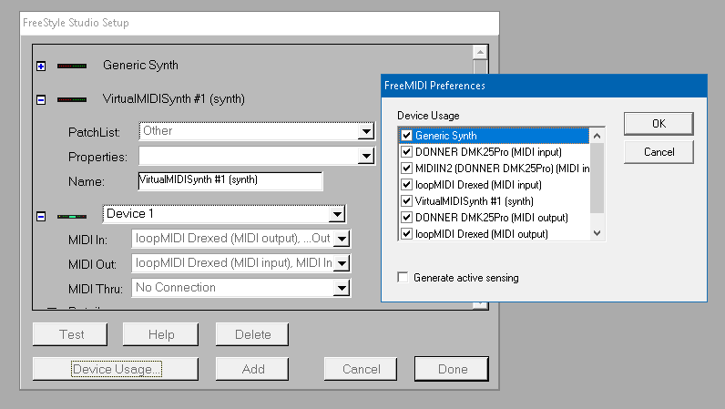

Mark Of The Unicorn - FreeStyle - Extended Help.
Oct 2025

Mark of the Unicorn is trademark of Mark of the Unicorn, Inc.
FreeStyle by Mark of the Unicorn (MOTU) was released in 1994 and
updated until the early 2000's, when it stopped being a commercial
product, and now considered abandoned ware.
It was wrongly perceived as Mark Of The Unicorn's budget, cut-down
sequencer (version 2 later included Event list editing), but at
the time it cost the same as Steinberg's Cubasis.
FreeStyle is still a very capable and unique MIDI sequencer today.
It excels at live MIDI instrument
improv,
recording and fast song building, it's notable features include:
* Trackless concept, using color coded players (instrument) with
multiple named
takes
and alternating between them quickly.
* Record and compose in linear (ie tape recording) or patterns (ie
drum machine) and interchange between them seamlessly.
* Music score notation view allows recording, editing and
printing, with basic text editing.
* Event list with step recording shortcut keys. Edit notes,
controller or System Exclusive data etc.
* Remote control via MIDI Keyboard. Transport controls and cycle
through sections, players, takes and sounds etc.
* Capable piano roll view with MIDI controller grid.
* Loop points with override,
* Beat detection and individual or variable tempo map.
* Key change, transpose, quantize,
* Layered sound (multiple instruments to a single player).
* Move or duplicate notes, paste to the cursor or
measure-relative.
* Modern USB and virtual MIDI device support, MIDI lock channel,
SMPTE sync.
* Standard MIDI File (.mid) import and export.
"Introducing FreeStyle. A new kind of sequencer. So powerful...
it's simple!",
VHS tape bundled with
FreeStyle.
"Summary. There's nothing else quite like FreeStyle on the
market. It feels like software designed by musicians, for
musicians.",
Sound
on Sound.
This document was originally converted from FreeStyle.hlp
file and extended with notes and guides.
Links are not configured, use your find tool to jump to sections.
Go to the start of Help
here.
From MOTU FreeStyle's 1997
web
page:
FreeStyle - Trackless sequencing and instant
notation printing ($195)
The easy and powerful way to compose music.
"Its automated transcription abilities are the best we've
ever seen."
-Keyboard Magazine
"The first program we've seen that deserves to have the title
of 'intuitive' bestowed upon it."
-Keyboard Magazine
"Fast and fun with a super coolness quotient."
"You're gonna love FreeStyle"
-Canadian Musician
Introducing the first trackless sequencer with instant music
notation. Create music intuitively using ensembles, players,
takes and arrangements. Get inspired with FreeStyle's dozens of
drum riffs, or create your own. Notate your performances as you
play. See your music on screen exactly as it will print. Get
started quickly with built-in support for dozens of popular MIDI
instruments, including any General MIDI device. FreeStyle
provides both tape recorder and drum machine style composing.
Includes 1 hour
video manual.
Quick Interface Guide.
FreeStyle uses traditional musical terms instead of DAW or MIDI
Sequencer terms:
- A collection of instruments (Players) is called an ensemble
(band, orchestra, GM MIDI, sample bank etc).
- A track is represented by it's Player (musician).
- Each Player can have one or many Takes
(a performance ie, an alternative, improv
etc)
- A Section is made up by Players and their selected (active)
Take.
- A song's Arrangement (song composing, remix, reworking, etc)
is composed from many Sections.
- The Piano Roll interface is called Graphical view/display
or Graphic editor.
- A step is one part of a time signature, ie 4 4 time
signature, a step would be a quarter note.
- A bar or measure is 4 time signatures in length, ie 8 steps
using a 4 4 time signature.
Recommend first watching FreeStyle's instructional
VHS Tape that
was part of this package.
MOTU
FREESTYLE VIDEO by LANCE ABAIR, uploaded by the video
instructor!
Or the very high quality VHS rip, with a weird reverb in the
audio:
Getting into
FreeStyle (1994) by mrjazzycharon2.
Or a combination of the two with
high
definition video from mrjazzycharon2 and Lance Abair's audio.
FreeStyle Installation.
FreeStyle v2.31,
released May 16th, 2000 was
made for Windows 95, 98, NT and 2000.
Install using
Motu_Freestyle_v2.31-PARADOX.7z
(
VirusTotal
report) as normal, enter any company and serial number,
originally from this archive
Disc 2.
Windows XP.
Install using the installer above, similar to Windows 95, 98 NT
and 2000.
In the release note, MOTU claimed that it does not run on Windows
XP, but it does with minor issues.
FS_Helper.exe is a 32bit executable and should work fine in
Windows XP however it's untested.
Windows Vista, win7, win10, win11 etc.
The installer above will not install correctly because it
creates the files in windows' older system directory structure
which was removed in Windows Vista, so it has to be installed
manually.
Extract
FreeStyle 2.3.7z (
VirusTotal
report) somewhere on your drive, ie C:\Program Files
(x86)\FreeStyle 2.3 - This is the FreeStyle application and demo
songs etc.
Extract
Freemidi.zip
(
VirusTotal
report) to C:\Windows\ (C:\Windows\Freemidi) - This is
FreeStyle's MIDI interface program and it
must be
located in C:\Windows\Freemidi for FreeStyle to work.
Copy the
Quics___.ttf
font file to C:\Windows\Fonts - This is required for the notation
score to render and print correctly.
The files above are all in
this
archive.
Mac OS 9. (FS_Helper not supported)
FreeStyle v2.31 can be installed from here.
https://www.macintoshrepository.org/173-freestyle
Version 2.31 Requirements
MC68030 processor
16 MB RAM (24 MB for PowerPC)
System 7.0.1
Note: Version 2.31 installer CD will install
2.11 on 68K Macs (same main feature set).
Virtual Machines.
Virtual Machines can be a convenient way of working
(encapsulating workflow, portable, no distractions, etc), however
older windows (95, 98, NT, 2000) versions are harder to setup
(obsolete VM driver support) and reliant on older software that's
unavailable or hard to find and are therefore not recommended.
If you are a Linux or Mac user than a
Windows
10/11 x64bit Virtual Machine is recommended and works well
however, Virtual Machines have very delayed audio and it's
strongly
recommended avoiding the Guest OS audio system for music
production, here are a few options:
* External USB sound card as a passed through sound card. Cheap or
expensive, it will fix the audio lag issue and this is relatively
convenient and easy to do.
* USB MIDI interface passed through directly to the Virtual
Machine, it will produce no audio, instead your MIDI equipment
will and without much of a delay.
* MIDI Over Lan (MIDI Over IP) is also a possible solution
to avoid audio lag but can be complicated to setup.
* Simply avoid Virtual machines by getting a cheap or 2nd hand
computer dedicated for just Windows music production.
Linux (untested).
FreeStyle might work under wine but it has to start FreeMIDI
first.
For more information running music apps, MIDI and VST's in Linux
read:
Running
Unify on Linux.
FS_Helper: Mark of the Unicorn - FreeStyle MIDI sequencer
helper.
This is a AutoHotKey
v1.1 script to improve the user interface of FreeStyle.
From: https://github.com/gwald/MOTU-FreeStyle-Helper
Download the zip file and extract all files from the
MOTU-FreeStyle-Helper-main folder into the folder where your
FreeStyle.exe is on your drive.
Contents:
- MOTU-FreeStyle-Helper-main folder.
This HTML file with it's images and also the PDF version,
FreeStyle_extended_help.pdf files.
- FreeStyle-patched folder.
Fixed bugs in the FreeStyle executable, you have to rename (or
delete) the current FreeStyle.exe and replace it with
FreeStyle-patch1.exe (VirusTotal
report).
- 56.ico
FreeStyle icon.
- Ahk2Exe.exe
AutoHotKey v1.1 compiler.
- ANSI 32-bit.bin
AutoHotKey data file.
- FS_Helper.ahk
FS_Helper AutoHotKey script text file.
- FS_Helper.exe
FS_Helper executable.
- Build_deploy.bat
Batch file to compile and deploy FS_Helper.exe to the
FreeStyle folder.
- Clear_FreeMIDI.bat Batch file that clears
FreeStyle's (FreeMIDI) MIDI settings.
Copy the FS_Helper\FS_Helper.exe to where your FreeStyle.exe is
located, or simply run the build_deploy.bat file.
Create a shortcut to FS_Helper.exe to start FreeStyle instead of
FreeStyle.exe.
When starting FS_Helper.exe it will also launch FreeStyle and
when FreeStyle is closed FS_Helper will self terminate.
FreeStyle doesn't start if the MIDI set up isn't exactly what was
configured previously. To simplify the processing of setting
everything up before FreeStyle is started, FS_Helper will run
command line batch files when starting and also when exiting.
FS_Helper looks for these two batch files:
FS_Helper\fs_start.bat
FS_Helper\fs_exit.bat
FS_Helper\fs_start.bat is called before FreeStyle starts
and can be used to setup your applications, ie:
start /B "" "C:\Program
Files (x86)\Tobias Erichsen\loopMIDI\loopMIDI.exe"
start /WAIT "" "cmd /c ping
127.0.0.1 -n 3 >nul"
start /B "" "C:\extras\MIDI
Tools\MIDIOX\midiox.exe"
start /B "" "C:\Program
Files\VirtualMIDISynth\VirtualMIDISynth.exe"
This batch file will start LoopMIDI in the background, wait for it
to start and run correctly, then starts MIDIOX and
VirtualMIDISynth, when the start batch file is finished, FreeStyle
is loaded as normal.
FS_Helper will not run fs_start.bat if FreeStyle is already
running.
FS_Helper\fs_exit.bat is called when FS_Helper detects
that FreeStyle has been closed, it can be used to close the extra
applications you started in the starting batch file, ie:
taskkill /IM
"VirtualMIDISynth.exe" /F
taskkill /IM "midiox.exe" /F
taskkill /IM "loopMIDI.exe"
/F
This batch file will terminate VirtualMIDISynth, MIDIOX, then
LoopMIDI before FS_Helper itself is terminated.
Note: If the batch file exists, they can not be empty and must
have at least a single command line to run.
If they are not
required, delete or rename them so they aren't used.
Mouse, keyboard and MIDI interface mapping.
Some of the following shortcuts are configured for use with
the "Tile Pallet Left" layout and the first column
MUST be
the Record (enabled red circle) column and then Play (solo/mute)
column must be next.
The Ensemble Pallet (window) must be under Control Pallet (ie
Windows -> Tile pallets left settings). Recommend saving your
layout via Window -> Save window layout. The left side of the
application should look like the image above.
Mouse shortcuts:
* 3 button Mouse (or
touch
pad) and laptop mouse pad interface only tested in piano
roll view (AKA Graphic or Grid view), with a single FreeStyle
(.FSL) project open:
* * Scroll wheel moves the page up and down (no shortcut
available!).
* * Horizontal scrolling with shift and scroll wheel or right
mouse button with scroll wheel, moves the page right (up) and left
(down) (no shortcut available!).
* Laptop use two finger horizontal scrolling on
mouse pad.
* * Zoom: Hold middle mouse button wheel up zooms in (F9) and
scrolling down zooms out (Shift F9).
* Laptop: Hold CTRL key instead of middle mouse
button.
* * Left mouse button with right mouse button resets the view
(F11), stops playing (ESC) and applies the "Tile Pallet Left"
window setting.
* Laptop: Use Shift + CTRL + right mouse
button.
* * Holding Alt toggles between note select and paint features,
pressing Alt with right mouse commits the toggles , doing this
twice quickly launches the Brush/Cursor Settings window.
Number row keys:
Number row 1 to 0 keys toggles Solo & Mute for the respective
player (track).
1-0 number row keys resets muting and displaying the corresponding
players (tracks) (removes all solo's).
if making visible, FreeStyle automatically switches to the player
and record enables it, and moves the record enable to another
player (track) when hiding.
Note: The original feature of the 1-0 row
numbers was to select different takes in the current selected
player, but this is similar to up and down arrows.
* Tab key with 1-0 row number keys toggles Solo'ing players
(tracks).
* Alt key with 1-0 row number keys toggles muting players (removes
all solo's) (tracks).
* Shift toggles 11 - 20. Extends the range above by adding 10, so
Shift + 1 key = player 11
Holding Shift, Alt and Tab via MIDI might
require a press after using it, to release it if it latches.
Keyboard shortcuts:
Launch help.
This in PDF.
|
F10 launches the index.html single help
file in the FreeStyle_extended_help folder if it's not
found (renamed), it will try to launch the PDF version
FreeStyle_extended_help.pdf, lastly if not found it will
launch the normal windows help file, FreeStyle.hlp
(Requires winhlp32
for Windows Vista or newer). |
Launch manual.
Original Apple version.
|
Ctrl F2 downloads then launches the FreeStyle
(v1 Mac) manual PDF. |
Launch VHS guide.
Youtube video.
|
Ctrl F5 launches the included FreeStyle VHS , you can
change the video URL in FS_Helper.ahk and run the
build_deploy.bat file. |
|
|
Show/hide Players
|
Shift with up and down arrows goes up and
down the ensemble players holding the displayed player's
piano roll, while Shift with left and right arrows goes up
and down respectively, hiding the current player (only
hiding with no muting).
|
| Toggle Metronome |
W key toggles metronome (remapped from CTRL Y) - double
hit for metronome settings. |
| Set Rewind Marker |
A Key places the rewind marker (remapped from Shift
F2). |
| Loop toggle |
S key toggles loop. With Shift key it enables and
resets the loop back to the start - Default length is 8.
Change it via the FS_Helper script: RESET_LOOP_END_BAR :=
8
|
| Forward loop |
D Key Moves forward the loop markers. See Advance
Record Loop (remapped from Ctrl F3) |
| MIDI Panic |
Q key does a MIDI Panic - sends off for everything
MIDI. |
| Reset players |
E Key will hide and mute or show and unmute and unsolo
(resest) ALL players (tracks) - Configurable via the
script (clear_all_disable). |
| Toggle Ensemble |
V key toggles the Ensemble min and max window resize.
Minimized window must be the default width and the
maximized window width must be the default width or wider.
See "Resizing the Ensemble palette" for more information. |
| Record |
B Key toggles record (remapped from ` shortcut). Shift
B toggles wait for note when the cursor is in the pickup
measure. |
| Pause |
N key mapped to FreeStyle's pause button which holds
the current position and without sending note off's etc so
it is audible. |
Duplicate Take
|
M key mapped to duplicate the current take (remapped
from Alt F7). |
Useful FreeStyle shortcuts to remember:
Left/Right arrows
|
Cycle through players. |
Up/Down arrows
|
Cycle through takes in the current player. |
Enter
|
Return to rewind cursor or start. |
Space bar
|
starts and stops playing at current position. Stop
sends notes off.
|
F11
|
Zoom to normal or selected. |
F12
|
Zoom to fit. |
The above shortcuts are also available via MIDI CC extends
FreeStyle's Remote Controls.
The MIDI shortcuts are only mappable to CC events (not notes) and
configured via the FS_Helper script.
Make sure your MIDI controller is connected and working.
Close FreeStyle and edit the FS_Helper\FS_Helper.ahk file, all the
MIDI settings are at the top of the file.
First, to enable MIDI shortcuts, change this line from:
midiInDeviceId := -1
To:
midiInDeviceId := 0
And also activate debugging by changing this line from:
midiInDeviceDebug := 0
To:
midiInDeviceDebug := 1
Every time you make a change to FS_Helper.ahk you have to:
recompile and deploy and restart FS_Helper. Running
build_deploy.bat located in FS_Helper folder does this for you.
You will get a message window displaying all the available MIDI
devices, remember the device you want to use for MIDI input.
Change this line from:
midiInDeviceId := 0
To:
midiInDeviceId := X
Where X is the number corresponding to your MIDI input device from
the message window.
Save and run build_deploy.bat.
Next, when you change a CC button on your keyboard, FS_Helper will
display the CC number, this can be helpful for mapping your
keyboard to the shortcuts, by simply replacing the shortcut values
with your keyboard's button numbers. For example, if you're
keyboard #1 button sends a value of 61, set the following line:
MIDI_PLAYER_1 := 51
To:
MIDI_PLAYER_1 := 61
When you are finished mapping the shortcuts, you can turn off the
debugging by setting the debug value back to zero, ie:
midiInDeviceDebug := 0
To disable MIDI shortcuts, reset the midiInDeviceId to -1:
midiInDeviceId := -1
The PC keyboard shortcuts aren't great and can be also changed,
but require some AutoHotScript v1 knowledge, all keyboard
shortcuts are at the bottom of the FS_Helper.ahk file.
Note: All the shortcuts above apply to all windows with in
FreeStyle and replace the original functionality, ie the A to Z
keys will not insert sections in the Arrangement windows as per
the original shortcuts.
PS: Sorry about the horribly messy code, it's was all done by
trail and error and never cleaned up.
See a table of FreeStyle's keyboard
shortcuts here.
Notes and tips.
* FreeStyle has only, one single level of undo and redo,
which was common with early sequencers. To remedy this, you can
duplicate the current take (Alt F7) or section (CTRL D).
* Copy and paste works but not with copy past managers and using
it creates a persistent (and annoying) warning message when
clicking out of FreeStyle about not enough memory.
So it's not recommended, hold the CTRL key and moving the
selected notes will create a copy in a different location.
* If the cursor goes past the Loop points and set to
active, it will automatically snap back into the loop. However,
if the cursor is before the loop points, it will not.
This issue (bug?) is also the same with the Rewind Marker. Also
the rewind doesn't go back to the loop's beginning, instead the
sections start point.
* FreeStyle is relatively stable when configure correctly, if
you are experiencing a crash during the same play back try
clearing the MIDI configuration and try again. If it still
persist it's most likely a bug. Try reading the Readme!.doc
"Running on a slow computer" section to avoid crashing.
*
Single MIDI devices that receive a lot of data can cause
FreeStyle to crash if the MIDI device doesn't perform as
expected, ie dropped messages. Recommend to have multiple
virtual MIDI devices to share the load over CPU cores.
* If your audio is generated on your sound card, it's
recommended to use audio devices that lets you control the audio
buffer size for low latency and avoiding Windows' General MIDI
because it's high in latency.
MIDI device setup.
* FreeStyle will not start and just hang or crash before starting
if there are no MIDI device (with a MIDI driver) in your device
manager window and configured and running correctly, and to play
MIDI audio from your computer you need to have a MIDI playback
device installed or external MIDI devices etc. To clear your MIDI
settings run: del /F /Q C:\Windows\Freemidi\FMSPREFS and restart
FreeStyle.
* Your MIDI device should be fully working and be able to have
multiple
MIDIOX instances
connected and running, if it doesn't the MIDI FS_Helper features
(explained above) will not work, check your driver settings etc.
You should know how your MIDI controller device interfaces (Device
Name, MIDI2, MIDI3 etc) with DAW software and what how it sends
what where.
* If you change your MIDI setup and start FreeStyle, it may cause
a crash, in which case you have to clear your FreeMIDI
configuration: Run: del /F /Q C:\Windows\Freemidi\FMSPREFS and
restart FreeStyle.
* FreeStyle doesn't seem to acknowledge any channel data from MIDI
In. All CC's, notes etc via MIDI In will
only be applied
to the current record activated player only.
* FreeMIDI, FreeStyle's MIDI interface typically see's MIDI
keyboards as a
MPU-401
device (an early Roland's MIDI equipment standard) if it
doesn't the piano keyboard wont work and only the controllers will
work. Tick your Hardware input device, but don't setup a virtual
device for it. FreeStyle will still use it, sometimes even if it's
not ticked.
* Use
LoopMIDI,
not the free
loopbe1,
it mutes with false positives (feedback loops) and it can't not be
configured.
* Generic Synth is Microsoft's GM MIDI device, you can disable it
by unticking it in Device Usage window (AKA FreeMIDI Preferences).
Using your MIDI device (as a MPU-401) and the Generic Synth is the
simplest and quickest setup.
The next easiest setup is when the device is "known" by FreeMIDI,
which means it understands the device's in and out and channel
transmit/receive settings.
There are two types of these, GM MIDI and non-GM MIDI (or at least
it couldn't detect GM MIDI). Non GM MIDI devices only require
telling FreeMIDI what it is ie GM MIDI or sampler, etc and that's
it.
VirtualMIDISynth
is an example of non-GM MIDI and is easy to setup and use.
The most complicated setup is telling FreeMIDI the device in, out
and channel send and receive settings manually, this is detailed
below.
For further details on MIDI setup see the help info by
searching for "Device Usage button".
Manual MIDI setup is complicated at first and often involves a lot
of crashing to set up correctly, this is "normal".
Note: The Device Usage... window will automatically filter
the device's ports (in/out) to the correct FreeMIDI and
FreeStyle in/out configuration - Only select the In and Out
you need!
Sometimes it's devices and mapping is incorrect and requires
resetting. Run: del /F /Q C:\Windows\Freemidi\FMSPREFS and restart
FreeStyle.
Firstly, my understanding is that the MIDI in and out
configuration is opposite to how we would see it today.
You are setting up a virtual device in FreeMIDI with In and Out
and it's seen from the FreeMIDI's virtual devices' point of view.
FreeMIDI's Virtual device MIDI In <- FreeMIDI's
ticked device MIDI Out.
If that doesn't make much sense to you, then you are not alone!!!
But that is my best understanding of how to configure it, and
making some kind of sense!
A more verbose way to see it is by using the interactions and
configurations between the two separate applications, FreeStyle
and FreeMIDI.
FreeStyle's MIDI Out -> to FreeMIDI's device MIDI In (which
is setup to FreeMIDI's ticked device MIDI Out).
Or
FreeStyle's MIDI Out -> to FreeMIDI's device MIDI In ->
which then goes to the actual device. [And thus a FreeStyle MIDI
Out?]
I'm not 100% sure on how it's routing, and why the device's out is
selected as an input but it works.
So, just pick your device and MIDI output:
MIDI in: Device (MIDI output).

Using the image above, the setup can be explained as:
FreeStyle's MIDI Out -> to FreeMIDI's device MIDI In ->
to loopMIDI.
FreeStyle's MIDI In <- from FreeMIDI's device MIDI Out <-
(empty).
Or just:
MIDI in: LoopMIDI
FreeStyle sends MIDI to FreeMIDI which then forwards it to the
device, which is
LoopMIDI.
MIDIOX listens to LoopMIDI and displays and forwards MIDI to
Microsoft's GM MIDI device to play the notes. This is a good way
to debug your setup.
Apart from hardware controllers,
DO NOT SEND ANY OTHER MIDI In
- It will typically crash FreeStyle, especially if using LoopMIDI,
other routing might work, so do your own research.
The only way to stop FreeStyle from receiving MIDI is
not to
tick the device's (MIDI input) In the Device Usage...
window, as in the image above, leave it with no connection.
Setting up as a modern DAW.
You can use FreeStyle similar to a modern DAW but obviously with
no audio features and no ability to record external instrument
changes as explained above, unless it's recorded via FreeStyle and
sent as normal MIDI data.
You can add virtual MIDI devices (ie
LoopMIDI)
and external, standalone programs, including some VSTi's.
Individual Instruments
Juce apps with
MIDI interface (very stable).
VSTi to Standalone adapter
NanoHost,
savihost,
generally very stable.
Multi instruments like
Unify
(similar to a VST host), paid but flexible and performs
well.
VST hosts
vstHost,
can cause crashes when used on a single MIDI device, but very
powerful.
VSTBoard,
very flexible and stable,
documented here and
videos here.
pedalboard2
simple and works well, well documented, may crash scanning for
VSTs.
Paid VST hosts:
VCV,
Cantabile .
Sound font players
Great General MIDI SF2 player
virtualmidisynth
(light, stable and with it's own MIDI instrument driver).
SFZ players,
ie Sforzando, similar to SF2 but its text and wave based, so it's
easier to edit.
Decent
Sample player, similar to SFZ.
If you are planing on creating your own samples, this
software is
helpful, it's in English, with tutorials with
English
subtitles.
As long as the external instruments are preconfigured correctly
and do not change during the recording, FreeStyle will play them
as expected.
You can mix down the playback into an audio file (.mp3, .ogg
etc) using an audio program like audacity to record what's
playing through the speakers.
FreeStyle Files
It's recommended to keep a back up of these if you are making
setup changes.
Your MIDI song project file .FSL (FreeStyle Library)
Stores everything, including:
Player information and Layer sounds settings.
Stationery (like formated book that's empty) .FST (FreeStyle
Template)
Stores everything except notes and controller (velocity etc) data.
See "Pop Song Template.fst" in the demo folder, for a pop song
arrangement template with players in the ensemble.
S.S Stationery .FSS (FreeStyle Song Structure Template)
Stores only song structure elements, sections and arrangements.
FreeStyle.fsp (FS Preferences?)
Default metronome
Saved window layout
Remote Controls (for MIDI keyboard)
fsconfig.fms (FS MIDI Settings)
FreeStyle's MIDI device configuration configured in Studio Setup
window, this is how FreeStyle uses the MIDI devices.
Freestyl.fpl (FS Player Library?)
Player Library
Ensemble Library
C:\Windows\Freemidi\FMSPREFS - FreeMIDI
FREEMIDI is the way FreeStyle understands the OS level, MIDI
devices, these devices are then displayed in the Studio Setup's
Device Usage window.
It can get corrupted with regular changing, deleting it and
FreeStyle will recreate it.
FreeStyle.GID
Ignore: Often hidden, Windows 95 and 98, to improve access and
indexing of help topics in the Windows Help system.
FreeStyle.exe fixes
Some bugs that have been patched here:
https://github.com/gwald/MOTU-FreeStyle-Helper/tree/main/FreeStyle-patched
Patch 1
Event list window would crash FreeStyle randomly.
Windows XP issues.
Hangs on exit.
It doesn't close correctly, it just hangs and cannot be
terminated.
To fix this issue, simply run:
taskkill /F /IM FreeStyle.exe
Or create a batch file (ie kill_FS.bat) with that line:
And when you want to close FreeStyle, just double click the batch
file.
Hangs on Turn all Notes off.
Selecting Turn all Notes off from the Setup menu will hang
FreeStyle, don't use it, click the Stop button a few times,
saving your file or changing your setup will also end all notes.
Windows Vista or newer issues.
No integrated help system.
FreeStyle shipped with the old and deprecated windows help system
(winhlp32) which wont work unless
installed
manually (untested) however this is not mandatory and
alternative is using FS_Helper (this document).
Manual position change doesn't update.
The cursor position values at the top of the Control Palette
and the Event List's insert time are modifiable when entering
numbers and hitting enter, and the cursor moves to the correct
place, however the new values don't update until played again. It
works fine in Windows XP.

The Ensemble window maximize button might not minimize back.
Clicking the resize button does not return it to it's original
size.
It didn't work in Windows 10, but worked in Windows 11 for me.

FreeStyle
Help Contents
READ THIS FIRST! FreeStyle Quick-Start Guide
FreeStyle Basics
Additional FreeStyle Topics
FreeStyle Tutorials
FreeStyle Menus
Preferences
Keyboard shortcuts
Tips and Troubleshooting
How to set up your MIDI instrument for FreeStyle
Quick-Start Guide (1 of 6)
Welcome to FreeStyle!
This Quick-Start guide will help you get started as quickly as
possible.
Check These Things First
Before you run FreeStyle for the first
time, review the following checklist.
 Have you installed
a Windows MIDI driver in your computer's system?
Have you installed
a Windows MIDI driver in your computer's system?
You must
install at least one MIDI driver to run FreeStyle. Even if you
just want to explore FreeStyle and don't intend to record or
play back any music, a MIDI driver must still be present. For
more information, see Installing A MIDI Driver.

If you want FreeStyle to play music,
do you have a MIDI playback device connected to (or installed
in) the computer?
FreeStyle
requires MIDI-equipped hardware to record and play back music.
For playback, you can use a MIDI-equipped sound card or an
external keyboard synthesizer or sound module. For more
information, see Setting Up MIDI Playback
 If you want to record your own music into FreeStyle, do you have
a MIDI keyboard or other controller connected to the computer?
If you want to record your own music into FreeStyle, do you have
a MIDI keyboard or other controller connected to the computer?
For more
information, see Connecting a MIDI Controller.
Once you've completed the checklist, use the browse button
(>>) at the top of this help window to continue with
this Quick-Start Guide.
Quick-Start
Guide (2 of 6)
Checking The Settings In Your MIDI Device
Before you proceed further, click the manufacturer of your
MIDI playback device below. These help topics, listed by
manufacturer, tell you how to make crucial settings in your
MIDI instrument that allow FreeStyle to initialize the
instrument. Doing so lets you access the device's sounds as
easily as possible from within FreeStyle. It is best to do
this before you launch FreeStyle for the first time.

If
you have a sound card, you can skip this step.
If your MIDI device is not listed, read the section called
"General advice about setting up your MIDI device". It will
help you figure out how to best set up your instrument for
use with FreeStyle.
After you jump to one of the topics below, click the
"Return to Quick-Start Guide button (shown below) to jump back
here.

Alesis
E-mu Systems
Ensoniq
Kawai
KORG
Kurzweil
Roland
Yamaha
General advice about setting up your MIDI device
Quick-Start Guide (3 of 6)
Opening FreeStyle For The First Time
Now you are ready to run FreeStyle for the first time!
1.
Make
sure all of your MIDI gear is switched on.
2. Double-click the
FreeStyle icon on your hard drive to open the program for
the first time.
After a brief moment, the FreeStyle start-up screen appears
(displaying the FreeStyle logo), followed by the Welcome to
FreeStyle window shown below. If FreeStyle cannot find a
MIDI driver in the system, it will notify you instead and
exit back to Windows. If this happens, see Installing a
MIDI Driver.
The Welcome to FreeStyle Window. Note: the directions in
this window may be slightly different depending on your
MIDI hardware.

3. After
reading the "Welcome to FreeStyle" window, click OK to
proceed to the Studio Setup window shown below, which lets
you tell FreeStyle about your MIDI gear.
If you have a MIDI-equipped sound card in your computer, it
should appear in this window, and no further settings should
be necessary for the card. The same goes for MIDI
instruments that you might have connected directly to the
computer (via a serial cable instead of a MIDI interface).
If you have MIDI devices connected to a MIDI interface,
you'll see a generic General MIDI device in the window as
shown below. Replace the Generic device with your MIDI
device by choosing it by name from the drop-down list.
4. When you are
finished with the Studio Setup window, click "Done".
If you don't see your MIDI device listed in the Studio Setup
window drop-down list, see:What to do for MIDI devices
that do not appear in FreeStyle's list.
FreeStyle's Studio Setup window. To get information
about an item in the window below, click it.

Quick-Start Guide (4 of 6)
Opening A FreeStyle Document
By now, you should have just clicked "Done" in the Studio
Setup window (as shown in the previous help topic). FreeStyle
will now open a new, untitled document. If it doesn't for some
reason, choose New from the File menu.

Quick-Start
Guide (5 of 6)
Auditioning Players
Now you should check your players to make sure they have the
correct instrument sound.
1.
Audition
several players by clicking their names and playing a few
notes on your MIDI keyboard.
Does the sound you hear match the name of
the player? For example, does the piano player sound like a
piano? If you are using a General MIDI device, the answer is
probably Yes. If so, you are ready to begin
using FreeStyle!
2. If you don't hear the
correct instrument sounds, open up the Ensemble palette to
check the players' sound assignments.


3. Click
each player's name, choose a sound from the sound menu that
is appropriate for that player, and try playing a few notes
again.
If you now hear the correct sound, choose
Edit Player Library from the Setup menu. Choose each player
from the Player pop-up menu at the top of the
dialog box and select a sound from the Sound pop-up menu
below.
4. If you still don't
hear the correct sound for the first player (or no sound at
all), check the table below.
Problem or situation
|
What to do |
The Sound pop-up menu lets you choose
sounds, but players don't have an appropriate sound
assigned to them yet.
|
See Setting Up Players for a non-General MIDI device. |
| The Sound pop-up lets you choose sounds,
but it displays generic patch names such as "Patch-1,
Patch 2" etc. |
If you see generic sound names as described, it means
that FreeStyle isn't familiar with your MIDI instrument.
But don't worry. You can still use it with FreeStyle. All
you have to do is determine the MIDI program change (or
"patch") number that matches the sound you want in your
MIDI device. Then just choose that number from the sound
pop-up list. Most MIDI instruments list their internal
sounds by program change number in the manual. For more
information, see What to do if you see a generic sound
list.
|
| You choose a sound by name, such as Piano,
but you don't get that sound and instead get a different
sound, such as a clarinet. |
This probably means that your MIDI device is in the
wrong mode, or its bank-select setting needs to be turned
on. See Checking the settings in your MIDI device
and then Exit FreeStyle and re-open it after you've made
the necessary changes to the settings in your MIDI
instrument. You may also find it helpful to review the
help topic General advice about setting up your MIDI
device.
|
| You see MIDI channels in the sound pop-up
menu instead of sounds. |
See What to do if you see MIDI channels instead of a
sound list.
|
| You don't hear any sound at all. |
Check cables, headphones, and volume settings. Make sure
the instrument is properly set for multi-timbral operation
as described in FreeStyle's on-line help. Try playing the
instrument directly, without FreeStyle. Can you hear it?
If you can, but then you can't when you run FreeStyle,
you've probably got a MIDI communication problem. Does
your MIDI interface have activity lights on it? Do they
blink when you play your keyboard into FreeStyle? If not,
do you have other MIDI software you could test as well? |
Quick-Start
Guide (6 of 6)
Congratulations!
You've completed your FreeStyle installation and are ready to
begin making music. For more information, see the topics in
FreeStyle Help Contents.
For more information:
FreeStyle On-Line Help Contents
Installing
A MIDI Driver 
Installing a MIDI Driver
A MIDI driver is software that you install into Windows that
allows FreeStyle to communicate with your MIDI device(s) for
playback and recording. A Windows-compatible MIDI driver
should have been included on a disk with your MIDI-equipped
sound card, MIDI interface, or MIDI instrument(if it has a
built-in MIDI interface). If you do not have a Windows driver
for your device, contact the manufacturer.
>> If you don't yet have a MIDI driver installed, you
must install it before running FreeStyle. FreeStyle requires
you to install at least one MIDI driver.
Follow the appropriate procedure
below to install or update your MIDI driver(s) in Windows 95,
98, NT, or 2000.
If you need to add a MIDI device to your computer, first
turn off your computer and physically install or connect your
MIDI device (multi-port interface, sound card, etc.). Be sure to
check the device documentation for the proper physical
installation procedure. Once the device has been installed or
attached, turn your computer back on.
IMPORTANT: After the driver has been installed and configured,
you will be prompted to restart Windows. You must restart
Windows for the new driver to take effect. When Windows
restarts, your MIDI device should be ready to use.
>> NOTE: If the Wizard didn't list your MIDI device and
you don't have a CD or diskette for it, or for technical
support on loading and configuring the device's driver, you
should contact the device manufacturer, NOT Mark of the
Unicorn, Inc. or Microsoft Corporation.
How to install or update a MIDI driver in Windows 95 or 98
If the new device is Plug & Play, Windows
should either automatically load the device's driver files or
prompt you to provide them (probably by inserting a floppy
diskette or CD included with the device). Windows 95/98 should
be able to load and configure the appropriate driver for the
device automatically. If this is the case, you can stop
reading this file right now since the Windows 95/98 Plug &
Play system will take care of everything automatically.
If the new device is not Plug & Play, you will have
to load and configure the driver yourself. To do so, open
Control Panel and double-click the "Add New Hardware" icon. In
general, follow the Add New Hardware wizard's on-screen
instructions.
[ WINDOWS 98 ONLY: ]
[ You will see a dialog that says, "Windows will now search
for any new Plug and Play devices on your system. ... To
continue, click Next." You must click Next and wait a few
seconds, even if you know that your device will not be found.
Next you will see a dialog that says, "Is the device that you
want to install listed below?" Select the "No" radio button
and click the "Next" button. Next you will see a dialog that
says, "Windows can now search for hardware that is not Plug
and Play compatible, or you can select your hardware from a
list. ... Do you want Windows to search for your new
hardware?" Select the "No" radio button and click the "Next"
button. ]
IMPORTANT: When the Wizard
asks...
>> "Do you want Windows to search for your new
hardware?"
...select "No". This will allow
you to specify the MIDI device yourself. Selecting "Yes" to
allow Windows to search for non-Plug & Play MIDI devices
MAY NOT WORK. If you know what kind of device you want to add,
you are better off selecting "No" and then manually specifying
the device, as described below.
After selecting "No" and clicking "Next", the next step
in the Wizard is to specify a hardware type. From the Wizard's
"Hardware types" list, scroll-down and choose...
>> "Sound, video and game controllers"
This type encompasses MIDI
devices. Click "Next" and then determine if your MIDI device
appears in the Wizard's list. If it does, select your device
from the list, click "Next" and skip the following paragraph.
If the Wizard did NOT list your device, but you DO have a
CD or diskette for the device, insert the CD or diskette into
your computer and click the special "Have disk..." button to the
right. In the resulting "Install From Disk" dialog, specify the
drive letter of your floppy or CD drive, followed by a colon and
a backslash, and then click "OK". A list will appear containing
one or more entries. Choose the entry appropriate for your MIDI
device and click "OK".
Continue to follow the Wizard's instructions. When it finishes,
a configuration dialog for your MIDI device may appear. At this
point, you should consult your device's documentation for how to
properly configure it using the dialog.
>> IMPORTANT: After the driver has been installed and
configured, you must restart Windows for the new driver to
take effect.
How to install or update a MIDI driver in Windows 2000
Open Control Panel and double-click the
"Add/Remove Hardware" icon. Follow the directions given by the
Add/Remove Hardware wizard. When asked to "Select the hardware
task you want to perform," click on the"Add/Troubleshoot a
device" radio button, then click the "Next" button. Windows
2000 will then search for Plug & Play devices. If the new
device is Plug & Play, Windows 2000 should either
automatically load the device's driver files or prompt you to
provide them (probably by inserting a floppy diskette or CD
included with the device). Windows 2000 should be able to load
and configure the appropriate driver for the device
automatically. If this is the case, you can stop reading this
file right now since the Windows 2000 Plug & Play system
will take care of everything automatically.
If the new device is not Plug & Play, you will have
to load and configure the driver yourself. In the next window,
select "Add a new device" from the Devices list and then click
on the "Next" button. When asked if you want Windows to search
for your new hardware, select "No, I want to select the hardware
from a list" and click on Next. Scroll down the list of hardware
types and select "Sound, video and game controllers," then click
on Next.
In the next window, you are presented with a list of
Manufacturers and Models for devices that Windows 2000 knows
about. If your device is in the lists, choose the correct
manufacturer and model and then click on Next. Otherwise, if you
have a CD or floppy that came with your device, click on "Have
Disk." In the resulting "Install From Disk" dialog, specify the
drive letter of your floppy or CD drive, followed by a colon and
a backslash, and then click "OK". A list will appear containing
one or more entries. Choose the entry appropriate for your MIDI
device and click "Next". Windows may inform you that it is using
"default settings to install the software for this hardware
device." If so, click Next again. Windows may also inform you
that "The software you are about to install does not contain a
Microsoft digital signature." Click "Yes" to continue the
installation. If the"Files Needed" dialog appears, use the
"Browse" button to select the mentioned file on your floppy or
CD, and then click "OK."
Continue to follow the Wizard's instructions. When it finishes,
a configuration dialog for your MIDI device may appear. At this
point, you should consult your device's documentation for how to
properly configure it using the dialog.
>> IMPORTANT: After the driver has been installed and
configured, you must restart Windows for the new driver to
take effect.
How to install or update a MIDI driver in Windows NT
Open Control Panel and double-click the
"Multimedia" icon. Click on the "Devices" tab at the top of
the "Multimedia Properties" window. Click on the plus sign to
the left of "MIDI Devices and Instruments" to see a list of
MIDI drivers that you have installed. Click on the "Add"
button at the bottom of the window. If your device appears in
the "List of Drivers," select it and click the OK button. If
your device does NOT appear in the "List of Drivers" in the
Add window, or if you have a CD or diskette that came with
your device, select "Unlisted or Updated Driver" at the top of
the list and then click the OK button.
In the resulting "Install Driver" dialog, specify the
drive letter of your floppy or CD drive, followed by a colon and
a backslash, and then click"OK". A list will appear containing
one or more entries. Choose the entry appropriate for your MIDI
device and click "OK".
Continue to follow the Wizard's instructions. When it finishes,
a configuration dialog for your MIDI device may appear. At this
point, you should consult your device's documentation for how to
properly configure it using the dialog.
>> IMPORTANT: After the driver has been installed and
configured, you must restart Windows for the new driver to
take effect.
Setting Up
MIDI Playback 
FreeStyle requires MIDI-equipped hardware to record and play
back music. For playback, you can use one of the following:
A MIDI-equipped sound card
MIDI-equipped sound cards ship with a MIDI
driver, which you have probably already installed. If so,
FreeStyle should automatically recognize the driver and card
when you first run FreeStyle. If you know for sure that the
card's MIDI driver hasn't been installed yet, do so now. See
Installing a MIDI Driver for more information.
An external keyboard synthesizer or sound module
If you have MIDI keyboard synthesizer or sound
module for playback, there are several ways it could be
connected to the computer, depending on your hardware. Below
are several of the most common ways:
Figure 1: Several common ways to connect a MIDI playback
device.

For more information about playback devices,
see:
Guidelines for choosing a playback device
Connecting a
MIDI Controller 
To record music into FreeStyle, you need
an electronic keyboard synthesizer or other MIDI controller.
There are several ways a MIDI controller could be connected
to your computer, depending on your hardware. Below are
several of the most common ways:
Figure 2: Several common ways to connect
a MIDI controller.

FreeStyle Basics
Overview
The sections below cover the basic tasks
and features in FreeStyle that have to do with recording and
playing back your music.
Control Palette
Graphic Editing View
Notation View
Event List Window
The Ensemble Palette
Sections
Songs
Choosing the current section or song
Showing and hiding players
Choosing what to record into
Tempo
Meter (time signature)
Key signature
Step Recording
Control
Palette (1 of 7)
Overview
The Control Palette provides buttons that
look just like the controls on a CD Player or tape deck: play,
stop, pause, rewind, and record. Use these buttons to get
around in your music. They operate just like a standard tape
deck, except that things happen instantly because you don't
have to wait for tape to rewind.
The counter shows the current playback location in the
music. The location is displayed in measures, beats, and ticks
(there are 960 ticks per quarter note) or in minutes, seconds,
and tenths of a second.
The tempo slider lets you change the tempo of your music at any
time. Unlike a tape deck or CD player, however, changing the
tempo of your music won't affect its pitch. The Tempo Mode menu
lets you play your music at a constant tempo or a variable,
changing tempo as determined by a tempo map that you have
created. The Record Mode menu lets you record to a click or
freely without one.
Tempo is displayed in beats per minute (bpm). Drag the tempo
slider to change the tempo, or type in a tempo. In the Variable
tempo mode, the slider is usable only while recording. In the
Constant or % Variable tempo modes, it adjusts the overall tempo
of your song.

Resizing and closing the control palette
The Counter
Record Target
Record mode menu
Metronome button
Tempo mode pop-up
Control
Palette (2 of 7)
Resizing & closing the control palette
Click the resize button on the right-hand
side of the Control palette title bar to collapse it into a
smaller size as shown here. To close it entirely, click the
close box on the left-hand side.

Control
Palette (3 of 7)
The Counter
The counter displays the current playback
location in the music in measures, beats, and ticks. (A tick
is a very short subdivision of a beat. There are 960 ticks per
quarter note.)
The time format button to the right of the counter cycles
between three time formats:
 measures|
Beats| Ticks
measures|
Beats| Ticks
 minutes:seconds:tenths
minutes:seconds:tenths
 SMPTE time (hours:minutes:seconds:frames)
SMPTE time (hours:minutes:seconds:frames)

Control Palette (4 of 7)
Record Target
The Record Target is important because
it shows the currently record-enabled player, the current
take for that player, and the section being recorded into.
Many features in FreeStyle depend on the currently
record-enabled player, so this information is prominently
displayed here.

Control Palette (5 of 7)
Record Mode menu
The Record mode pop-up menu lets you
choose among three different ways of recording in FreeStyle:
 Play to Metronome
Play to Metronome
 Sense Tempo
Sense Tempo
 Sense Tempo Swing
Sense Tempo Swing
The first mode is the most conventional one: FreeStyle
produces a metronome click (or a 'riff') and you follow
FreeStyle as you record. The Sense tempo modes let you record
a rubato performance without listening to an audible click.
For details, see Sense Tempo Recording.

Control
Palette (6 of 7)
Metronome button
Click the metronome button to turn the
audible metronome click on or off. Double-click the button to
adjust the click settings.

Control
Palette (7 of 7)
Tempo mode menu
The tempo mode menu lets you choose among
three different tempo modes:
1. Constant
FreeStyle runs at a steady tempo set by the
slider.
2. Variable
FreeStyle follows a tempo map that has tempo
changes.
3. % Variable
FreeStyle follows a tempo map that has tempo
changes, and it also lets you adjust the overall tempo with
the tempo slider in the Control Palette.

Graphic
Editing view (1 of 13)
Overview
Also known as Piano Roll, FreeStyle
provides two intuitive environments in which to view and edit
your music: the graphic editing and notation views. These
views are where you'll do the majority of your work in
FreeStyle. Both views exist in the same window, and you toggle
between them using the buttons shown below. Think of them as
two windows through which you view the same music.

Both views can show any combination of
players at any time. Just highlight the player names you want
to see in the Ensemble palette. In the Graphic Editing view,
each player is shown in a unique color or pattern (depending
on the setting in the Preferences command). In the notation
view, each player gets its own staff or grand staff.
Both views can display any section or song in the
document. Just choose the desired section or song from the
pop-up menu at the top of the window. When you view a song, you
see all of its sections together at once. The boundaries between
sections are indicated by heavy vertical lines in the note grid.
Using the cursor buttons
Using the scrolling playback wiper
Working with the pitch ruler to determine pitch
Changing a note's duration
Changing a note's pitch
Duplicating a note
Using cursor snapping for rhythmic precision
Selecting notes for editing
Inserting notes by hand
Zooming in to increase accuracy
Opening the note detail window for precise note info
Choosing a time signature (meter)
Graphic Editing view (2
of 13)
Using the cursor buttons
These three cursor buttons change the
cursor. Use the arrow to drag and select notes. Use the
paintbrush to draw in notes with the mouse. Use the text
button (available in notation view only) to insert text of
any kind.

Graphic
Editing view (3 of 13)
Using the scrolling playback wiper
The scrolling wiper indicates the
current playback location. Click in the time line to move
it. Drag it to "scrub" the music.

Graphic
Editing view (4 of 13)
Working with the pitch ruler to determine pitch
The pitch ruler shows you the pitch of
the notes. (Middle C is C3.) Keys animate during playback,
just like a player-piano. Click the keys to hear the pitch
(using the instrument played by the currently record-enabled
player). Ctrl-drag to magnify a range of notes. Double-click
a key to select all notes of that pitch. Alt-drag to select
all notes within a range.

Graphic Editing
view (5 of 13)
Changing a note's duration
To change durations, hold the cursor near
the end of a note (or one of several selected notes) until you
see this hand. Then click and drag.

Graphic Editing view (6 of
13)
Changing a note's pitch
To change pitch, drag notes up or down. To
change their time, drag them left or right. This works with a
single note, as well as with a group of selected notes.

Graphic Editing view (7 of
13)
Duplicating a note
To duplicate notes, hold down the Ctrl key
while dragging.

Graphic Editing view (8 of
13)
Using cursor snapping for rhythmic precision
When dragging, you can make the cursor
"snap" to a rhythmically even grid by double-clicking the
arrow button to open the Brush/Cursor Settings. Check the
Cursor snaps to grid option, and choose a resolution from the
pop-up menu. If you only want to temporarily turn on grid
snapping, hold down the shift key when you drag.

Graphic
Editing view (9 of 13)
Selecting notes for editing
To select a group of notes, drag over
them. Or shift-click each one.

Graphic Editing view (10 of
13)
Inserting notes by hand
To insert notes by hand, drag from left to
right with the brush cursor. Drag up and down to set the
pitch. Use the cursor settings to control the duration and
loudness of the notes you brush in.

Graphic Editing view (11 of
13)
Zooming in to increase accuracy
To magnify a portion of the note grid,
hold down the Ctrl key and drag over it. This is great for
detailed work. To return to the previous magnification, choose
Zoom Back from the View menu. You can also zoom using the zoom
controls at either end of the scroll bars.


Graphic Editing view (12 of
13)
Opening the note detail window for precise note info
Double-click a note to open the Note
detail window.

Graphic Editing view (13 of
13)
Choosing a time signature (meter)
To choose a time signature (meter) for
your song, press on the meter pop-up menu shown here. It's
located in the upper left-hand corner of the Graphic
Editing/Notation view.

Notation
view (1 of 12)
Overview
The notation view displays your music in
standard music notation. You can view any section or song at
any time by choosing it from the View pop-up menu at the top
of the window. Each player is transcribed on a single staff or
"grand staff", depending on the instrument. Players can be
shown or hidden at any time using the Ensemble window.
Dynamic transcription
What you see is what you get
Automatic instrument part transposition
Changing a note's pitch
Duplicating a note
Changing a note's duration
Inserting notes by hand
Using the scrolling wiper in notation
The shaded border in the notation view
Changing the magnification in the notation view
Notation Preferences
Notation
view (2 of 12)
Dynamic transcription
The notation display is dynamic: you can
fully edit the music using the same conventions as graphic
(Piano Roll) editing. Changes in either view are immediately
reflected in the other. When you record, the staves
immediately fill up with the notes you play as you record.
Unlike other simplistic music software programs, FreeStyle's
notation transcription is a sophisticated interpretation of
the raw MIDI data you record. For example, if you play swing,
turn on the Straighten Swing feature in the Setup menu (under
the Notation menu item) and FreeStyle writes it using straight
rhythms instead of triplets.
Notation view (3 of 12)
What you see is what you get
FreeStyle's notation view is a WYSIWYG
(what you see is what you get) page view: what you see on
the screen is exactly what you will get when you print.
Music is automatically placed on as many pages as are
necessary. FreeStyle manages the note spacing, measures
widths, and staff spacing so that musical symbols never
collide.
Notation view (4 of 12)
Automatic instrument part transposition
When you display one player by itself,
FreeStyle automatically transposes the part according to
standard practice for the instrument. For example, alto sax
players are transposed to Eb. The Edit Player Info command
in the Setup menu lets you choose how an individual player
is transposed, as well as the amount of space needed between
its staff and neighboring staves.
When you display more than one player at a time in the
Notation view (a score), FreeStyle is configured "out of the
box" to use concert pitch for all players. But you can change
any player's score transposition to be anything you want. To
do so, click the player in the Ensemble palette to select it
and choose Edit Player Info from the Setup menu. Then set the
Score transposition as desired. Most commonly, you'll either
leave it set to concert pitch (C natural) or you'll make it
identical to the player's part transposition. This is also a
good place to transpose by octave parts that tend to be
displayed too many ledger lines above or below the staff, such
as a bass part that your MIDI instrument plays an octave lower
than you would like it to be notated.
Notation view (5 of 12)
Changing a note's pitch
Drag the note up and down to change its
pitch.

Notation view (6 of 12)
Duplicating a note
Ctrl-drag a note to duplicate it.

Notation view (7 of 12)
Changing a note's duration
Click near the end of the note to change
duration. If it is a tied note, click near the end of the
last tied note.

Notation view (8 of 12)
Inserting notes by hand
Using the brush tool, press the mouse on
the staff at the location you want (check the cursor
location in the 'Status' bar at the top of the window), drag
up and down to set the pitch, and drag left and right to set
the duration. Use cursor snapping for easy rhythmic
precision. Double-click on the brush or selection tool
buttons to get the Brush / Cursor Settings window.

Brush/Cursor Settings window looks like this:

Where you can set the default duration and velocity (volume)
of the notes that you enter with the brush tool. To set the
default duration, pick the closest note value from the note
popup menu and then fine-tune the duration with the
staccato/legato slider.
Notation view (9 of 12)
Using the scrolling wiper in notation
The playback wiper shows the current
playback location. Drag it to "scrub" the music.
Double-click anywhere on a staff to make it jump to that
location.

Notation view (10 of 12)
The shaded border in the notation view
The shaded border reflects the print
area of the page: the shaded area will not print. Its size
is determined by the printer you are using (whatever is
currently selected in the Printer Setup command in the File
menu).

Notation view (11 of 12)
Changing the magnification in the notation view
Choose a magnification from the
magnification pop-up menu to reduce or enlarge the display.
You can also zoom in on a particular area by Ctrl-dragging
over it. To get back to normal size, choose Zoom Normal from
the View menu.

Notation view (12 of 12)
Notation Preferences
The setup menu has several preferences for
the notation display under the menu heading "Notation". For
more information, see The Notation Command (Setup Menu).
Event List Window (1 of 8)
"Under the hood", when you record music into FreeStyle, the
program actually records MIDI data from your MIDI instrument.
When you play a note, press the sustain pedal, or move your
pitch bend wheel, your MIDI keyboard sends a stream of
numerical MIDI data representing your performance to
FreeStyle, which faithfully records it. Most of the time,
FreeStyle frees you from this level of technical detail so you
can focus on your music. However there may be times when it
would help you to see the MIDI data in its raw, numerical
form. The Event List window does just that, giving you precise
control over your music.
Event List (2 of 8)
Event list basics
To open the Event List Window, choose
Event List from the Window menu. Similar to the Graphic
Editing and Notation windows, the Event List window displays
the notes (and other data) for all of the players that are
currently highlighted in the Ensemble palette. You can look
at an individual player (by clicking the player's name in
the palette) or several players together. Each MIDI event is
displayed in the list as a single line of information,
starting on the left-hand side with the player it belongs
to.
Just above the scrolling list of MIDI data is a Show
menu, which lets you control what types of data FreeStyle will
display in the list. If you click the Show Step Controls
button, the top portion of the window expands to display
FreeStyle's step recording controls (described in the next
section).
To the left of the scrolling list of MIDI data is the wiper
bar, which contains FreeStyle's familiar scrolling playback
wiper. Click anywhere in the bar to advance playback to that
location. As usual, you can scrub the music by grabbing the
handle of the wiper and dragging it up or down - but remember,
the Silent Scrubbing preference (in the Edit menu) must be
unchecked for notes to sound as you scrub.
Event List (3 of 8)
Inserting notes & other types of data
The controls in the panel at the top of
the Event List window let you insert notes and any other
type of MIDI events. To get ready for inserting,
record-enable the player you want to insert events for. If
you will be entering notes from your MIDI keyboard, make
sure that the record button is pressed in the Control
Palette. (This is required for MIDI keyboard entry.) Then
use the controls at the top of the window to choose the type
of event you want to insert. Move the playback wiper to
where you want to insert the event, and then click the
Insert button or press the Enter key. For more details about
this process, see "Step Recording".
Event List (4 of 8)
Editing MIDI data parameters
The event list shows 'parameters' -
detailed characteristics - of each event in the list. For
example, FreeStyle shows the velocity (vel) of each note,
which is a number between zero and 127 that represents how
hard the note was struck when you played it. To edit any
parameter, just double-click the number and type in the
desired value. Press the return key to confirm your edit, or
use the arrow keys to confirm your edit and move to adjacent
parameters in the list. Use the Enter key to confirm the
edit and move to the next event.
Each column gives you details about each MIDI event.
"ST" stands for Step Time, which refers to the length of time
until the next event. The ST value lets you easily see and
edit how far apart events are from one another. "Dur" stands
for Duration, which refers to the duration of notes. For types
of data that don't have duration, like a volume controller
event, the Duration column shows other information, such as
the volume level.
Note: ST values can't be edited when you are viewing a song.
The note icons displayed to the right of the pitch on some
notes do NOT represent the note's duration. Instead, they
represent the note's approximate Step Time duration (the
amount of time until the next event).
Use the up/down arrow keys to select events from the computer
keyboard.
Use the left/right and up/down arrow keys to edit data.
If a note appears grayed, it means that the note is actually a
pick-up note generated by FreeStyle with the Smooth Record
Loop option turned on. On black and white monitors, the
note is displayed in italics.
If a note appears in italics, it means that the note is
actually a playback loop note generated by FreeStyle. Click here
for details about playback loops.
Event List (5 of 8)
Editing the ST (step time) values
The ST value of an event is its Step
Time, which is the distance between it and the next event
in the list. Changing the ST value is different than
changing the other parameters of the event because the ST
value affects all of the events that follow it in the
event list.
Here's an example: let's say that you change the ST
of an event from 480 to 960. In doing so, you've just moved
later by 480 ticks all of the events after it that are
currently being displayed in the event list. So you've
actually performed a Move operation, just as if you had used
the Move command in the Region menu. Further, the event
whose ST time you changed hasn't moved at all, since the ST
time affects only what comes after the event. As you can
see, it is important to make note of which players you are
showing in the Event List before editing ST values (as
indicated by which ones are highlighted in the Ensemble
palette). Be sure to keep these things in mind when you are
editing ST values.
And here's another thing to keep in mind: ST edits are
subject to the same restrictions as the Move command (since
they are essentially the exact same type of edit operation).
For example, you cannot move events past the end of a
section. These same rules apply when editing ST values: you
cannot edit an ST time such that any subsequent events are
shifted past the end of the section. In addition, FreeStyle
will not allow you to edit ST values when you are viewing a
song in the Event List. You have to change to a section in
order to do so.
Event List
(6 of 8)
Selecting and editing
Like FreeStyle's Graphic Editor (Piano
Roll) and Notation Editor, the Event List lets you select
one or more notes and apply Edit menu and Region menu
edits to them.
Click an event to select it. If the Audible Note
Editing preference is checked, notes will play when you
click them. Once an event is selected, you can apply
FreeStyle's Edit menu and Region menu commands to it, such
as Cut, Copy, Transpose, Quantize, etc. To select several
consecutive events, drag over them. To select multiple
events that are not next to each other, shift-click them.
Event List
(7 of 8)
The Show menu
The Show menu lets you control what
types of MIDI data are displayed in the Event List. As
demonstrated here, you could choose to show only Notes and
Controllers. The check marks are "sticky", so you can
check more than one thing at a time. This comes in very
handy. For example, let's say that you would like to
delete all controllers quickly. Just check All Controllers
in the menu (make sure that nothing else is checked),
select all, and press the delete key.

Event List (8 of 8)
The playback wiper and scrubbing
FreeStyle's playback wiper is displayed
horizontally in the list, with the handle shown in the area
to the left of the event list. Drag it to "scrub" the music.
(The 'Silent Scrubbing' preference must be unchecked.) Click
anywhere in the wiper bar to make the playback wiper jump to
where you click.
The two general preferences shown below control whether notes
will sound when you click on them or 'scrub' them with the
wiper in the Event List window.

For more information on how to
use the Event List window, see the "Step Recording" section
with 21 parts.
The Ensemble Palette (1
of 14)
Overview
When you make music with FreeStyle,
you do it with players in an ensemble. The Ensemble
Palette shows you a list of all the players in a FreeStyle
document. Each FreeStyle document has one ensemble. If
several FreeStyle documents are open at that same time,
the Ensemble palette shows the players for the document
that is currently in front.
If you have tempo changes in the section of music you
are working on, you can manage the tempo map - or several
tempo maps - with the Tempo Source menu at the top of the
Ensemble palette.

Players
Player info
The currently record-enabled player
Working with takes
Changing a player name
Choosing a playback sound for a player
Soloing a player
Muting a player
Showing and hiding a player
Changing a player's color or pattern
Changing a player's volume and pan settings
Rearranging and resizing the columns
Resizing the Ensemble palette to conserve screen space
The Ensemble
Palette (2 of 14)
Players
Players in the Ensemble Palette act much
like musicians: they play a certain instrument, and they can
record multiple takes for each section of music. They only
play one take at a time, but they remember every take you
record, so you can play any take you want at any time. Just
select it from the take pop-up menu. Each player has
settings for volume, left/right panning, and more.
The
Ensemble Palette (3 of 14)
Player info
Players in the Ensemble window
represent much more than just a sound on your MIDI
instrument. They also have many settings that control
the way they are presented throughout the program. For
example, the Player Info window has several options that
control how the player is formatted when displayed in
the Notation view.
Choose a sound from one of your MIDI instruments
from the Sound menu.
The transpose recording option transposes your controller
when you are recording the player. It helps with players
whose note range falls outside the range of the keys on
your controller, such as a bass player. This also allows
you to read a Bb trumpet part, for example, and record it
in Bb while the rest of the ensemble is playing in
concert.
The player abbreviation appears in the notation display to
the left of each staff (except the first one) when more
than two players are being displayed.
The 'Save in Player library' button replaces the existing
player library entry with the current settings.If you want
to lock a player's sound to a specific MIDI channel, use
the 'Channel' menu.
If you want FreeStyle to dynamically choose a MIDI channel
for you based on its built-in knowledge about your MIDI
instrument, select 'Auto.'.
The clef and staff spacing options determine the clef and
spacing between the staves when the player is displayed in
the notation view.
The transpose options control how the player is transposed
when it is displayed as a part (by itself in the notation
view) or in a score (with other players).

The
Ensemble Palette (4 of 14)
The currently record-enabled player
To record-enable a player, click the
record button next to the player's name so that it lights
up. Only one player can be record-enabled at a time. In
addition to recording, many things you do in FreeStyle
depend on the currently record-enabled player-anything, if
fact, that has to do with a specific player or take.
The
Ensemble Palette (5 of 14)
Working with takes
A take is a place to record a
single player's part in a specific section of music.
The current take for each player is displayed next to
the player in the Ensemble window. Recording always
takes place into the current take (for the currently
record-enabled player), even if there is already music
in the take. FreeStyle never erases existing music
when recording new music. Each player can record an
unlimited number of takes. Each player has a different
set of takes for each section of music (Intro, Chorus,
Verse, etc.) To view takes for a section, choose the
section from the pop-up menu in the Graphic
Editing/Notation window.

The Ensemble Palette
(6 of 14)
Changing a player name
Double-click a player's name in
the Ensemble palette to change it.
The
Ensemble Palette (7 of 14)
Choosing a playback sound for a player
To choose a sound for a
player, click in the "Sound" column in the
Ensemble palette on the same line as the desired
player. The sounds you see in the resulting pop-up
menu are the sounds available in your MIDI
synthesizer(s). If you have created layered sounds
(Setup menu), they will appear in this menu, too.

The
Ensemble Palette (8 of 14)
Soloing a player
Click the solo button to solo a
player.

The Ensemble
Palette (9 of 14)
Muting a player
Click the player's mute button to
temporarily silence the player.

The Ensemble Palette (10
of 14)
Showing and hiding a player
Click the show button to show or hide a
player. To show the player by itself (hiding all other
players at the same time), click the player's name.

The Ensemble Palette (11 of
14)
Changing a player's color or pattern
To change a player's color or pattern,
double-click the show button.

The
Ensemble Palette (12 of 14)
Changing a player's volume and pan settings
Use the volume and pan controls by either
typing in a value or by dragging the pop-up controls as shown.
You can also draw changes in volume and panning over time in
the controller pane.


The Ensemble Palette (13 of
14)
Rearranging and resizing the columns
Drag the column titles as shown. To change
the width of the player and sound columns, drag the right edge
of the column heading as shown.


The Ensemble Palette (14 of
14)
Resizing the Ensemble palette to conserve screen space
You don't always
want to have the Ensemble palette all the way open, so you can
conserve screen space by using the resize button on the
right-hand side of its title bar. Doing so toggles it between
two sizes: one is a small size that you set manually with the
resize box (in the lower righthand corner). The other is
opened up all the way.
Note: The Ensemble window resize feature only
has two saved states:
1) The maximized window, which can have extended (and
shorten) width depending on the column widths, the height
however can not be changed.
2) The minimized window can be extended both
horizontally and vertically. When you reset the Ensemble
Palet via Window -> Tile Pallets
left (or top), the original configuration is replaced.
If you change
the maximized window, it will become your new minimized
configured setting.
Changing the column width always requires a
reset, Ensemble
Palet via Window -> Tile Pallets
left (or top).
With all the adjustable columns expanded, Player, Take and
Sound columns, the max width is about 1000 pixels.
Sections (1 of 7)
Overview
Sections are the basic building blocks of
music in FreeStyle. A section is a place to store music. It
can be anything, from a 2-bar drum loop to a 300-bar
orchestral movement. It consists of a "pickup" measure, a
start, an end, and an "overhang" measure. Most importantly,
each section has its own set of takes for each player. For
example, take 1 for the Piano player in the Intro section is
different from the Piano player's take 1 in the Verse. Only
one take is active for each player at any time in a section.
But different players can play different takes. For example,
the piano player might be playing take 3 in the Verse, while
the bass player is playing take 6.
Sections also have their own tempo maps, which are
displayed in the Tempo Source menu at the top of the Ensemble
palette.
Creating a section
Changing the length of a section
Letters of the alphabet are automatically assigned to
sections
Recording into a section
Tempos in a section
Pickup and overhang measures
Sections (2 of 7)
Creating a section
Creating a section is easy. Just choose
New Section from the Song menu. FreeStyle asks you to name it.
After you do so and click OK, the section appears at the
bottom of the Section list in the Arrangement window. It also
appears in the Graphic Editing/Notation window, empty and
ready to be recorded into.
Sections (3 of 7)
Changing the length of a section
Sections can be of any length. They are
initially given a length of four bars, but if you record
past the end of a section, it will grow to accommodate the
notes you play in. If the section has been placed in a song
and it butts up against another section, FreeStyle won't
automatically grow the section any more.
To adjust the length of a section, drag the heavy,
black double-lined vertical end bar displayed in the Graphic
Editing window in the note grid. You can also adjust its
length anywhere it appears in the Arrangement window grid:
just grab the right edge of the section and drag it.

Sections (4 of 7)
Letters of the alphabet are automatically assigned to
sections
Each time you add a new section, it is
automatically assigned a letter of the alphabet. This letter
is displayed before its name in the Section list in the
Arrangement window. When you type the Section's letter, the
section is added to the end of the current song if the
Arrangement window is active.

Sections (5 of 7)
Recording into a section
Recorded notes and controller data always
go into the currently record-enabled section (as well as the
current take for the record-enabled player). To record-enable
a section, either choose it from the pop-up menu in the
Ensemble window, or click any instance of it in the layout
grid of the Arrangement window. A red bar appears on the
currently record-enabled section in the Arrangement grid.
When using sections in FreeStyle, you can think in terms
of "patterns" (like verse, chorus, bridge, etc.), but you don't
have to. You can also use sections in a linear fashion.
FreeStyle even lets you go back and forth between thinking
linearly and thinking in terms of patterns.


Sections (6 of 7)
Tempos in a section
If you have created a tempo map for the
section in one of the many ways discussed in the Tempo
help topic, the tempos are displayed in the Controller pane of
the Graphic Editing window, which you can open by choosing
Controllers from the View menu. If you have multiple tempo maps
for the section, you can switch between them and otherwise
manage them using the Tempo Source setting in the Ensemble
palette. For more information, see Working with multiple
tempo maps in the Tempo section of this on-line help.
Sections (7 of 7)
Pickup and overhang measures
Each section has a pickup measure and an
overhang measure. This makes it possible to record notes
into a section even if they occur before the downbeat of bar
1, or after what would normally be considered the last bar
of the section. The pickup and overhang measures are part of
the section: they go with the section wherever the section
goes. But the best part is that they don't get in the way.
For example, when you work with sections in a song, a four
bar section is still a four bar section, even if it has a
few pickup notes.

Songs (1 of 9)
Overview
A Song is created in the Arrangement
window by placing sections along a time line. There is no
limit to the number of songs you can create in a FreeStyle
document, so you can try many different versions of the same
song.
Creating a song
Building a song in the Arrangement window
The primary song structure row (top row)
Changing section lengths in the Arrangement grid
Viewing a song in the Graphic editing and Notation views
Selecting a section in the Arrangement grid
Record-enabling a section in the Arrangement grid
The Scissors and Glue buttons
Songs (2 of 9)
Creating a song
Creating a song is easy. Just choose New
Song from the Song menu. FreeStyle asks you to name it. After
you do so and click OK, the song appears in the Arrangement
window, as well as the Graphic Editing/Notation window. It is
ready for you to place sections into it.

Songs (3 of 9)
Building a song in the Arrangement window
To add sections to the song, drag them
from the Section list on left into the grid on the right. You
can add the same section as many times as you want. For
example, the chorus section may appear four times in your
song. So just drag it from the Section list into the grid four
times and place the four copies where they should go. The four
copies are called "instances" of the original section. If you
change the original, they all change, too. This doesn't have
to be the case, though. If you want to make a copy that is
different, use the Duplicate Section command to make a copy of
the original, and then modify the duplicate section.
You can freely drag sections around in the Arrangement
grid. Place sections in any row you wish; sections placed above
or below one another play at the same time. If you place a
section between two other back-to-back sections, FreeStyle
automatically moves them to squeeze in the new section. Sections
in the same row cannot overlap. To overlap them, place them in
different rows.
If one of your sections has tempo, meter or key changes in it
(see the index for further information on these topics), and you
would like your song to follow them, put the section in the top
row of the Arrangement grid (called the "song structure row").
All other sections placed below it in the grid will follow it,
too.

Songs (4 of 9)
The primary song structure row (top row)
The top row is the Primary Song Structure
row. If you have sections named verse, chorus, etc. put them
in the top row because doing so causes their names to appear
in the Graphic Editing view time line and above each staff
system in the notation view. Sections containing fills, solos,
or other material should go in the rows below.

Songs (5 of 9)
Changing section lengths in the Arrangement grid
To lengthen and shorten sections in the
Arrangement grid, drag their right edges.

Songs (6 of 9)
Viewing a song in the Graphic editing and Notation views
The graphic editing and notation views
can show an entire song as easily as a single section. Just
choose the song from the pop-up menu in the upper left-hand
corner of the window. The only difference is that in a song,
you see all of its sections at once. Remember, sections in
the top row of the Arrangement window grid appear by name in
the time line, and their boundaries are indicated in the
note grid by heavy vertical lines. In the Notation view,
their names appear above each staff system. While viewing a
song, you can rename it or get rid of it using the commands
in the Song menu.

Songs (7 of 9)
Selecting a section in the Arrangement grid
Click a section to select it. The selected
section gets a "shimmering" dashed border around it. It also
gets a red bar on it, indicating that it is now
record-enabled. Once selected, you can do things like snip it
with the scissors button, glue it with the glue button, delete
it, etc.

Songs (8 of 9)
Record-enabling a section in the Arrangement grid
Click it to record enable a section. The
record-enabled section gets a red bar on it.

Songs (9 of 9)
The Scissors and Glue buttons
The scissors button snips the selected
section in the Arrangement grid into two pieces at the nearest
barline to the playback wiper. The Glue button glues the
selected section in the Arrangement grid to its right-hand
neighbor on the same row. The selected section must be
touching its right-hand neighbor.

Choosing the current section or song (1 of 1)
The current section or song is the one you are listening to,
viewing, and recording into in the Arrangement and Graphic
Editing/Notation windows. Most of the commands in the Song
menu affect the current section or song. If you are
currently viewing a song, then there is also a
"record-enabled section" within that song. If you are
currently viewing a single section, then that section is
also the record-enabled section. In FreeStyle, use these
popup menus to always be aware of which section or song you
are working on:
 "View:" popup
menu in the Graphic Editing/Notation Window -- allows you to
choose either a song or a single section for viewing.
Sections are listed first.
"View:" popup
menu in the Graphic Editing/Notation Window -- allows you to
choose either a song or a single section for viewing.
Sections are listed first.
 "Song:"
popup menu in the Arrangement Window -- allows you to choose
a song. The song will be shown in both the Arrangement
Window and the Graphic Editing/Notation Window.
"Song:"
popup menu in the Arrangement Window -- allows you to choose
a song. The song will be shown in both the Arrangement
Window and the Graphic Editing/Notation Window.
 "Section:"
popup menu in the Ensemble Palette -- this popup menu is
active only when you are viewing a song. When you choose a
section here, the section you choose becomes the
record-enabled section, and the Take column in the Ensemble
Palette shows the current take number for each player in
that section. Another way to do the same thing is to click
on a section instance in the Arrangement Window's layout
grid.
"Section:"
popup menu in the Ensemble Palette -- this popup menu is
active only when you are viewing a song. When you choose a
section here, the section you choose becomes the
record-enabled section, and the Take column in the Ensemble
Palette shows the current take number for each player in
that section. Another way to do the same thing is to click
on a section instance in the Arrangement Window's layout
grid.
Showing and hiding players (1 of 1)
As you work with either the Notation or Graphic Editing
views, you'll constantly be changing what players you are
viewing at any given time. For example, you may want to
view a single player by itself, without the clutter of
other instruments getting in the way.
Use the Ensemble window to control whether players
are visible or hidden using the techniques below:
 To
view a single player alone (and hide all other players):
click the player's name.
To
view a single player alone (and hide all other players):
click the player's name.
 To
turn a single player on or off without changing the
others: shift-click the player's name or click the colored
tab in the "Show" column next to its name (or its record
button).
To
turn a single player on or off without changing the
others: shift-click the player's name or click the colored
tab in the "Show" column next to its name (or its record
button).
 To
view a certain set of players: click the name of the first
player and then shift-click the others.
To
view a certain set of players: click the name of the first
player and then shift-click the others.
 To
view all players: shift-click the name of all players that
are currently hidden.
To
view all players: shift-click the name of all players that
are currently hidden.
When changing the status of
more than one player (making three more players visible
for example), it is faster to do so in the Graphic Editing
view than the Notation view. Try switching to Graphic
Editing first and switch back to notation when you are
done.

Choosing
what to record into (1 of 5)
Choosing what to record into
One way to choose a section for
recording is to select it from the View pop-up menu.

Choosing
what to record into (2 of 5)
Choosing a section in the Arrangement grid
Another way to choose a section for
recording is to click it in the Arrangement grid.

Choosing
what to record into (3 of 5)
Choosing a player
Click the record button next to the
player's name to record-enable it.

Choosing
what to record into (4 of 5)
Choosing a take
Choose a take for the player by
selecting it from the Take pop-up menu next to the
player's name. You can record into a new take by
choosing new from the take pop-up menu. You can also
record into an existing take, even if it already has
music in it. FreeStyle will just add the new music you
record to what is already there.

Choosing
what to record into (5 of 5)
Viewing the current record target
The current place where recording
will occur (the 'record target') is displayed in the
Control palette for your convenience under the heading
"Record Target".

Tempo (1 of 12)
Overview
FreeStyle gives you many ways to
control the tempo of your music, from simply choosing a
constant tempo with the tempo slider to recording
elaborate, rubato tempo maps with FreeStyle's Sense Tempo
feature. You can also record the tempo slider itself as
you move it.
Choosing a constant tempo
Creating tempo maps
Drawing tempo maps in the Graphic Editor
Recording the tempo slider
Importing/exporting tempo maps from Standard MIDI Files
Recording a tempo map with 'Sense Tempo'
Creating a tempo map with FreeStyle's beat adjustment
features
The Tempo Mode settings
Working with multiple maps
Tempo maps and songs
Moving tempo changes
Tempo (2 of 12)
Choosing a constant tempo
If your song has a constant (unchanging)
tempo, just set the tempo slider in the Control palette to
the desired tempo and check the other settings as shown. You
choose 'Constant' from the Tempo pop-up and you set the
tempo either with the slider or by typing in the desired
tempo in beats per minute. Press on the note if you would
like to express the tempo with a duration other than a
quarter note, such as an 8th note equals 96.

Tempo (3 of 12)
Creating tempo maps
A tempo map consists of a series of
changing tempos. The tempo changes can be sudden, from one
constant tempo to another (such as an immediate change from
102 beats per minute to 136 bpm). Or they can consist of a
series of continuously changing tempos over time. You can even
create rubato tempo maps that change as often and freely as
you like. FreeStyle lets you create, modify and play back as
many different tempo maps as you like for your song, and you
can freely switch between them at any time.
There are several ways to create a tempo map in FreeStyle:
1. Draw tempo changes with the pencil tool (and other drawing
tools) in FreeStyle's Graphic Editing view.
2. Record FreeStyle's tempo slider during playback.
3. Import a MIDI file that contains a tempo map.
4. Record a tempo map that you play into FreeStyle using
FreeStyle's Sense Tempo feature.
5. Use one of FreeStyle's beat adjustment features (Identify
Beats, Record Beats, or Adjust Beats), which generate a tempo
map during the process of making FreeStyle's beats and bar lines
match a MIDI performance that was recorded without a metronome.
These methods are discussed in the following sections. Once you
create a tempo map, you can make your music follow it by
choosing either the Variable or % Variable tempo mode in the
Control Palette.
Tempo (4 of 12)
Drawing tempo maps in the Graphic Editor
With the Graphic Editing view visible,
choose Controllers from the View menu, and then choose Tempo
from the Type menu below the controllers editor view. You may
then use the drawing tools to draw in tempos. When you
manually make a change to the tempo map in this way, your
music will play slower or faster according to the tempos you
enter.
To enter a constant tempo over a region, select the area
with the I-beam tool and type a tempo into the tempo field below
the graph. If you would like to express the tempo with a
duration other than a quarter note, use the note button provided
next to the beat per minute value. When you press return to
enter the constant tempo, it will take effect over the entire
selected area. To enter a constant tempo for the entire section
(or song), select any portion of tempos (the exact selection
doesn't matter) and then choose Select All from the Edit menu to
select the entire tempo map. (If you don't select some tempos
with the I-beam tool before choosing Select All, it will select
notes instead of tempo controllers.)
To hear the results of the changes you make to the tempo map,
set the tempo mode pop-up menu in the Control Palette to
Variable or % Variable before you start playback.
Tempo (5 of 12)
Recording the tempo slider
When FreeStyle is operating in variable
tempo mode, the tempo slider is recordable. Just set the tempo
mode pop-up menu in the Control Palette to Variable, click on
the record button and the play button, then drag the slider as
your music plays. Tempo events will be generated and recorded
into the current section or song's tempo map. To see this
happen, display the tempo map as shown below. After you drag
the tempo slider and let go of the mouse button, you will see
a graph of the tempo events that you recorded.

Tempo (6 of 12)
Importing/exporting tempo maps from/to Standard MIDI Files
FreeStyle can import tempo maps from Type
0 and Type 1 Standard MIDI Files. Just open the MIDI file to
import the tempo map. To hear the music in the MIDI file play
with the imported tempo map, make sure that the tempo mode
pop-up in the Control palette is set to Variable or % Variable
mode.
When you export your music from FreeStyle by saving it as
a standard MIDI file, FreeStyle also writes the tempo map of
your song in the Standard MIDI file for playback in other music
programs.
Tempo (7 of 12)
Recording a tempo map with 'Sense Tempo'
FreeStyle's Sense Tempo feature lets you
record into FreeStyle without listening to a metronome.
Instead, FreeStyle detects the tempo you are playing and
creates a tempo map based on what you play. After you use
Sense Tempo, you can control the resulting tempo map with the
tempo features described the other help topics in this
sequence.
Tempo (8 of 12)
Creating a tempo map with FreeStyle's beat adjustment
features
FreeStyle's beat adjustment features
(Identify Beats, Record Beats, or Adjust Beats) let you
align FreeStyle's beats and bar lines with a MIDI
performance that was recorded into FreeStyle without a
metronome -- or for some other reason does not play in time
with the measures and beats in FreeStyle. For complete
information about this feature, see the Beat Adjustment
Features topic. After you use one of FreeStyle's beat
adjustment features, you can control the resulting tempo map
with the tempo features described in this sequence of help
topics.
Tempo (9 of 12)
Tempo mode settings
FreeStyle provides three different
tempo modes, which can be selected from the Tempo pop-up
in the Control Palette.

Constant
When set to Constant tempo mode, FreeStyle
plays back all music at a constant tempo. You can set
the constant tempo with the tempo slider or by typing in
a value and selecting a note value above the tempo
slider. Tempos are expressed with two decimal points of
precision. When the tempo mode is set to Constant, any
tempo maps that you may have in the song will be
ignored.
Variable
When set to Variable tempo mode, playback
of all sections and songs in FreeStyle will follow the
tempo changes in the section and song tempo maps, which
can be viewed and edited in the Controllers window.
Initially, each tempo map contains a single tempo event
at the beginning of the section or song which is
equivalent to quarter note = 120.00 bpm. So until you
change the tempo map to contain more tempo events,
Variable tempo mode will not cause any variation in
tempo. To create a tempo map, you can use any of the
techniques described in the earlier topic Creating
tempo maps.
% Variable
When set to % Variable tempo mode, playback
of all sections and songs in FreeStyle will follow the
tempo changes in the section and song tempo maps.
However, in this mode you can make everything play
relatively a little faster or slower by entering a
percentage to be applied to each tempo change in the
tempo maps. This percentage is applied purely as output
processing, so the original data in your tempo maps will
not be modified in any way.
Tempo (10 of 12)
Working with multiple tempo maps
FreeStyle always provides one
default tempo map for every section and song that you
create. Initially, the default tempo map has a
constant tempo of 120 bpm. You can add as many tempo
changes to it as you like using any of the methods
already discussed.
The Tempo source popup menu in the Ensemble
palette lets you add an unlimited number of additional
tempo maps with the New and Duplicate commands in the
menu. Once you created more than one map, use this menu
to choose which tempo map you want to be active for the
section or song. You can also use the Delete command to
get rid of the currently active tempo map.

These six tempo maps shown here were created with the
'New' and 'Duplicate' commands at the bottom of the
menu. Each one contains a completely different tempo map
for Verse 1. You can freely switch between them by
choosing their names in this menu. The actual tempo data
for the currently active tempo map is shown in the
Controller pane in the Graphic Editing window.When you
change the tempo map for a section, all songs using that
section will change their tempo maps to conform to the
new tempos in the section.
Another way to create tempo maps is FreeStyle's Sense
Tempo feature. When you use Sense Tempo to record a
take, a new tempo map appears in the tempo source menu
with a name that associates it with that take (such as
'Piano, Take 1'). Whenever you choose a take that was
recorded with Sense Tempo, its tempo map automatically
becomes active.
Tempo (11 of 12)
Tempo maps and songs
When you are viewing a song (which
you created in the Arrangement Window), the possible
tempo maps in the Tempo Source menu are called Song
Maps. A Song Map is a tempo map that is created by
FreeStyle by piecing together the current tempo map
for each section that appears in the top row of the
arrangement window. Since the arrangement might change
at any time (you might add sections, or edit the
current tempo map for a section) the current Song Map
will be updated whenever a change is made to the
arrangement. Therefore, if you make manual edits
directly to a Song Map, you should duplicate it so
your edits will not be lost when the program
automatically rebuilds the Song Map (with the next
arrangement change). For this reason, it is generally
a better idea to make all tempo edits to sections,
rather than songs.

Tempo (12 of 12)
Moving tempo changes
You can move tempos with the Move
command in the Region menu. To do so, select the tempo
changes you want to move with the I-beam cursor. Then
choose Move from the Region menu. Tempo events do not
automatically move when you move notes.
Meter
(time signature) (1 of 4)
Overview
FreeStyle lets you change meter at
the beginning of any measure. You can also use the
Change Meter command in the Song menu to apply any meter
to any range of measures.
Changing meter in any measure with the mouse
Changing meter over a range of measures with Change
Meter
Show Example button
Meter (time
signature) (2 of 4)
Changing meter in any mesasure with the mouse
You can set the meter in a section in
either the Graphic Editing view or Notation view as
follows.
In the Graphic Editing window
Move the playback wiper into the measure
where you want to change meter and then choose the desired
meter from the meter pop-up menu just above the pitch
ruler.

In the notation view
Move the cursor over an existing meter, any
barline, or just to the right of a key change, if there is
one where you want to insert the meter. When you do, the
cursor turns into a '4/4' symbol. Then just press down on
the mouse to choose the desired meter from the pop-up
menu.

Meter changes take effect until the end of the section or
until the next meter change, whichever comes first. Also,
the meter change is inserted with the following settings
from the Change Meter command:
The Scale music to new beat option is turned off. (See
'Scale music to new beat' option in the next topic of this
sequence for an explanation of this option.)
The Preserve Tempo of Beat option is turned off, unless you
are changing meters in one of the following ways:
2/4, 3/4 or 4/4 changing to 6/8, 9/8 or 12/8
OR
6/8, 9/8 or 12/8 changing to 2/4, 3/4 or 4/4.
If you hold down the shift key when popping up the meter
menu, then the meter is inserted with this option turned
off, no matter what meters are involved.
The Beat value (in other words, the note duration that 'gets
the beat') is the time signature denominator, except for
6/8, 9/8 and 12/8, where it is a dotted quarter note
instead.
Meter (time
signature) (3 of 4)
Changing meter over a range of measures
The Change Meter window gives you
complete control over a meter change operation in the
current section or song being viewed. To open this window,
choose Change Meter from the Song menu. If you like, you
can select some notes before you open the window so that
the measure range is pre-set for you. But you can also set
the measure range directly in the window. Here is a brief
summary of the items in this palette:

Change meter to
Type in any time signature and pick a beat
value with the note popup menu provided. This is the note
which will receive the beat, and could be a different
duration than the denominator of the time signature. For
example, you may wish to beat dotted quarter notes in 6/8
time.
Show meter at current time
Clicking this box will set the meter, beat
and measure fields to values that correspond to the
current time position of FreeStyle's playback wiper. If
you leave the Change Meter window open while playing or
scrubbing the sequence, these values will then update as
time changes. This feature is simply a convenience for
entering values in this window or for examining the beat
values of existing meter changes.
The range options
Choose the range of measures you want to
change here. The number of measures may change as a result
of the Change Meter operation, depending on the options
you choose, and the relationship between the original and
new meters. For example, if you select two measures of 4/4
and change them to 2/4, you'll end up with four measures
of 2/4 (assuming that the Scale music to new beat option
is turned off).
Preserve tempo of beat
Select this option if you want the tempo of
the beat to remain constant from the previous meter to the
meter change you are inserting. For example, if the
previous bar was 4/4 beating quarter notes and you are
adding a meter change at this bar for 6/8 beating dotted
quarter notes, then 'Preserve tempo of beat' means you
want a dotted quarter note in the new meter to play as
fast as a quarter did in the old meter.
This option is turned on by default because it is
usually what you want when changing the meter from 4/4 to
6/8 (or 12/8), and vice versa.
Scale music to new beat
This option does something only if the note
value receiving the beat in the previous meter differs
from the note value receiving the beat in the new meter
change you are inserting. If the note values receiving the
beat differ, then this option adjusts the durations of all
notes in the measures effected by the meter change
according to the ratio of the old beat value to the new
beat value.
For example, if you had one measure of 4/4 beating
quarters, and the notes in this measure were all triplet 8th
notes, and you were changing the meter in this measure to
6/8 beating dotted quarters, then the triplet 8th notes
would become two 6/8 measures full of straight 8th notes.
This option is useful for when you have recorded 6/8
material into FreeStyle while FreeStyle was set for 4/4
beating quarter notes, and you would like to change all of
the triplet 8ths to straight 8ths with the correct time
signature.
Show Example button
See the next topic for an
explanation of this button.
Meter (time
signature) (4 of 4)
Show Example button
Clicking the Show Example button in
the Change Meter window causes the window to expand and
display a simple musical example that illustrates the
effect of the options Preserve tempo of beat and Scale
music to new beat, as shown. As you check or uncheck the
Preserve tempo of beat option and Scale music to new beat
options, the musical example changes to reflect the
current settings of the two options. You can freely
experiment with them while observing the example to better
understand the effect they will have on your music.

Key Signature (1 of 3)
Overview
FreeStyle lets you change key
signature at the beginning of any measure. You can also
use the Change Key command in the Song menu to apply any
key to any range of measures. The key signature determines
the default note spellings for all notes affected by it.
When inserting a key change, you can optionally transpose
the notes affected by it to the new key if desired.
Changing key
in any measure with the mouse
Changing key over a range of measures with the
change key window
Key
Signature (2 of 3)
Changing key in any measure with the mouse
In the notation view, move the cursor
over an existing key or just to the left of a meter
change, if there is one where you want to insert the key.
Or move the cursor directly over a barline while holding
down the option key. When you do, the cursor turns into a
'#/b' symbol as shown here. Then just press down on the
mouse to choose the desired key from the pop-up menu.

When changing key in this manner, the
key change takes effect until the end of the section or
until the next key change, whichever comes first. If you
hold down the shift key when changing key, the 'Transpose
Notes' option is turned on. (See the next help topic
for an explanation of this option.)
Key Signature (3 of 3)
Changing key over a range of measures with the change
key window
The Change Key window gives you
complete control over a key change operation in the
current section or song being viewed. To open this window,
choose Change Key from the Song menu. If you like, you can
select some notes before you open the window so that the
measure range
is pre-set for you. But you can also set the measure range
directly in the window.

Change key to
Click on this popup menu to select a major or
minor key. It is important that you specify whether you
want the major or minor key for a given key signature,
because FreeStyle will adjust its default note spellings
according to your choice.
Transpose notes
If you check this option, all notes in the
range of measures affected by the key change will be
transposed to the new key. Note that all notes in the
measures will be affected, not just selected notes. If you
uncheck this option, all notes in the affected measures
will keep the same pitch, while notes still set for Auto
note spelling may be spelled differently in the new key.
Range options
Choose the range of measures you want to
change here. If you select some notes before opening the
window, these settings will reflect the measures
containing the notes you selected.
Step
Recording (1 of 21)
Overview
The following sequence of topics
provides basic information about FreeStyle's Step
Recording features. See "Tutorial: Step Recording"
for a Step Recording Tutorial.
Step Recording is the process of entering notes and chords
into FreeStyle one at a time from either your computer
keyboard or your MIDI instrument. For example, if you were
so inclined, you could enter Beethoven's entire Ninth
Symphony from your computer keyboard! But Step Recording is
great for many everyday tasks, too. It's ideal for entering
passages that are too complicated for you to play in real
time on your instrument (can you play a septuplet run?).
It's also great for entering music when you don't have a
MIDI instrument handy. FreeStyle's new event list window is
packed full of innovative step-recording features that allow
you to accomplish all of these things.
Step
Recording (2 of 21)
The Step Recording controls
FreeStyle's step recording controls
are found in the Event List window, which can be opened
by choosing Event List from the Window menu. Click the
Show Step Controls button at the top of the window to
display the controls, and further expand the panel by
clicking the expand arrow in the upper right corner.

Step
Recording (3 of 21)
Visual Step Record
FreeStyle offers a unique feature
called Visual Step Record, which lets you actually see the
notes you are about to insert on your computer screen -
but before you actually insert them. To turn on this
feature, check the 'Insert from MIDI Keyboard option'.
Here's an example of how it works. Let's say that you are
entering some sheet music into FreeStyle, but you're not
that great at reading sheet music. You see a chord on the
page that you want to enter into FreeStyle. You press the
keys on your MIDI keyboard that you think are the right
ones. As you hold them down, FreeStyle writes the chord on
screen. But you see immediately that it doesn't match your
sheet music. You then try a few other keys, while
FreeStyle dynamically updates the chord on the screen. You
can keep experimenting until the chord in FreeStyle
matches the chord written on your sheet music. Then you
can permanently insert the chord, once you've got it
right. FreeStyle is ideal for this kind of interactive
step-recording because it dynamically updates the display
of what you are entering as you enter it.
Step
Recording (4 of 21)
Entering notes from the computer keyboard, your
MIDI keyboard, or both
The Step Controls let you insert
notes using your computer mouse and keyboard. If you
check the Insert from MIDI keyboard option, you can
also choose the pitches of notes and chords from your
MIDI keyboard. If you also check the Advance One Step
on Insert option, you can actually insert each note
and chord from your MIDI keyboard as soon as you lift
your finger(s) from each note or chord. For example,
with these two options checked, you can enter a run of
sixteenth notes by simply playing the notes, at your
leisure, one at a time on your keyboard. Just be sure
to release one note before you play the next.
Otherwise, you may get a chord of two notes together,
rather than two separate notes. One helpful technique
is to "peck" at the notes when step recording them, to
insure proper separation between each note. Remember,
you don't have to worry about the duration you play
because the duration is set by the Duration __% of
Step option for the note.
The Event List
preferences let you insert notes and empty steps of
varying durations - or any type of data you want - by
pressing the Function (F) keys along the top of your
keyboard.
Step
Recording (5 of 21)
Using the Function keys to insert
The Event List preferences let you
insert notes and empty steps of varying duration's -
or any type of data you want - into the Event List
window by pressing the Function (F) keys along the top
of your keyboard.
Choose 'Preferences' from the Edit menu to access
the Event List window preferences as shown here, which
let you choose what action should be taken when each
function key (F1 through F12) is pressed. In the example
shown to the right, a quarter note will be inserted when
you press the F7 key.
Note that these special assignments for function keys
will be in effect only when the event list is the front
most window. At all other times, the function keys will
act normally as menu accelerator keys. If you wish the
function keys to always act as menu accelerator keys --
even when the event list is front most -- then do not
check the "Enable Function Keys" checkbox in the Event
List preferences window. For a complete listing of menu
accelerator keys, click here.

Step Recording (6
of 21)
Insert Time
Indicates the location at which
the next note or chord will be inserted when you
click the Insert button (or play a note on your
keyboard).
The time format button
lets you choose which of FreeStyle's three time
formats you'd like to see in the Event list and
insert time fields. This button affects all time
displays in this window. This only affects the time
display; it does not move any notes or other data.

Step Recording (7
of 21)
Insert menu
Choose what you want to insert
from the Insert menu.

Step
Recording (8 of 21)
Note characteristics
Below the Insert menu are the
characteristics of the note that will be next
inserted. If you want to 'play' the velocity from your
MIDI keyboard, check the 'As Played' box. Notice that
the duration of the note can be different than the
step size. For example, if you want to insert staccato
or legato notes, their duration will likely need to be
either less or greater than the step size (depending
on the synthesizer sound you are using for the notes
being entered).

Step Recording (9
of 21)
Step Size
The 'Step Size' is the length of
time between each inserted note (or step, when you
press the step button). For example, if you are
inserting staccato quarter notes, the step size would
be a quarter note (960 ticks), while the note duration
might be around 240 ticks.
If you would like to add any number of ticks to
the current step size duration chosen to the left, type
in the desired number in the '+ ___ ticks' box. By
combining the step duration with the tick amount here,
you create a step size of any tick length.

Step Recording
(10 of 21)
Using the 'Ticks per quarter note' option
FreeStyle can record a real-time
performance with a very high degree of precision. To
represent this precision, FreeStyle uses a unit of
time called a tick. By default, there are 960 ticks
per quarter note (ppq).
There may be times,
however, when you would like to use a different
number of ticks per quarter note when step
recording. For example, many sources of published
MIDI music use a standard of 480 ppq or 240 ppq when
printing lists of MIDI data. Or perhaps you use
Performer, and you are used to thinking in terms of
480 ppq. Or maybe you would simply find it more
convenient to type "96" rather than "960" all the
time. FreeStyle adjusts easily to match any of these
situations and make the Event List and Step Record
features as easy and convenient for you as possible.
To choose any number of
ticks per quarter note, type in the desired value in
the Ticks per Quarter Note option, which is just to
the right of the Step Size menu.
The
example below shows a quarter note C major scale. On
the left, it is being displayed and entered with 960
ticks per quarter note. On the right, it is being
displayed with 48 ticks per quarter note. Notice
that the Start and End times of the notes are the
same. This tells us that the number of ticks per
quarter note only affects the display of the notes;
it has no effect on their actual location. FreeStyle
always stores events internally at 960 ppq,
regardless of how the events were entered.

You can customize it so it's
easier to read and understand, so you can really
make this value as big or small as you like.
For example, assuming a 4/4 time signature, if you
are working around quarter steps (notes or
durations), and you want to represent a quarter note
as 100(% percent) or 360( degrees) and the next fractions as
bigger (half =
200%,
720
) and smaller (8th = 50%, 180).
You don't want to go too small because you will lose
resolution in smaller fractions, you can add a zero,
ie using 1000 or 3600. Or it might make more sense
simply making the 'Ticks per quarter note' value
better represent
a 16th step value by setting it to 800 or 2880 so it
would display a 16th step duration as 100 or 360.
Or represent a 4/4 bar (whole
note) as 1,000 with a value of 2,500.
Basically, it's just musical fractional math based
on your time signature and how you want to
understand your steps.
Step Recording (11
of 21)
Insert Button
Click the 'Insert' button to
insert the current note or other type of data as
displayed in the 'Insert' menu.

Step
Recording (12 of 21)
Advancing by Step, Beat or Bar (inserting rests)
The 'Advance by' buttons let you
move the Insert Time ahead by the amount you click.
The 'Step' time is determined by the Step Size above.
The Beat and Bar buttons move the Insert Time ahead by
one beat or measure, respectively.

Step
Recording (13 of 21)
Inserting from a MIDI keyboard
The 'Insert from MIDI keyboard'
option allows you to choose the pitch of the note - or
the pitches of a chord - you are inserting from your
MIDI keyboard.
The 'Advance One Step on Insert' check box (to
the left) determines what happens when you release the
key(s) on your MIDI keyboard. If it's checked, FreeStyle
inserts the note or chord when you let go. If it's
unchecked, you can hold down any notes you want on your
keyboard, freely experimenting until you have exactly
the note or chord you want while FreeStyle displays them
on your screen. Then, to actually insert them, click the
insert button (or press your step trigger, if enabled).
If you want FreeStyle to insert the note(s) with the
velocity you played, too, check the 'As Played' box.

Step
Recording (14 of 21)
Lock to Wiper Time
The 'Lock to Wiper Time' option,
when checked, makes the insert time match the current
location of FreeStyle's playback wiper. Most of the
time, you'll probably find it easier to leave this
option checked so that the wiper shows you where
you'll be inserting.

Step
Recording (15 of 21)
Advance One Step on Insert
The 'Advance One Step on Insert'
option, when checked, makes FreeStyle advance one step
when you insert a note or chord. If you are playing
pitches from your keyboard (with the 'Insert from MIDI
keyboard' option), FreeStyle will advance one step as
soon as you release each note or chord. This allows you
to quickly enter a series of notes or chords from your
keyboard.

Step
Recording (16 of 21)
Step Trigger
The 'Step Trigger' option, when
checked, lets you use an external MIDI device, such as the
sustain pedal on your keyboard, to insert each note or
chord. This is the same as pressing the Insert button.

Step
Recording (17 of 21)
Tie Notes Button
The Tie Notes button in the Step
Controls panel - and its counterpart in the Region menu -
let you combine notes of the same pitch. Just select any two
notes (or more) of the same pitch (by shift-clicking them in
the Event List, Notation or Graphic Editing window), and
click the Tie Notes button (or choose Tie Notes from the
Region menu). The Tie button ties the notes in the sense of
their musical meaning, but they may not actually be notated
with a tie in FreeStyle's notation display. For example, the
resulting note may just be a whole note.

Step Recording (18 of 21)
Viewing step recorded notes in the Notation view
As mentioned earlier, FreeStyle's notation
view updates dynamically as you step record. For example, if
you turn off the Advance One Step on Insert option, you can
watch notes appear and disappear on the screen as you
experiment with the note or chord you would like to enter
next. As you do so, there may be times, especially on a grand
staff, when the notation display might not look quite the way
you would expect. This is most often because FreeStyle's
transcription engine hasn't had the benefit of seeing what you
will enter next. Usually, by the time you finish an entire
measure, the transcription will look fine. If the
hand-splitting on the grand staff is not quite what you want,
you can always tweak it later with the Switch Staff
command in the Region menu.
Step Recording (19 of 21)
Using the keypad to choose step durations
The keypad on the right-hand side of your
computer keyboard lets you choose step durations. This can
especially help speed up note insertion from your MIDI
keyboard, as you can have one hand on your MIDI keyboard and
the other on the keypad. Below is a diagram showing what each
key does on the keypad.
Note that the Event List window must be the front-most
window for these assignments to be active.

Step
Recording (20 of 21)
Doubling or halving a note's duration with the + / -
keypad keys
The Event List window lets you use the +
and - (plus and minus) keys on your computer keypad to
increase or decrease a note's duration. To do so, simply
select the note in the Event List and then press the plus or
minus key on your keypad. The plus key doubles the duration;
the minus key halves it.
Note: the Event List must be the front-most window for
this to work. To apply the same technique to two or more notes
at one time, select them.
If you work with FreeStyle's notation view, here is something to
keep in mind when using the plus/minus keys to change durations.
The notation view may not always reflect the changes you've made
to the durations of the notes. For example, if you have a single
note in a measure, and you keep halving its duration, it may not
notate any smaller than an eighth note, even though its duration
gets as short as 120 ppq. However, if other notes are placed
around it, its short 120-tick duration may cause it to
re-transcribe as a 16th or 32nd note, for example. As you can
see, results will vary, depending on the complete musical
context in the measure.

Step
Recording (21 of 21)
Inserting other types of data besides notes
To insert any other type of data besides
notes:
1.
Choose
the desired data type from the Insert menu (as shown at the
top of Figure 2 on page 5).
2. Click the Insert
button.
3. To change any of the
parameters of the new event, double-click them.
For example, if you enter a volume event,
you would probably want to set the level of the event, too.
Just double-click its value in the Dur (Duration) column to
type in the desired volume (between zero and 127).
Most non-note events use the Duration
column to display their current value.
For more information on Event List see "Event List Window" 8
part section.
Undocumented Event list shortcut keys.
When the Event List must be the front-most
window:
Up/down arrow keys - Moves the selected event up
and down.
Left/right arrow keys - Moves within the values in the current
selected event for value quick changing.
Additional FreeStyle Topics
Overview
The topics below are additional topics
not covered in the Basics section of this on-line help.
These are all of the tasks in FreeStyle that are not crucial
to basic recording and playback of your music. But they are
things you will find extremely useful and helpful in your
music-making.
Working With Text
Page Layout
Controllers
Playback Loops
Using the Metronome
Using Remote Controls
Copying and Pasting
Transposing
Quantizing
The Move Palette
The Player Library
The Ensemble Library
Making your own metronome riff
Tweak Notes
Choose Notes
Note Spellings
Locking player MIDI channels
Layered Sounds
Sound changes
The MIDI Monitor
Beat Adjustment Overview
Record Beats
Identify Beats
Adjust Beats
Sense Tempo recording
Sense Tempo Settings
Tips & Tricks for Sense Tempo and Beat Adjustment
Inhibiting pan to preserve stereo sounds
Synchronizing FreeStyle
Opening standard MIDI files
Advanced MIDI Data Editing
A Brief Intro to RPNs and NRPNs
A Brief Intro to System Exclusive Data
Working with
text (1 of 7)
Working with text
FreeStyle automatically provides measure
numbers and section names for you. When viewing or printing
more than a single player, FreeStyle will also automatically
provide staff names for each player. But you needn't stop
there: you can add any other text that you like using the
Text Tool. You can add titles, subtitles, the composer,
instrument part names, headers, footers, page numbers,
copyright notices, and other text in standard Windows
fashion as discussed in the following topics.
Inserting text
Selecting text
Changing the font, size, style, etc.
Using the Text Menu
Adding a part name to all parts
Adding page numbers
Working with text (2 of
7)
Inserting text
To insert or edit text, begin by
clicking the Text button to get the Text tool. Click or
drag anywhere on the page to create a text box and type
the desired text. If you click on existing text, you begin
editing it. To insert a page number or instrument name
that automatically updates, use the Text menu commands.

Working
with text (3 of 7)
Selecting text
To select individual words or letters,
click and drag over them with the Text Tool. To select or
move the whole text box, use the Arrow Tool.


Working
with text (4 of 7)
Changing the font, size, style, etc.
You can change the font, size, and
style of any selected text (including automatically
generated measure numbers, staff names, and section names)
using the settings in the Text menu.

Working
with text (5 of 7)
Using the Text Menu
If you make selections in the text
menu while text is selected (this includes measure numbers
and section names), you will affect the selected text. You
can also control the appearance and placement of text you
are about to enter by changing the settings when no text
is selected. The Font, Style, and Size menu items operate
as standard Windows text menu commands. The page menu item
is unique because it allows you make text appear on
multiple pages.
Use the Insert Page Number/Insert Part Name commands
to insert special text that changes according to what you
are viewing. Page numbers always show the number of the
visible page. A part name shows the name of the currently
visible player when you are viewing only a single player.
When you are viewing multiple players, the part name is
"Score". You must use the text tool to create a text box
before you choose "Insert Page Number" or "Insert Part
Name". These commands insert text into an existing text box.
FreeStyle will not let you select just part of a page number
or part name, but otherwise these bits of text act just like
any other word in a text box. You can cut, copy, paste or
delete them, and change their font, size, and style just as
with any other text.
Working with
text (6 of 7)
Adding a part name to all parts
To add a part name to all parts that
automatically shows the correct instrument name:
1. Make sure only a single
player is currently visible.
2. Make a text box by selecting the Text Tool and clicking
on the page where you want the text to appear.
3. Choose the Insert Part Name command from the Text menu.
3. You should see the name of that player appear in the text
box.
5. Select the part name by clicking to the left or right of
it inside the text box and dragging across the name.
6. Make font, size, and style selections from the Text menu
to set the appearance of the part name.
7. Finally, choose a setting other than This Page
Only from the pages menu.
For example, if you want the text to
appear on the first page of each part, choose First Pages. You
may want to repeat this process a second time with a different
Pages setting; it is common to show the part name in large
letters on the first page of each part, and in smaller letters
on subsequent pages.
8. Press the enter key to exit
the text box.
Working with text (7 of 7)
Adding page numbers
To add page numbers:
1.
Make
sure no text is selected by clicking on empty space with the
arrow tool.
2. Select Center from
the justify menu.
3. This will help to
automatically align the text box you are about to insert.
4. Select the text tool
by clicking on the Text button at the top of the main
window.
5. Click on the page at
the height you want the text to appear.
6. FreeStyle will create
a text box centered on the printable area of the page with a
blinking cursor right in the middle.
7. Choose a
font, size, and style for the page numbers from the Text Menu.
8. Choose Insert Page Number
from the Text menu.
9. Select All Pages from the
Text menu.
10. Press the Enter key to exit
the text box.
Page
layout (1 of 10)
Page layout
FreeStyle gives you a considerable amount
of control over the page layout in the notation view, while at
the same time doing much of the work automatically for you.
Two separate page layouts:
instrument parts and scores
The Page Layout dialog
Setting margins
Indenting the first system
Units of measurement
Changing the staff size
Changing the spacing between staves
Paper size and orientation
Saving text setups and page layouts using Stationery
Page layout (2 of 10)
Two separate page layouts: instrument parts and scores
FreeStyle provides two separate page
layouts for a document: a single-player layout for instrument
parts (used when any player is displayed by itself) and a
score layout for scores (viewing multiple players together).
For example, you might have different text, staff sizes, and
margin settings for individual instrument parts than you do
for the score. To view and work with the score layout, simply
show two or more players. To view the single-player layout,
show only one player (it doesn't matter which one).
Page layout (3 of 10)
The Page Layout dialog
Choose "Page Layout" from the "File"
menu to get the Page Layout dialog. It gives you control
over margins and other page layout settings.

Page layout (4 of 10)
Setting margins
The margin settings control the
boundaries of staff systems on the page. There are
separate margin settings for the first page, left (even
numbered) pages, and right (odd numbered) pages. Set them
in the Page Layout command in the File menu.

Page layout (5 of 10)
Indenting the first system
FreeStyle adds additional indentation
for the first system on the first page of music. Use this
setting to specify how far it will be indented.
Page layout (6 of 10)
Units of measurement
You can express your margin settings and
indentation in inches (in), centimeters (cm), millimeters
(mm), or points (pt). If you don't provide units, FreeStyle
will assume you mean inches.
Page layout (7 of 10)
Changing the staff size
There are two ways to affect the size of
the music that FreeStyle will print. If you use the staff
size setting in the Page Layout dialog, FreeStyle will show
you the page the way it would print. This method affects
only the size of your music, leaving staff names and other
text unchanged. Since your printer probably has higher
resolution than your computer monitor, you may choose a
staff size that is too small to view comfortably on your
screen. If so, you can use the zoom setting in the lower
left of the Notation View to zoom in on the staves.
The other way to change the size of the printed music
is to choose a scaling setting in the Print Setup command
Options dialog box. If you want everything to be 80% of normal
size, type in 80%. Since the size of the paper in your printer
doesn't change, FreeStyle changes the size of the white page
area in the notation display so that after scaling, it will
correspond to the actual page size. This method scales
everything that FreeStyle prints, so all text, section names,
measure numbers, etc. will come out at 80% of normal size.
Also any text you've placed on the page in a specific relation
to the margins will probably need to be repositioned after you
change the scaling amount.
Page layout (8 of 10)
Changing the spacing between staves
You can use the Edit Player Info command
(Setup menu) to change the way staves are spaced. This is
the only aspect of your page layout that is the same for
parts and scores. The piano setting in the clef pop-up menu
gives the player two staves, with bass and treble clefs. All
the other choices result in a single staff for the player.
The ledger line settings in the window control how much
space is needed around this player's staff or staves,
expressed as a number of ledger lines (equal to the space
between two staff lines). When working with a two-staff
player ("Piano" clef), the setting called ledger lines
between controls how much space appears between the player's
two staves.
Page
layout (9 of 10)
Paper size and orientation
Your choice of paper sizes and
orientations is determined by the printer you are using.
These settings are available when you choose Print Setup
from the File menu. Aside from the scaling, paper size,
and orientation, the other settings in the Print Setup
dialog are usually not needed when using FreeStyle.
Page
layout (10 of 10)
Saving text setups and page layouts
Once you have chosen page sizes,
margins and formatting options, entered and styled page
numbers, part names, your song title, composer name, and
copyright notices, you may not want to do it all again
for your next song. Use the Save As command to save the
file under a different, generic name (such as "Lead
Sheet Template"), and then delete all of the takes in
the file. Then, whenever you want to start a new lead
sheet, open the empty template file and use the Save As
command to save a copy of it under a different name
(such as the name of the song you are going to record).
Controllers (1 of 8)
Overview
The word "controller" is shorthand
for the MIDI term "continuous controller data", which is
a type of MIDI information. Continuous controllers are
used to add musical effects that change smoothly over
time, such as volume changes (crescendos &
decrescendos), amount of vibrato (which often increases
in intensity over the duration of a note), and pitch
bend to name a few. There are over a hundred types of
controllers, although only about 30 are commonly used.
In most cases, controllers affect whatever notes are
playing at the time that they occur. In addition, they
usually consist of a stream of individual data events
that change their value over time. For example, a
crescendo that occurs over the period of one bar might
actually consist of 50 or 60 individual volume control
MIDI events spaced only a few fractions of a second
apart. In addition, each one has a value that is a
little higher than the one before it (controllers have a
value range from 0 to 127). To our ears, the net effect
sounds like a smooth crescendo.
Since Controllers have this dual nature (individual
events that constitute a smooth gesture) FreeStyle
displays them in a way that lets you see where each event
is, as well as the overall shape. Whenever you see a
bracket in the controller view it indicates that there is
a single event in effect for the entire duration of the
bracket.
Note velocities (the "velocity" of a note determines how
loud it is) are the one exception to the way that
controllers are displayed. Since there is only one
velocity setting for each note, they are drawn as vertical
bars, rather than as a connected shape.
Drawing controllers in the controller grid
Tempo Controllers
Choosing a type of controller to work with
Selecting controllers for editing
Drawing straight line effects and smooth curves
Working with note-on velocities
FreeStyle is intelligent about editing controllers with
notes
Controllers (2 of 8)
Drawing controllers in the controller grid
Controllers are inserted, displayed,
and edited in the controller grid, which appears right
below the note grid in the Graphic Editing view. To
display the grid, display the Graphic Editing view and
then choose Controllers from the View menu, or press Ctrl
F11 instead as a shortcut. In FreeStyle's controller grid,
you can draw a single controller by clicking once with the
pencil tool to achieve a sudden effect, or you can draw a
smooth curve by dragging the pencil, line, and curve
tools. When inserting controllers, you do so for one
player at a time: the currently record-enabled player. So
any time you draw controllers, first record-enable the
player you want to edit.

Controllers (3 of 8)
Tempo Controllers
The Controller grid can also display
the currently active tempo map for the current section
or song. To view tempos, choose Tempo from the Type
menu. The tempo map may consist of one tempo event,
several tempo events that produce immediate changes in
tempo, or smooth curves that change tempo gradually. The
Tempo source menu (Ensemble palette)
controls which map is currently visible.

Controllers (4 of 8)
Choosing a type of controller to work with
Choose the type of controller you
want to work with from the Type pop-up menu as shown
here.

Controllers (5 of 8)
Selecting
controllers for editing
To select controllers for editing, use
the I-beam tool and then drag over them. If several
Players' controllers overlap in a section, show only the
Players whose controllers you want to edit and hide the
others.
Controllers (6 of 8)
Drawing straight line effects and smooth curves
The straight line tool lets you
insert a straight line of controllers, which produces a
smooth effect. Just click the line tool and then drag in
the grid.
The Curve tool lets you draw curves and arcs.
FreeStyle determines the curve shape to draw based on the
direction in which you first start drawing. Initially
drawing up or down makes one type of curve; drawing left
or right makes another. Try it, you'll quickly get the
hang of it.

Controllers (7 of 8)
Working with note-on velocities
Note velocities (their initial volume
when they are first played) appear as vertical bars. You
can shape them with the pencil, curve, and line tools.

Controllers (8 of 8)
FreeStyle is intelligent about editing controllers
with notes
Many sequencers treat notes and
controllers completely separately, and they leave it up to
you to remember to edit the controllers after you edit the
notes they affect. For example, if you copy some notes
that also have a crescendo, you'd need to remember to copy
and paste the crescendo after doing so with the notes.
FreeStyle helps you out by automatically selecting
controllers when you select notes by dragging a selection
box over them. When you copy or modify the notes, the
controller information will come along for the ride.
FreeStyle decides whether or not to auto-select the
controller information based on the amount of overlap that
the selected notes have with the other notes around them.
Since there are times when FreeStyle may not select
controllers you want it to, or may select ones you don't,
you should keep the controllers view open if you are not
sure what is happening. Also, if you find that you do not
like the decisions that FreeStyle makes about when to select
controllers, there is a preference to turn auto selection
off.
FreeStyle also gives you a hand when it comes to pasting
controllers. In other sequencers, when you paste controller
information on top of other controller information, the
events are simply merged together. This almost always yields
horrible sounding results. FreeStyle takes a more
intelligent approach. It looks at the controllers that are
being merged together, and if there is a conflict it only
keeps the controllers you are pasting. What you are pasting
always takes precedence over the destination. In this way
the notes that you paste will sound the same as when they
were copied. (You can reverse this behavior by checking the
"keep destination controllers" preference.)
Playback
loops (1 of 9)
Playback loops
There are two kinds of loops that you
can use in FreeStyle. A Record Loop causes time to cycle
between two points. Whenever the end of a record loop is
reached, the time wiper jumps back to the beginning of the
loop and all players start playing whatever notes they have
recorded at that time. A record loop is merely a convenience
for recording notes repeatedly over the same section of
time.
A playback loop, on the other hand, does not affect the
passage of time at all. It affects the performance of a single
take by a single player in a single section of music.
When you create a playback loop for a take, you are asking
FreeStyle to repeat one or more bars of the take for some
number of times. For example, you could record one bar of a
drum groove and create a playback loop which would cause that
one bar to repeat four times, or until the end of the section.
But while the drum notes are repeating, the time wiper will
continue to move forward normally so other players can play
normally. If the piano player does not have a playback loop,
then when the wiper is in bar 4 the piano will be playing the
notes that it has in bar 4, but the drummer will be playing
the third repeat of the notes that it has in bar 1.

Playback loops (2 of 9)
Advantages of playback loops
Using a playback loop has a few
benefits. First, it saves time. You don't have to copy and
paste your one bar of drum notes many times to get the
effect you want. Secondly, it saves memory in the computer.
It takes less space to store one bar of notes with the
directions to repeat those notes ten times than it does to
store ten identical copies of the notes. Thirdly, it's
convenient to edit. When you change a note that is part of a
playback loop, the note will change for all repeats of the
note as well.
Playback
loops (3 of 9)
Playback loop overrides
FreeStyle has an extra feature for
playback loops called loop overrides. Loop overrides make
it possible for you to make changes to measures within a
playback loop without affecting the other repeating
measures in the loop. For example, suppose you have a
1-bar drum pattern that is looping throughout your entire
chorus. If you want to add a couple of fills here and
there but leave the rest of the loop intact, you can just
override the loop for the bars you want to change. In
fact, if you just want to overdub your changes on top of
the existing loop, FreeStyle will automatically make loop
overrides for the measures that you record on top of.

Playback
loops (4 of 9)
Using playback loops to build a drum part
Here is an excellent approach for
developing a drum part. Start by using a Riff Metronome
so you have a drum beat to play to while you record your
other parts. When the rest of your music is in place and
you want to finalize your drum part, use the Become
Player button in the Metronome dialog to convert your
Riff Metronome into an editable drum player. For
sections that are longer than the metronome riff, the
Become Player button will create a playback loop for the
new drum player's current take which will repeat the
drum riff until the end of the section. Next, override
just the drum measures you want to change using one of
the methods described below. Change the notes in the
overridden measures, and you're done!
Here are some other things to keep in mind when
using playback loops: The markers that show playback loop
definitions appear only in the graphic editing view's time
line. They aren't visible in the notation view. In the
graphic editing view, original notes appear with rounded
edges and repeated notes appear with square edges. In the
notation view, repeated notes are indistinguishable from
original notes.
Playback
loops (5 of 9)
Creating a playback loop
To create a playback loop for a
player, first record-enable the player that you want to
loop and select the take which you want to affect. Then
switch to the graphic editing view by clicking on the
graphic editing button and use one of the following two
methods:
>
Looping
the selected notes: with the arrow tool, drag a
selection box around the notes that you want to repeat.
They will turn white to indicate that they are selected.
Choose Create Play Loop from the Region menu. Loop
markers will appear in the time line to indicate the
beginning of the loop source material, the end of the
loop source material, and the end of the last repetition
of the loop.
> Looping
the current measure: If any notes are selected, deselect
them by clicking on empty space in the graphic editing
grid. Click in the time line to position the time wiper
within a measure that you wish to contain the source
material for the loop. Choose Create Play Loop from the
Region menu. Loop markers will appear in the time line
to indicate the beginning of the loop source material,
the end of the loop source material, and the end of the
last repetition of the loop.

If loop markers do not appear in the
time line, try zooming time in with the zoom slider
(magnifying glass) in the lower left of the editing
window. Loop markers do not appear in the time line when
you are zoomed way out and measure lines are very close
together. If zooming doesn't make them appear, then you
have the wrong player selected or the wrong take
selected.
Playback
loops (6 of 9)
Deleting a playback loop
To delete a playback loop, select the
take that contains the loop and show only that take's
player in the graphic editing view. Playback loop markers
will appear in the time line. Click any loop marker other
than an override marker and hit the delete key to delete
the loop. When the loop is removed, all repeating notes
will go away. The original source notes for the loop and
all notes entered into override measures will remain.
Playback
loops (7 of 9)
Modifying a playback loop
To change a playback loop, simply drag
the loop markers in the graphic editing view's time line.
Dragging the loop source start marker will move both the
source start and the source end marker, thereby preserving
the length of the source material. Dragging the loop
source end marker will shorten or extend the loop source
area without affecting the loop source start point.
Dragging the loop extent marker will change the number of
repeats in the loop. If the loop extent marker is dragged
so it lines up with the section end double-lines in the
graphic editing view, then the loop will automatically
resize when the section size changes (it will always loop
until the end of the section). Loop Override markers
cannot be dragged -- they can only be selected and
deleted.

An alternate way to change the
settings of a playback loop is to double-click on a loop
marker. This will bring up the playback loop Detail dialog
where you can easily set the loop start bar, end bar, and
number of repeats.
Playback
loops (8 of 9)
Creating a playback loop override
To create an override measure within
an existing playback loop, first select the take that
contains the loop and record-enable its player. Switch
to the graphic editing view by clicking on the graphic
editing button. Playback loop markers will appear in the
time line. Then do one of the following:
>
Manual
override: Click in the time line to position the time
wiper within the measure that you wish to override. You
must choose one of the repeating measures within the
loop, not one of the loop source measures. Choose
"Override Play Loop" from the Region menu.
> Automatic
override: With the record button on in the control
palette, play new notes anywhere within the loop. If you
play into the source measures of the loop, all repeats
of the loop will receive the new notes and no override
will be created. If you play into a repeat bar of the
loop, the new material appears only in that measure.

In either case above, a loop
override marker will appear in the time line to indicate
that the measure is now editable independently from the
rest of the loop. Also, you will notice that all notes
in the override measure (including the new ones you just
played in) now have rounded edges to indicate that they
are no longer just repeating ghosts of previous notes.
Playback
loops (9 of 9)
Deleting a playback loop override
To delete a playback loop override
within an existing playback loop, first select the take
that contains the loop and show only that take's player in
the graphic editing view. Playback loop markers will
appear in the time line. Click on the override marker in
the measure that you wish to revert and press the delete
key to delete the override. When the override is removed,
the take will revert to playing and showing ghosts of the
original looping notes (with square edges). It is
important to note that deleting an override does not
delete whatever extra notes were recorded within the
override. If you override the measure again, those notes
will appear again. If you want the notes in your override
to be deleted as well, select them and delete them before
you delete the override marker.
When you add a playback loop to a take which contains
existing notes beyond the end of the loop source, the
playback loop will act like an opaque layer on top of
whatever notes were previously recorded. Repeating notes
will temporarily obscure whatever used to be in the repeat
bars until the playback loop is removed -- at which time the
old notes will become visible again. When you override a
playback loop in a given measure, it is like cutting a hole
in the opaque layer and looking through to the raw take
underneath. Hence, if you add a playback loop to a take
which obscures a group of old notes, you may be surprised to
find them popping up in your override measures. To avoid
this, delete unwanted notes from a take before adding a
playback loop.
Using the
metronome (1 of 2)
Using the metronome
FreeStyle provides three ways to hear
a metronome while you record. Recording with the metronome
is important because it ensures that FreeStyle's measures
and beats properly match what you play. You have three
choices for a metronome sound: a standard click sound on
the computer's internal speaker, a MIDI click produced by
one of your MIDI instruments, such as a side stick sound
on a drum machine or drum kit, or FreeStyle's "Riff
Metronome".
FreeStyle's metronome riffs are set up for a General
MIDI drum kit. If necessary, you can adjust them for a
non-GM device. Just open them in FreeStyle (using Open in
the File menu), edit the notes, and save again as a standard
MIDI file in the FREESTYL\METRONOM directory. To get rid of
a riff entirely, remove it from the directory.
FreeStyle's "Riff" Metronome
Using the
metronome (2 of 2)
FreeStyle's "Riff" Metronome
FreeStyle's "riff" metronome is
probably one of the most musical metronomes you've ever
encountered. A riff can be any musical phrase you want.
FreeStyle provides a list of stock drum loops as riffs,
but you can make your own riffs out of anything, such as
a bass part or keyboard lick. To use a riff, choose it
from the pop-up menu as shown below. To add your own
riff to the menu, either save it into FreeStyle's
metronom directory as a standard MIDI file using the
Save As command, or select anything you've recorded into
FreeStyle and use the Save As Metronome command in the
Region menu. Then start jamming. Once you've got some
ideas down, you can convert the metronome riff into a
player using the Become Player button below to fine-tune
it.

Using
Remote Controls (1 of 1)
Remote controls let you control all of FreeStyle's
transport controls and recording features from your MIDI
keyboard. They are designed so that you can record an
entire song from start to finish without ever touching
your computer. You can assign a FreeStyle command to any
key on your MIDI keyboard. In order to use the key as a
remote control, you first hold down a command trigger so
FreeStyle knows you are not just playing a note. The
trigger can be a single controller, such as a foot pedal,
or it can be a "clump" of keys that you would never want
to play simultaneously while recording. You can smoothly
switch between recording and "remote controlling"
FreeStyle by pressing and releasing the trigger keys.

Copying and
Pasting (1 of 6)
FreeStyle has standard Windows cut, copy, and paste commands
in the Edit menu. These simple features give you an amazing
amount of control over your music. You can "slice and dice"
your music in much the same way that you can rearrange text in
a word processor. You can use copy and paste to move music
around or make repeating variations on a figure. And since
FreeStyle lets you work with multiple documents at the same
time, you can even copy bits from one piece of music into
another.
Cut and Copy
Paste
Determining which player to paste into
Pasting music into multiple players
Pasting into a song
Copying and Pasting (2 of
6)
Cut and Copy
The copy command places a copy of
everything selected onto the clipboard. (Cut works the same,
except that the selected events are then deleted.) It stays on
the clipboard until you copy something else. You can copy any
selection of notes and controllers, even if there is more than
one Player involved. This lets you move entire stretches of
music in a single operation.
When you copy notes that are in a playback loop, only the
source notes are copied to the clipboard; the notes generated by
the playback loop (i.e. the notes in the playback loop with the
squared-off edges) do not copy.
When you copy while viewing a song, a copy of the selection will
be placed on the clipboard for each instance of its section in
the current song. For example if I have put five copies of
"Chorus" in my song, and I copy some music from "Chorus" I will
wind up with five repetitions of the events on the clipboard.
This may or may not be what you intended. In general it is less
confusing and error prone to copy and paste when viewing a
section.
Copying and Pasting (3 of
6)
Paste
Paste places the contents of the
clipboard into the current document. There are two ways to
determine where the music gets pasted. By default, FreeStyle
places the music in the same measure that the wiper is in
and maintains the relationship the music originally had with
the bar line. In other words, if the music you copied
started on beat three of the measure it was in, then it will
be placed at beat three of whatever measure the wiper is in.
This is called "measure-relative" pasting, and it makes
copying and pasting quick and easy. It lets you quickly
duplicate chunks of music without needing to precisely
position the wiper.
In some situations, you may prefer to have more control
over the exact location where the music is placed. If you
un-check "Paste measure relative" in the General section of
the Preferences dialog, FreeStyle will paste relative to the
current brush/cursor grid setting, rather than the bar line.
For example, if you copied a note that began on beat three
plus a sixteenth note, then pasted with a grid setting of one
quarter note with the wiper near beat two, the note would be
placed at beat two plus a sixteenth note, thus maintaining its
original relationship to a quarter note grid.
Copying and Pasting (4 of
6)
Determining which player to paste into
If you only copied music from one player,
the music will always be pasted into the record-enabled
player, regardless of which player it was copied from.
Copying and
Pasting (5 of 6)
Pasting music into multiple players
If you copied music from multiple players
onto the clipboard, FreeStyle will try to place the music back
into the players that it was originally copied from. If any of
the players are no longer selected in the ensemble window, or
if you are pasting into a different document that does not
have players that match, you will be given the option of
selecting destinations for the music as shown below. FreeStyle
will temporarily remember the relationships you set up in this
dialog, and try to use them the next time you paste. This lets
you perform multiple copy/paste operations without needing to
reset all the relationships each time.

Copying
and Pasting (6 of 6)
Pasting into a song
When viewing a song in the editing window,
you may be looking at several sections that are playing
simultaneously. So if you paste into this view, which section
gets your pasted notes? FreeStyle always picks the section in
the top-most row in the arrangement window. Generally this
will be row 1, the primary song structure row. If the music on
the clipboard is longer than can fit into the section,
FreeStyle will place the extra music into the next section in
the same row. Sometimes this is exactly what you want, but
other times it will yield results you did not intend. In
general it is less confusing and error prone to copy and paste
while viewing a single section.
Transposing (1 of 7)
Transposing
There are five ways to transpose notes
in FreeStyle. They are explained by example in the following
sections.
Transposing while recording
Automatic instrument transposition
Transposing pitch without changing key signature
Changing key signature without transposing pitch
Transposing pitch and changing key signature at the same
time
A note about notes spellings
Transposing (2 of 7)
Transposing while recording
Suppose you want Bass notes to be
recorded one octave lower than where you play them on your
keyboard. Record-enable the Bass player in the ensemble
window by clicking on the record button to the left of the
name "Bass." Then choose "Edit Player Info" from the Setup
menu. Set the "Transpose Recording" edit field and popup
so they say "1 Octaves Down."

Transposing (3 of 7)
Automatic instrument transposition
Many Player Library Entries are preset
to do an automatic instrument transposition in the notation
view whenever a player of that type is displayed by itself.
For example, choose "Edit Player Library" from the "Player
Library" sub-menu in the Setup menu. Choose "Clarinet" from
the "Player Library Entry" popup menu at the top of the
dialog. In the box within the dialog labelled "Notation",
you will see that "Transpose Part" has been set to B flat.
This is because a clarinet is a B flat instrument. A
Clarinet part played in the concert key of C will be
transposed up a full step to the key of D when the part is
displayed or printed by itself. This type of transposition
does not affect the pitch of a player at all, only the way
that it is notated.

Transposing (4 of 7)
Transposing pitch without changing key signature
You can accomplish this task in FreeStyle
in one of two ways. First, you can just select the notes you
want to change and drag them up or down in the graphic editing
or notation view to change pitches. Or, you can select some
notes and use the Transpose palette. To make the Transpose
palette appear, choose "Transpose" from the Region menu.
Adjust the settings in the window and click the Transpose
button to offset the pitches of all selected notes by the
desired amount. If you don't have any notes selected, the
Transpose button won't do anything.

Transposing (5 of 7)
Changing key signature without transposing pitch
Suppose you just recorded a piano part in
the key of D, but when you look at the notation view you see
that it was written in the key of C. The pitches are correct,
but the notation view doesn't know what key you want. To fix
this, click on the treble or bass clef symbol at the left edge
of any staff (you'll know you're in the right place when the
cursor changes to a '#/b' symbol). A popup menu of all the
possible key signatures will appear. Choose the appropriate
key signature and the notation view will update its
transcription of your recording. You can also use the Change
Key command in the Song menu to accomplish the same thing.

If you need to insert a key change in the
middle of a section, hold down the option key and move the
cursor over the barline that defines the beginning of the
measure where you want to insert it. (Again, you'll know
you're in the right place when the cursor changes to a '#/b'
symbol.) Click the barline with the "#/b" cursor and choose
the desired key from the pop-up menu. You can also enter a key
change over a range of measures using the Change Key dialog,
which is opened from the Song menu.
Transposing (6 of 7)
Transposing pitch and changing key signature at the same
time
Suppose you played a Piano part in the key
of C and decide later that you would like to hear it in the
key of D. In this case you want to change the key signature
and also transpose the pitch of every note up by a full step.
There are two ways to do this. One is to use the Change
Key command in the Song menu. The Change Key dialog has a check
box called Transpose Notes. When it is checked, FreeStyle
transposes all notes affected by the key change. If you have a
drum player, however, you should use the Transpose dialog to
restore the drum notes back to their original pitches.
The other approach is a simple, two-step operation: first change
the key and then transpose the notes. See the two previous help
topics for how to do each step. Of course, if you are only
working in the graphic editing view you don't have to bother
changing the key signature until you want to display or print
music notation.
Be careful not to transpose notes that belong to drum players.
Transposing (7 of 7)
A note about note spellings
When you transpose your music by any of
these methods, FreeStyle is very good about choosing how to
spell the notes. It takes many factors into account, including
the pitch of the note, the key signature, the mode (major or
minor), and even the musical context of the note. For example,
is the note in an ascending melodic line? If so, FreeStyle
will tend to use a sharp instead of a flat. You can, at any
time, override FreeStyle's choice for a note spelling by
double-clicking the note and choosing a different spelling in
the Note Detail dialog. For complete details about note
spelling, see the 'Note Spellings' topic.
Quantizing (1 of 5)
Quantizing
Quantize lets you tighten up the
rhythmic feel of your music by aligning the notes to a "Time
Grid". There are two main types of quantization available to
you: Notation based and custom.

Notation based quantizing
Custom quantizing
Time offset
Swing
Quantizing (2 of 5)
Notation based quantizing
Notation based quantize uses the same
process used to display your music in the Notation view. You
can think of the Notation based quantize grid as being
"flexible" in that it will bend and stretch to try to make
musical sense of your selection. It can accommodate notes on
even beat divisions as well as triplet divisions in one
pass. In essence, what you see in the Notation view is
exactly how the music will be quantized, except Notation
based quantize does not change note durations.

Quantizing (3 of 5)
Custom quantizing
Custom quantize, on the other hand, uses a
fixed grid, but gives you complete control over it.
Notation based quantize is great when your playing is
fairly exact, but you just want to tighten up the overall feel.
Use custom quantize in situations where you want to alter or
precisely control the rhythmic feel.

Quantizing (4 of 5)
Time offset
The time offset slider lets you shift the
whole grid forward or backward in time. This lets you give
your music a "pushed" or "laid-back" feel. Moving the slider
to the left makes each grid point fall a little early; moving
to the right makes each grid point fall a little late.
Quantizing (5 of 5)
Swing
The swing setting affects every other
grid-point, either pushing towards the next grid point, or
pulling back towards the previous grid point. Swing is
useful for creating jazz and hip hop feels.
0% swing leaves every other
grid point unaffected (no swing).
100% swing pushes every other point all the way to the next
grid point.
-100% swing pulls every other point back to the previous
grid point.
33% swing pushes every other point one-third of the way to
the next point. This is a common setting for jazz swing
feels.

The Move
palette (1 of 1)
The move palette lets you shift events in time. You can
choose to offset the events from their current location, or
to have the music start at an absolute location.
The time fields let you specify either an absolute time
location (if "Move To" is selected) or an offset. Ticks are
960ths of a quarter note.
By checking "move a copy" you can quickly replicate a piece of
music, shifted by any amount of time.

The Player Library (1 of 4)
Overview
Players are one of FreeStyle's fundamental
building blocks. A player has a lot of control over its music,
from how it sounds to how it is displayed in the notation
view. Since it would be tedious to set up all this information
each time you create a new player FreeStyle gives you a
powerful short-cut: The Player Library. The player library
stores commonly used "Forms" or "Templates" that you can use
to create Players from.
You can think of a Player Template as a "Rubber Stamp"
for creating Players. Extending the metaphor, if you modify a
rubber stamp, it does not affect "prints" that have already been
made with it, only the ones it will make in the future. If you
modify a print, it does not change the stamp, or any other
prints. Player Templates work the same way. Changing a Player
Template does not affect Players that have already been made,
only ones that you make from that point forward. Similarly,
modifying a Player, either in the Ensemble window, or in the
"Edit Player Info" dialog does not affect the Player Template it
was created from, or Players in other documents.
To summarize, a Player Template is a "stamp" that you can use to
create a Player. After the Player is created it is no longer
tied to the Template that created it in any way.
Editing your player library
Designing your Player library
Part & Score Transposition
The Player Library (2 of 4)
Editing your player library
To edit your player library, choose Player
Library from the Setup menu and choose Edit Player Library
from the sub-menu.

The
Player Library (3 of 4)
Designing your Player library
Resist the temptation to create one player
template for each sound on your MIDI device. Instead, think of
a player template as a category of instrument, such as brass,
or even a more specific classification, such as piano. Player
templates are useful for making players that are more or less
what you're after. No doubt once a player is created you will
want to refine it to suit your piece. For example you should
probably only have one "Piano" player template that can be
used to create players that will actually become grand piano,
honky tonk piano, or harpsichord. On the other hand, if you
are constantly using a Fender Rhodes keyboard sound, then it
would, for convenience sake, make sense to add a Fender Rhodes
player template. It's up to you to create a Player Library
that fits the way you work.
The Player
Library (4 of 4)
Part & Score Transposition

Part transposition
The part transposition settings affect how
players created from this template will be notated when viewed
in an instrument part (individually). It does not change the
way the Players will sound. Enter the standard transposition
for the instrument you are describing. For example, you would
enter Bb for a Bb Clarinet. (The up/down pop-up menu has no
effect if zero octaves is entered.) For Baritone Sax you would
enter Eb and 1 octave up, since it is notated one octave and a
major sixth above concert pitch.
Score transposition
The score transposition settings affect how
players created from this template will be notated when viewed
in a score (with other players). The default score
transposition is C natural (concert pitch). But you might want
to change it. For example, bass parts often end up with too
many ledger lines below the staff. You could set the score
(and part) transposition up an octave to make the part easier
to read. Here's another example: if you prefer to see
instruments in their transposed form in the score (instead of
in concert pitch), you can set the score transposition to
match the part transposition.
For more information about part transposing, see Transposing.
The
Ensemble Library (1 of 1)
Overview
In the same way that it would be tedious
to re-enter all your player settings every time you created a
player, it would be annoying to have to add your favorite
players one at a time to each new document. FreeStyle has a
short-cut: The Ensemble Library.
An Ensemble Library Entry is a collection of player
templates that can be added to a document in one shot. Whenever
you create a document, FreeStyle asks you to pick an ensemble
library entry. It then creates players from each of the player
templates in the ensemble.
The Edit Ensemble Library command in the Setup menu lets you
setup and modify your own Ensembles.
Making
your own metronome riff (1 of 1)
If the music you want to use for a metronome riff has been
saved as a standard MIDI file (with one track only), just drop
it into the "Metronom" directory on your hard disk. It then
shows up in the Custom Riff pop-up menu in the Metronome
command in the Setup menu.

If not, just select the music in the
Graphic Editing view or Notation view and then choose Save as
Metronome in the Region menu. Be sure to only select one
player's worth of music. Metronomes cannot consist of more
than one player.
Tweak Notes (1 of 1)
To use FreeStyle's Tweak Notes command, select some notes
and choose Tweak Notes from the Region menu.

The main purpose of the Tweak Notes
feature is to scale velocities or durations for selected
notes. The possible choices are:
 Louder
Louder
 Softer
Softer
 Longer
Longer
 Shorter
Shorter
 Have
the same velocity
Have
the same velocity
 Have
velocities within range
Have
velocities within range
 Have
the same duration
Have
the same duration
 Have
durations within range
Have
durations within range
Some of these modes display a
slider in the dialog that you can move during playback to
make adjustments in real time as you listen to the music.
Those that don't present you with Apply and Unapply buttons
to experiment with in real time before you make changes by
clicking OK. You can even set up a record loop over the area
you want to tweak so it will repeat as you tweak the
settings in real time. This is a great way to interactively
adjust the feel of your music.
The apply gradually option allows you to create
crescendos and poco a poco effects by gradually applying the
chosen effect more and more over the range of the selected
notes.
The first four options have a slider for setting values. When
using these options, the effect is immediate and does not need
to be 'applied'.
The next four options do not have a slider. Instead, they have
only numerical fields and duration pop-ups for setting values.
When using these options, you must click on the Apply button
to apply the tweak to the selected notes.
Choose Notes (1 of 1)
The Choose Notes command lets you highlight notes
selectively based on their pitch, location, duration and
velocity. Conversely, it also allows you to remove notes
from a current selection (unhighlight them) based on these
same characteristics.
You can use the Choose Notes command with or without
notes already selected, depending on what you would like to
do. If you start with notes already selected, Choose Notes
lets you select more notes, or selectively unhighlight some of
the already selected notes. For example, you could select all
the notes in your chorus section (with the Select All
command), and then use Choose Notes to deselect all of the
notes that have a duration of a sixteenth note or less.

In the example above, Choose Notes is targeting all notes
between C3 and C4 that are located within measure 1, beat 3
and measure 5, beat 3 with durations between a sixteenth and
an 8th note and velocities between 80 and 110. You could
select them by clicking the Add button or deselect them by
clicking Remove.The Remove and Add buttons allow you to make
multiple additions and omissions from the currently selected
notes before you click OK to exit the dialog. For example, you
could first add all notes with durations longer than a quarter
note and then remove all notes with velocities over 100. You
can use the Add and Remove buttons as many times as you like
before you click OK. This allows you to make your selection
criteria as detailed and complicated as you like.
Note Spellings (1 of 1)
A note spelling is the pitch and accidental used in the
notation view to display a note on the staff (or grand
staff). When FreeStyle displays notes in the notation
view, it pays close attention to musical context, key
signature, and mode (major or minor). FreeStyle also
allows you to manually override the choices it makes for
note spellings in the Note Detail dialog, which you can
open by double-clicking on any note.

Manually adjusting how a note is spelled
When you double-click a note, the Note Detail
dialog opens. This dialog allows you to choose how the
note will be spelled. Most of the time, FreeStyle does a
good job of deciding how to spell a note, given the
musical context, key signature and mode (major or minor).
So you can just leave the Note Spelling setting on Auto.
Speeding up the notation display by turning off 'Smart
Note Spellings'
The in-depth analysis that FreeStyle performs
on your music to spell notes correctly takes time. If you
have a slower computer, you can speed up the time it takes
FreeStyle to draw notation by turning off Smart Note
Spellings for the current document in the Notation
sub-menu of the Setup menu. If you would also like this
option to be disabled in all newly created documents,
uncheck the Smart Note Spellings option in the Notation
Preferences dialog (which can be opened by choosing
Preferences from the Edit menu). When the Smart Note
Spellings option is turned off, FreeStyle still spells
notes correctly according to the current key signature and
mode (major or minor), but it does not analyze the musical
context of the note. In most cases, FreeStyle's choices
for note spelling are still quite acceptable, and you can
always manually tweak individual note spellings. (The
'Auto' option means that FreeStyle will choose the
spelling.)
If, however, you prefer the way notes are spelled
with Smart Note Spellings turned on, you can leave it turned
off while you are recording, editing and mixing your music
in order to take advantage of the improved responsiveness.
Then, right before you print your notation, you can turn
Smart Note Spellings back on.
Locking
player MIDI channels (1 of 1)
Normally, FreeStyle dynamically manages the MIDI channel
assignments of the players in your ensemble so you don't
have to think about such technical details. You simply
choose a sound in your synthesizer (such as 'Honky Tonk
Piano') for a player in the Ensemble palette sound pop-up
menu. FreeStyle knows all about the sounds in your
synthesizer and knows what MIDI channels each sound can
play on, so FreeStyle then automatically assigns the
player to an eligible MIDI channel in the instrument.
FreeStyle may even borrow other MIDI channels on the fly
during playback, if necessary, if the MIDI instrument
wouldn't otherwise be able to play all the notes. All of
this goes on 'under the hood' so you don't have to worry
about it.
There may be times, however, when you want to take
control over the MIDI channel assignments of your players.
For example, you may have an instrument that does not lend
itself to FreeStyle's dynamic channel allocation. In cases
like this, FreeStyle allows you to specify a desired MIDI
channel for the sound that a player uses rather than doing
so automatically for you.When you check the 'Lock Player
Channels in Ensemble Window' option in the General
Preferences window (opened from the Edit menu), a Channel
column appears in the Ensemble window as shown. Selecting a
channel for a player forces FreeStyle to use the selected
channel for playing that sound. No other player may lock to
the same channel on the same device. For more information on
channel locking, see Sound Changes and Layered
Sounds and Channel Locking.

Layered Sounds (1 of 3)
Overview
A layered sound is when a single player
plays a blend of two or more sounds at the same time. For
example, the player might be set up to play a pan flute sound
on one MIDI instrument, while at the same time playing a muted
trumpet sound on another MIDI instrument. The result sounds
like the two instruments are playing in unison with one
another.
FreeStyle lets you create your own layered sounds using
the sounds provided by your MIDI instruments. You can include as
many individual sounds as you want in a layered sound. Each
layer can even have its own volume and pan settings. You can
also lock individual layers to a specific MIDI channel, if
necessary. (For complete information about channel locking, see
Locking player MIDI channels.)
Once you've created your own layered sounds, they appear under
the Layered Sounds item when you click in the Sound column in
the Ensemble palette as shown below.

Layered
Sounds (2 of 3)
Creating layered sounds
A shortcut for creating layered sounds and adding layers
To easily add a layer to a player's current
sound, hold down the Shift key while choosing a sound in the
Sound column in the Ensemble palette. When the sound is
chosen, a new layer will be automatically created for it. If
the current sound is not a layered sound, a new layered sound
will be created containing two layers: the original sound in
one layer and the newly-selected sound in the other. If the
old sound was already a layered sound, the definition for that
sound will be altered to include the new layer, and any other
player using that layered sound will be changed accordingly.
The 'official' way to create a layered sound
To create and edit layered sounds, choose Edit
Layered Sounds from the Setup menu. The Layered Sound Library
dialog appears as shown below. If the currently record-enabled
player is using a layered sound, that sound will be displayed.

If a player in the current ensemble is
using a layered sound, edits made to that sound will be heard
immediately. If a layered sound is deleted, any player using
the sound will automatically be assigned to another sound
instead.
Layered Sounds are saved as part of the FreeStyle
Libraries file (like player library entries).If a player uses a
layered sound, the definition of that sound is also stored with
the FreeStyle document itself, so that the document can be used
by another FreeStyle user who doesn't have that layered sound in
their FreeStyle Libraries yet. When the other person opens the
document, the layered sound definition will automatically be
added to his or her library of layered sounds.
Each layer of the layered sound is displayed separately in its
own panel. Each layer has its own, unique sound, as well as
unique settings for volume, pan and, if necessary, MIDI channel.
To select a layer (for deleting), click anywhere on the layer
panel. The heavy border indicates that it is selected.
The 'Delete Layer' button gets rid of the currently selected
layer. It is grayed out until you select a layer as described
above.
Click 'New' to create a new layered sound. The new layered sound
will have two layers. To add more layers, use the 'Add Layer'
button. To view and edit an existing layered sound, choose it
from the menu at the top of the window.
The volume and pan settings for a layer are relative to the
other layers. The overall volume and pan are still controlled by
the Player's volume and pan settings in the Ensemble palette, or
by volume and pan continuous controller data.
Use the buttons at the bottom to rename, delete or duplicate the
current layered sound (as indicated by the menu at the top of
the window).
Layered Sounds (3 of 3)
Layered Sounds and channel locking
Layered sounds that lock layers to
specific channels may not always be able to get the channels
they desire. If, for example, Layered Sound 1 locks one of
its layers to MIDI channel 4 on a device, and two players
then select Layered Sound 1, only one player will actually
get channel 4; the other player's sound will end up on a
different channel. (For complete information about channel
locking, see Locking Player MIDI Channels.
Sound Changes (1 of 1)
Overview
A Sound Change is when a player changes the
sound it is using in mid-performance. For example, if the
Guitar player wants to use a 'distorted' sound for 8 bars
and a 'clean' sound for the next 8, but still be considered
(displayed, notated, etc.) as the same part, a Sound Change
could be inserted which would select the 'clean' sound at
the appropriate moment. Unlike conventional MIDI 'patch
changes,' FreeStyle's Sound Changes allow the player to
switch to a completely different device at any time to play
its sounds. Sound Changes can even involve layered sounds.

Editing Sound Changes in the Controllers Window
To insert a sound change, open the Controllers
window, and select 'Sound Changes' as the type. The tools
are the standard I-beam tool for selecting and a flag tool
for inserting sound changes. Select the flag tool and click
in the Controllers window at the time when the sound should
change. A Sound Change 'flag' appears, showing the sound and
channel of the current sound. Use the Sound menu inside the
flag to choose the sound you would like the player to change
to at the time location of the flag.
To insert, view and edit sound changes for a player,
display the controller pane (by choosing 'Controllers' from
the View menu) and then choose 'Sound Changes' from the 'Type'
menu.
When you first insert a sound change, it displays the current
sound for the player. Choose the sound you want from the Sound
menu inside the sound change flag.
Use the I-beam and flag tools to select and insert sound
changes (respectively).
If you drag horizontally with the Flag tool, two Sound Change
flags are inserted: one at the start and one at the end of the
region you've dragged. This is useful if you would like to
change the sound and then change it back sometime later. Any
existing Sound Changes within the region you dragged over are
removed.
To delete a sound change, click the flag to select it (the
'flagpole' appears hollow) and use the Cut command (or press
the delete key). You can shift-click to select more than one
Sound Change flag. Alternatively, you can use the I-Beam tool
to select all of the sound changes in a region.
Sound Changes and the Ensemble palette
The Ensemble palette always shows the current
sound for a player. When a Sound Change occurs, the Ensemble
palette updates to reflect the new sound and channel for the
player that changed. Also, selecting a sound or channel in
the Ensemble palette alters the most recently-occurring
sound change. To alter a player's default sound, the
playback wiper must be placed before any Sound Changes.
Sound Changes and Channel Locking
If a player has a sound change which locks a
sound to a device and channel, no other player can lock to
that channel, even if the locked sound is not currently
active.
MIDI Monitor (1 of 1)
Overview
The MIDI Monitor can be used to monitor
incoming MIDI data and to examine the output state of
FreeStyle. It can be a useful tool to ensure that MIDI data
is flowing to and from the appropriate devices.
To show the MIDI Monitor, choose MIDI Monitor from the
Window menu. The MIDI Monitor consists of two panes: one for
monitoring incoming data and the other for displaying
FreeStyle's output state. Either section can be hidden by
clicking the icon in the upper left of the pane.

MIDI Input
The top of the MIDI Monitor is dedicated to the
input side of things. It lists all of the devices connected
to your MIDI interface (or only the controllers). For each
device, it displays a light for each MIDI channel that
flashes whenever MIDI data is received from that device and
channel. The last light in the row flashes when MIDI System
Common messages are detected. The 'Rt' and 'Co' lights
beneath the list of devices flash when real time and system
common data is detected on the Modem or Printer ports.
MIDI Output
The bottom of the MIDI Monitor is dedicated to
FreeStyle's output. It lists all of the players, the devices
they are using, what patch is selected on the device, and
what channel is being used. If a sound is locked to a
channel, a lock icon is displayed next to the
channel. If a player is using a layered sound, all of the
layers are represented in the MIDI Monitor. The light at the
far right of each player flashes whenever MIDI data is sent by
a player to its instrument(s).
Beat Adjustment
Overview (1 of 1)
What is beat adjustment?
Beat Adjustment is when you tell FreeStyle where
the beats are in a musical performance that for some reason
does not match FreeStyle's beats and barlines. This situation
would arise, for example, if you turned off FreeStyle's
metronome and then recorded a piece of music without
FreeStyle's Sense Tempo feature. While FreeStyle counts away
internally at a straight 120 beats per minute, you might be
playing a free-flowing rubato performance with tempos around
86 beats per minute. The result is that what you record would
not match up with FreeStyle's measure and beat counter in the
Control palette or the measure and beat ruler in the Graphic
Editing window. Most significantly, the transcription of your
performance in FreeStyle's notation view will be completely
unrecognizable because FreeStyle would try to write your music
as if you did play along with the metronome.

Another common situation in which this condition arises is when
you import a standard MIDI file that contains material recorded
in another sequencer without a metronome.FreeStyle's beat
adjustment features give you a host of powerful tools to correct
FreeStyle's beats. The result is that FreeStyle's counter,
measure/beat rulers and notation transcription accurately
reflect the measures and beats of your music. The music notation
becomes recognizable and readable, and you can use FreeStyle's
many features, such as Quantizing, that are based on where notes
are in the measure. Best of all, your original performance is
preserved; it will play exactly the same as it did before you
performed beat adjustment.
Even if you don't use FreeStyle's notation display (or you don't
plan to print out notation), it is still useful for FreeStyle to
know where the beats and barlines are so that you can use
FreeStyle's many other metrically dependent features, such as
quantizing.
Your original performance is always preserved
The best part about beat adjustment -- and the
most important thing to remember about it -- is: beat
adjustment never changes the timing or the feel of your
performance. What you hear after using FreeStyle's beat
adjustment features will always sound exactly like what you
originally played. FreeStyle accomplishes this by moving the
notes around metrically but at the same time generating
precisely calculated tempo changes placed at exactly the right
time. FreeStyle makes sure that the combination of the new
tempo map with the newly aligned notes, when played back,
produces exactly the same performance as before.
As you can probably tell by now, beat adjustment is not
quantizing. Really, it's just the opposite. Quantizing moves
note to the nearest beat (or grid location). Beat adjustment
moves the beat (or grid location) to the nearest appropriate
note.
Another way to think of it is this: when you drag a note in
FreeStyle, you are changing the performance to make that note
play at a different time. When you drag a beat line in
FreeStyle, the performance stays the same but the notation and
the tempo map change. It is often useful to open the controller
window and display Tempos before beginning to adjust beats so
you can see how FreeStyle is adjusting your tempo map as you
drag the beat lines.
Switching between the music's original timing and a constant
tempo
Another benefit of adjusting beats is that it
allows you to freely switch between the music's original tempo
and feel -- even a very rubato performance -- and a constant
tempo. Why? Because FreeStyle's beat adjustment features
generate a tempo map that preserves your original performance.
You can then use the tempo modes in the Control palette to
play your music with or without the tempo map. To hear your
music's original tempo, timing and feel, you would choose the
variable tempo mode. To hear your music at a constant tempo,
you would choose constant. For a further explanation of these
options (including % variable, which lets you hear your music
faster or slower but with its original timing and feel), see
'The Tempo Mode settings' on-line help topic.
FreeStyle provides both manual and automatic beat adjustment
FreeStyle provides three different beat
adjustment features, each tuned to certain circumstances:
1. Adjust Beats (Song menu)
2. Record Beats (Song menu)
3. Identify Beats (Region menu)
Adjust Beats
Adjust beats lets you drag FreeStyle's beats and
bars as vertical lines in the Graphic Editing view to align
them with the notes displayed there. Adjust beats can be used
to tweak a single beat or an entire song.
Record Beats
Record beats lets you tell FreeStyle where the
beats are in your music by tapping along with your music as it
plays back. Since it can be difficult to precisely anticipate
every beat consistently as you listen (especially in a rubato
performance), you will probably find it necessary to tweak
things with Adjust beats afterwards. Record Beats gets you 'in
the ball park', and Adjust Beats lets you clean up the few
beats that you may have missed slightly.
Identify Beats
Identify Beats lets you identify beats by
selecting notes that should fall on the beat. It works well in
either the Graphic Editing view or the Notation view.These
three features are explained in detail in the following three
help topics:
Adjust Beats
Record Beats
Identify Beats
Record
Beats (1 of 1)
Overview
Record Beats is one of FreeStyle's three beat
adjustment features. For a summary of them, see Beat
Adjustment Overview.
The Record Beats feature allows you to tap
along with the playback of a rubato performance in order to
tell FreeStyle where the beats are. To use Record Beats,
choose Record Beats from the Song menu.

The 'Start button is first beat' option
There are two ways to record beats. If the music
begins at an odd time with no means of anticipating the first
note, then it would be hard to tap exactly on the first note.
In this case, choose Start button is first beat. Before
entering the dialog, position the playback wiper to exactly
the start time of the first note which is on the beat value
you are going to tap. You can do this easily by
double-clicking on the note to see its exact start time, and
then typing those values into the counter fields in the
control palette. To begin, choose Record Beats from the Song
menu. Then, click the play button or press the space bar,
which represents your first tap. Then begin tapping on your
MIDI controller where the next beat should be.
The 'Tap is first beat' option
The second way to record beats is when the first
beat of your music happens at a location that is easy to
anticipate. For example, you may have recorded a measure of
clicks before the first note. If so, rewind to any point
before the first note before choosing Record Beats from the
Song menu. Choose the Tap is first beat option. Then click on
the Start button (or hit the space bar) and begin tapping on
the first note that falls on the beat value you specified.
Hearing what you are tapping
While tapping, you will hear the sound of
whatever player you have record-enabled. But don't worry: the
notes you are tapping will not be recorded for that player.
They go into a special buffer which FreeStyle uses only for
creating a tempo map and adjusting the placement of beats in
your performance. You might want to record-enable a drum
player so you can tap using a percussive sound.
The 'Shift to' option
When you are trying to adjust the beats of a
performance that was recorded without a metronome, in most
cases the performance doesn't start at the correct measure and
beat. For example, musically, the first note of the
performance might be a pickup note that starts two beats
before the downbeat of measure 1 (i.e. measure zero, beat 3).
But since the performance was recorded without a metronome,
the first note is probably located at an arbitrary place, such
as measure 5, beat 2, tick 237.
When this is the case, you can use the Shift to option to
make the Record Beats operation move your entire performance for
you such that it starts at the desired measure and beat. Just
type in the desired measure and beat, and the Record Beats
operation will put the first note at the location you indicate.
Like all beat adjustment operations, your
original performance will be entirely preserved.
Using Adjust Beats after Record Beats
Depending on the music, it can sometimes be
difficult to tap precisely on every beat during a long
performance. After you finish recording beats, you can use the
Adjust Beats feature to tweak sections that you may not have
nailed precisely.
Identify Beats (1 of 2)
The Identify Beats feature is one of FreeStyle's three
beat adjustment features. For a summary of them, see Beat
Adjustment Overview.
To use this dialog, select some notes
that you would like to use as indicators of where the
beats are in the music, and then choose Identify Beats
from the Region menu.

The Identify Beats feature can be used with either the
notation or the graphic editing views. The most common way
to use it is to open the notation view, select all the notes
that you want to begin on, say, quarter note boundaries, and
then use this dialog to make FreeStyle re-transcribe the
music accordingly. Or, select a few notes right where a
Sense Tempo recording's notation seems to have gone awry,
and use this dialog to tell Sense Tempo what the separation
between those notes should be.
As with all of FreeStyle's beat
adjustment operations, Identify Beats will not change the
performance of the music. See 'Your original performance
is always preserved' in Beat Adjustment Overview.
Identify
Beats Settings (2 of 2)
The 'First selected note becomes' setting
Enter values here for the measure, beat, and
tick where you would like the first selected note to
start. When the Identify Beats dialog opens, these fields
will be filled in to show where the first selected note
will go by default. When you change the Identify Beats
Mode pop-up or the Grid is pop-up to a different value,
these fields will update again to show a new default
location.
'Shift to first note' vs. 'Stretch beat to first note'
When 'Shift to first note' is selected, the
entire performance of notes within the range of the
selected notes will be shifted so the first note will
sound at the time given in the First selected note becomes
fields. Unlike almost all of FreeStyle's other beat
adjustment features, this option will actually change the
performance of the original material, since it expands or
reduces the amount of time between the selected notes and
other notes before or after the selected range. However,
for large corrections this is sometimes the only way to
accomplish the task, since there is a limit to how much a
tempo map can be changed. Also, this option is very useful
for placing the first note when you begin to beat-correct
an entire performance.
When 'Stretch beat to first
note' is selected, the positioning of the first selected
note will be accomplished entirely by modifying the tempo
map in the beat area immediately preceding the selected
note. This option should always be used whenever notes
precede the selected notes, in order to preserve the
performance exactly.
The 'Initial note separation becomes' setting
The initial note separation is the musical
distance between the first two selected notes. For
example, if you select an entire performance which is
mostly quarter notes, but the first two selected notes
should be separated only by an 8th note, then set Initial
note separation becomes to an 8th note.
If the first few notes are
all in a chord, then you should set the Initial note
separation to be the separation between that chord and the
next note or chord.
If you have selected 'Use
Sense Tempo Swing' from the Identify Beats Mode popup,
then be careful how you set the initial note separation.
Most of the time, you will want to set it to either a
triplet 8th or triplet quarter note, depending on the
rhythmic separation of the first two notes you will play.
For an explanation why, see 'Sense Tempo Swing' and
'initial note separation' in the Sense Tempo Settings
on-line help topic.
Choosing an Identify Beats Mode
The Identify Beats Mode pop-up menu has three
possible settings:
1. All selected notes are on
grid
2. Use Sense Tempo
3. Use Sense Tempo Swing
If you choose 'All selected
notes are on grid', you are telling FreeStyle that every
note you selected should be placed on a grid line.
(Exception: the first two selected notes will be
positioned according to the settings on the left side of
the dialog and need not be on the grid.) The grid can be
set to measure boundaries, beat boundaries (as determined
by the meter changes in the music) or a fixed grid with a
note duration that you specify. For example, if you are in
4/4 and the notation shows three quarter note triplets
that you know should be quarter notes, select the three
notes, set Grid is to beats, and click Do It to make
FreeStyle re-transcribe the notes as straight quarter
notes.
If you choose 'Use Sense
Tempo' or 'Use Sense Tempo Swing', then the Sense Tempo
engine will evaluate all of the notes you selected and
make its best guess as to how to notate the music and what
the tempos should be. With these two options, the notes
that you selected need not be all on the beat. But you
should be careful not to select slow grace notes or notes
that were played badly out of time with the rest of the
performance. When you use either of these options, the way
Sense Tempo processes the notes is controlled by the
current settings in the Sense Tempo Settings dialog box.
For the Use Sense Tempo Swing option, the duration you
choose for the initial note separation is very important;
see 'Sense Tempo Swing' and 'initial note separation' in
the Sense Tempo Settings on-line help
topic.
The 'Adjust beats after selected region' option
Check this item if you are making a
correction which could potentially affect how the rest of
the music should be notated. You almost always want this
option turned on. When it is turned on, then the manner in
which later beats are adjusted is determined by the
setting of the following radio buttons:
Use last adjusted tempo
through end of section
or
Sense tempo through end of
section
These are the same options as
described in 'Adjust all following beats, too' in the
Adjust Beats on-line help topic.
Using Identify Beats with Select All
The Identify Beats feature is actually pretty
smart about dealing with multi-beat rests, chords, and
several notes between beats. You can often get very good
results just by selecting an entire performance and
adjusting everything at one time. Just be sure not to use
the All selected notes are on grid option (discussed
above). Instead, use Sense Tempo or Sense Tempo Swing and
be careful to set the Initial note separation becomes
setting properly.
Adjust
Beats (1 of 2)
The Adjust Beats palette is one of FreeStyle's three
beat adjustment features. For a summary of them, see the
Beat Adjustment Overview on-line help
topic.
The Adjust Beats palette can be used
to correct the beats and barlines for a performance that
was recorded with the metronome turned off.
The Adjust Beats palette is
used with the Graphic Editing view. To use it, switch to
Graphic Editing and then choose Adjust Beats from the
Song menu. A small palette appears, and blue dotted
vertical lines also appear on the Graphic Editor. The
blue lines indicate where FreeStyle currently thinks the
beats are.

Adjust
Beats Settings (2 of 2)
Choosing a grid
Use the Adjust pop-up menu in the Adjust
Beats palette to display beat lines for measures, beats,
or any fixed grid value in the graphic editor. It is
often useful to set this to quarter notes, or 8th notes,
but you might occasionally want to adjust a few notes to
line up exactly on the triplet quarter note grid, for
instance. You can also change the grid as you work. For
example, you might want to start with measures and then
use beats to tweak a measure that needs further
adjustment. Or, you might have some triplets or other
tuplet material in an otherwise duple piece.
Once you have chosen a grid
value, you can correct the placement of beats by
dragging a blue beat line to the beginning of a note. As
with all of FreeStyle's beat adjustment operations, this
will not change the performance of the music.
Snap to notes
When the 'Snap to notes' option is checked,
the beat line will snap to the start time of the closest
note when you release the mouse. This is usually what
you want because it allows you to hit the start time of
notes exactly without having to know what the start
times are.
Scrub while adjusting
When the 'Scrub while adjusting' option is
checked, you will be able to hear the notes play as you
drag the beat line over them. Sometimes it is easier to
identify notes by sound than by their graphic
representation.
Adjust all following beats, too
When the 'Adjust all following beats, too'
option is not checked, FreeStyle will adjust the tempo
map only in the beat areas immediately before and after
the beat line you are dragging. This is the fastest
adjustment mode, and it is useful for when you want to
fix just a few notes in a measure without affecting the
notation anywhere else. Use this mode when all the beat
lines are in the right position except for the one you
are dragging.
When the 'Adjust all following beats, too' check
box is turned on, FreeStyle will adjust the tempo map for
the beat line you are dragging and for all following
beats. How it modifies the following beats depends on
which of the following radio buttons you choose:
1. Use adjusted beat's tempo through
end of section
2. Sense tempo through end of section
The 'use adjusted beat's tempo through end of section'
option
Use this option when you expect that the
tempo change produced by the correction you are making
will be the correct tempo for the rest of the
performance -- or at least the next few bars. For
example, if your quarter notes just got farther apart
because you slowed down and are going to stay slowed
down, then adjusting all following beats with this
option will make ensuing notes line up closer to the
beats.
The 'sense tempo through end of section' option
Use this option if the rest of your piece
is not played at a constant tempo, or if you are making
a correction to a tempo map that was recorded using
Sense Tempo. When you use this option, the behavior of
Sense Tempo as it processes the following beats will be
governed by the current settings in the Sense Tempo
Settings dialog box. In particular, make sure that the
Notes will be played with swing option in the Sense
Tempo Settings dialog box is correct for the material
you are currently working on.
Sense
Tempo Recording (1 of 5)
What is Sense Tempo?
FreeStyle's Sense Tempo feature
allows you to record your music without listening to a
metronome click while FreeStyle detects the tempo you
are playing and properly aligns its own beats and
barlines with your performance. The result is a
precisely captured performance of your music that lines
up with FreeStyle's beats and barlines -- which also
results in a readable transcription in the Notation
view.
How does FreeStyle do it?
It splits what you play into a stream of recorded notes
and a tempo map that matches the tempo changes in your
performance. The tempo map is recorded with a high
degree of precision, ensuring that what gets recorded
sounds exactly like what you played.
And because your
performance is aligned with FreeStyle's beats and
barlines, you enjoy all of the benefits of using the
Notation View and all of FreeStyle's other features,
such as Quantizing, that depend on a note's position
within the measure.
With Sense Tempo, you can
play at a constant tempo, or you can play rubato,
changing tempo as freely as you like as you play. The
Sense Tempo Settings dialog lets you give FreeStyle an
idea of how much or how little you'll change tempos as
you play so that it can produce results that are as
accurate as possible.
Getting ready
Starting with the metronome
Starting without the metronome
When you finish
Sense
Tempo Recording (2 of 5)
Getting Ready
To get started, open a new document
To use Sense Tempo, open a new, empty
FreeStyle document. You can use Sense Tempo in a
document that already has music in it, but this is
discussed later in the Tips and Tricks for Sense
Tempo and Beat Adjustment on-line help
topic.

Turning on Sense Tempo
To enable Sense Tempo, choose Sense Tempo
from the pop-up menu in the Control palette as shown, or
choose Sense Tempo from the Record menu so that it is
checked. The Sense Tempo Swing option is discussed later
in the xxxSense Tempo Swing and initial note separation
on-line help topic.
Setting the metronome
The next thing you need to do is turn the
metronome either on or off. If you begin with it turned
on, FreeStyle will use the audible click as an
indication of the tempo you will begin playing at. Once
you begin Sense Tempo recording, however, the metronome
will turn itself off so you can play as freely as you
wish.
If you record with the
metronome turned off, you must tell FreeStyle what the
separation is between the first two notes or chords you
play so it can figure out your initial tempo.The next
two help topics tell you how to begin Sense Tempo
recording for each of these scenarios.
Sense Tempo Recording (3 of 5)
Starting with the metronome
To begin Sense Tempo recording
with the metronome:
1. In the Control palette, set the tempo mode
pop-up to Constant, and set the tempo slider to a
speed which approximates the tempo you wish to begin
recording at.
2. Make sure that the metronome is audible. If it
isn't, click the metronome button in the Control
Palette and make it so.
3. Choose Wait for Note from the record menu so that
it is checked.
4. Make sure that the Record Loop is turned off using
the Toggle Record Loop command in the Record menu.
5. Record-enable the player you wish to record, and
make sure that the record button in the control
palette is depressed (glowing red).
6. Hit the space bar, or click the play button to
start recording.
The wiper will loop in the pickup bar until you begin
to play. As soon as you begin playing, the metronome
will turn off, and you will be free to change tempo as
you record.
You can also use Sense Tempo to add more music to the
end of any take.
Sense Tempo Recording (4 of 5)
Starting without the metronome
To begin Sense Tempo recording
without the metronome:
1. Turn off the metronome by clicking the
Metronome button in the Control palette.Make sure that
the Record Loop is turned off using the Toggle Record
Loop command in the Record menu.
2. Record-enable the player you wish to record, and make
sure that the record button in the control palette is
depressed (glowing red).
3. Hit the space bar, or click on the play button, to
start recording.
4. The 'Start Sense Tempo' dialog box will appear.

5. If these settings are ok, you can just start
recording and the dialog will go away when you play your
first note.
The Separation between first two notes or chords setting
is very important!
6. Otherwise, edit the settings before you start
recording, or hit cancel and turn on the metronome to
start Sense Tempo recording.
Sense Tempo Recording (5 of 5)
When you finish
When you are done recording, click
the stop button or hit the space bar. FreeStyle will
then finish processing all of the notes that you
recorded and revise the notation to line up on beats
and barlines. You can view the tempo map that
FreeStyle created by switching to the Graphic Editing
view and choosing Controllers from the Windows menu.
Then choose Tempo from the Type popup menu.

Sense
Tempo Settings (1 of 8)
Overview
The Sense Tempo Settings dialog,
which can be opened from the Record menu, allows you to
adjust the Sense Tempo engine for best results. You only
need to visit this dialog when you wish to have more
control over how Sense Tempo performs. Once you've got
the settings the way you want them, however, you can
enable Sense Tempo recording directly from the Control
palette.

Sense Tempo
Settings (2 of 8)
Primary beat adjustment grid
This setting controls Sense Tempo's
bias for how it decides where to place notes. When you are
using Sense Tempo, this setting should usually be set to
the denominator of the predominant meter. When you are
using Sense Tempo Swing it should usually be set to
triplet 8ths. (More on this later in the topic called Sense
Tempo Swing and initial note separation.) If
you're not playing swing and you know that most of your
notes are going to be half notes, you may get better results
if you set this to half notes even though the meter you are
playing in is 4/4. Or, if you're playing in 6/8 but you're
playing mostly dotted quarter notes, set it to dotted
quarter notes. If you are in 4/4 but playing mostly 8th
notes, set it to 8th notes.
Sense Tempo
Settings (3 of 8)
Notes will be played with swing option
Turn this on if you are going to be
playing with any perceptible swing. Turn it off if you are
going to be playing in straight time. By swing we mean a
consistent rhythmic pattern played with a loose version of
the feel of a dotted eighth note followed by a sixteenth
note. Turning on this option just tells the Sense Tempo
engine what pattern to expect. The resulting notation will
still come out in straight eighth notes if you turn on the
Straighten Swing option. See the on-line help topic Sense
Tempo Swing and initial note separation for an
important explanation of how the Sense Tempo engine interprets
swing.
Again, if you are playing with a swing feel, as demonstrated
here, be sure to use the 'Notes will be played with swing'
option (or choose 'Sense Tempo Swing' in the Control palette
instead of 'Sense Tempo').
How a swing passage sounds:

How it is written by FreeStyle's 'Straighten Swing' feature

Sense Tempo Settings (4
of 8)
Rubato sensitivity
Use this slider to tell the Sense Tempo
engine how drastically you intend to change tempo as you
play. This setting mostly impacts how sensitive the
algorithm is to triplets. Settings close to constant tempo
will detect more triplets than settings close to very
rubato.
Sense
Tempo Settings (5 of 8)
Set Initial Tempo
The 'Set initial tempo with metronome' option
When this option is chosen, the metronome
will play before you start recording. As soon as you
play your first note, the metronome will turn off so you
can record a rubato performance. This option can also be
toggled from the Control Palette by simply clicking the
Metronome button.
The 'Set initial tempo with note separation' option
When this option is chosen, the metronome
will not play before you start recording. Recording will
begin as soon as you play your first note. However, in
order for Sense Tempo to establish an initial tempo you
must tell it where your first note should go, and what
the separation between the first two notes or chords
should be. These two pieces of information together give
Sense Tempo enough to go on without a metronome as an
initial timing reference. If you are using this option
together with the Notes will be played with swing
option, be careful about how you set the initial note
separation. Read the next topic carefully to find out
how.
Sense Tempo Settings
(6 of 8)
Sense Tempo Swing and initial note separation
If you would like to use Sense
Tempo, but you intend to play with a swing feel,
choose Sense Tempo Swing in the Control palette, or
turn on the Notes will be played with swing option in
the Sense Tempo Settings dialog. The Sense Tempo
engine will then interpret your swing rhythms as being
the first and third members of a triplet instead of
dotted 8th followed by a sixteenth note, as shown
below in Figure 64. But don't worry. You won't be
flooded with triplets in the Notation view as long as
you turn on (check) FreeStyle's Straighten Swing menu
item in the Setup menu. It makes FreeStyle write swing
notation as straight quarters, eighths and sixteenths,
even though internally the notes have been interpreted
using a triplet grid.
If you play a swing passage that sounds like:

The Sense Tempo Swing engine sees it as:

And FreeStyle's 'Straighten Swing' feature notates it
as:

So, the initial note separation for sense tempo is:
 which equals
which equals 
If you would like to use Sense Tempo Swing together with
initial note separation as a means of getting started,
most of the time you'll want to choose either a triplet
8th note or triplet quarter note as the initial note
separation, depending on the rhythmic separation of the
first two notes you will play. Why? This gets a little
tricky, but here's a basic explanation. If the
separation between the first two events would be written
in straight time as a dotted eighth to a sixteenth, tell
Sense Tempo that the initial note separation is a
triplet quarter (which equals two triplet eighths), as
shown below. If the separation between the first two
events would be written in straight time as a sixteenth
leading into a dotted eighth note (or quarter) as shown
below, tell Sense Tempo that the initial note separation
is a triplet 8th.
Sense Tempo Settings
(7 of 8)
Initial note separation - example 2
Here's another example of what to
choose for the initial note separation when using
Sense Tempo Swing.
If you play a swing passage that sounds like:

The Sense Tempo Swing engine sees it as:

And FreeStyle's 'Straighten Swing' feature notates it
as:

So, the initial note separation for sense tempo is:
 which equals
which equals 
Sense Tempo
Settings (8 of 8)
Final
thoughts
Be careful when editing tempo maps after Sense Tempo
recording
Whenever you draw tempo events into a tempo
map, you are changing the performance of all parts that
are sounding while that tempo map is in effect. If the
tempo map was created as the result of a beat adjustment
operation or Sense Tempo recording, do not try to edit it
directly unless you are willing to hear a change in the
performance of the music. If the notes are still not
notating the way you want, use Identify Beats or Adjust
Beats to correct them. When you use those features,
FreeStyle will adjust the tempo map and the notes
simultaneously in order to keep the performance of the
notes exactly the same.
Real time transcription preference for Sense Tempo
There is an option called 'Update notation
while recording with Sense Tempo' in the Preferences
command in the Edit menu. When this option is checked,
notation will update in real time as you record with Sense
Tempo. When it is not checked, Sense Tempo processing will
not occur until you hit the stop or rewind buttons, or do
some other action which would terminate recording. Turn
this option on only if you have a fast computer. This
setting is not recommended for 486 or Pentium computers
below 100 MHz.

Tricks &
Tips... (1 of 1)
...for Sense Tempo and Beat Adjustment
Q: I recorded a Take without listening to the metronome,
and without Sense Tempo turned on. Is there a way I can
process the notes with Sense Tempo after the fact?
A: Yes, by using the Identify Beats dialog.
Identify Beats is really just a manual interface for
controlling FreeStyle's tempo sensing algorithm. If you want
to process the notes just as if Sense Tempo had been turned
on at the time they were recorded, do the following:
1. Select all the notes in the Take.
2. Choose 'Identify Beats' from the Region menu.
3. Specify where the first note or chord should be positioned,
using the measure, beat and tick fields below 'First selected
note becomes:'.
4. Choose 'Stretch beat to first note' (unless you are at the
beginning of the piece and want to move the first note or
chord by more than a beat).
5. Set 'Initial note separation becomes:' to the separation
you wish to have between the first two selected notes or
chords.
6. Set the mode popup menu in the upper right of the Identify
Beats dialog to 'Sense Tempo' (if the material was played in
straight rhythm) or 'Sense Tempo Swing' (if the material was
played with a swing rhythm).
7. Un-check 'Adjust beats after selected region'.8. Click on
the 'Do It' button.
When you click 'Do It,' FreeStyle will process all of the
selected notes and create a tempo map which will adjust the
placement of beats in the Take. If you do not like the
results, choose 'Undo' from the Edit menu and see the 'Sense
Tempo Settings' topic about how to use the 'Sense Tempo
Settings' dialog. Usually, however, it's faster to just use
Identify Beats again to fix whatever errors were made as
described below.
Q: I recorded a Take with Sense Tempo and the results were
great for a while. But after a point the notation and
tempo got all out of whack. How do I fix that?
A: Sometimes FreeStyle's tempo sensing
algorithm just makes a bad decision. This will happen more
frequently when playing with swing, when playing grace
notes, when playing sloppy triplets, or when changing tempos
abruptly. Luckily, it's very easy to tell FreeStyle where it
went wrong. Simply find the first point in the music where
the separation between two notes or chords is not what it
should be. You will be able to hear where the mistake is
pretty easily if you turn the metronome on. Play the music
back and listen for the point at which the metronome is
completely not what you would expect. Then look at the
notation for the music at that point. You will find that the
separation between two notes somewhere is just wrong. For
example, in 4/4 time FreeStyle may have decided that you
sped up and played 3 quarter notes when in fact you intended
to maintain a slower tempo and play triplet quarter notes.
Once you have identified the earliest point at which the
notation goes awry, do the following:
1. Select the last note which is notated properly and
the first note which is notated improperly (i.e., the first
two notes that have an improper separation).
2. Choose 'Identify Beats' from the Region menu.
3. Specify where the first note or chord should be positioned,
using the measure, beat and tick fields below 'First selected
note becomes:'.
4. Choose 'Stretch beat to first note'.
5. Set 'Initial note separation becomes:' to the separation
you wish to have between the selected notes or chords.
6. Set the mode popup menu in the upper right of the Identify
Beats dialog to 'Sense Tempo' (if the following material was
played in straight rhythm) or 'Sense Tempo Swing' (if the
following material was played with a swing rhythm).
7. Make sure there is a check mark in front of 'Adjust beats
after selected region'.
8. Select 'sense tempo through end of section'.
9. Click on the 'Do It' button.
FreeStyle will then correct its error and redo the Sense Tempo
processing from that point through the end of the section. You
can give it an even better chance of getting it right by
selecting a few of the following notes which should be on the
beat, or on some grid, and setting the mode popup in the upper
right of the dialog to 'All selected notes are on grid.'
Q: In the Identify Beats dialog, when would I want to
choose 'All selected notes are on grid' instead of 'Use
Sense Tempo' or 'Use Sense Tempo Swing?'
A: Use 'All selected notes are on the grid'
when you want to make sure that particular notes are aligned
exactly on certain beats or grid points. This is especially
useful for forcing groups of notes to be triplets. When you
select some notes and do an Identify Beats operation with
'Use Sense Tempo' or 'Use Sense Tempo Swing,' you are
letting FreeStyle decide which notes to use as anchor points
for beat adjustments. In that case it won't make a beat
adjustment for every single note you select it will skip
over some notes and use other notes as the basis for when a
tempo change should start. In the triplet example just
mentioned, this might result in FreeStyle deciding against
recognizing the triplet.
Sometimes you can get better results by making those
decisions yourself. To take command of the situation, select
the notes that you feel are the best determiners of where the
beats lie and choose 'All selected notes are on grid.' This
setting really means 'All selected notes are on grid, except
maybe for the first two.' The placement of the first two notes
or chords is determined by your settings in the left hand side
of the dialog, but all the rest of the selected notes will be
forced to a position on the specified grid. When you use this
technique, FreeStyle will know exactly how to adjust the beats
in the area around the selected notes.
Q: How can I adjust the beats in a measure or two without
affecting the notation and tempos in later measures?
A: Often you will finish beat adjusting an
entire section and then find a measure in the middle
somewhere that you would like to fine-tune. In this case,
you want to adjust beats in an isolated area, but not
disturb any of the later beat adjustments that are correct
through the end of the section. The easiest way to
accomplish this is to view the music in the graphic editor,
and then select 'Adjust Beats' from the Song menu. Make sure
you un-check the option labelled 'Adjust all following
beats, too.' Then follow the instructions for dragging beat
lines in the "Adjust Beats" on-line help topic and you will
be able to adjust beat positions without disturbing later
notation.
You can also make this kind of adjustment in either the
Notation view or the Graphic editing view by using the
Identify Beats dialog. In order to accomplish this, you must
perform a series of Identify Beats operations with the 'Adjust
all following beats, too' option turned off. First, identify
the first note in the bar that follows the bar you want to
change. Double-click on it to see the note detail dialog, and
make a note of its exact start time. We'll call this note the
'anchor' note. Then go back to the previous bar, select just
the first two notes whose separation is incorrect and use
Identify Beats to force the separation to be correct. Continue
to choose pairs of notes to correct separations in the
incorrect bar until the end of the bar is reached. Then make
one final selection of notes, using your 'anchor' note as the
second note in the selection. Carefully set the separation so
that the anchor note gets positioned exactly as before. If you
did each of the 'Identify Beats' operations with the 'Adjust
all following beats, too' option turned off, FreeStyle will
not have touched the tempo map beyond the last note selected.
So once you get the anchor note back to the position it used
to have, everything from that point on will notate as before.
Q: Can I record multiple Takes with 'Sense Tempo?'
A: Yes! Simply choose 'New Take' from the
Record menu, turn on Sense Tempo and record. FreeStyle
remembers which tempo map is associated with each Sense
Tempo Take. Whenever you choose a Take that was recorded
with Sense Tempo, that Take's tempo map will become the
current tempo map and all other players will follow the same
tempo changes during playback.
Q: Can I 'conduct' a sequence by recording a Sense Tempo
overdub?
A: Yes! This is a neat trick made possible by
the fact that FreeStyle remembers which tempo map was in
effect at the time that each Take was recorded. When you use
Sense Tempo, Identify Beats or Adjust Beats, FreeStyle
modifies the notation only for those Takes which were
recorded while the current tempo map was in effect.
To 'conduct' a sequence by recording a Sense Tempo
overdub, do the following:
1. First make sure that all of the existing Takes are
beat-aligned to your satisfaction.
2. This is probably the case if they were all recorded while
listening to a metronome.
3. Record-enable a player and choose 'New Take' from the
Record menu.
4. Click on the solo button for the record-enabled
player.Since tempo adjustment does not happen completely in
real time, it would be impossible to play along with the other
parts while changing tempo.
5. Choose 'Sense Tempo' or 'Sense Tempo Swing' from the record
mode popup menu in the control palette.
6. Click the Play button or press the space bar to begin
recording.
7. Click the Stop button or press the space bar again to stop
when you are done recording.
8. Un-click the solo button for the record-enabled player.
When you are done recording, FreeStyle will adjust beats only
for the notes of your newly recorded Take. The old Takes will
notate exactly as they did before. However, when you play the
music back, all players will follow the tempo changes
generated by the Take you just recorded!
You can also use FreeStyle's numerous tempo control features
to add tempo changes or a rubato feel to a FreeStyle document,
too. For example, you can record the tempo slider in the
Control palette as you listen to your music to add tempo
nuances. These features are covered in detail in the on-line
help topic called 'Tempo'.
Q: No matter what I do, I can't get the notation to change
for a given Take when I use Identify Beats or Adjust
Beats. What's wrong?
A: It's possible that the current tempo map is
not the tempo map that was in effect when the Take in
question was recorded. A beat adjustment operation in
FreeStyle will have no effect on the notation for Takes
which were recorded while some other tempo map was in
effect. You can choose which tempo map is active by
selecting it in the 'Tempo source' menu inside the Ensemble
palette (you may have to expand the Ensemble palette in
order to see this menu). If a Take was not recorded using
Sense Tempo, then it was most likely recorded while 'Section
Map, Take 1' was the tempo source.
Q: Can I use Sense Tempo while recording more music onto
the end of a Take?
A: Yes! Simply start recording with Sense Tempo
at any point after the last note in the take. When you are
finished, FreeStyle will adjust the beats only for the new
notes that you recorded, leaving the beginning of the Take
untouched.
Inhibiting
Pan to preserve stereo sounds (1 of 1)
The problem
Some MIDI instruments (certain variations of
Proteus series from E-mu Systems, Alesis keyboards, and
others) do not handle pan messages in a standard fashion
when dealing with stereo sounds that are made of two
samples, (one panned left and the other right). But if you
send a MIDI pan message to one of these devices, it responds
by panning both samples in the stereo pair to the value of
the MIDI pan event. So if you send a pan message with a
value of 64 (center), both samples get panned to the center,
resulting in a mono sound. Once this situation occurs, there
is usually no way to correct the pan settings via further
MIDI messages. Usually the only way to restore the stereo
panning is to do so via the front panel controls on the
device itself.
This can be a problem because FreeStyle sends pan
messages all the time. When you choose a sound for a player,
FreeStyle sends pan data to the player. When you press play,
FreeStyle sends pan data to each player to ensure that they
begin with the correct pan setting in the Ensemble palette.
The result is that if you have a MIDI instrument that handles
stereo sounds in the manner described above, you'll never
actually hear them in stereo when using FreeStyle.
The solution
You can prevent FreeStyle from automatically
sending pan data to a MIDI device by doing the following
things:
1. Choose Studio Setup from the Setup menu, expand the
details for the device in question, and check the 'Pan
disrupts stereo' device property as shown below.

2. Back in FreeStyle, lock the MIDI channel of any player that
uses a stereo sound from that MIDI instrument. Choose a MIDI
channel as high as possible to avoid channels that may have
already received a pan message.
3. For information about locking players, see Locking
Player MIDI Channels. Don't change the pan setting for
the player in the Ensemble palette, and don't draw any pan
events for the player in the Controller view.
Remember, as soon as a MIDI pan message is sent to the
instrument, the problem will occur. Steps 1 and 2 above will
prevent FreeStyle from sending pan events automatically to the
device, but you must also not send any manually by any of the
methods already discussed.
Synchronizing
FreeStyle (1 of 11)
Overview
FreeStyle's synchronization features allow
it to play in time with other devices. For example, you can
make a drum machine play along precisely with FreeStyle. Or
you can do it the other way around and make FreeStyle follow
the drum machine. In either case, the two will remain tightly
in sync. They will start, stop, rewind, and locate together,
and their playback won't drift over time.FreeStyle supports
several industry standard synchronization formats, including
MIDI Time Code (MTC), to ensure synchronization compatibility
in any situation.

The Sync command
MIDI Time Code
FreeStyle Sends MTC
Standard Beat Clocks
Beat clock ratio
Start on any clock
First clock is time 1
MIDI Beat Clocks
Start, Stop, and Continue
Song Position Pointer
Synchronizing FreeStyle
(2 of 11)
The Sync command
To get sync going, choose Sync from the
Setup menu. Use the 'FreeStyle Receives Sync' option when
you want FreeStyle to follow ('slave to') another device.
Use the 'FreeStyle Sends Beat Clocks' and 'FreeStyle Sends
MTC' options when you would like other devices to follow
time code generated by FreeStyle. Use the 'Destination'
pop-up menu to tell FreeStyle where to send MIDI beat clocks
or MIDI Time Code.
For more information on the
settings in the sync dialog, use the browse buttons
(>> and <<) to view the rest of the topics in
this sequence.
Synchronizing
FreeStyle (3 of 11)
MIDI Time Code
Use the MIDI Time Code option when you
would like FreeStyle to follow ('slave to') to MIDI Time
Code sent by another device, such as a SMPTE-to-MIDI
converter. Type in the start frame, which is the SMPTE frame
time (in hours, minutes, seconds and frames) at which you
want FreeStyle to begin playing your song. The frame time
you type in here corresponds to the down beat of measure
zero (the pickup bar) in your song. Make sure that the frame
rate setting matches the SMPTE time code frame rate of the
incoming time code.
Synchronizing
FreeStyle (4 of 11)
FreeStyle Sends MTC
This option, when chosen, causes
FreeStyle to generate MIDI Time Code during playback
(and recording). Choose the desired destination for the
MIDI Time Code from the pop-up menu provided.
Synchronizing
FreeStyle (5 of 11)
Standard Beat Clocks
FreeStyle can either follow or
generate standard MIDI beat clocks. Use the Standard
Beat Clocks option when you want FreeStyle to slave to
standard MIDI beat clocks generated by a drum machine or
other MIDI device (or software). Use the FreeStyle Sends
Beat Clocks option when you would like FreeStyle to send
them to another device. The various related settings for
beat clocks are discussed in the following topics.
Implementations of MIDI sync have evolved over the
years. As a result, not all devices transmit and send MIDI
clock signals in the same way. FreeStyle provides several
options for maximum synchronization compatibility with
your master device. The default settings reflect the most
commonly used MIDI standards. It is best to leave them set
this way unless you experience problems when
synchronizing.
Synchronizing
FreeStyle (6 of 11)
Beat clock ratio
Some manufacturers have begun to
make devices which send 24 clock signals per beat (one
click of the device's metronome) instead of the
standard 24 clocks per quarter note. This new method
is very useful when there are meters which do not use
the quarter note as the beat unit: 3/8, 5/16, etc. In
6/8, for example, there might be a metronome click
every three eighth notes; in 4/1, the metronome would
click once every whole note. If you were using a less
common meter such as 5/32 or 3/16 + 4/16, using the
quarter note as the timing base would not be very
useful. Instead, use the 24 clocks per metronome click
option.
Synchronizing FreeStyle (7 of 11)
Start on any clock
When Start on any clock is
checked, FreeStyle will automatically start if it
receives a time clock even if no start or continue
command was received. This option is necessary when
using some early MIDI devices which don't send start
or continue commands, only timing clocks.
Synchronizing
FreeStyle (8 of 11)
First clock is time 1
When First clock is time 1 is
checked, FreeStyle interprets the first MIDI clock
signal it receives as the second timing clock of the
sequence, 1/24th of a beat after the beginning.
Devices manufactured recently send the first clock
signal (time 0) after the start command for the
sequence. Some earlier devices assume the start
command to be the first clock signal. The first clock
signal they send would be 1/24th of a beat after the
beginning. If you are using one of these devices, you
should check this option.
Since manufacturers rarely explain this aspect in
their documentation, you may not know if your device
behaves this way. The best way to find out is to
experiment: set the metronome to the slowest possible
tempo, play both devices (with FreeStyle as slave) and
listen for discrepancies in attacks and beat alignment.
The difference of 1/24th of a beat is very audible at a
slow tempo. If FreeStyle seems slightly behind the
master device, try checking this option.
Synchronizing FreeStyle (9 of 11)
MIDI Beat Clocks
MIDI Beat Clocks consist of a
continuous stream of real-time messages. They are
produced by most MIDI compatible drum machines and
sequencers, and by some synthesizers (particularly
those with built-in sequencers). MIDI beat clocks
are transmitted 24 times per beat. If the master
device changes tempo, the MIDI beat clocks slow down
or speed up accordingly; any slave device will
follow this tempo change.
Synchronizing
FreeStyle (10 of 11)
Start, Stop, and Continue
Most devices that generate MIDI
beat clocks also send Start, Stop, and Continue
messages; slave devices will start playback, pause,
rewind, or play from the current location according to
the combination of these messages received.
Pause completely holds the current position,
without sending note off's etc so it is audible.
Stop, (or the Play toggle button), stops at the
current position and sends all note off's and clears
CC's.
Synchronizing
FreeStyle (11 of 11)
Song Position Pointer
In addition, many devices send
Song Position Pointer data. These messages set the
current location for playback, much like setting the
Counter in FreeStyle.
Opening
standard MIDI files (1 of 1)
To open a standard MIDI file in FreeStyle, just
choose Open from the File menu. Each track in the
MIDI file will become a player in FreeStyle's
Ensemble palette. A dialog appears asking you to
map the tracks in the MIDI file to players in your
FreeStyle player library.
Advanced
MIDI data editing
Editing data numerically
As you can see from the Insert
menu in the Step Controls, you can insert any type of
MIDI data you like into FreeStyle, including System
Exclusive data and NRPNs.
Below is an example of the many types of data you
can insert.
Controllers, such as Main Volume and Channel Pressure,
have a value range from zero (0) to 127. To change their
value, just double-click it in the ST column.
Pitch Bend events have a value range from -8192 to 8191.
Most of the time, you'll probably find it easier and
more intuitive to edit them in the Controller pane in
the Graphic Editing window, which provides pencil, line
and curve tools.
Switch controllers, like sustain pedal, let you type in
the word 'On' or 'Off'. You can also enter a number
between 0 and 127, where values between 0-63 are Off and
64-127 are On.
To edit the data within a system exclusive, RPN, or NRPN
event, double-click it. You will then see the editor
windows as shown below. For details, see RPNs and
NRPNs and System Exclusive Data.

RPNs and
NRPNs (1 of 2)
What are RPN and NRPN Messages?
RPN (Registered Parameter Number)
and NRPN (Non Registered Parameter Number) messages
provide a way to extend the MIDI specification by
introducing new MIDI messages that were not envisioned
at the time the specification was written. These
messages may or may not be supported by a given
synthesizer; only a few are detailed in the current
official MIDI specification, and many are limited to
specific brands (or even models) of synthesizer. Check
your synthesizer's manual to see which RPN and NRPN
messages are supported.
In essence, RPN and NRPN messages are simply MIDI
controller messages that contain both information about
what should be changed, and how it should be changed. For
instance, when a conforming synthesizer receives RPN
message 0 with a value of 110, it changes its pitch bend
sensitivity (specified by the message number of 0) to the
value specified in the message (110).
The MIDI 1.0 Specification lists three RPN (Registered
Parameter Number) messages; these message types have been
registered with the MIDI Manufacturers Association, and
many synthesizer manufacturers agree to implement their
synthesizers' responses to these messages.

In addition, manufacturers may build
their instruments to respond to various messages not
listed in the MIDI 1.0 Specification. These NRPN
(Non-Registered Parameter Number) messages are specific
to each synthesizer manufacturer, and may only be
implemented for a particular model of synthesizer.
RPNs and
NRPNs (2 of 2)
RPN and NRPN Messages in FreeStyle
FreeStyle allows you to enter RPN and
NRPN messages in the Continuous Data pane. Select RPN or
NRPN from the message type popup at the bottom of the pane,
and use the flag tool to enter individual events. Click the
Edit button in the event flag to bring up the RPN/NRPN Event
Edit window.

For RPN messages (and some NRPN messages
on certain synthesizers) a pop-up window will let you select
the message by name. You can also enter the parameter number
directly in the Parameter Number edit field.
NOTE: All numerical values in the RPN and NRPN editors
are expressed in hexadecimal form.
If you directly enter a number (in hex) for a RPN or NRPN
message that FreeStyle has information about, the name of the
message will be displayed in the popup; if FreeStyle has no
information about the message, the pop-up will display Other.
You can then enter values for the high and low bytes of the
message as described in your synthesizer's manual.
You can also edit RPN and NRPN messages by double-clicking on
them in the event list. This will also bring up the RPN/NRPN
Event Edit window.
FreeStyle is also capable of recording RPN and NRPN messages
from synthesizers that send such messages.
System
Exclusive (1 of 12)
Overview
FreeStyle allows you to record,
playback, and edit MIDI System Exclusive messages. Common
types of System Exclusive messages include patch dumps,
preset selections, editing parameters, etc. FreeStyle can
thus store patches, samples, and other important information
from your MIDI equipment in system exclusive form. Patches,
edit parameters, and other special commands can be
incorporated into your FreeStyle compositions, greatly
expanding the resources of your MIDI sound modules.
System
Exclusive (2 of 12)
Basics
System Exclusive messages are a
special type of MIDI data. A System Exclusive message
consists of a header, body, and an 'end of message' byte.
(A byte is a unit of digital information, roughly
equivalent to a single character or letter.)
The header labels the following data as System
Exclusive information, and includes a code identifying the
manufacturer of the equipment transmitting the data.
The body of the message contains the actual data being sent.
This data may take any form the manufacturer desires. While
there are some standards for the format of System Exclusive
information, for the most part a System Exclusive message is
only understood by the type of equipment that generated it.
As a result, recording a patch dump from one synthesizer and
sending it to another will generally not produce useful
results. FreeStyle does not respond to or interpret System
Exclusive data; any analysis or editing of the body of the
message is your responsibility.
Finally, the end of message byte, F7, marks the end of the
System Exclusive data, and signals FreeStyle to interpret
subsequent information as standard MIDI data.
As defined in the MIDI specification, a System Exclusive
message must begin and end with an F0 and F7 byte,
respectively. In addition, only hexadecimal values of 7F
(127 in base ten) or less are allowed. When you click the OK
button after inserting or editing the contents of a System
Exclusive event, FreeStyle will highlight any bytes that
violate the conditions just stated, and it will alert you
about what's wrong.
System
Exclusive (3 of 12)
Recording and Playing System Exclusive Messages
System Exclusive messages are recorded
and played back like any other MIDI data. These messages
vary in size; information for a bank of patches, for
instance, may be 100K or more. No matter how long a message
is, it is treated as a single event by FreeStyle. Note that
a long System Exclusive message can briefly halt recording
or playback as FreeStyle processes the data; it is best to
place larger System Exclusive events like patch or bank
dumps in separate sections, or at the start of a section in
measure zero (the pickup bar) before the actual music
begins.
Because System Exclusive messages have no channel
assignment, they are sent to every MIDI device connected to
the computer's serial port (either directly or via a MIDI
interface). If you have several devices of the same model or
brand connected to the same port, they may all respond to a
message sent to or from just one of them. Conversely, some
manufacturers encode channel assignments into the body of the
System Exclusive message. FreeStyle is unable to access or
rechannelize such an assignment.
For example, if the playback assignment for a player is
channel 1, but a System Exclusive message full of patches
intended for that synth includes an encoded assignment to
channel 16, the synth won't receive the patches.
Find out if any of your equipment encodes channel assignments
in its System Exclusive messages, and be careful about
changing channel assignments on equipment to which you intend
to send System Exclusive. If you encounter difficulty when
working with System Exclusive data, try connecting the MIDI
device directly to your MIDI interface, to prevent interaction
with other equipment.
System
Exclusive (4 of 12)
Viewing & Editing System Exclusive Data
System Exclusive data can be viewed and
edited in the Controller pane of the Graphic Editing window
or in the Event List window (with All Events or System
Exclusive chosen in the Show menu). In the Event List, a
System Exclusive message will consist of the label Sysex and
as much data as can fit on one line.

To see the entire message, double-click
on the System Exclusive event. A window appears:

The window is divided into a top and
bottom portion. The bottom portion displays the system
exclusive data contained in the event. The top portion is
used to type in and transmit short system exclusive
"request" messages, which can be sent to a synthesizer that
requires a short system exclusive bulk dump request message
to initiate a bulk dump to be recorded into the lower
portion of the window.
The System Exclusive data is displayed in hexadecimal
(base 16) numbering. Each pair of hexadecimal digits, which
include the numerals 0-9 and the letters A-F, represents a
byte of data. Each line contains eight pairs of digits. To the
left of each line of data is a two-digit hexadecimal number
indicating the position of the first byte of data in that row.
The first row starts at position 00, the next at 08, the third
at 10 (this is 16 in hexadecimal), and so forth.
The length of the System Exclusive message is displayed at the
lower left. This is the number of bytes of data in the
message.
The scroll bars let you scroll through long messages. When you
press the OK button, FreeStyle checks the changes you have
made to the data and will scroll to and highlight any byte
that does not conform to the MIDI specification. After
confirming your changes, FreeStyle closes the window. Pressing
the Cancel button closes the window without making any changes
to the data.
System
Exclusive (5 of 12)
Editing Data in the System Exclusive Window
You can directly edit the hexadecimal
data in the System Exclusive window using the mouse and
keyboard. To insert new values, click the mouse to position
the insertion point, and type in new values. Use the delete
key to delete previous digits.
To edit a System Exclusive event:
1.
Display
the event.
In the Graphic Editing window, choose
Controllers from the View menu to open the Controller pane
and choose System Exclusive from the Type menu. In the Event
List, choose either All Events or System Exclusive from the
Show menu. In either case, click the name of the player that
the sysex belongs to so that it appears in the controller
pane or event list.
2.
If
you are using the Controller pane, click the edit button
in the system exclusive event flag.
3. If you are using
the Event List, double-click on the word 'Sysex' (or on
the values displayed in the "Dur" column).
The System Exclusive window appears.

4.
Edit
the data.
Place the insertion cursor where desired
and type in the desired hexadecimal bytes.
5.
Press
OK to confirm your changes and close the window, or Cancel
to close the window without making any changes to the
data.
If you press OK, FreeStyle will scroll
to and highlight any byte that does not conform to MIDI
specification requirements.
System
Exclusive (6 of 12)
Cutting, Copying, and Pasting
To Cut, Copy, or Paste a region of hex
data:
1.
Select
the data.
To do so, drag over it with the mouse.

2.
Cut,
copy, or replace the selected region.
To Cut or Copy, press CTRL-X or CTRL-C
respectively. The selected data will be placed in the
Clipboard. To replace the selected data, type in or paste
new data, which will replace the highlighted data.
System
Exclusive (7 of 12)
Editing System Exclusive Data With the Edit Menu
The commands on the Edit menu work as
normal on System Exclusive events; these events can be
cut, pasted, shifted, etc. within a file or between files
just like any other FreeStyle event. The only way to alter
the body of a System Exclusive message is to use the
System Exclusive window as described earlier. In all other
cases, FreeStyle treats the message as a single event.
System
Exclusive (8 of 12)
Transmitting a System Exclusive Message
To transmit a system exclusive
message from the system exclusive editor window:
1.
Click
between the F0 and F7 in the top portion of the
window.
2. Type in the
system exclusive data.
3. Click Transmit.
System
Exclusive (9 of 12)
Recording Sysex into the Editor Window
To record system exclusive into the
system exclusive editor window:
1.
Be
sure that your MIDI hardware and cables are set up
properly.
Make sure there is a MIDI cable from
the MIDI OUT on the device you will be recording from to
the MIDI IN on your interface.
2.
Open
the System Exclusive Editor (as described previously
in this browse sequence).
3. If necessary,
type in a bulk dump request message in the top portion
of the window.
This is only necessary if your synth
requires it. Many synths allow you to initiate the
transfer by pressing a button on the synth itself.
4.
Initiate
the system exclusive data transfer from your MIDI
device.
To do so, press the button on the
device--or whatever is needed--to cause it to transmit
the desired system exclusive dump. If you typed in a
bulk dump request message, click the Transmit button. If
all is well, the system exclusive data will appear in
the lower portion of the window.
5.
Click
OK to save the system exclusive data or cancel to
discard it.
System Exclusive (10 of
12)
Recording System Exclusive
FreeStyle can record system
exclusive data in real time, too. To record a system
exclusive message. Just start FreeStyle recording as
usual, and then transmit the sysex data from your MIDI
device.
System Exclusive (11 of
12)
Hints & Tips
Most synthesizers and many other
MIDI devices allow you to dump patch settings as System
Exclusive messages. You can use FreeStyle to store and
organize these messages, creating a library of patches
and presets. Store each patch or bank of patches as a
separate section in one or more files. This way you can
use the section name to label your presets. To restore a
patch or bank, view the desired section and play it.
However, if you would like a much more intuitive and
powerful means to do this, check out Mark of the
Unicorn's Unisyn software, a universal editor librarian
package that supports hundreds of current and vintage
MIDI gear.
You can paste System Exclusive dumps of sounds and
settings at the start of a section. This lets you use
patches or settings that can't fit into your MIDI devices'
preset storage, and ensures that the right sounds are
loaded for the song. Use the standard Copy and Paste
commands to place the system exclusive events at the start
of the sequence. It is best to leave a measure or two of
space after the system exclusive messages and the start of
the music, to allow your equipment to process the data.
Some manufacturers allow you to edit patch parameters over
MIDI, using short system exclusive messages. This can add
a great deal of expression to a sequence. For example, the
attack of a filter envelope could be controlled with
system exclusive and controller data, creating different
bowing effects for a violin patch.
System
Exclusive (12 of 12)
Be Careful
System exclusive data is not
associated with a channel, as defined in the MIDI
specification. System exclusive data is merely sent to
the serial port you have specified for playback; no
channel number can be attached. Some manufacturers have
decided to include a channel number in some of their
system exclusive messages. This number cannot be
changed. Therefore, even if data is being sent to
channel 3, for example, system exclusive messages
contained in that data might be sent to a channel other
than 3.
System exclusive data is complex, and varies
greatly from device to device. If you are uncertain about
your equipment's system exclusive implementation, you
should be very careful in using or editing system
exclusive data. Most of the time, turning a piece of
equipment off and then on again will clear any strange
behavior caused by incorrect system exclusive data;
however, incorrect use of system exclusive data could
permanently erase presets from a synthesizer or other MIDI
device.
FreeStyle
Tutorials
Overview
These tutorials take you step by step
through the process of recording into a section and
recording into a song.
Tutorial: Recording into a Section
Tutorial: Recording into a Song
Tutorial: Step Recording
Tutorial:
recording into a section (1 of 14)
Tutorial: recording into a section
The topics that follow tell you how to
control FreeStyle's recording features with the mouse. You
can also use the computer keyboard, and even the keys on
your MIDI controller, for all of the essential steps in the
recording process, from choosing a section to controlling
FreeStyle's transport controls.
The tutorial makes more sense if you view your music in
the graphic editing view instead of the notation view. If you
want to leave this help window open while you do the tutorial,
remember to click back on the editing window before attempting
to use menu commands. Many menu commands are greyed out when
this help window is frontmost.
To begin, go to the File menu and choose New to open a new
blank document. FreeStyle will ask you to choose an Ensemble.
Choose Rock Band and click OK.
Name the Section
Record Loop
Record menu options
Wait for Note
Auto Loop Record
Smooth Record Loop
Follow Song
Set the tempo and metronome
Record a Take
Keep the music going
Keep Recording & drum parts
Transposing & bass parts
Recording into another new section
Tutorial: Recording into a section (2 of 14)
Name the Section
New documents open with a blank,
four-bar section called Section A. Let's rename it. Choose
"Rename Section" from the Song menu and type in the name
"Verse".

Tutorial: recording into a section (3 of 14)
Record Loop
The Record Loop consists of a small pair
of draggable repeat sign markers in the time line as shown
below. These markers cause playback to endlessly repeat a
range of measures within a section. The area being cycled can
be as short as one bar or as long as the entire section. When
the record loop markers are visible, the record loop is on. To
toggle it on and off, use the Toggle Record Loop command in
the Record menu. For this tutorial, toggle them off because we
will be using the Auto Loop Record feature.

Tutorial:
recording into a section (4 of 14)
Record menu options
The Record menu has several handy features
you can use while recording. Most of the time, you'll want to
set them up before you begin recording. In each case shown
below, check the menu item to turn on the feature. Uncheck it
to turn it off. For this tutorial, check Wait For Note, Auto
Loop Record, and Smooth Record Loop.

Tutorial:
recording into a section (5 of 14)
Wait for Note
Wait for note causes FreeStyle to
repeatedly cycle in the pickup bar until you play your first
note. If you plan to play pickup notes or anywhere near the
downbeat of measure one, Wait for note works well. If you plan
not to play until a few beats past the measure 1 downbeat,
turn it off.
Tutorial: recording into a section (6 of 14)
Auto Loop Record
Auto loop record causes FreeStyle to
automatically sense when you have stopped playing after
two measures and then automatically set up the record loop
over the music you just recorded in.
Tutorial:
recording into a section (7 of 14)
Smooth Record Loop
Smooth Record Loop causes FreeStyle to
take notes in the bar preceding the record loop and
duplicate them just before the end of the record loop so
that you don't hear a gap in the music when it repeats.
Notes that are duplicated automatically when this option
is turned on are indicated by a cross within the note as
shown below.

Tutorial:
recording into a section (8 of 14)
Follow Song
Follow song becomes available when the
section you are recording into has been placed into a song
in the Arrangement window. But since we haven't done this
in this tutorial, it is currently grayed out in the menu
and you can ignore it for now. (For details, see Follow
Song.)
Tutorial:
recording into a section (9 of 14)
Set the tempo and metronome
Recording with the metronome helps
ensure that FreeStyle's measures and beats properly match
what you play -- although you don't have to listen to the
metronome to accomplish this. FreeStyle's Sense Tempo
feature allows you to record without the metronome while
FreeStyle follows the tempo you play. However, recording
with the metronome sometimes produces better
transcription.
So before recording with the metronome, drag the
tempo slider in the Control palette to the desired tempo.
Afterwards, you can raise or lower the tempo without
affecting the pitch of the music. This is a great technique
for playing in music accurately: record it slow and then
play it back at normal speed. To set up a metronome, choose
Metronome from the Setup menu.
Tutorial:
recording into a section (10 of 14)
Record a Take
You are now ready to record a Take. To
see which player you will be recording into, look at the
record buttons to the left of the player names in the
ensemble window. Get ready to play and then click the
rewind, record and play buttons in the Control Palette. If
Wait For Note is checked, FreeStyle will endlessly cycle the
first bar until you play your first note. If you don't want
it to do so, uncheck the Wait For Note command in the Record
menu.
Play music for as long as you like into the section.
Notice the following things happen as you record:
 >If
you play past the end of the section, the section boundary
moves as needed to automatically adjust the length of the
section.
>If
you play past the end of the section, the section boundary
moves as needed to automatically adjust the length of the
section.
 Notes
appear on the screen in the notation or graphic editing view
immediately as you play them.
Notes
appear on the screen in the notation or graphic editing view
immediately as you play them.
 If
you have the Auto Loop Record feature turned on, FreeStyle
automatically sets up the record loop over the region of
music you just played -- after you stop playing for 2 bars.
If
you have the Auto Loop Record feature turned on, FreeStyle
automatically sets up the record loop over the region of
music you just played -- after you stop playing for 2 bars.
Tutorial:
recording into a section (11 of 14)
Keep the music going
Once you have recorded your first pass and
the record loop has begun repeating the section, you can
continue the recording process without ever stopping the
music. Here are the things you can do while the section
repeats:
 Record a new take
for the same player (remember, every take is preserved) by
choosing New Take from the Record menu.
Record a new take
for the same player (remember, every take is preserved) by
choosing New Take from the Record menu.
 Record-enable a different player and record takes for it.
Click the record button to the left of the player name in the
ensemble window.
Record-enable a different player and record takes for it.
Click the record button to the left of the player name in the
ensemble window.
 Discard everything you have recorded into a take (since the
last time you used the "Keep Recording" command) by choosing
Undo Record from the Edit menu.
Discard everything you have recorded into a take (since the
last time you used the "Keep Recording" command) by choosing
Undo Record from the Edit menu.
 Do A/B listening tests between takes to decide which one you
like best. Use the up and down arrow keys, type single digit
take numbers, or choose takes with the take pop-up in the
ensemble window.
Do A/B listening tests between takes to decide which one you
like best. Use the up and down arrow keys, type single digit
take numbers, or choose takes with the take pop-up in the
ensemble window.
 Record
again into the same take to add more material to the take (see Keep
Recording and Drum Parts).
Record
again into the same take to add more material to the take (see Keep
Recording and Drum Parts).
Tutorial:
recording into a section (12 of 14)
Keep Recording & drum parts
The Keep Recording command in the Record
menu is a way of protecting what you have recorded so far so
the "Undo Recording" command in the Edit menu won't erase it.
This command is especially useful when recording drum
parts. Most of the time, you'll record each drum (e.g. kick,
snare, hi hat) into a single take for a single player named
Drums (or a similar name). But what should you do if you've
recorded the kick and snare, and you like what you've got so
far, but then you make a mistake when adding the hi hat? If you
choose Undo Recording, you'll lose the kick and snare also. If
you choose New Take, the kick and snare will disappear.
This is where the Keep Recording command helps: it causes
everything you've recorded into the take so far to be "kept"
when you use Undo. So in our current example, if you recorded
kick and snare, and you like what you have so far, you choose
Keep Recording (from the Record menu) before you add anything
else. Then, if you make a mistake when adding the hi hat, you
can use Undo Recording to discard the hi hat without losing the
kick and snare.
 Note:
Keep Recording is not a substitute for saving your file! Keep
Recording will protect your notes from Undo Recording, but new
notes are never actually saved to the file until you use Save
or Save As in the File menu.
Note:
Keep Recording is not a substitute for saving your file! Keep
Recording will protect your notes from Undo Recording, but new
notes are never actually saved to the file until you use Save
or Save As in the File menu.
Tutorial:
recording into a section (13 of 14)
Transposing & bass parts
If you ever need to record a player
whose note range falls outside the range of keys on your
MIDI keyboard, you can get FreeStyle to automatically
transpose your controller up or down an octave so that it
plays the octave appropriate for the instrument. This
feature is provided in the Edit Player Info command in the
Setup Menu.
Tutorial:
recording into a section (14 of 14)
Recording into another new section
Now you are ready to record another
section. Choose "New Section" from the song menu and type
in the name "Chorus" for the new section. FreeStyle will
present you with a new blank section for recording. Note
that the "View:" popup menu in the graphic editing /
notation window now shows the name "Chorus." Record some
music for one or more players into this new section as
described above. Then read Recording into a song.
Tutorial:
recording into a song (1 of 4)
Making a song to record into
After you have recorded several
sections, you are ready to make a song. Choose "New
Song" from the song menu and enter the name "My Song."
The FreeStyle Arrangement window will appear. On the
left is a list of all of your sections -- if you have
been following this tutorial, you'll only have two of
them. Type the letters "a-b-a-b" in succession to
quickly place your first two sections onto the
arrangement grid. Or, if you prefer you can drag each
section from the list on the left to a position on the
grid to the right. For now make sure you put sections in
the top row of the grid, which is the "primary song
structure row."

First click on the rewind button and
then on the play button in the control palette to hear
your song. (If the wiper loops in bar zero, turn off
"Wait For Note" in the Record menu or click on the
record button in the control palette to turn off
recording.)
Record into the song
Single-section recording within a song
"Follow Song" recording
Tutorial:
recording into a song (2 of 4)
Record into the song
In FreeStyle you can also record
directly into a song arrangement. There are two different
ways you can do this:
 Single section
recording within the context of a song
Single section
recording within the context of a song
 "Follow
Song" recording into multiple sections
"Follow
Song" recording into multiple sections
First make sure that the
graphic editing/notation window is displaying the song "My
Song." To do this, click on the "View:" popup menu in the
upper left corner of the window and choose "My Song."
Section names are listed first in this popup, followed by
a divider line, then all of the song names.

Another way to show your song in the
graphic editing/notation window is to click on the
arrangement window, or choose "Arrangement Window" from
the Windows menu.
Tutorial:
recording into a song (3 of 4)
Single-section recording within a song
In the arrangement window, click on one
of the "Verse" sections that you placed on the arrangement
grid. A red bar will appear across the top of the section to
indicate that the section is record-enabled. Recording can
now happen only within the bounds of the "Verse" -- notes
that you play while the wiper is over any other section will
not be recorded. However, each section in FreeStyle has a
pickup bar and an overhang bar that overlap neighboring
sections in the arrangement. Therefore, notes can actually
be recorded 1 bar before what you think of as the start of
the "Verse", and up to 1 bar following what you think of as
the end of the "Verse." Notes recorded in the pickup or
overhang measures of a section nonetheless are part of that
section, not part of neighboring sections in the
arrangement. To see this in action, let's record something
new. Choose "New Take" from the Record menu. Look in the
Record menu and make sure that "Follow Song" is not checked.
Next, make sure that the record button is on in the control
palette, then click on the rewind and play buttons. Start
playing something a beat or so before the wiper gets to bar
1, and continue playing past the end of the first "Verse."
You will notice that notes appear in the graphic editing
view as you play until one bar past the end of the
record-enabled section. Then the rest of your notes are
ignored until the time wiper reaches the next instance of
"Verse" in your arrangement.

Now choose "Verse" from the "View:" popup menu in the upper
left corner of the graphic editing view. You will clearly see
that some of your notes fell in the pickup and overhang bars
of the Verse section, but they are nonetheless part of the
Verse.

If you want to make a linear recording that plays back at the
same time as your "Verse" and "Chorus" sections, you can do
the following. First, type Alt-W-2 to bring the Arrangement
window to the front again. Choose "New Section" from the Song
menu. Name the section "Linear." The name "Linear" appears at
the bottom of the sections list on the left side of the
arrangement window. Drag the "Linear" section out onto the
second row of the arrangement window starting at bar 1.

The "Linear" section now has a red bar
over it, indicating that it has become the record-enabled
section. Click the rewind and play buttons, and begin
recording notes into this section. When you reach the end of
the section, it will simply grow to the right as you keep
playing. The graphic editing window will show the new notes
that you have recorded, overlapping notes that are
simultaneously playing in the Verse and Chorus sections. The
linear section can grow to accommodate the notes you play
because there are no other sections in the way to the right
of it on row 2. In the previous example when we were
recording into the "Verse" section it didn't grow because
the "Chorus" section was immediately following it in row 1.
Tutorial: recording into a song (4 of 4)
"Follow Song" recording
Suppose you have a bunch of sections
lined up end to end in the top row of the arrangement
grid, and you want to record Clarinet takes for each
section while you play the entire song. To do this, select
"Follow Song" in the Record menu. When this feature is
turned on, the record-enabled section will move to the
next section in the top row of the arrangement grid as
each section is encountered, as you play. Note, however,
that in this case you are not recording a single take like
you did when you recorded into the separate "Linear"
section. In this case your notes go into the current take
selected in each section, in turn, as it is encountered.
Type Alt-W-2 to bring the Arrangement window to the
front again. The View popup menu in the graphic
editing/notation window shows "My Song." Make sure that
"Follow Song" is checked in the Record menu and that the
record button is on in the control palette. Just to give us
something new to record, let's add a player to the ensemble.
Choose "Add Player" from the Setup menu and choose
"Clarinet" from the Player Library Entry drop-down list,
then click OK. You will see that a Clarinet player has been
added in the ensemble palette, and that the Clarinet player
is record-enabled. Now click the rewind and play buttons and
play Clarinet notes while the first two "Verse" and "Chorus"
sections play. This time, when the wiper is over the body of
the first Verse section, the notes will go into the Verse
and when the wiper is over the body of the first Chorus
section, the notes will go into the Chorus. You may notice
that as the wiper reaches the end of the Verse section and
enters the Chorus section, the red bar in the arrangement
window moves from the Verse to the Chorus, indicating that
the record-enabled section has automatically changed for
you. When the wiper reaches the beginning of the second
Verse section, you will hear the Clarinet notes that you
recorded in your pass over the first Verse section. Any new
Clarinet notes that you play will be overdubbed on top of
the existing notes in the Verse. This is because the section
"Verse" plays back in exactly the same way wherever it
appears in your arrangement.
If you want to make a Verse2 section that can be modified
independently from the Verse section, do the following:
Click on the second Verse section in the arrangement grid to
select it and hit the delete key. Next, click once on the
name "Verse" in the section list on the left side of the
arrangement window (not on the first Verse section instance
that is placed on the arrangement grid). Choose "Duplicate
Section" from the Song menu. A section called "Verse Copy"
appears at the bottom of the section list. Double-click on
"Verse Copy" and type "Verse2" to rename it -- then hit the
enter key. Drag out "Verse2" and position it in the hole on
row 1 where the second instance of "Verse" used to be. Now
you can make changes to Verse2 in your arrangement which
will not affect the "Verse" section.
Once you have created a song you are not limited to
recording into the song as a whole. You can double click on
any section instance in the arrangement grid to view that
section in isolation. Then you can record into the section
as described earlier in this tutorial and your changes will
affect all songs that use the section.
Setup Menu
Tutorial: Step Recording (1
of 21)
Preparing to Step Record
FreeStyle's step recording controls are
located in the panel of controls at the top of the Event List
window. Open a new, empty FreeStyle document and choose Event
List from the Window menu, click the Show Step Controls
button, and then click the expand arrow to further expand the
panel.
You can also position the Graphic Editing (or Notation
Editing) window next to the event list to see the notes entered
in graphical or notational form as well. In fact, once you get
the step record settings the way you want, you don't even need
to have the Event List as the front-most window.
Next, you need to choose a player to record into as usual by
clicking its record button in the Ensemble palette. In this
tutorial, you'll be step-recording notes from your MIDI
keyboard, so be sure to click the Record button in the Control
Palette as well. It's also a good idea to choose All Events from
the Show menu, so you can see anything you enter.
Finally, be sure to position the playback wiper at the location
where you would like to begin inserting notes. For this
tutorial, start at 1|1|0.

Tutorial:
Step Recording (2 of 21)
Set the Counter
Set the counter to where you want to
begin. In this tutorial, let's start on the downbeat of bar 1,
as shown below.

Tutorial: Step Recording (3
of 21)
Press the record button (for MIDI entry)
To step-record notes from your MIDI
keyboard, the record button must be on.

Tutorial: Step Recording (4
of 21)
Record-enable a player
Record-enable a player. For this
tutorial, you might want to use an organ player with a
sustained keyboard sound of some kind.

Tutorial: Step
Recording (5 of 21)
Open the Step Controls
Open the step controls in the Event List,
and position the Notation (or Graphic Editing) window as
desired.

Tutorial: Step Recording (6
of 21)
Choose what to insert
Choose the type of MIDI data you want to
insert from the Insert menu.

Tutorial: Step Recording (7
of 21)
Set the Step Record Options
For now, turn off the 'Advance One Step on
Insert' option. You'll use it later in the tutorial.
The same goes for the 'Insert from MIDI keyboard' option.
Turn it off for now.

Tutorial: Step Recording (8
of 21)
Show all data types in the Event List
Choose 'All Events' from the Show menu
so you can see everything you are recording.

Tutorial: Step
Recording (9 of 21)
Inserting your first note
Now you are ready to enter some notes.
Let's start by entering a quarter note G3 (the G above
middle C) from the computer keyboard. Make sure that the
Lock to Wiper option is checked (so that the playback wiper
clearly shows us the Insert Time), and also make sure that
the main counter (and wiper) are at 1|1|0.
1.
Choose
a Step Size.
The Step Size determines the amount of
time between consecutive notes or chords that you enter.
Step Size also determines the duration of the notes, but it
is important for you to realize that the duration doesn't
necessarily have to match the step size. For example, you
might want to enter staccato quarter notes, where the step
size is 960 ticks but their duration is 25% of the step size
(240 ticks). For now, in this tutorial, we'll enter quarter
notes by choosing a step size of one quarter note. In this
case, let's make the duration 100% of the step size in the
Duration box below the Insert menu. So choose a quarter note
from the Step Size menu and make sure it says "+ 0 ticks;
960 ticks per" next to the menu. (FreeStyle also gives you
the ability to choose the step size and insert the note (or
step) in one operation by pressing the F keys (F1, F2, F3,
etc.) across the top of your computer keyboard. Click here
for details.)
2.
Double-click the Pitch field in the Step Controls to
highlight the current pitch setting.
3. Type in G3 and press
return.
4. Click the Insert
button.
Congratulations! You've just
step-entered your first note into FreeStyle. Notice that it
is highlighted.
Tutorial: Step
Recording (10 of 21)
Choosing note pitch from your MIDI keyboard
Notice that after inserting your first
note, the Insert button doesn't move the Insert Time
(because the Advance One Step on Insert option is
unchecked). This means you can insert as many notes at the
current step time as you want to create a chord. Let's try
it, but let's also try something else: entering the pitch
from your MIDI keyboard.
1.
Click
once on the Pitch text box to place the insertion point in
it.
2. Now play middle C.
You should now see "C3" in the pitch
text box.
3.
Click
the Insert Button.
Now you should see both quarter notes on
beat one.

Tutorial: Step
Recording (11 of 21)
Checking the notation view
Below, this is what you should see in
the notation window at this point.
If one of the notes is missing in the notation display,
check its velocity (Vel) in the event list. If the As Played
check box was checked, and you pressed the key on your
keyboard softly, the note may have a low enough velocity that
FreeStyle treats it as a mistake and doesn't display it in the
notation window (as per the Notation Preferences If
this is the case, double-click the velocity value and change
it to 100 or so. Also uncheck the As Played check box for now.

Tutorial: Step Recording
(12 of 21)
Inserting chords
Now let's try another method of
entering notes with the keyboard.
1.
Make
sure the Insert from MIDI Keyboard option is checked.
2. Make sure that the
record button is pressed.
To step-record notes from your MIDI
keyboard, the record button in the main control palette
must be depressed.
3.
Hold
down two more notes to add to the original chord.
Notice that as you hold them down,
they appear on-screen in the Event List and Notation (or
graphic) editing window. But they aren't inserted yet, so
if you take your hand off your MIDI keyboard, they will
disappear. You can experiment with any pitches you like
until you have the ones you want.
4.
While
holding down the desired keys, click the Step button (or
press the NUM LOCK key on the keypad).
This does two things: it inserts the
notes and moves the Insert Time ahead by one step - in
this case, one quarter note.
Tutorial:
Step Recording (13 of 21)
Entering rests
To enter a rest, simply click the Beat
or Bar button as desired. For a rest of any other
duration, choose the desired duration from the Step Size
menu and then click the Step button. For now, let's try
adding a quarter note rest. Simply click the Step button.
The counter in the Control Palette should now read 1|3|0,
and if you are in the notation window, the wiper should
now be past beat 2.

Tutorial:
Step Recording (14 of 21)
Checking notation
This is what you should see in the
notation view at this point.

Tutorial:
Step Recording (15 of 21)
Inserting notes from your MIDI keyboard
Now let's try inserting four eighth
notes in a row directly from your MIDI keyboard.
1.
Make
sure that the Advance One Step on Insert option is turned
on.
When checked, this option makes
FreeStyle advance by one step as you insert each note or
chord, regardless of whether you insert it by clicking the
Insert button or by playing on your MIDI keyboard.
2.
Check
to make sure that the record button is pressed in the
Control palette.
The record button has to be pressed
when step recording from your MIDI instrument.
3.
Make
the Event List the front-most window, and then choose an
eighth note step size using your computer's extended
keypad.
When the Event List is the front-most
window, the keys on your computer keyboard's extended
keypad let you choose the step size, too. To choose an
eighth note step duration, press the 8 key. Other keys are
as follows: 1 = whole note, 2 = half note, 4 = quarter
note, 6 = sixteenth note, and the decimal key toggles the
current duration between dotted and undotted. The 3 key
toggles a triplet duration. Try experimenting as much as
you'd like. Just press the keys and watch the Step Size
menu change. Click here for a diagram of
these keypad assignments.
4.
Play one note on your keyboard, making sure to tap the key
fairly hard to make sure that it has a high enough
velocity to appear in the Notation window.
Notice that an eighth note appears in
FreeStyle and - as soon as you release the key - FreeStyle
moves ahead by one step. This is due to the Advance One
Step on Insert option.

Tutorial:
Step Recording (16 of 21)
Checking notation
This is what you should see in the
notation view at this point.

Tutorial:
Step Recording (17 of 21)
Inserting several more notes
5.
Now play three more eighth notes in a similar fashion,
taking as much time as you'd like between each one.
Notice that this mode of entering
notes is great for flying in notes quickly. As soon as you
finish playing each note, it gets entered. The same
technique can be used to enter chords. And you can change
the step size (and note duration) at any time while you
are inserting in this fashion.
NOTE: If you would like to experiment with a note or
chord before entering it, but the Advance One Step on Insert
option is enabled, you can temporarily override it by
holding down the control key. Just hold down the control key
for as long as you would like to experiment. Then, release
it when you would like to start inserting notes again.

Tutorial:
Step Recording (18 of 21)
Checking notation
This is what you should see in the
notation view at this point.

Tutorial:
Step Recording (19 of 21)
Inserting notes or chords in the middle of existing
music
FreeStyle lets you step record notes
or chords in the middle of existing music. One of two
things can happen when you do this: either the existing
notes will stay right where they are (and the new notes
get merged in with them), or all existing notes after the
notes being inserted will get shifted later in time to
make space for the new notes.
If you want to leave the existing notes where they
are and merge the new notes with them, just place the
playback wiper (insert time) where you want, and step enter
your new material using any of the methods already described
in this tutorial.
If you want to insert new material and shift everything
after it later in time to make space for the new material,
FreeStyle offers a different technique that involves holding
down the ALT key while inserting the note. As a final
example in our tutorial, let's practice this new ALT-key
insertion technique. We'll practice with notes, but keep in
mind that it also works for inserting other types of MIDI
data, too.
To insert notes and simultaneously shift everything after
them later in time:
1.
In the Event List window, click on the note (or event)
immediately preceding the point at which you want to
insert new material.
For the purposes of this
demonstration, let's choose the last note of the first
chord we entered. If you've entered exactly the same notes
as shown in this tutorial, it will be either the A2 or the
E3 in the chord on the downbeat of measure 1 as shown
below. This step helps determine where the new material
will be inserted - but not entirely. You'll also need to
set the step size as explained in the next step.

Choose a half note step size.
The step size determines two things: 1) the duration of the
note being inserted, and 2) the location where it will be
inserted. In our current example, the new note being
inserted will be a half note inserted on beat 3, which is a
half-notes' worth of time after our currently selected note
on the first beat.
3.
Hold down the ALT key, and while holding it down, play a
Bb2 (or any other note) on your MIDI keyboard.
The B-flat half note gets inserted on
beat 3, and the four eighth notes get shifted down by a
half note, which moves them into measure 2 as shown below.
You could also insert the half note by holding down the
ALT key while pressing the Enter key or while clicking on
the Insert button.


Tutorial: Step
Recording (20 of 21)
Step recording in a song
In general, you'll find it a lot easier to
use this ALT key insertion technique when viewing a section of
music, rather than a song. As you can imagine, this technique
can actually change the length of the section of music in
which you are inserting the new material, since everything
else is moving later in time to make room for it. If you try
to use this technique when viewing a song, it can affect how
much sections overlap while you are inserting the new music.
As a result, your music may temporarily look a bit unusual
when viewing the song - until you have a chance to rearrange
the sections in the song to accommodate their new length. To
avoid this temporary confusion, just view the section you want
to insert in by itself.
Tutorial: Step Recording
(21 of 21)
Congratulations!
You are well on your way to mastering
FreeStyle's Step Record features. This ends our step
recording tutorial.
FreeStyle
Menus
The topics below provide help for
each menu item in FreeStyle, and they are organized by
their position in the menus.
File Menu
Edit Menu
View Menu
Region Menu
Record Menu
Song Menu
Setup Menu
Text Menu
Window Menu
File Menu
This section provides specific
information about each of the commands in the File menu.
New
Open
Opening a standard MIDI file
Import Into Section
Close
Save
Save As
Save a Copy As
Revert to Saved
Print
Print Setup
Page Layout
Exit
File Menu
New
The New command opens a new FreeStyle
document. You can create a new document at any time, even if
another document is already open. The new document is given
the temporary name "Untitled". When you save the new
document for the first time, you are given an opportunity to
name it. You can have as many documents open at a time as
you like.
File Menu
Open
The Open command loads existing
FreeStyle files and standard MIDI files from disk in the
standard Windows fashion.
File Menu
Opening a standard MIDI file
FreeStyle only reads "Format 1"
Standard MIDI files.
When opening a standard MIDI file, you are
given a chance to map each track in the file to any
player template in your Player Library as shown below.
Choose a player template for each track from the
pop-up menu.
FreeStyle maps each track inside the SMF into a
Player. Because of this, do not use tracks that
contain events for different channels. If you have
tracks like this, pull them apart so that each track
only has events for a single channel.
FreeStyle does not support program changes in the
middle of a track. FreeStyle will use the first
program change it sees in a track as the player's
sound, but will ignore subsequent program changes.
Since FreeStyle currently only supports one global
tempo, it will use the first tempo event it sees as
the global tempo, and ignore subsequent tempo changes.
This also applies to time signature changes.

File Menu
Import into Section
FreeStyle lets you import Standard
MIDI files into Sections in a Document. This is
especially useful for transferring sequences from other
sequencers into FreeStyle. Selecting Import into section
displays a standard open file dialog.
FreeStyle then lets you match the tracks in the
Standard MIDI File with the Players in your Document.
Unlike opening a Standard MIDI File from scratch, when you
import into an existing document you have the option of
either assigning a track to an existing player, or of
creating a player from a player template. The standard
MIDI file will appear as a new section in the current
document.
If you are having trouble importing complex sequences:
Many sequencers let you work with "sections", "chunks" or
"sub-sequences". The Standard MIDI File format has no
provision for storing multiple sections within a single
file. The answer is to save multiple files, one for each
section in your sequence. FreeStyle lets you import all of
these SMFs at once using the "Import into section"
feature.
File Menu
Close
The Close command closes the currently
open window. If several windows are open, it closes the
window that is currently in front. Closing a document's main
window (the window containing the graphic editing and
notation views) also closes the document. If the document
you want to close is not in front, click on its main window.
File Menu
Save
When you first create a new FreeStyle
document or open an existing one from disk, the document is
stored into the computer's temporary Random Access Memory
(RAM) as you work. Changes you make to the document occur in
the temporary version in RAM. The Save command writes the
current state of your document to disk to store it
permanently, even after you quit FreeStyle and switch off
the computer. If you quit FreeStyle without saving, or if
the computer is suddenly interrupted before you have a
chance to save the document, all changes you have made to it
since you last saved are lost forever. It is therefore
important to save very often to avoid losing your work.
If you have previously saved a document, the current
state replaces last saved version. If you are saving a
document for the first time, a dialog box appears to ask you
to name it. This dialog box is identical to the Save As dialog
box explained in the next topic.
Save frequently--every time you make a change that you like.
Doing so prevents you from losing work should FreeStyle or the
computer be interrupted.
File Menu
Save As
The Save As command is what you use the
very first time you save a new document. Save As lets you name
the document and choose where you want to store it on your
hard disk. Save As also lets you save the currently open
document on disk under a different name, preserving the
last-saved version of the original document. Save As is useful
when you would like to make changes to a document and save
them, but you still want to preserve the original document. In
this case, the Save command would not be the right command to
use because it would replace the original document with the
newly modified document, thus erasing the original document.
Instead, Save As creates a new document on disk with the
changes in it, and the original document remains unmodified
under its original name.
Save As file formats
The Save As command lets you save a file in
several different formats:
FreeStyle
FreeStyle is the standard FreeStyle file format.
Use this format to save your FreeStyle files.
Stationery
When the Stationery option is selected, the file
is saved as a Stationery file, which acts much like a
stationery "pad". When you use a stationery pad, you "tear
off" a blank sheet of paper to work with and leave behind the
original pad. Stationery documents on the computer work much
the same way. Stationery files can be opened, but the computer
will prevent you from modifying the original stationery pad
file by making you Save As when you attempt to save the file.
This option is great for preserving files that you do not want
to modify and that you use regularly as a "template" from
which to build new files. When saving as Stationery,
everything in the file gets saved except notes and
controllers. Saved items include players, sections, and songs.
S.S. (Song Structure)
Stationery
This option is identical to the Stationery option
(see the previous paragraph) with the following exception.
Only songs and sections are preserved in the file; players are
not. When you first open a new file using a Song Structure
Stationery file, FreeStyle asks you to choose an ensemble.
This is a convenient way to create song structures that you
frequently use, such as a pop song structure with Intro,
Chorus, Verse, Bridge, etc. and choose any type of ensemble
you want to fill the sections. This feature combines
convenience with flexibility: you have quick access to a
customized song structure and you get to choose any ensemble
to work with.
Standard MIDI File
This option saves the section or song currently
displayed in the Graphic Editing window (shown in the View
pop-up menu) as a standard MIDI file on disk. Music saved in
this file format can be opened with any music program that
also reads and writes Standard MIDI Files--even programs that
run on other types of computers. Each player is saved as a
track, and only the current take for each player is included;
other takes are not.
Be sure to choose the desired section or song in the View
pop-up menu in the Graphic Editing window as shown below before
you choose Save As from the File menu. Also be sure that the
current takes for each player are the ones you want to include.
Basically, what you hear when you play is what will be included
in the Standard MIDI File.
When saving as a Standard MIDI File, only the song or section
displayed here is included in the file, so be sure to select the
desired item before saving.

File Menu
Save a Copy As
Save a Copy As does the same thing as Save
As (see Save As) with the following difference:
after using Save As, the newly created document stays on the
screen. After using Save a Copy As, the original document
remains on the screen.
File Menu
Revert to Saved
The Revert to Saved command closes the
document without saving changes and reopens the last saved
version of it from disk. This command does the same thing as
choosing Close, answering "No" to save changes, and then
re-opening the same file. Revert to Saved is useful for
discarding all changes you have made to a document since you
last saved it.
File Menu
Print
Prints the currently displayed players
in standard music notation. Settings are provided for the
number of copies to print, the page range, the paper source
in the printer, and the destination (to the printer or to a
file on disk).
Use the Help button in the print dialog box for more
information on each option. Also refer to your printer's
user's guide.
File Menu
Print Setup
The Print Setup command defines the
paper size, orientation, and special printer effects for the
notation view in the document. Consult your printer's user's
guide.
File Menu
Page Layout
Controls the appearance of the pages
in FreeStyle's music notation display. Settings in this
window are saved on a per file basis. Units of measurement
for the margins are inches (in), centimeters (cm),
millimeters (mm), and points (pt). You can change the
settings at any time.

File Menu
Exit
Closes all open documents, exits
FreeStyle, and returns to Windows. If an open document has
unsaved changes, FreeStyle asks if you wish to save them
before closing the file.
Edit Menu
This section provides specific information about each of
the commands in the Edit menu.
Undo
Redo
Cut
Copy
Paste
Clear
Select All
Preferences
General Preferences
Recording Preferences
Notation Preferences
Controller Preferences
Edit Menu
Undo
Takes back the last action you made in
FreeStyle. Anything having to do with recording and editing
the music can be undone. Undo does not apply to things like
saving, opening or closing windows, adding players to the
ensemble, or anything that does not involve changing the
music itself.
Edit Menu
Redo
Restores the last action that was
reversed with Undo.
Edit Menu
Cut
Removes the selected music or
text and places it on the Clipboard, from which it
can be pasted with the Paste command.
Edit
Menu
Copy
Makes a copy of the selected
music or text and places the copy on the Clipboard,
from which it can be pasted with the Paste command.
Edit Menu
Paste
When pasting music, pastes the
contents of the Clipboard into the measure that
currently holds the scrolling playback wiper (the
measure currently playing back or where playback will
begin). Material is placed in the measure in the same
location from which it was cut or copied. (There is a
preference to make the material paste at the exact
wiper location instead.) To move the playback wiper,
click the desired location in any ruler, or
double-click the staff in the notation display in the
desired measure.
When pasting text, the Paste command places the
contents of the Clipboard at the current text insertion
point. If there currently is no insertion point, text is
pasted on the page at the same location from which it
was copied (or cut).
Edit Menu
Clear
Removes the selected items. Anything
that can be selected can be cleared. As an alternative
to choosing clear from the Edit menu, you can press the
delete (backspace) key on the keyboard. Clear differs
from Cut in that it does not place the cleared material
on the Clipboard.
Edit Menu
Select All
Selects all displayed material in
the front-most window. If a part is hidden, it is not
selected. In the notation window, notes from all parts
currently showing are selected on all pages.
Edit
Menu
Preferences
The Preferences command lets you
set up FreeStyle in ways that best suit the way you
work. The preferences are organized by categories,
which appear as icons on the left side of the dialog
box. Click a category icon to view its settings and
make changes as desired. The options in each
category are covered in the following sections.
Edit
Menu
General Preferences
General preferences are ones
that affect the overall operation of FreeStyle.
Preferences (See Preferences section)
Recording Preferences
The four recording preferences
are identical to the four commands in the Record
menu with the same name. The four record preferences
determine their settings when you open a new
FreeStyle document.

Notation view (See
Notation View section)
Notation Preferences
The setup menu has several
preferences for the notation display under the menu
heading "Notation". For more information, see The
Notation Command (Setup Menu).
Edit Menu
Controller Preferences
The controller preferences
affect the way that FreeStyle handles MIDI
conintuous controller data.
View Menu
The View menu provides several useful options for
how information is displayed in FreeStyle. It lets
you show and hide various items in the program to
help keep things clear, and it also has all of the
zooming commands, which give you a bird's-eye view
of your music, enlarged detail, or anything
inbetween.
Controllers
Hide/Show Loop Markers
Hide/Show Section Names
Hide/Show Rewind Marker
Place Rewind Marker
Zoom...
Zooming Shortcuts
View Menu
Controllers
When this menu item is checked, the
MIDI controller strip appears at the bottom of the
Graphic Editing window. The Controller strip lets you
view, insert, and edit MIDI controller data, which
produces musical effects such as pitch bending,
continuous volume changes, panning, chorus and effects
depth, sustain pedal, pitch modulation, and more. The
strip can display any type of controller data for any
player, and it can show data for multiple players at a
time (i.e. volume for all players at once), although it
only shows one type of data at a time (i.e. volume or
pitch bend, but not both).

View Menu
Hide/Show Loop Markers
Hide Loop Markers makes the playback
loop icons in the time line invisible. Show Loop Markers
makes them visible.

View Menu
Hide/Show Section Names
Hide Section Names makes section names
in the time line invisible. Show Section Names makes them
visible. This command will also hide and show section
names in the notation view.


View Menu
Hide/Show Rewind Marker
Makes the rewind marker visible or
hidden in the time line of the graphic editing view. See Place
Rewind Marker for more information about the
rewind marker.

View Menu
Place Rewind Marker
The Rewind Marker is triangular icon
that appears in the graphic editing view time line. You
can place it anywhere you like. When it is visible,
FreeStyle rewinds to it when you press the rewind button,
instead of rewinding to the beginning. This is convenient
if you want to work on a particular section and do not
want to have to rewind all the way to the beginning each
time. Use the Show/Hide Rewind Marker command in the View
menu to turn off (hide) and turn on (show) the rewind
marker. Use the Place Rewind Marker command to choose
where you want to put it. You can also just drag it in the
time line with the mouse.
Note: If the cursor goes past the Loop points set to
active, it will automatically snap back into the loop. However,
if the cursor is before the loop points, it will not. This issue
(bug?) is also the same with the Rewind marker. Also the rewind
doesn't go back to the loop's beginning, instead the sections
start point.

View Menu
Zoom
These commands control the magnification
level of the note grid and notation display. FreeStyle has a
wide range of zoom levels, from a bird's-eye view to a very
enlarged display. Use the following commands to quickly
change the zoom level. FreeStyle has many levels of
magnification. When zooming around, you can jump directly to
a particular setting, or gradually zoom in or out one
setting at a time. The zoom commands in the menu affect time
and pitch zoom levels simultaneously. You can zoom just time
or just pitch in the graphic editing view by using the zoom
sliders.
View Menu
Zooming shortcuts
FreeStyle has the following shortcuts
for zooming:
Ctrl-drag in the time line or
controller strip
Fills the display horizontally with the region of
time you select.
Ctrl-drag in the pitch ruler
Fills the display vertically with the range of pitches you
select.
Ctrl Shift click anywhere in graphic editing or notation
display
Zooms back to the previous zoom setting (just like Zoom
Back).
Ctrl-drag a selection box over any portion of the graphic
editing or notation view
Fills the window with the region you select.
View Menu
Normal
Returns the display to the standard
magnification level (the level you see when you first open
a new document). In the Notation view, this command
returns the display to 100% magnification.
View Menu
Out
Zooming out reduces the display to
make notes smaller and to give you more of an overview
of the music. When you zoom out, you can see more at a
time. Use this command repeatedly to zoom out one
magnification level at a time.
View Menu
Back
Zooming back brings the
magnification back to the previous level you were
using just before the current zoom level. This command
lets you easily switch between any two zoom levels.
Just zoom to one level, zoom to another level, and
then use the Zoom Back command repeatedly to switch
between the two. It's also a convenient command to use
right after zooming in to do a fine edit, to get you
back to where you were. Zoom back restores the scroll
position as well as the zoom level.
View Menu
In
Zooming in enlarges the note grid
and notation display to make notes larger. Zooming in
gives you a high degree of resolution and makes it
easier to see the music. Use this command repeatedly
to zoom in one magnification level at a time.
View Menu
To Fit
Fills the window with the
currently selected region of notes. If nothing is
selected when you choose this command, FreeStyle
zooms out to show as much section or song as
possible.
Region
Menu
The Region menu contains commands that act on the
currently selected notes. So be sure to select the
notes you want to affect before choosing a command
from the Region menu.
Quantize
Transpose
Move
Choose Notes
Tweak Notes
Switch Staff
Tie Notes
Identify Beats
Save as Metronome
Create Play Loop
Override Play Loop
Region Menu
Quantize
Changes the timing of the currently
selected notes to make them rhythmically precise. Two
types of quantization are provided: Notation based and
Custom.

Region Menu
Transpose
Changes the pitch of all currently
selected notes as specified by the settings in the Transpose
window. Specify the interval by which you wish to transpose
by selecting one of the twelve chromatic intervals provided.
To Transpose by more than one octave at a time, choose an
octave setting of 1or higher. To transpose by an interval of
less than an octave, set the octave option to zero.

Region Menu
Move
Changes the location of all currently
selected material. You can either shift the music earlier or
later in time from its current position, or you can specify an
absolute time for the material to be moved to. The Move a copy
option leaves the original material unmodified and makes an
exact copy at the new location.

Region menu
Choose Notes
The Choose Notes command lets you
highlight notes selectively based on their pitch, location,
duration and velocity. Conversely, it also allows you remove
notes from a current selection (unhighlight them) based
these same characteristics. For details, see Choose
Notes.
Region menu
Tweak Notes
The main purpose of the Tweak Notes
feature is to scale velocities or durations for selected
notes. You can move the slider in the dialog during playback
to make adjustments in real time as you listen to the music.
You can even set up a record loop over the area you want to
tweak so it will repeat as you tweak the settings in real
time. This is a great way to interactively adjust the feel of
your music. For more information, see Tweak Notes.
Region menu
Switch Staff
When viewing notation, you can select
notes and choose Switch Staff from the Region menu to move the
selected notes to the opposite staff. This command has an
effect only if a selected note is for a player whose notation
is shown on two staffs, like a Piano part.
Region menu
Tie Notes
The Tie Notes command in the Region menu -
and its counterpart in the Step Controls panel - let you
combine notes of the same pitch. Just select any two notes (or
more) of the same pitch (by shift-clicking them in the Event
List, Notation or Graphic Editing window), and choose Tie
Notes from the Region menu (or click the Tie Notes button in
the Step Controls panel in the Event List window). This ties
them together into one note. The Tie Notes command ties the
notes in the sense of their musical meaning, but they may not
actually be notated with a tie in FreeStyle's notation
display. For example, the resulting note may just be a whole
note.
Region menu
Identify Beats
The Identify Beats feature is one of
FreeStyle's three beat adjustment features. For an overview
of them, see Beat Adjustment Overview. Beat
Adjustment is when you tell FreeStyle where the beats are in a
musical performance that for some reason does not match
FreeStyle's beats and barlines. This situation would arise,
for example, if you turned off FreeStyle's metronome and then
recorded a piece of music without FreeStyle's Sense Tempo
feature. To use Identify Beats, select some notes that you
would like to use as indicators of where the beats are in the
music, and then choose Identify Beats from the Region menu.
For details, see Identify Beats.
Region Menu
Save as Metronome
Makes the currently selected material
into a metronome riff, which appears in the Riffs pop-up
menu in the Metronome command dialog box in the Setup menu.
You then have quick access to it as a metronome for any
future recording and playing. The riff can be of any length,
and it doesn't even have to be drums. You can make riffs out
of just about anything, such as a bass line or keyboard
lick. The only restriction is that the riff can only use one
sound. If you have music belonging to more than one player
selected, it will be merged together into a single riff.
Region Menu
Create Play Loop
A play loop is a region of material
that repeats itself within the section for as many times
as you specify. The Create Play Loop command creates a
play loop out of the currently selected material. If
nothing is selected, then the measure containing the
playback wiper becomes the source measure for the loop.
For your convenience, FreeStyle automatically figures out
how many repeats are necessary to make the loop play for
the entire length of the section.

The benefit of creating a play loop
instead of just copying and pasting by hand is that if you
make a change to the original material, the change is
automatically reflected in all iterations of the loop. You
can even make modifications to iterations within a play
loop (called overrides) so that the loop doesn't sound
exactly the same each time it repeats.
Region Menu
Override Play Loop
This command operates on the measure
that currently holds the playback wiper. It allows you to
modify notes in the measure that are part of a playback loop
without affecting other repititions of the the loop. For
example, you might want to create a drum fill in one measure
of a drum loop without causing the fill to be in any other
measures in the loop.

Region
Menu
Custom
This quantize option matches the timing
of all currently selected notes to an evenly spaced quantize
grid. You choose the grid's resolution from the note pop-up
menu provided; most often, you'll want to choose the
resolution that matches the shortest duration you are
quantizing. You can choose whether or not to include
durations when quantizing with the Affect Durations check
box. The Time offset slider lets you shift all notes a
little bit earlier or later than the grid locations
themselves, which occur on exact beat divisions, creating
either a pushed or laid back feel. The Swing slider lets you
shift every other grid point to create jazz and hip-hop
feels.

Region Menu
Notation based
This quantize option causes the notes to
precisely match their rhythmic transcription in the notation
display. Only the start locations are adjusted - not their
durations. This type of quantization happens automatically
according to FreeStyle's music transcription technology, so no
quantize options are provided. In short, what you see is what
you get.

Record Menu
The Record menu contains all of the commands and options
that are involved during the process of recording music into
FreeStyle. Note that all of these commands can be mapped to
a remote control key on your MIDI keyboard (or other
controller), which frees you up completely from the computer
while recording. For more information, see Remote
Controls.
Keep Recording
New Take
Duplicate Take
Name Take
Delete Take
Erase Take
Wait for Note
Auto Loop Record
Smooth Record Loop
Follow Song
Sense Tempo
Sense Tempo Settings
Set Record Loop
Toggle Record Loop
Advance Record Loop
Record Menu
Keep Recording
Makes any music you have just recorded
permanent in the sense that it will no longer be susceptible
to the Undo Record command. Use this command if you are happy
with what you have recorded so far and you want to keep it.
After using the Keep Recording command, you can record more
overdubs into the same take and freely use Undo Record without
losing the "kept" material.
Record Menu
New Take
A take is a place to store a performance
by a single player in a specific section of music. You can
record as many takes as you want for each player. Takes are
numbered consecutively, and they can be instantly accessed
from the take pop-up menu next to each player in the Ensemble
window as shown below. You can also type single-digit numbers
to select one of the first ten takes for a player, or use the
up and down arrow keys to cycle through all the takes. The New
Take command creates a new, empty take for the currently
record-enabled player. It does the same thing as choosing New
from the take pop-up menu in the Ensemble window (as shown
below). Once you've created a new take, you are ready to
record into it.

Record menu
Duplicate Take
Makes an exact copy of the current take
for the record-enabled player. The record-enabled player
will switch its current take to the duplicated take
immediately. Duplicated takes contain exactly the same data
as the original take, except for the take name (if the
original take was assigned a name).
Record menu
Name Take
Assigns a name to the current take for
the record-enabled player. The name that you type in will be
visible whenever you click on the Take popup in the ensemble
window.
Record Menu
Delete Take
Deletes the current take for the
record-enabled player in the Ensemble window. For example,
if you select take 5 and then use Delete Take, take 5
completely disappears from the pop-up menu.
Record Menu
Erase Take
Removes all music from the current
take of the currently record-enabled player in the
Ensemble window.
Erase Take and Delete Take differ in that Erase Take
just removes the contents of the take, whereas Delete Take
removes both the contents and the take itself.
Record Menu
Wait for Note
When you start recording, Wait for Note
causes FreeStyle to repeat measure zero indefinitely until
you play the first note. After the first note is received,
FreeStyle continues on into measure 1 the next time it
reaches the end of measure 0. You can play notes anywhere in
measure 0 as pickup notes to the section. FreeStyle is also
intelligent about notes played a little past the downbeat of
measure 1 and will adjust these notes to their correct
position instead of putting them at the very beginning of
the pickup measure. Wait for Note is a checkable menu item.
Check it to turn it on; uncheck it to turn it off.
Record Menu
Auto Loop Record
During recording, Auto Loop Record
causes FreeStyle to automatically loop back to the beginning
of your performance two bars after you stop recording. Just
lift your hands off your MIDI keyboard and wait a couple
bars. FreeStyle automatically returns to where you began
recording and starts playing from there. It also turns on
the Record Loop (if it isn't already on) so that the section
will continue looping until you stop playback with the main
transports. FreeStyle also stays in record so that you can
continue recording into the section if you'd like. Auto Loop
Record is a checkable menu item. Check it to turn it on;
uncheck it to turn it off.
Record Menu
Smooth Record Loop
When Smooth Record Loop is turned on,
notes that are recorded in the pickup bar are
automatically played at the end of the record loop. Often
when you record a loop, you play pickup notes into bar
one, or you play notes on the down beat of bar one a
little bit early. In either case, these notes are not
actually in the loop because they occur before beat 1 of
the first measure. As a result, they do not play when the
section loops back to the first measure. Smooth Record
Loop automatically places pickup bar notes at the end of
the loop so that they seamlessly lead into the beginning
of the loop when it repeats. If you hear a "gap" when the
section repeats, try turning on Smooth Record Loop; most
likely, the "gap" effect will go away. Smooth Record Loop
is a checkable menu item. Check it to turn it on; uncheck
it to turn it off.

Record Menu
Follow Song
FreeStyle lets you record into
sections and also into songs. The Follow Song command
affects the process of recording into a song.
Turning Off Follow Song
When it is turned off (unchecked), FreeStyle
only records into the currently record-enabled section in
the Arrangement window (indicated by a red bar as shown
below). To make a section record-enabled, just click it.

As playback proceeds through the song,
FreeStyle only drops into record when it reaches the
record-enabled section. If the section appears in the song
more than once, FreeStyle drops into record each time it
reaches the record-enabled section. In the example above,
recording would occur only when the verse plays at
measures 8-17. (Note that this range includes the measure
before and the measure after the section. That's because
each section has a "pickup" and "overhang" measure.)
FreeStyle drops out of recording during sections that are
not record-enabled (no red bar).
Turning On Follow Song
When Follow Song is turned on (checked),
FreeStyle records into each section in the top row of the
Arrangement Window as it plays. The top row is called the
primary song structure row. Notice that the Verse section
is record-enabled because it is currently playing (the
scrolling playback wiper is in it). When the wiper reaches
the next section, Chorus, it will become record-enabled.

As you can see, the Follow Song
feature lets you set up sections in a song before
recording and then record into them continuously from one
to the next. FreeStyle automatically places what you play
in each appropriate section. You can easily go back and
forth between this style of "linear" recording within a
song and loop-recording within a single section. The
Follow Song feature gives you the best of both worlds.
Using Follow Song with Stationery
The follow song command can be used any time
you wish to record without being concerned about what
section you are in. It is ideal when used with FreeStyle
Stationery files, which are song templates with sections
already set up in them, ready for you to record into when
you start a new document.
Record Menu
Sense Tempo
When this menu item is checked, you
can record into FreeStyle without listening to a
metronome click or 'riff' metronome while FreeStyle
follows the tempo you are playing, even if you change
tempo as you play. For complete details about getting
the best results from this feature, see Sense Tempo
Recording.
Record menu
Sense Tempo Settings
This menu item opens the Sense Tempo
Settings dialog, which helps FreeStyle produce better
looking notation transcription when you use Sense Tempo.
For complete details about how it can improve results,
see Sense Tempo Settings.
Record Menu
Set Record Loop
The Record Loop repeats any span of
time that you specify. The Record Loop affects whatever is
currently playing (either a section or a song).

Shortcut for setting the Record Loop
Use Ctrl-L to make record loop markers appear
in the time line and then drag them anywhere you want.
Record loops are always on measure boundaries, however, so
the markers will snap to the nearest barline.
Note: If the
cursor goes past the Loop points set to active, it
will automatically snap back into the loop. However, if
the cursor is before the loop points, it will not. This
issue (bug?) is also the same with the Rewind marker. Also the rewind
doesn't go back to the loop's beginning, instead the
sections start point.
Record Menu
Toggle Record Loop
Turns the Record Loop on and off. The
Record Loop is any part of a section or song that you
specify to repeat indefinitely with the Set Record Loop
command. It appears as two repeat barlines in the rulers. If
the Record Loop is currently turned off, the repeat barlines
are not visible; the Toggle Record Loop command makes them
appear. If the Record Loop is on, Toggle Record Loop turns
them off.

Record Menu
Advance Record Loop
Makes the Record Loop jump ahead to the
next range of measures. For example, if the Record Loop is
currently looping measures 1 through 4, advancing it will make
it jump to the next four bars, measures 5 through 8. If you
are currently viewing a song and the Record Loop matches the
boundaries of a section, it will advance to the boundaries of
the next section. The Advance Record Loop command is disabled
when the Record Loop is turned off. To turn on the Record
Loop, choose Toggle Record Loop from the Record menu, or press
Ctrl L.
Song Menu
The commands in the Song menu deal with sections and
songs.
New Song
Delete Song
Rename Song
New Section
Delete Section
Rename Section
Resize Section
Duplicate Section
Change Meter
Change Key
Adjust Beats
Record Beats
Previous/Next
Song Menu
New Song
Creates a new song in the FreeStyle
document. A song consists of sections, and it can be displayed
in all three FreeStyle views (Arrangement, Graphic editing,
and Notation). When you create a new song, its name appears in
the Song or View pop-up menu in each window as shown below.
When you choose it, the song is displayed in the window. There
is no limit to the number of songs you can create in a
FreeStyle document.
Song Menu
Delete Song
Gets rid of the song that is currently
displayed in the Arrangement window, Graphic Editing window,
or Notation display. If the window is currently showing a
section instead of a song, the Delete Song command grays out
to indicate that it is not available. To make it available,
select a song from the pop-up menu. Deleting a song just
removes the arrangement of sections, not the sections
themselves.
Song Menu
Rename Song
Lets you change the name of the song
that is currently displayed. If the window is currently
showing a section instead of a song, the Rename Song
command grays out to indicate that it is not available. To
make it available, select a song from the pop-up menu.

Song Menu
New Section
Creates a new, empty section, which
appears in the Section list in the Arrangement window. In
addition, the Graphic Editing view and Notation view display
the new section.
Song Menu
Delete Section
Gets rid of the section that you specify
before choosing this command. To indicate which section you
want deleted, either click it in the Section List in the
Arrangement window to select it, or choose it from the View
pop-up menu in the graphic editing or notation view to make
it the current section. Deleting a section removes it from
all songs in which it is used.

Song Menu
Rename Section
After choosing a section, you can use
this command to change its name.

Song menu
Resize Section
Specifies the number of measures in the
current section. This command is a shortcut for dragging the
end-of-section marker in the Graphic Editing view. It is
particularly useful if you work primarily in the notation
view. Resize Section is available only when you are viewing
a section (not a song).
Song Menu
Duplicate Section
After choosing a section, you can use
this command to make an exact copy of the section. The
copy appears at the bottom of the section list with the
word copy appended to the original name as shown below.
The copy is completely separate; it is not "linked" or
otherwise related to the original in any way, so you can
freely modify it without affecting the original section.
Duplicating is useful when you want to use an existing
section as a basis for new material.

It is not necessary to duplicate
sections before adding multiple copies of a section to a
song in the arrangement grid. Just drag in as many copies
of a section as you want. Unlike the sections made from
the Duplicate command, copies dragged into the arrangement
grid are references to the original; this means that if
you change the original, all instances of it in the song
will change, too. If you want to make one instance of a
section different from the others, make a copy of it using
the Duplicate Section command.
Song Menu
Change Meter
This command opens the Change Meter
palette, which lets you change the time signature anywhere
in the current section or song. For complete details, see
Meter (Time Signature).
Song menu
Change Key
This command opens the Change Key
palette, which lets you change the key signature anywhere
in the current section or song. For complete details, see
Key Signature.
Song menu
Adjust Beats
The Adjust Beats command is one of
FreeStyle's three beat adjustment features. For a
summary of them, see Beat Adjustment Overview.
Beat Adjustment is when you tell FreeStyle where the beats
are in a musical performance that for some reason does not
match FreeStyle's beats and barlines. The Adjust Beats
palette can be used to correct the beats and barlines for
a performance that was recorded with the metronome turned
off. It is also well-suited for adjusting the beats of a
performance that changes tempo and was recorded without
Sense Tempo. For complete details, see Adjust Beats.
Song menu
Record Beats
The Record Beats command is one of
FreeStyle's three beat adjustment features. For a
summary of them, see Beat Adjustment Overview.
Beat Adjustment is when you tell FreeStyle where the beats
are in a musical performance that for some reason does not
match FreeStyle's beats and barlines. Record Beats allows
you to tap along with the playback of a rubato performance
in order to tell FreeStyle where the beats are. For
complete details, see Record Beats.
Song Menu
Previous/Next
This menu item has a hierarchical
sub-menu with four sets of commands corresponding to the
four important elements in a FreeStyle song: sections,
players, takes, and sounds. In each case, the
next/previous command moves to the next or previous item
in the list. If you are at the end of the list, the Next
command cycles you back to the beginning of the list;
likewise, if you are already at the beginning of the
list, the Previous command brings you to the end. This
lets you cycle indefinitely with either command.
Next/Previous Section
If you are currently viewing a single
section, these commands will cycle through all of the
currently defined sections in the FreeStyle document. If
you are currently viewing a song arrangement, they will
cycle through only those sections which appear in the
top row of the arrangement grid in the arrangement
window.
Next/Previous Player
Cycle through the list of players in the
Ensemble window.
Next/Previous Take
Cycle through the list of takes for the
currently record-enabled player in the Ensemble window.
Next/Previous Sound
Cycle through the list of sounds available
to the currently record-enabled player in the Ensemble
window. For General MIDI devices, you will hear a beep
before cycling into drum sounds. That's to warn you that
you are about to change the drum sound on channel 10,
which could cause your Riff Metronome to stop playing
correctly if the Riff Metronome is using the same output
device.
Setup Menu
The setup menu provides ways to manage your music-making
environment in FreeStyle.
Studio Setup
Player Library
Ensemble Library
Add Player
Delete Player
Edit Player Info
Edit Layered Sounds
Notation
Toggle Metronome
Metronome
Remote Controls
Sync
Turn All Notes Off
Setup Menu
Studio Setup
Displays information about the MIDI
hardware you are using with FreeStyle. For complete
information about this window, see the installation
booklet that accompanies the FreeStyle manual.
Before starting
to configure MIDI settings you must have your MIDI
device (physical or virtual) correctly connected and
running.
If your devices
are not displayed or removed, you may need to
delete FreeMidi's data file, then FreeStyle will
recreate a fresh new one:
del /F /Q C:\Windows\Freemidi\FMSPREFS
If you have a specific MIDI setup and it doesn't
often change, It's recommend to backup this file.

+ Expand Icon
Click the expand icon to tell FreeStyle about
the device's MIDI connections.
Device Icon and name
Click the device icon (keyboard or rack unit)
or name to select the device, the icon will turn blue/green.
Select a device for deleting or testing with the Delete or
Test buttons at the bottom of the window.
Instrument drop-down
list
Choose your MIDI instrument from this
drop-down list or the default "Device #" name.
These are non-General MIDI instruments from the Device Usage
window and added with the Add Button.
They are manually configure with IN, OUT and THRU.
MIDI In
Indicate to where the MIDI is routed to from
FreeStyle. For virtual MIDI ports, it will be a MIDI Out
device, which will send FreeStyle's MIDI out. Use the Test
button to confirm correct mapping.
MIDI Out
Indicate where the MIDI is coming from, into
FreeStyle. For virtual MIDI ports, it will be a MIDI In
device, which will send a MIDI out signal into FreeStyle.
Use the Test button to confirm correct mapping.
MIDI
Thru
If the MIDI device has
another device connected to its MIDI Thru port, indicate so
here. Use the Test button to confirm correct mapping.
+
Details
Click the Details expand button to view further
settings about the device.
Transmit Channel
Indicate the MIDI channels on which the
device transmits MIDI data here.
Receive Channels
Indicate the MIDI channels on which the
MIDI device receives MIDI data here. For example, if
your MIDI device can receive data on channels 1 through
8, put a green dot in those channels. If your device can
receive on all 16 channels, fill all sixteen with a
green dot.
Device Properties
These settings tell FreeStyle various
important things about the device, like whether it is a
General MIDI compatible device, how it handles bank
select messages (if at all), and so on.
Device Name
Type in a name for the device here.
Device ID
If you know what the MIDI system exclusive
device ID is for the device, indicate it here. If you
don't know it, don't worry about it.
Test Button
Click a device's icon and then click the
Test button to see if MIDI data from FreeStyle is
successfully making it to the device. If so, you should
hear the device play a chord when you click the Test
button. FreeStyle sends the chord on MIDI channel 1.
Remember, you need to select the device first by
clicking its icon.
Delete Button
To remove a device from the list, click the
device's icon to select it and then click the Delete
button.
Device Usage button
The
Device Usage button lets you make various settings
regarding MIDI devices in your computer, such as
MIDI-equipped sound cards.
For more
information setting up your MIDI device, see "Notes and
tips", in the FS_Helper section.
Devices in this window can be two types:
1) Known (Non-General) MIDI
devices.
If your MIDI
device are fully detected, it will only have a
single line (no individual MIDI in/out lines).
These are automatically setup (in, out, thru ports)
you may need to specify more specific details via
the Properties drop down selection in the Details
section of the MIDI device.
In the image below the known
MIDI devices are "Generic Synth" (Windows GM) and
"VirtualMIDISynth #1 (synth) (a .sf2 player).

To use or removed known MIDI
devices, you do it via this "Device Usage" button
and not by the add, delete buttons respectively. IE
to remove "Generic Synth" you untick it. or to add
VirtualMIDISynth click the tick box next to it.
2) Unknown MIDI Devices.
Unknown MIDI devices are devices
that FreeMIDI couldn't auto configure, so you have to
do it manually.
In the "Device Usage" popup window, unknown devices
have (typically) two lines, MIDI input and output
lines.
It's recommended to only tick the (MIDI Out) lines.
When you untick them they will no long appear in the
drop down option for MIDI in, out and thru.
To use unknown MIDI devices, you click the Add button
and configure it with the MIDI in,out and thru drop
down options, you may need to specify more
specific details via the Properties drop
down selection in the Details section of
the MIDI device.
And
to remove you select it's icon (between the "+" and
drop down device list) first, then click the Delete
button (or Alt E).
These two types are explained in more detail after the
Done button.
Done Button.
When you are finished with the Device
Setup window, click Done, and you will proceed into
FreeStyle.
Notes:
* All listed devices in the "FreeStyle
Studio Setup" window will be available to
Players.
* To use a physical MIDI controller
keyboards (ie DONNER DMK25Pro above), it's
not necessary to list it, it should just
work an a MIDI input, or it could be
listed as a MPU-401 device.
* To change to a single MIDI device on a
save FreeStyle song simply clear FreeMIDI
configuration file (run: del /F /Q
C:\Windows\Freemidi\FMSPREFS or rename it). Set up your
single MIDI device, restart FreeStyle and load your file,
FreeStyle will detect that the file's MIDI device doesn't
exist and will prompt you, pick the single device. Then
recreate the other devices or rename back the FreeMIDI
FMSPREFS file etc. This is a hack but works.
Setting Up Players for a known MIDI
Device.

In
FreeStyle, you work with players in an ensemble; each
player represents a different instrument, such as
guitar, bass, drums, piano, and so on. Each player
must be assigned to an instrument sound in your MIDI
playback device before you can begin using FreeStyle.
Otherwise, the player may not play the correct sound.
If the device you are using for playback is not a
General MIDI device, you need to choose a sound for each
FreeStyle player manually. Since you are just starting
out with FreeStyle, the best way to do this is to edit
the Player Templates in the Player Library so that
FreeStyle will remember the sound you have chosen any
time you create a new file.
To choose sounds for the player templates in the Player
Library:
1.
Close
the currently open FreeStyle document by choosing
Close from the File menu.
If you have modified the file in
any way, it will ask you if you would like to save
changes. At this point, you probably haven't done
anything that you want to keep yet, so click No.
2.
Go
to the Setup menu, and choose Edit Player Library
under the Player Library entry.
The Player library window appears.
3.
Choose
each player template one at a time from the drop-down
list at the top of the window, and for each one choose
an appropriate sound from the Sound drop-down list
below the player name.
At this point, what you see in the
sound drop-down list depends on whether or not
FreeStyle is familiar with your MIDI instrument. If it
is, then the sound drop-down list displays the
device's factory default sounds, and you can continue
to assign sounds to your players. If not, see What
to do if you see a generic sound list or
What to do if you see MIDI channels instead of a
sound list.
4.
When
you have finished assigning the desired sound to each
player, click OK.
5. Proceed to Auditioning
players.
Unknown
Devices.
What to do for MIDI devices that do not
appear in FreeStyle's list
First of all, don't despair. You can use
FreeStyle with any MIDI-equipped multi-timbral sound
module, keyboard synthesizer, or other MIDI sound source.
If you have a MIDI device
that doesn't appear in the Studio Setup drop-down list,
this only means that FreeStyle isn't yet customized to
support that specific instrument. This means a little bit
of extra setup on your part. But Once the device is set
up, you will be able to choose sounds from it in FreeStyle
just as easily as devices that FreeStyle knows about.
To set up a device that doesn't appear in the drop-down
list:
1.
Choose
the Other category in the drop-down list.
The device name will change to "Device
1".
2.
Click
the expand icon ( + ) to the left of the device
name, and then click the additional expand icon to open
the Details section.
3. In the "Name"
section, rename the device as desired.
4. In the "Transmit"
and "Receive" sections, indicate the MIDI channels on
which the device sends and receives MIDI data.
5. In the Properties
drop-down list, check the device properties that apply to
your device.
This step is important because it
determines how FreeStyle will interact with the device.
6.
If
the device is a General MIDI (GM) device, be sure to
indicate this by checking the General MIDI device
property.
This lets you access all of the GM
sounds by name from within FreeStyle.
7.
Choose
the "Does not accept program changes" property if any of
the following are true:
 *
The device has no built-in sounds (such
as a sampler).
*
The device has no built-in sounds (such
as a sampler).
 *
You prefer to access specific MIDI channels on the device,
rather than choosing sounds by name and letting FreeStyle
dynamically allocate MIDI channels.
*
You prefer to access specific MIDI channels on the device,
rather than choosing sounds by name and letting FreeStyle
dynamically allocate MIDI channels.
 *
You frequently change the bank(s) of internal sounds in
the device and therefore need to be able to set up sounds
on a per-channel basis.
*
You frequently change the bank(s) of internal sounds in
the device and therefore need to be able to set up sounds
on a per-channel basis.
MIDI Machine:
Q: Why can't I
engage record on the ADAT I have connected to my Digital
Timepiece with MMC commands from Performer?
A: In order for
the record message to get through to the ADAT, you must record
arm a virtual track on the DTP in the MIDI Machine window of
Performer. To create a track for the DTP in this window, click
on the DTP, pull down the mini-menu for the MIDI Machine window,
and select set number of tracks. Set the DTP to have 1 track.
When you want to punch in with the Record button in DP, make
sure that the virtual track for the DTP is also record armed.
Note: Using unknown MIDI
configuration can often cause FreeStyle to
crash!
If it crashes regularly, it's
most likely a MIDI routing issue:
1) Check the (virtual) MIDI port that
it's not automatically muted, crashed or
broken, if it's fine try a different
cable/virtual device/drives etc or view
MIDI data with MIDIOX.
Feedback Detection.
It mutes (or disabled) the device if the
data rate is higher than the MIDI
specification of 31.25 kbps. Sometimes
you can disable this feature, but it's
recommended to find the reason why.
In the Studio Setup, the MIDI details,
reduce the receive and transmit channels
(Alt set all on, CTRL clears all).
Remove unused (or used) players or
sections in the arrangement windows.
Slow down the tempo of the sequence
during the problem passages.
Delete
unneeded note
parameters
(ie
volume,
pressure, pan
etc) or other
controller
data in the
controller
view, via the
event list
window.
Use LoopMIDI,
not the free loopbe1, it mutes with
false positives
of feedback
loops and it
can't not be
configured.
In loopMIDI,
increase the
data or time
values.
That should fix it.
2) Check the destination
instrument, is it on and running
correctly, etc.
3) System resources, CPU and
RAM usage etc.
Obviously, some effects require more
than a single note (like an input
arpeggiator), so don't expect click the
piano roll to work by holding down a
single note.
What to do if
you see a generic sound list.

If you see a generic sound list with names like
"Patch 1" and "Patch 2", you have several
choices.
One choice is to just use the
generic sound names. The patch numbers refer to the MIDI
program change number for each sound in the MIDI
instrument. All you have to do is find out what the MIDI
program change number is for the sound you want to choose.
For some devices, this is easy because of the way they
work or because the program change numbers are easy to
find in the user's manual.
In the meantime, contact Mark of the Unicorn regarding
your instrument and we'll gladly add it to our list of
devices to support in future updates of FreeStyle. For
information on contacting Mark of the Unicorn by phone,
fax, or e-mail, see Technical support.
If you consider yourself to be somewhat of a "hacker", you
can create your own custom sound list. Doing so involves
editing text files in the freemidi directory that provide
device information and sound names to FreeStyle.
To create a custom sound list for your MIDI instrument, open
and read the following text files (located in the freemidi
directory located in your Windows directory), which contain
instructions at the beginning that tell you how to create
your own device definitions and sound name lists:
 freemidi\defnames\readme.text
freemidi\defnames\readme.text
 freemidi\devices.ini
freemidi\devices.ini
 freemidi\defnames.map
freemidi\defnames.map
What to do if
you see MIDI channels instead of a sound list.

Earlier, in the
Studio Setup window, you indicated that you have a sampler
or other device with no built-in sounds, and you chose the Does not accept program changes device property for it as explained
in What to do for MIDI devices that do not appear in
FreeStyle's list. You also specified a range of
MIDI channels that the device can receive MIDI data on. In
this case, the sound pop-up menu displays the list of MIDI
channels.
When you use MIDI channel assignments
like this instead of sound names, FreeStyle does not employ
dynamic channel allocation during playback for the player.
Instead, it always uses the channel you've chosen for the
player. This is ideal for situations where sounds cannot be
called up on an instrument using MIDI program change events.
It is also the only way to override FreeStyle's dynamic
channel allocation, which you may want to avoid for other
reasons.
To assign a sound in the sampler to a player in the
Ensemble palette, a player template in the Player Library, or
a riff in the Metronome dialog box, set up the sampler so that
it will play the sound on a specific MIDI channel, and then
assign the player to that same channel.
Guidelines for
Choosing a Playback Device .
FreeStyle plays music best on a multi-timbral MIDI sound
module or synthesizer that provides a good variety of
instrument sounds. Multi-timbral means that the instrument
can play more than one type of sound at a time (drums, bass,
piano, etc.)
Why having a multi-timbral sound module or synthesizer is
important.
FreeStyle
depends on your MIDI hardware to produce sounds. For
example, when you record a piano part in FreeStyle, your
MIDI sound module produces the piano sound that you hear.
FreeStyle itself produces no sound whatsoever. Instead,
FreeStyle precisely records performance information: when
notes were played, what notes were played, how
hard they were struck, how long they were held
down, and so on. During playback, FreeStyle sends this
performance information to the MIDI sound module, triggering
the music that you hear. This is one of the reasons why MIDI
sequencing is so powerful. It gives you incredible flexibility
in working with the performances you record and the
instruments and sounds you choose to play them with.
FreeStyle supports General MIDI devices.
FreeStyle works
great with any MIDI compatible synthesizer. But many people
find General MIDI devices particularly easy to set up and
use. General MIDI is a term that refers to an
industry-accepted standard setup for a multi-timbral MIDI
device. MIDI devices vary widely in their architecture,
sounds, and capabilities. General MIDI devices adhere to a
simple set of characteristics that make them similar to all
other General MIDI devices. For example, every General MIDI
device provides a standard set of musical instrument sounds,
including piano, bass, guitar, strings, various drum kits,
and others. If a MIDI device supports General MIDI, you can
be sure that it has this standard set of GM sounds. Many GM
devices provide additional sounds as well. General MIDI
includes other standard musical characteristics such as
reverb, chorusing, and so on.
Setup Menu
Player Library.
A player is a single
instrument in the Ensemble, such as piano or bass. The
Player Library is a list of all the currently defined
Player Templates available to FreeStyle. Player library
entries are templates for use when adding new players to
an ensemble. FreeStyle ships with a fairly long list of
player templates already set up for you in the library.
You can add your own templates, rename templates, and
modify player characteristics, such as the default synth
sound. The commands in the Player Library sub-menu let you
manage your player library.
Setup Menu
Apply to "Player"
Applies a Player Library Entry's
settings to the currently selected player in the
Ensemble window (or the record-enabled player if several
players are selected). Just choose the desired
replacement from the pop-up menu in the dialog box.
Setup Menu
Edit Player Library
Produces a dialog that lets you view
the player library and make changes to it.

Setup
Menu
Ensemble Library
An ensemble is a group of player
templates. The Ensemble library contains preset
ensembles that you can use when creating a new
document. The Ensemble Library menu commands let you
create your own new ensembles, change existing ones,
and add an ensemble to an existing document.
Edit Ensemble Library
Produces a dialog that lets you view the
Ensemble library and make changes to ensembles.
Save Current Ensemble
Asks you to name the current ensemble in
the Ensemble window and then saves it in the Ensemble
Library. It also automatically adds the players in the
ensemble to your player library.
Add Ensemble to this file
Adds the players from the ensemble of
your choice to the Ensemble window. This command does
not replace the current ensemble; it adds to it.
Setup Menu
Add Player
Adds a single player of your choice
to your document. You can choose any player template
from the Player library. If the library doesn't have
exactly the type of player you want, just pick one
that's close and change it after it's created.
Setup Menu
Delete Player
Removes the currently selected
player (or the record-enabled player if several players
are selected) from your document. The player is removed
from all sections, and all of its takes are discarded as
well. This command doesn't permanently get rid of the
player from the Player library; it only removes the
player from the current document. To remove a player
from the library, use the Edit Player Library command.
Setup Menu
Edit Player Info
Lets you view and modify various
settings for the currently selected player in the
Ensemble window (or the record-enabled player if several
players are selected). Although this dialog looks a lot
like the Edit Player Library dialog, this one allows you
to change a player's settings only in the current
document without changing the settings of any Player
Library entry.
Setup menu
Edit Layered Sounds
A layered sound is when a single
player plays a blend of two or more sounds at the same
time. For example, the player might be set up to play a
pan flute sound on one MIDI instrument, while at the
same time playing a muted trumpet sound on another MIDI
instrument The result sounds like the two instruments
are playing in unison with one another. The Edit Layered
Sounds command opens a dialog that lets you create your
own layered sounds using the sounds provided by your
MIDI instruments. For details, see Layered Sounds
and Layered Sounds and Channel Locking.
Setup Menu
Notation
The notation settings affect how music
is written in the notation editing view.
Setup Menu
Ignore mistakes
Causes the notation view to not display
notes that are either very short or relatively quiet. Notes
like these are often mistakes and cause the notation
transcription to be inaccurate. To change the definition of
"short" and "quiet" choose "Edit Notation Settings".
Setup Menu
Edit Notation Settings
Causes a window to appear where you
can adjust all of the notation settings in the current
document. To adjust these settings for all new
documents, use the Preferences command.
Setup Menu
Toggle Metronome
Turns the metronome off when it is
on, or turns it on when it is off. In other words, this
command toggles the metronome on or off, depending on
its current state. Choosing this command is the same as
clicking the Metronome button in the Control Palette.
Setup Menu
Metronome
This command opens the Metronome
window, which lets you adjust the metronome settings.
FreeStyle's metronome can play a speaker click on the
computer's internal speaker or a click that consists
of any sound (such as a side stick or rim shot)
produced by a MIDI drum machine or other MIDI
instrument. It can also play a custom riff. A riff is
a musical phrase played by a single player, usually a
drummer. FreeStyle provides a wide selection of stock
riffs; most are in the form of two-bar drum loops. You
can create your own riffs by using the Save As
Metronome command in the Region menu or by placing a
standard MIDI file (.MID) in the FreeStyle's metronom
directory. (To delete a riff, just remove it from the
directory.) Note that a riff doesn't have to be a drum
loop; it can be any single instrument that you want,
such as a bass loop or a keyboard riff.
Metronome On
This check box determines whether the
metronome is on (audible) or off (muted).
Always/DuringRecording
These two options control when FreeStyle
plays the metronome. Always means that you'll hear it
during both recording and playback. During recording
means that you'll hear it only when you are recording.
Volume
This setting controls the volume of the
metronome.
Speaker Click
Produces a generic metronome click sound
from the computer's internal speaker.
Custom Riff
If you want a custom riff, choose the
desired riff from the menu, and then choose a drum kit
or other appropriate sound.
MIDI Click
The MIDI click option produces a generic
click using sounds from a MIDI instrument, such as a
rim shot sound from a drum machine. The downbeat click
occurs at the downbeat (beat 1) of each measure.
Choose the desired pitch, velocity, and duration for
the two click sounds.
Become Player
The Become Player button turns the
currently selected custom riff into a player in the
Ensemble window so that you can edit the riff and
develop it further as part of each section or song. If
the custom riff is not long enough to fill up a
section, the player will be installed with a playback
loop. This command is grayed out except when the
custom riff option is selected.
Save As Default
Save As Default makes FreeStyle remember
the metronome settings for new documents.
Audition
Hold down the Audition button to listen
to the metronome using the current settings.
Setup Menu
Remote Controls
The Remote Controls feature lets
you assign commands in FreeStyle to the keys on your
MIDI keyboard. Just drag an icon onto the piano
keyboard for each command that you want to control
with a MIDI key. After you leave the dialog you will
be able to hold down the trigger key (or keys) and
then press that MIDI key to perform the command
assigned to it. To remove a command from a key, drag
it to the trash.

FreeStyle makes it easy for you to
use Remote Controls and at the same time avoid
triggering commands unintentionally. Commands only
trigger when you hold down the trigger key clump. A
key clump is a set of keys that activate the Remote
Controls when they are held down together. The Remote
Controls are only active while the key clump is being
held down. This makes it next to impossible to
accidentally enable the Remotes. Best of all, you can
choose any combination of keys you want. FreeStyle's
factory default key clump is C1 Db1 D1. You can,
however, choose any combination of keys you
want--anything that you are sure you will never
play--by dragging the trigger key onto the desired
keyboard keys. If you don't want to use the key clump
technique, you can use a MIDI controller instead.
Remote Controls
Turns Remote Controls on and off
completely. When they are turned off, none of the
remotes will trigger FreeStyle.
Command Trigger
Lets you choose how you want to activate
the Remote Controls.
Controller
This option lets you choose a MIDI
controller event to activate all of the remotes.
Key Clump
A key clump is a set of keys that
activate the Remote Controls when they are held down
together. The Remote Controls are only active while
the key clump is being held down.
Command Trigger Source
Lets you specify the MIDI device in your
MIDI setup that you will be using for Remote Controls.
FreeStyle can pay attention to input from any device
or from a single device that you specify. If the
device you want to use does not appear in the menu,
use the Studio Setup command in the Setup menu to add
the device.
Map keyboard CC values to:
Print
Prints a diagram of the remote controls
for your convenience.
Setup Menu
Sync
What is synchronization?
FreeStyle's synchronization features allow
it to play in time with other devices. For example, you
can make a drum machine play along precisely with
FreeStyle. Or you can do it the other way around and
make FreeStyle follow the drum machine. In either case,
the two will remain tightly in sync. They will start,
stop, rewind, and locate together, and their playback
won't drift over time.
FreeStyle supports several
industry standard synchronization formats to ensure
synchronization compatibility in any situation.
The Sync command
To get sync going, choose Sync from the
Setup menu. Use the FreeStyle Receives Sync option when
you want FreeStyle to follow ('slave to') another
device. Use the FreeStyle Sends Beat Clocks and
FreeStyle Sends MTC options when you would like other
devices to follow time code generated by FreeStyle. Use
the Destination pop-up menu to tell FreeStyle where to
send MIDI beat clocks or MIDI Time Code.
MIDI Time Code
Use this option when you would like
FreeStyle to follow ('slave to') to MIDI Time Code sent
by another device, such as a SMPTE-to-MIDI converter.
Type in the start frame, which is the SMPTE frame time
(in hours, minutes, seconds and frames) at which you
want FreeStyle to begin playing your song. The frame
time you type in here corresponds to the down beat of
measure zero (the pickup bar) in your song. Make sure
that the frame rate setting matches the SMPTE time code
frame rate of the incoming time code.
FreeStyle Sends MTC
This option, when chosen, causes FreeStyle
to generate MIDI Time Code during playback (and
recording). Choose the desired destination for the MIDI
Time Code from the pop-up menu provided.
Standard beat clocks
FreeStyle can either follow or generate
standard MIDI beat clocks. Use the Standard Beat Clocks
option when you want FreeStyle to slave to standard MIDI
beat clocks generated by a drum machine or other MIDI
device (or software). Use the FreeStyle Sends Beat
Clocks option when you would like FreeStyle to send them
to another device. The various related settings for beat
clocks are discussed below.
Implementations of MIDI
sync have evolved over the years. As a result, not all
devices transmit and send MIDI clock signals in the same
way. FreeStyle provides several options for maximum
synchronization compatibility with your master device.
The default settings reflect the most commonly used MIDI
standards. It is best to leave them set this way unless
you experience problems when synchronizing.
24 clocks per metronome click / 24 clocks per quarter
note
Some manufacturers have begun to make
devices which send 24 clock signals per beat (one click
of the device's metronome) instead of the standard 24
clocks per quarter note. This new method is very useful
when there are meters which do not use the quarter note
as the beat unit: 3/8, 5/16, etc. In 6/8, for example,
there might be a metronome click every three eighth
notes; in 4/1, the metronome would click once every
whole note. If you were using a less common meter such
as 5/32 or 3/16 + 4/16, using the quarter note as the
timing base would not be very useful. Instead, use the
24 clocks per metronome click option.
Start on any clock
When this option is checked, FreeStyle will
automatically start if it receives a time clock even if
no start or continue command was received. This option
is necessary when using some early MIDI devices which
don't send start or continue commands, only timing
clocks.
First clock is time 1
When this option is checked, FreeStyle
interprets the first MIDI clock signal it receives as
the second timing clock of the sequence, 1/24th of a
beat after the beginning. Devices manufactured recently
send the first clock signal (time 0) after the start
command for the sequence. Some earlier devices assume
the start command to be the first clock signal. The
first clock signal they send would be 1/24th of a beat
after the beginning. If you are using one of these
devices, you should check this option.
Since manufacturers rarely
explain this aspect in their documentation, you may not
know if your device behaves this way. The best way to
find out is to experiment: set the metronome to the
slowest possible tempo, play both devices (with
FreeStyle as slave) and listen for discrepancies in
attacks and beat alignment. The difference of 1/24th of
a beat is very audible at a slow tempo. If FreeStyle
seems slightly behind the master device, try checking
this option.
About MIDI synchronization
MIDI Beat Clocks: consist of a continuous
stream of real-time messages. They are produced by most
MIDI compatible drum machines and sequencers, and by
some synthesizers (particularly those with built-in
sequencers). MIDI beat clocks are transmitted 24 times
per beat. If the master device changes tempo, the MIDI
beat clocks slow down or speed up accordingly; any slave
device will follow this tempo change.
Start, Stop, and Continue:
Most devices that generate MIDI beat clocks also send
Start, Stop, and Continue messages; slave devices will
start playback, pause, rewind, or play from the current
location according to the combination of these messages
received.
Song Position Pointer: In
addition, many devices send Song Position Pointer data.
These messages set the current location for playback,
much like setting the Counter in FreeStyle.
Setup Menu
Save "Player"
Takes the settings for the
currently selected player in the Ensemble window (or
just the record-enabled player if several players
are selected) and saves them in the player library.
If a template with the same name already exists in
the library, FreeStyle asks you if you want to
replace it.
Setup
Menu
Show Entire Pickup Bar
When this command is checked,
FreeStyle shows the entire pickup bar (measure zero)
in the currently displayed section or song--even if
the pickup bar is empty. Below are some examples.

Setup menu
Smart Note Spellings
The in-depth analysis that
FreeStyle performs on your music to spell notes
correctly takes time. If you have a slower computer,
you can speed up the time it takes FreeStyle to draw
notation by turning off (unchecking) Smart Note
Spellings. If you would also like this option to be
disabled in all newly created documents, uncheck the
Smart Note Spellings option in the Notation
Preferences dialog (which can be opened by choosing
Preferences from the Edit menu). When the Smart Note
Spellings option is turned off, FreeStyle still spells
notes correctly according to the current key signature
and mode (major or minor), but it does not analyze the
musical context of the note. In most cases,
FreeStyle's choices for note spelling are still quite
acceptable, and you can always manually tweak
individual note spellings by double-clicking the note
and choosing the desired spelling in the Note Detail
dialog.
Setup Menu
Straighten Swing
When the Straighten Swing
command is checked, FreeStyle notates swung
rhythms in straight time instead of writing them
as triplets. For example, swung eighth notes are
customarily written as straight eighth-notes. If
you are playing jazz, swing, hip-hop, be-bop, or
any type of music that involves a swung feel,
check this menu item to avoid seeing triplet
markings in the notation.

Setup Menu
Turn All Notes Off
Silences any notes that are
currently playing. This command is helpful when
notes get "stuck" on.
Text Menu
The text menu commands operate in standard Windows
fashion on text entered in the notation view. They work
with all text, including measure numbers, section names,
page numbers, titles, headers, footers, and so on. Each
command is briefly explained below.
Text Settings
Insert Page Number
Insert Part Name
Fonts
Text Menu
Text Settings
If you make selections in the text
menu while text is selected, you will affect the
selected text. You can also control the appearance and
placement of text you are about to enter by changing the
settings when no text is selected.
Style
This menu item provides the standard text
styles (bold, italic, underline, etc.)
Justify
Aligns text along the left edge, center, or
right edge of its text box.
Pages
This text setting determines what pages the
text appears on. You can apply it to a text box in the
same manner as point size, text style, and
justification. For example, the title might be given the
First Pages setting, but a page number might be given
the Body Pages setting. If an item is grayed out, it is
because it does not apply to the situation; for example,
if the notation window is currently displaying a
left-hand page, the Right Pages command is grayed out.
See the table below for a summary.
When choosing which pages to display text on, keep
in mind that FreeStyle has two separate text layouts in
the notation view: one for instrument parts (used when any
player is displayed by itself) and another for scores
(viewing multiple players together). When you display a
single player by itself, FreeStyle displays the
single-player text regardless of what player is being
shown (except for the player's name, which changes to show
the correct instrument name).
| Page setting: |
Where text appears: |
Examples: |
| This Page Only |
Text appears on the page you insert it; FreeStyle even
makes note of the player(s) currently showing when you
choose this setting and will only display the text when
that combination of players is present.
|
Special instructions for an individual player or
section |
| First Pages |
Text appears on the first page only. Grays out when
you are viewing any page other than the first page.
|
Title, composer, copyright notice |
| Body Pages |
Body page are all the pages after the first page.
Therefore, text appears on all pages except the first
page. Grays out when you are viewing the first page.
|
Headers, footers, page numbers, instrument part names |
| Left Pages |
Text appears on left-hand pages only, starting with
page 2. Grays out when you are viewing the first page or
a right-hand page.
|
Headers, footers, page numbers, instrument part names |
| Right Pages |
Text appears on right-hand pages only, not including
the first page. The first right-hand page (excluding
page 1) is page 3. Grays out when you are viewing the
first page or a left-hand page.
|
Headers, footers, page numbers, instrument part names |
| All Pages |
Text appears on every page, including the first page. |
Headers, footers, page numbers, instrument part names,
copyright notices |
Text Menu
Insert Page Number
A page number is a special text item
that automatically displays the number of the current
page. To insert a page number, click the Text tool to
get the text cursor. Then create a new text box by
clicking anywhere on the page, or edit an existing text
box by clicking on it. Choose Insert Page Number from
the Text menu. The page number appears at the location
of the text cursor. The page number can be selected,
cut, copied, pasted or formatted with any font and text
setting (e.g. bold, italic, etc.) To make the page
number appear on all pages, click it with the arrow
cursor to select it and choose Pages/All Pages from the
Text menu. To display it on all pages except the title
page (page 1), choose Pages/Body Pages from the Text
menu.
Text Menu
Insert Part Name
A part name is a special text item
that shows the name of the player currently being
displayed in the notation view. It automatically changes
when you display a different player. If more than one
player is showing, the word Score is used. To insert a
part name, click the Text tool to get the text cursor.
Then create a new text box by clicking anywhere on the
page, or edit an existing text box by clicking on it.
Choose Insert Part Name from the Text menu. The part
name appears at the location of the text cursor. The
part name can be selected, cut, copied, pasted and
formatted with any font and text setting (e.g. bold,
italic, etc.) The only thing you can't do to a part name
is edit the specific letters in the name. FreeStyle
won't even let you position the text cursor in the
middle of a part name. To change the part name itself,
change the name of the player in the Ensemble window. To
make the part name appear in all parts, give it the All
Pages text setting. To make it appear on the first page
of all parts, give it the First pages text setting.
Remember, you must use the text tool to create a
text box before you choose "Insert Page Number" or "Insert
Part Name". These commands INSERT text into an existing
text box.
Text Menu
Fonts
The list of fonts in this dialog box
are the fonts currently installed in Windows. To choose a
font for some text, select the text and choose the desired
font.
Window Menu
The Window menu provides a number of convenient features
that help you manage FreeStyle's windows and palettes.
Cascade
Tile
Tile Palettes Left
Tile Palettes Top
Save Window Layout
The Control Palette
The Ensemble Palette
Arrangement Window
Event List
MIDI Monitor
The Currently Open Documents
Window Menu
The Currently Open Documents
The bottom of the Window menu displays
the name of all currently open documents, along with their
Arrangement window. Each document has one Graphic/Notation
Editing window and one Arrangement window.
Window Menu
Cascade
This command places all of the
currently open document windows on top of each other
with every title bar visible (in the standard Windows
fashion) so that you can conveniently access any window.
Window Menu
Tile
This command places all of the
currently open document windows next to each other, fully
visible (in the standard Windows fashion), so that you can
conveniently access any window.
Window Menu
Tile Palettes Left
Arranges the windows on the screen
with the Controls and Ensemble palettes along the left
edge of the screen and the Graphic Editing/notation window
on the right.
Window Menu
Tile Palettes Top
Arranges the windows on the screen
with the Controls and Ensemble palettes along the top of
the screen and the Graphic Editing/notation window below
them.
Window Menu
Save Window Layout
Remembers the current positions of all the
windows on the screen and uses them when opening a new
document.
Window Menu
The Control Palette
When this menu item is checked,
the Controls palette appears as a floating window.

Window Menu
The Ensemble Palette
When this menu item is checked,
the Ensemble palette appears as a floating window.

Window Menu
Arrangement Window
The arrangement window for the
currently open document displays the songs that have
been created in the document. If multiple documents are
open at the same time, each one is followed in the list
by its Arrangement window.

Window Menu
Event List Window
"Under the hood", when you record
music into FreeStyle, the program actually records MIDI
data from your MIDI instrument. When you play a note,
press the sustain pedal, or move your pitch bend wheel,
your MIDI keyboard sends a stream of numerical MIDI data
representing your performance to FreeStyle, which
faithfully records it. Most of the time, FreeStyle frees
you from this level of technical detail so you can focus
on your music. However there may be times when it would
help you to see the MIDI data in its raw, numerical
form. The Event List window does just
that, giving you precise control over your music.

Window menu
MIDI Monitor
The MIDI Monitor can be used to
monitor incoming MIDI data and to examine the output
state of FreeStyle. It can be a useful tool to ensure
that MIDI data is flowing to and from the appropriate
devices. To show the MIDI Monitor, choose MIDI Monitor
from the Window menu. For details, see MIDI Monitor.
Window
Menu
The Currently Open Documents
The bottom of the Window menu
displays the name of all currently open documents,
along with their Arrangement window. Each document has
one Graphic/Notation Editing window and one
Arrangement window.
Preferences (1 of 19)
Overview
The Preferences command lets you
set up FreeStyle in ways that best suit the way you
work. The preferences are organized by categories,
which appear as icons on the left side of the dialog
box. Click a category icon to view its settings and
make changes as desired. The options in each category
are covered in the topics listed below.

New File at Startup
File save updates Player Library
Auto Scroll
Animate Piano
Audible Note Editing
Silent Scrubbing
Long Patch Names
Paste Measure Relative
Lock Player Channels in Ensemble Window
German Note Spellings
Use Patterns/Colors to distinguish players
Use patterns to display velocities
Recording Preferences
Notation Preferences
Keep Destination Controllers
Auto-Select Controllers
Default controllers for pop-up
See Also:
Preferences Command
(Edit menu)
Preferences (2 of 19)
New File at Startup
When this option is checked,
FreeStyle automatically opens a new file when you first
open the program. When it is unchecked, FreeStyle opens,
but no file appears. Instead, you choose either New or
Open from the File menu to open a file. This option also
provides a pop-up menu from which you can choose a
default ensemble for new files.
Preferences (3 of
19)
File save updates Player Library
Causes changes you make to the
players in the Ensemble window to be automatically
saved in the Player Library. If you don't want your
library entries to be changed automatically, don't
check this option.
Preferences (4 of
19)
Auto Scroll
Causes windows to
automatically scroll during recording and playback
to follow the playback wiper. The playback wiper
always moves, regardless of this option.
Preferences (5 of 19)
Animate Piano
Causes the keys on the pitch
ruler in the Graphic Editing window to highlight
when a note of that pitch is played or recorded.

Preferences (6 of 19)
Audible Note Editing
Causes notes to play when you
click them and drag them.
Preferences (7 of 19)
Silent Scrubbing
Causes notes to not play when
you grab the wiper and drag it left and right to
scrub the music. When this option is unchecked, all
unmuted players play when you drag the wiper. Silent
scrubbing is useful when doing a lot of cutting and
pasting, which requires constant wiper placement.
Preferences (8 of
19)
Long Patch Names
Causes patch names to be
displayed along with their source MIDI device as
shown below.

Preferences (9 of
19)
Paste Measure Relative
Causes pasted material to be
placed with the same relationship to the bar-line as
when it was copied. If this option is not checked
then material will be placed relative to the current
brush/cursor grid setting.
Preferences (10
of 19)
Lock Player Channels
Allows you to assign a player
to a specific MIDI channel on one of your MIDI
instruments, rather than having FreeStyle assign a
MIDI channel automatically (and dynamically) for
you. For more information see Locking Player
MIDI Channels.
Preferences (11 of 19)
German Note Spellings
Causes FreeStyle's user interface to
display pitches and keys according to traditional German
conventions. For example, the status bar will refer to B
flat pitches as 'B' and B pitches as 'H'. Also, the
names of keys will change (B minor is called 'H moll').
This option does not in any way change the transcription
or actual spelling of notes on the page.
Preferences (12 of
19)
Use Patterns/Colors to distinguish players
When viewing multiple players in
the Graphic Editing window, FreeStyle can
differentiate the notes for each player by displaying
each player with its own color or graphical pattern.

Preferences (13 of 19)
Use patterns to display velocities
If you choose to use color, you can
have FreeStyle indicate the velocity of the notes by how
densely filled the note is. The higher the density, the
higher the velocity.

Preferences (14 of 19)
Recording Preferences
The four recording preferences are
identical to the four commands in the Record menu with the
same name. The four record preferences determine their
settings when you open a new FreeStyle document.

Preferences (15 of 19)
Notation preferences
The Notation preferences are
identical to the commands in the Setup menu with the
same name. The three notation preferences determine
whether they are on or off when you open a new FreeStyle
document.

Preferences (16 of 19)
Keep Destination Controllers
This preference determines what
happens when you paste notes into a region of time where
controller events currently exist, and the notes you are
pasting have controller events along with them. The
easiest way to understand this is through an example.
Let's say that you have copied a section of notes into
the clipboard. FreeStyle has automatically included some
volume controllers because they affect the notes you
just copied. Now you go to paste the notes somewhere
else, but there happens to be volume controllers at the
location where you are pasting. When Keep Destination
Controllers is unchecked, the volume controllers in the
clipboard are pasted with the notes, and they replace
the controllers at the paste destination. When Keep
Destination Controllers is checked, the volume
controllers in the clipboard are not pasted with the
notes, and the controllers at the paste destination
remain unaffected.

Preferences (17 of 19)
Auto-Select Controllers
The Auto-Select Controllers feature
applies musical "intelligence" to MIDI data recorded into
FreeStyle. When this option is checked, pitch bend, volume
changes, and other aspects of the musical performance that
consist of MIDI controller data in the controller pane are
automatically "linked" to the notes that they affect. As a
result, you can select move, cut, copy, paste and
otherwise edit notes, and the controller data is
automatically included with the notes. This means that you
don't have to worry about pitch bend or similar data;
FreeStyle takes care of it automatically for you when you
edit the notes. The example below shows how the pitch bend
in the controller pane is selected when the note is
selected.

When the Auto Select Controllers
option is turned off, notes and controller data must be
selected and edited separately.
Preferences (18 of 19)
Default controllers for pop-up
Lets you choose which controllers
appear in the controller pop-up menu below the
controller pane. Use the Add and Remove buttons to add
or remove controllers from the pop-up list. All other
controllers, unless they are present in the displayed
takes, are accessed with the "other" item in the pop-up
menu.

Preferences (19 of 19)
Event List Preferences
The Event List preferences let you
insert notes and empty steps of varying durations - or
any type of data you want - into the Event List window
by pressing the Function (F) keys along the top of your
keyboard.
Choose 'Preferences' from the Edit menu to access
the Event List window preferences as shown here, which let
you choose what action should be taken when each function
key (F1 through F12) is pressed. In the example shown to
the right, a quarter note will be inserted when you press
the F7 key.
Note that these special assignments for function keys will
be in effect only when the event list is the frontmost
window. At all other times, the function keys will act
normally as menu accelerator keys. If you wish the
function keys to always act as menu accelerator keys --
even when the event list is frontmost -- then do not check
the "Enable Function Keys" checkbox in the Event List
preferences window. For a complete listing of menu
accelerator keys, click here.

Keyboard
shortcuts
In general these keyboard shortcuts can be used in
combination with each other. For example, you can
simultaneously hold down the Command Key to select a
different tool, and the Shift Key to toggle the setting
of Cursor Snaps to Grid.
Space Bar: Toggles play and stop (Begins playback if not stopped
ESC: Stop
` (~ without the shift key): Toggle Record
Enter key on the main keyboard: Rewind
Enter key on the numeric keypad: Rewind and begin playing
Delete: Same as choosing "Clear" from the edit menu
Up-Arrow: Previous Take
Down-Arrow: Next Take
Left-Arrow: Previous Player
Right-Arrow: Next Player
Numbers 1-9, and 0: Selects the current Player's Takes 1-10
Shift: Toggles "Cursor snaps to grid" for dragging operations.
(Stretch notes, move notes, paint notes, box select etc.).
Extends selection for box-selection, or when selecting in lists.
Ctrl: Zooms to selection
Atl: Toggles selection/brush tool
Ctrl-Shift-Click: Zoom Back to last zoom level
Ctrl-drag notes: duplicates the selection
Alt-Scrub: Toggles "Silent scrubbing"
The table below shows additional
keyboard shortcuts for FreeStyle:
* denotes FS_Helper
features.
| Key |
No Modifier |
Shift |
Alt |
Ctrl |
|
|
|
|
|
| F1 |
Help |
Context-sensitive help |
Quantize |
Move selected
|
| F2 |
Wait for Note |
Place Rewind Marker |
Transpose |
* Launch PDF Manual
|
| F3 |
Auto Loop Record |
Override Play Loop |
Create Play Loop |
Advance Record Loop |
| F4 |
Smooth Loop Record |
Sense Tempo |
Exit |
Close Window |
| F5 |
Next Section |
Previous Section |
Resize Section |
* Launch VHS video
|
| F6 |
Next Player |
Previous Player |
Next secondary window |
Next child window |
| F7 |
Next Take |
Previous Take |
Duplicate Take |
MIDI Monitor |
| F8 |
Next Sound |
Previous Sound |
Choose Notes |
Event List |
| F9 |
Zoom In |
Zoom Out |
Zoom Back |
Control Palette |
| F10 |
* Launch help
|
Show Context Menu |
Tweak Notes |
Ensemble Palette |
| F11 |
Zoom Normal |
Switch Staff |
Identify Beats |
Controllers View |
| F12 |
Zoom To Fit |
Add Player |
Edit Player Info |
Arrangement Window |
|
|
|
|
|
| DEL |
Delete (Clear) |
|
|
|
|
|
|
|
|
| A |
* Place rewind marker
|
|
|
Select All |
| B |
* Toggles record |
* Toggles wait for note when
the cursor is in the pickup measure.
|
|
|
| C |
|
|
Record Menu |
Copy |
| D |
* Move forward Loop
|
|
|
Duplicate Section |
| E |
* Reset All players
Hide and mute or show and unmute |
|
Edit menu |
Erase Take |
| F |
|
|
File menu |
Follow Song |
| G |
|
|
|
New Song |
| H |
|
|
Help menu |
|
| I |
|
|
|
Italic |
| J |
|
|
|
|
| K |
|
|
|
Keep Recording |
| L |
|
|
|
Toggle Loop Record |
| M |
* Duplicate take
|
|
|
New Section |
| N |
* Pause
(stop without turning off notes)
|
|
|
New |
| O |
|
|
|
Open |
| P |
|
|
Setup menu |
Plain text |
| Q |
* MIDI Panic
|
|
|
|
| R |
|
|
Region menu |
Rename section |
| S |
* Toggles Loop On/Off
|
* Resets Loop to 1st bar
|
Song menu |
Save |
| T |
|
|
Text menu |
New Take |
| U |
|
|
|
Underline |
| V |
* Ensemble resize toggle.
|
|
View menu |
Paste |
| W |
* Toggles metronome On/OFF
Double hit for configuration.
|
|
Window menu |
|
| X |
|
|
|
Cut |
| Y |
|
|
|
Toggle Metronome |
| Z |
|
|
|
Undo |
|
|
|
|
|
1-0
Number
row
|
Direct player take selection.
* Player (track)
mute/hide or unmute/show
|
* Holding Shift to extend Player by 10.
Used with other row number and features.
|
* Holding Alt and pressing a number
mutes Player.
|
Tab Key:
* Holding Tab and pressing a number key
Solo's player, inclusively.
|
Up/Down
Arrow
keys
|
Change player takes.
|
* Up and down Players.
Keeping all currently selected.
|
|
|
Left/Right
Arrow
keys
|
Up and down players.
Deselecting other players.
|
* Up and down Players.
Deselecting current player
but keeping all other players.
|
|
|
Undocumented
shortcuts:
Ensemble palette.
* CTRL + Left mouse click on any player name (or show/color
column) of not currently selected in the ensemble window.
The player clicked on will be set to record enabled and all
players will be automatically selected, displaying all their
notes in the Document (Piano Roll (Graphic) or Notation) view.
* CTRL + Left mouse click on the record enabled player's
name will set no player to record enabled, deselect all players
and turns off recording in the control palette.
* CTRL + Left mouse click on the record enabled player's
show/color column will deselect the player and set the player
below it to record enabled. * Shift + Left mouse click on a
unselcted player will add them as selected instead of remove the
currently selected.
Tips
& troubleshooting (1 of 12)
Overview
These topics cover several common
problems people experience with FreeStyle.
Can't access the right sounds in your MIDI instrument
The display seems to stall and skip
Importing Standard MIDI Files
Unable to record or play anything
You can't open FreeStyle
If you hear "flanging" during playback
Send in your registration card!
Disk Repairs
Technical Support
Sending in your suggestions
Getting Updates
Tips & troubleshooting (2
of 12)
Can't access the right sounds in your MIDI device
If you are having trouble getting
FreeStyle to call up the right sounds on your MIDI instrument,
there may be one or more settings that you need to make in the
instrument so that it responds properly to FreeStyle. For
detailed information about your MIDI instrument, see How
to set up your MIDI instrument for FreeStyle.
Tips & troubleshooting (3
of 12)
Display seems to stall and skip
You may be running into the limits of your
computer's processing power. FreeStyle gives priority to
sending and receiving MIDI data over most screen redisplays.
However, with enough of an overload you may hear delays or
erratic timing in your music.
Usually the overload is caused by vast reams of
aftertouch (mono or poly key pressure), controller, or pitch
bend events in one or more synthesizer tracks.
To solve the problem, you must reduce the amount of MIDI
information being sent by FreeStyle in one of the following
ways:
>
Slow
down the tempo of the sequence during the problem passages.
> Delete unneeded
aftertouch or other controller data in the controller view.
(See Controllers for more information.)
> Delete players or
tracks from the sequence.
Tips &
troubleshooting (4 of 12)
Importing Standard MIDI files
FreeStyle maps each track inside the SMF
into a Player. Because of this do not use tracks that contain
events for different channels. If you have tracks like this,
pull them apart so that each track only has events for a
single channel.
Tips &
troubleshooting (5 of 12)
Unable
to record (or play) anything
If FreeStyle starts correctly, but you are
unable to record (or play) anything, double-check your cable
connections and synthesizer settings. Also make sure the
settings for the device are correct in the Studio Setup
command in the Setup menu.
Tips &
troubleshooting (6 of 12)
Can't
open FreeStyle
Try removing the FMSPREFS file from the
FREEMIDI directory, which should be located in your Windows
directory.
Tips &
troubleshooting (7 of 12)
If you hear "flanging" during playback
If you are using your MIDI controller as
a sound source for FreeStyle, make sure that its "Local
Control" feature is turned off. Local control makes the keys
on the keyboard trigger sounds in the on-board synthseizer.
Since you will be doing this via FreeStyle, you want to turn
it off in the synth itself. Otherwise, you'll trigger it
from both the keyboard and FreeStyle, and you'll get doubled
notes.
Tips &
troubleshooting (8 of 12)
Send in that registration card!
We are happy to provide technical
support to our registered users. If you haven't already
done so, please take a moment to complete the registration
card in the front of the manual and send it in to us. When
we receive your card, you'll be placed on our mailing list
and database, making you eligible for free, unlimited
technical support.
Tips &
troubleshooting (9 of 12)
Disk Repairs
We are glad to replace damaged disks
belonging to registered users. Please contact Mark of the
Unicorn Technical support by phone, fax, e-mail, or
letter, if your disk needs to be repaired or replaced. See
Technical Support for information about how
to contact Mark of the Unicorn.
Tips &
troubleshooting (10 of 12)
Technical support
Registered users who are unable, with
their dealer's help, to solve problems they are encountering
with FreeStyle may call our technical support line. The tech
support number is (617) 576-3066, and is staffed Monday
through Friday 9 AM to 8 PM, Eastern Time. Our 24-hour tech
support fax number is: (617) 354-3068. We also provide
on-line technical support at techsupport@motu.com. For
down-loading services, refer to the Downloads section on our
web site (http://www.motu.com).
If you decide to call, please have this manual at hand,
and be prepared to provide the following information to help
us solve your problem as quickly as possible:
 The
serial number of the program. This is printed on the
cardboard page (at the front of the manual) which holds the
registration card. Be sure to retain this page in the manual
for your reference. You must be able to supply this number
to receive technical support.
The
serial number of the program. This is printed on the
cardboard page (at the front of the manual) which holds the
registration card. Be sure to retain this page in the manual
for your reference. You must be able to supply this number
to receive technical support.
 A
brief explanation of the problem, including the exact
sequence of actions which cause it, and the contents of any
error messages which appear on the screen. It is often very
helpful to have brief written notes to refer to.
A
brief explanation of the problem, including the exact
sequence of actions which cause it, and the contents of any
error messages which appear on the screen. It is often very
helpful to have brief written notes to refer to.
 The
pages in the manual which refer to the parts of the program
which you are having trouble with.
The
pages in the manual which refer to the parts of the program
which you are having trouble with.
We're not able to solve every problem
immediately, but a quick call to us may yield a suggestion
for a problem which you might otherwise spend hours trying
to track down.
Tips &
troubleshooting (11 of 12)
Sending in suggestions
Our technical support telephone line is
dedicated to helping registered users solve their problems
quickly. In the past, many people have also taken the time
to write to us with their comments, criticism and
suggestions for improved versions of our software. We thank
them; many of those ideas have been addressed in this
version of FreeStyle. If you have features or ideas you
would like to see implemented in our music software, we'd
like to hear from you. Please write to the FreeStyle
Development Team, Mark of the Unicorn Inc., 1280
Massachusetts Avenue, Cambridge, MA 02138.
Tips &
troubleshooting (12 of 12)
Getting updates
Although we do not announce release
dates and features of new versions of our software in
advance, we will notify all registered users immediately by
mail as soon as new releases become available. If you move
from the address indicated on your registration card, please
send us a note with your change of address so that we can
keep you informed of future upgrades and releases.
Also be sure to check www.motu.com periodically for
FreeStyle software updates.
Setting Up Your
Instrument
How to set up your MIDI instrument for FreeStyle
The topics below give you important
setup information about using MIDI devices that are
specifically supported by FreeStyle. To find your device,
click the manufacturer of the device listed below.
General advice about setting up your MIDI device
Alesis
E-mu Systems
Ensoniq
Kawai
KORG
Kurzweil
Roland
Yamaha
Setting Up Your Instrument 
General advice about setting up your MIDI device
When you are setting up a MIDI
synthesizer or sound module to use it with FreeStyle, the
goal is to be able to access as many sounds as possible in
the device by name from within FreeStyle, and to get it to
play as many different sounds as possible at the same time.
FreeStyle supports the devices listed in this section
as best as it can. In order to do so, it assumes that the
instrument is pretty much like it was when you first pulled it
out of the box. This is especially true with regard to the
automatic sound lists that appear for the device within
FreeStyle. Most General MIDI devices work great with
FreeStyle--even without any changes to the module itself by
you. If you've made only a few changes to the instrument's
settings, it should work fine, as long as you follow the
recommendations mentioned in this on-line help for the device.
If you've made substantial changes to the instrument (such as
changing the internal banks of sounds), the sound lists
probably won't work.
Here is a checklist of things you want to look into for a
device if things don't seem to be working quite right:
>
Make
sure the device you are using is set up for multi-timbral
operation with a sequencer. There is a wide variety of ways
that devices handle this, so there is no set rule we can
recommend here. Check the device's manual. (Many Korg and
Yamaha devices call it "Multi" mode. Many Roland devices
call it "Performance" mode.)
> FreeStyle
attempts to use all channels that it thinks are available in
the device. Some MIDI devices always receive on all 16
channels. Others can only receive on 8 channels at a time,
and you can often choose which channels you want to use. In
addition, many instruments let you turn channels off if you
want. In general, make sure FreeStyle knows which channels
are available and which ones aren't. You do this in the
Studio Setup command in the Setup menu. (If you get the Easy
Setup window, you may need to click the "Launch Config
program" button and then double-click on the icon of the
device that appears.) Double-check the device to make sure
its settings match what you tell FreeStyle.
> If your
device is a controller, and you are also using it as a sound
source for FreeStyle, make sure that its "Local Control"
feature is turned off. Local control makes the keys on the
keyboard trigger sounds in the on-board synthesizer. Since you
will be doing this via FreeStyle, you want to turn it off in
the synth itself. Otherwise, you'll trigger it from both the
keyboard and FreeStyle and you'll get doubled notes.
> FreeStyle uses
MIDI system exclusive, bank select, and program change events
to call up sounds on MIDI devices. Be sure your device is set
up so that it will respond to these types of messages. If it
isn't, FreeStyle won't play the correct sounds.
> Some devices
can handle drum kits on any receive channel. Others force you
to use drums on only a particular channel (usually channel
10). If so, FreeStyle needs to know which channel is reserved
for drums. For the devices listed in this section, this has
already been set up for you.
> Finally, check
our web site (www.motu.com) for information about which new
devices we are supporting. FreeMIDI has a feature called
"default names files," which are text files that describe the
stock patch lists for a musical device. If you cannot choose
your device name in FreeStyle's Easy Setup Window, that means
that a "default names file" does not exist for your device in
the FreeMIDI folder within your System folder. However, you
might be able to download a new default names file and an
updated Devices.ini file from our web site that will add
support for your device. The web site also contains updated
information about how best to set up all supported devices for
use with FreeStyle. See especially www.motu.com/freestyle.
Alesis 
Important Note
For the latest help on how to use your keyboard
or sound module with FreeStyle, go to www.motu.com/freestyle.
Alesis Serial MIDI Driver
Tips
If you intend to connect your Alesis keyboard
directly to your computer using the Alesis Serial MIDI Driver
and the special cable, the following steps may help you get
set up more quickly.
1. On your keyboard, find the
"global" settings (for example, on a QS-6, press "Edit Select"
and then "Global").
2. Locate the serial connection speed setting (on a QS-6,
press either one of the "Page" buttons until you reach the
"I/O" setting).
3. Make sure the speed is set to the "38.4" selection (on a
QS-6, the I/O settings should read "PC 3.84Kbaud"). If this
speed setting is incorrect, the Alesis Serial MIDI driver will
not be able to locate your Alesis device.
For more information on the Alesis Serial
MIDI driver, please contact Alesis or your Alesis dealer.
Quadrasynth and S4
FreeStyle puts the QuadraSynth/S4 into Mix mode
automatically. For best results, you should refrain from
taking the QuadraSynth/S4 out of this mode while using
FreeStyle. There is no way to choose from which bank, user or
preset, a program is recalled when FreeStyle sends a program
change message. Therefore, you will need to manually switch
the QuadraSynth/S4 to the desired bank, user or preset, before
selecting a program name from the popup patch list. There are
multiple possible default patch lists for the QuadraSynth/S4.
This is because different version of the QuadraSynth/S4 ROM
contained different factory-installed programs. The current
list installed is for ROM v 1.07. Contact Mark of the Unicorn
technical support if you have an older ROM version and want
the matching default patch lists.
QS-series (QS-6,QS-7,QS-8)
First, in order to prepare your QS keyboard for
use with an external sequencer like FreeStyle, do the
following:
1. On the QS keyboard press the
"Edit Select" button
2. Press the "Bank ->" (global) button
3. Press the "Page ->" button and scroll to window "P6"
4. Press the "Value Up" button until it says "KBD MODE: Out
01" (Actually, any of Out 01 through Out 16 will work. The
"NORMAL" setting and the "CH SOLO" settings will not work.)
When you launch FreeStyle, it will
automatically put the QS keyboard into "General MIDI Mode". In
this mode, GM drum kits can be accessed via the Metronome
and/or by a Player. Regretfully, when in GM Mode, the QS
ignores any bank select messages that are sent to it, only
accessing patches in the "Preset Programs 4" bank. You
therefore should use menu item "Setup \ Player Library \ Edit
Player Library" in order to edit FreeStyle's Player Library so
that every player uses a sound in the "Preset Programs 4"
bank. Once you have done that, all of FreeStyle's metronomes
and predefined ensembles will work properly.
Alternatively, you can take the QS keyboard out of GM
mode. In this mode you will be able to use sounds from all banks
except for the drum kits bank, and the QS keyboard will accept
bank select messages from FreeStyle. The only downside of this
mode is that you'll have to hunt around in the other banks for
drum kits, and some of FreeStyle's Riff Metronomes may not work.
To get out of General MIDI mode, follow these steps after
launching FreeStyle:
1. On the QS keyboard press the "Edit
Select" button.
2. Press the "Bank ->" (global) button.
3. Press the "Page ->" button and scroll to window "P7".
4. Press the "Value Down" button to select, "General
MIDI:OFF".
E-mu 
Important Note
For the latest help on how to use your keyboard
or sound module with FreeStyle, go to www.motu.com/freestyle.
Proteus, MPS, Morpheus, Vintage Keys families
No specific preparations are necessary to use
these devices with FreeStyle.
Ensoniq 
Important Note
For the latest help on how to use your keyboard
or sound module with FreeStyle, go to
www.motu.com/freestyle.
ESQ-1
For best results with FreeStyle, set up the
ESQ-1 by setting the MIDI Basechannel to 1 and assigning
each of Tracks 1-8 to MIDI channels 1-8. Also, set the MIDI
Mode to be MULTI and Local Control OFF.
ESQ-M
For best results with FreeStyle, set up the
ESQ-M by setting the MIDI Base channel to 1 and assigning
each of Tracks 1-8 to MIDI channels 1-8. Also, set the MIDI
Mode to be MULTI.
VFX SD
For best results with FreeStyle, set up the VFX
by setting the MIDI Mode to be MULTI and Local Control OFF.
TS-10
For best results with FreeStyle, FreeMIDI
automatically puts the TS-10 into Multi-Mode. If SYS-EX is
set to OFF, you should set it to ON before using it with
FreeStyle. To do so press the MIDI Control button until you
see the page that displays 'SYS-EX = '. You should leave the
TS-10 in Multi-Mode. Once in this mode, you should make sure
that each track is assigned a unique MIDI channel from 1-12.
Note however that in Multi-Mode only the 'Sound Banks' are
available. YOU WILL NOT HAVE ACCESS TO THE 'PRESET BANKS'.
Also, you should disable local
control manually on the TS-10. To do so: Press the 'TRACK
MIDI' button until you come to 'SEND/RECV'. Use the DATA
ENTRY Slider to set the parameter to 'LOCAL-OFF'. You will
need to do this individually to each of the 12 Tracks.
KS-32
You must perform a one-time setup for the KS-32
so it can be used with FreeStyle. Once you have done the
following, you will save your setup as a preset which can be
recalled at any time by pressing three buttons on the KS-32:
Enable Bank Select and Program
changes:
1.
Press
the 'System*MIDI' button
2. Press
the Screen 7 button
3. Use left or right
arrow keys to select 'Prog Change =' value
4. Use up/down arrow
to set Prog Change = ON
Enable MIDI Controllers:
(Do this if you want to record
and play back things like sustain pedal, pitch bend, mod
wheel, pressure, volume, etc. If you don't make this
setting, the volume slider in FreeStyle's ensemble window
will not work.)
1.
Press
the System*MIDI button
2. Press
the Screen 7 button
3. Use
left or right arrow keys to select 'Controllers =' value
4. Use
up/down arrow to set Prog Change = ON
Put the KS-32 into Multi mode:
1.
Press
the System*MIDI button
2. Press
the Screen 6 button
3. Use
left or right arrow keys to select 'MIDI Mode =' value
4. Use
up/down arrow to set MIDI Mode = MULTI
Allow System Exclusive Messages:
1.
Press
the System*MIDI button
2. Press
the Screen 9 button
3. Use
left or right arrow keys to select 'System Excl =' value
4. Use
up/down arrow to set System Excl = ON
Create a Preset for the KS-32 that will
allow FreeStyle to play multiple sounds:
1.
Press
the 'Select Seq/Preset' button
2. Use
the row of buttons labelled 'bank' and 'screen' to find an
unused preset number between 00 and 99. Try number 30 by
pressing bank 3, screen 0. If you have found an unused
preset number, the display will say 'EMPTY SEQ/PSET'
3. Press
the 'Edit Track' button
4. Press
the Tracks 1 button -- a red light will glow next to it.
5. Now
use the left and right arrows to step through each of the
following settings, and the up and down arrows to change
settings until they appear as follows:
Vol = 99 Pan = SOUND <-- Set vol
settings identically for each track
Output = CONTROL
Key Range = A0 - C8 <-- This
makes all notes available on each track
Transpose = +0 +00
Chan = 01 Prog = 01 <-- Set
Chan = track #. Prog can be anything.
Status = MIDI <-- This is
what other synths call 'local off'
Pressure = CHANNEL
SustainPedal = ON
Timbre = 00
Release = +00
6.
Repeat
this process for Track buttons 2 through 8. The settings
should be identical for each track, except that on each
track you must set 'Chan =' the track number. This will
allow FreeStyle to play back up to 8 players simultaneously
and independently on the KS-32.
7. Press
the 'Enter*Save' button and use the left and right arrows
and the Data Entry slider to select a name for your
preset. You can also use the up and down arrows for
stepping through letters slowly. Perhaps you should name
it 'FreeStyle'. When you are done naming the preset, press
the 'Enter*Save' button again and the KS-32 will save your
preset.
Now whenever you want to use FreeStyle
with your KS-32, simply press the 'Select Seq/Preset' button
and choose your FreeStyle preset by pressing the bank and
screen buttons that correspond to the preset number you
used. Do this before running FreeStyle so the keyboard will
be in the proper mode.
Note that the settings you made
for enabling bank select and program changes, for enabling
MIDI controllers, and for putting the KS-32 into MULTI mode
are not part of the preset, and therefore may have to be
reset if you ever change them. However, the KS-32 will
remember these settings even if you turn it off and back on
again -- and there is rarely a reason to change them.
Kawai 
Important Note
For the latest help on how to use your keyboard
or sound module with FreeStyle, go to
www.motu.com/freestyle.
GMega
Before you use FreeStyle with the GMega, you
should set the serial interface mode. For information on how
to do this, see page 100 of the GMega manual. If you are
using the GMega's built-in MIDI interface, set SER. I/F MODE
= SEQ. If you connect the GMega to a separate MIDI
interface, set SER.I/F MODE = OUT. FreeStyle automatically
selects the General MIDI bank.
K11
Before you use FreeStyle with the K11, you
should set the serial interface mode. For information on how
to do this, see page 94 of the K11 manual. If you are using
the K11's built-in MIDI interface, set SER. I/F MODE = ON.
If you connect the K11 to a separate MIDI interface, set
SER.I/F MODE = OFF. You should also set Local Control = OFF.
FreeStyle automatically selects the General MIDI bank.
KORG 
Important Note
For the latest help on how to use your
keyboard or sound module with FreeStyle, go to
www.motu.com/freestyle.
01/W-series
FreeStyle automatically puts the 01/W into
Sequencer Mode. In order for FreeStyle to do this, system
exclusive data reception must be enabled. To do so, press
the Global button and use the cursor and H buttons to
scroll to the EXCL: field and then press the UP button
until EXCL:ENA is displayed. For best results, leave the
01/W in Sequencer mode while working with FreeStyle.
i-series
FreeStyle automatically puts the i-series
into Song Mode. In order for FreeStyle to do this, system
exclusive data reception must be enabled. To do so, press
the Global button and use the cursor and H buttons to
scroll to the EXCL: field and then press the UP or DOWN
button until EXCL:ENA is displayed. For best results,
leave the i-series in Song mode while working with
FreeStyle. After FreeStyle puts the i-series into Song
mode or after you do so manually, you need to disable the
sending of data from tracks in the song. To do so, use the
Page buttons to find the Track Status page and set every
track to EXT. The default is BOTH.
N1 and N5
First, make sure your keyboard is set to
receive program changes, control changes, and system
exclusive messages:
1)
Press the "Global" button.
2) Press the Page/Part "Upper" right arrow button three
times so "MIDI FILTER" appears.
3) If there is an "X" below "PRG", "CTRL" or "EXCL" in
the MIDI FILTER section, use the Cursor arrow buttons
and the value slider to change those settings to "O"
instead.
Secondly, make sure your keyboard's
"Local Control" setting is OFF. This prevents duplicate
notes from sounding while recording in FreeStyle. You will
want to turn Local Control back ON after you are done
using FreeStyle, so the keyboard will work normally when
played by itself.
1) Press the "Global" button.
2) Press the Page/Part "Upper" right arrow button two
times so "KBD. CONTROL" appears.
3) Move the value slider until it says "OFF" below the
heading "LOCAL CTRL".
Thirdly, make sure that you have
correctly set up your MIDI interface. If you are using a
MIDI interface outside of the Korg keyboard, follow the
directions given by the MIDI interface's maufacturer. If
you are connecting your keyboard directly to your computer
via the "PC TO HOST" port on the back of the keyboard
(using the keyboard's internal MIDI interface), then you
must to the following:
1) Press the "Global" button.
2) Press the Page/Part "Upper" right arrow button once so
"HARDWARE" appears.
3) Click the right cursor arrow once to highlight "BPS".
4) Move the value slider until the BPS setting is 38.4
(this is the correct setting for IBM PC compatible
computers).
When connecting your keyboard directly
to the computer, you must also install the KORG MIDI
Driver before running FreeStyle (see N1/N5 manual chapter
4, section 2).
N1/N5 Sound Usage
Restrictions
When using an N1 or N5 keyboard with
FreeStyle, you must use either all XG sounds, or no XG
sounds at all. XG sounds are contained in the banks that
begin with "y:", plus the bank "XG Drums." The reason for
this is as follows:
Korg has implemented at least three different types
of sound banks into these synths. There are Combination
patches, Program patches, and General MIDI patches. In
addition to General MIDI, Korg has implemented Roland's
extended GM format (known as GS), and Yamaha's extended
format (known as XG). Korg has done this so that a MIDI file
prepared for any of these formats will get the correct
patches on the synth (i.e., a Standard MIDI File mapped for
XG synths will get the right sounds, and a file mapped for
GS will also get the right sounds). Yamaha XG is a specific
mode within the synth. In order to access XG sounds,
FreeStyle has to send a system exclusive message to the
synth that resets the synth to XG mode. This will happen
whenever you choose an XG sound for a player in FreeStyle.
In XG mode, you do not have access to the non-XG sounds in
the keyboard. Therefore, as soon as you choose an XG sound
for a player, any other player using a non-XG sound will
suddenly start playing with an incorrect sound.
X-Series
FreeStyle automatically puts the X-Series
into Sequencer Mode. In order for FreeStyle to do this,
system exclusive data reception must be enabled. To do so,
press the Global button and use the cursor buttons to
scroll to page 3D FILTER2 and the EX: field. Press the YES
button so that EX:ENA is displayed. For best results,
leave the X-Series in Sequencer mode while working with
FreeStyle. You must also assign each track, in whatever
Song is current when you switch to Sequencer mode, to a
unique MIDI channel from 1-16. To do so after switching to
Sequencer mode, press the Channel button and use the left
cursor button to select the Track field. Go through each
track from 1-16 and assign each a track a unique MIDI
channel from 1-16. The simplest setup would be to have
Track 1=channel 1, Track 2= channel 2, Track 3= channel 3,
etc.
>>
IMPORTANT
NOTE: if you are using the built-in MIDI interface on your
KORG X5 (or other X-series synth) to connect it directly
to the computer, see the important setup information at
the end of this topic.
03R/W
Use 03R/W's front panel to manually enable
system exclusive in the Global MIDI filter menu. After
that, FreeStyle can automatically put the 03R/W into Multi
mode. For best results with FreeStyle, you should leave
the 03R/W in this mode.
05R/W
Use 05R/W's front panel to manually enable
system exclusive in the Global MIDI filter menu (it should
read "EX:ENA" on page 02C if you set it correctly). You
only have to set this once because the 05R/W remembers the
settings unless you change the battery or perform a Preset
Data Load from page 05C. After that, FreeStyle can
automatically put the 05R/W into Multi mode. For best
results with FreeStyle, you should leave the 05R/W in this
mode.
>>
IMPORTANT
NOTE: if you are using the built-in MIDI interface to
connect your 05R/W directly to the computer, see the
important setup information at the end of this topic.
M1-series
For best results in FreeStyle, put the M1
into Sequencer mode with a Song selected in which each
track is set to one each of MIDI channels 1-8. Also, you
should set the M1's global channel to be 16 or some other
MIDI channel than 1-8.
C-15/C-25
Put the C-15/C-25 into MIDI Multi mode and
set the MIDI receive channel to 1. Turn Local Control OFF.
Set Program Change ON. Only change sounds from FreeStyle,
do not use the voice selector buttons on the front panel.
C-303/C-505
Set the MIDI receive channel to 1. Set Local
Control OFF. Set Program Change ON. Only change sounds
from FreeStyle, do not use the voice selector buttons on
the front panel.
Special Note for X5,
X5D, X5DR, 05R/W, AG-10 and AG-3 Owners
If you have one of these KORG instruments and
you DO use the special built-in "PC I/F" serial MIDI
feature to connect it directly to your computer...
YOU SHOULD install the
latest driver for it. The latest KORG PC I/F Windows MIDI
driver (which works with all KORG devices that have the PC
I/F feature) has been included on the first FreeStyle
setup disk. To install the driver, use the "Add New
Hardware" icon (for Windows 95) or the "Driver" icon (for
Windows 3.1) in Control Panel.
If you have a PC I/F-capable
instrument, but you DO NOT use the special built-in "PC
I/F" serial MIDI feature to connect it directly to you
computer...
YOU SHOULD NOT install the
KORG PC I/F Windows MIDI driver. If you would like to use
the PC I/F feature, you will need a special connector
cable.
In either case, please
contact KORG or your KORG dealer for more information
about the PC I/F feature.
Configuring the KORG
X5 When Using the Built-In Computer "Host" Interface Port
The following settings must be made in the
Global pages of the X5 when you are connecting the
instrument directly to the PC via the built-in PC/IF
computer "host" port.
Global Settings:
PAGE
PARAMETER
SETTING
00E
PC/IF
CLK
38.4
KBPS
02A
MIDI
GLOBAL CH
Usually
set to ch. #1
02B
LOCAL
OFF
02C
EXT OUT
SEL
PCIF
02D
PRG:
ENA (to
fully enable bank select messages)
AFT:
ENA (to
fully enable after touch messages)
02E
CTRL:
ENA (to
enable MIDI controller messages)
EX:
ENA (to
enable system exclusive messages)
FreeStyle Setup:
It is important to install and configure the KORG driver
prior to launching FreeStyle for the first time. Not doing
so may result in failed MIDI communication between the X5
and the computer. If this has happened, delete the file
called 'fmsprefs' from the FreeMIDI directory, (which is
located in the Windows directory) and proceed with the
driver installation/configuration below.
To install the KORG driver:
1. Open the Drivers control panel and
click the Add button/Select Unlisted or Updated driver in
the Installed Drivers window and click OK.
2. At the prompt, insert the FreeStyle disk 1 into drive A
and click OK.
3. Select the KORG PC/IF (for X5 series, 05R/W, AG-10)
driver and click OK.
>>
NOTE:
If an message appears indicating that the required driver
is already installed on the system, select NEWER.
4. When the driver has
installed, a setup window will appear. Select the proper
COM Port (usually COM Port 1) and click OK.
The MIDI Out Messages should all be
checked by default. The Independent Synth/MIDI Out check
box is for enabling MIDI input to the KORG instrument from
an external MIDI device.
If the KORG instrument has
been configured properly, you will be prompted to restart
Windows. If the instrument has not been properly
configured you will get the following error message:
>>
No
KORG instruments are found on the COM Port. Check your
hardware configuration and select proper port.
Be sure that all GLOBAL
settings and cable connections are correct, and repeat the
steps above. Once the driver is properly configured,
continue to the next section.
Launching FreeStyle for the first time:
After restarting Windows you are ready to launch FreeStyle.
When you launch FreeStyle for the first time, you will be
greeted by the following dialog box:
Welcome to FreeStyle! FreeStyle has detected a KORG
instrument directly connected to this computer...
Click CONTINUE, and you will be prompted with the Studio
Setup dialog screen. You should see a box-like icon, named
X5, appear in this window. For further details on
configuring your studio, please refer to the installation
chapter in the FreeStyle User's Manual.
NOTE: If the X5 icon appears as a keyboard, the setup has
not been configured correctly. Remove the file 'fmsprefs'
from the FreeMIDI directory and launch FreeStyle again.
Kurzweil 
Important Note
For the latest help on how to use your
keyboard or sound module with FreeStyle, go to
www.motu.com/freestyle.
K2000-series
For best results with FreeStyle, set the
K2000's Drum Channel to 10. You can adjust this on the
Master page. Also, set MIDI program change mode to
EXTENDED. This is set on the MIDI Receive page. We have
provided the default patch list for the Orchestral ROM
expansion as Bank 9. If your K2000 does not have this
upgrade, choosing patches from this list will cause the
K2000 to display 'Not Found'.
Roland

Important Note
For the latest help on how to use your
keyboard or sound module with FreeStyle, go to
www.motu.com/freestyle.
D-10/110
No specific preparations are necessary to use
these devices with FreeStyle.
JD-990
FreeStyle automatically puts the JD-990 into
Performance mode. For best results, leave the JD-990 in
Performance mode with a Performance selected in which
parts 1-7 are assigned to channels 1-7 and rhythm part 8
is assigned to channel 10. Preset Performance B-09 'Pop
Kit' is an example of this type of Performance.
JV-30
Some of the patch lists for the JV-30 appear
to contain patches with duplicate names. Although these
patches have the same name, they are not identical.
Patches with a # symbol after their number are from the
MT-32 set. Patches with a + symbol after their number are
from the Variations set. All other patches are from the
standard set. For best results with FreeStyle, if you are
using the JV-30 as your controller keyboard, turn local
control OFF on the Master MIDI function page.
JV-35
For best results with FreeStyle, if you are
using the JV-35 as your controller keyboard, turn local
control OFF on the Master MIDI function page.
JV-50
For best results with FreeStyle, if you are
using the JV-50 as your controller keyboard, turn local
control OFF on the Master MIDI function page.
JV-80
FreeStyle automatically puts the JV-80 into
Performance mode. For best results, leave the JV-80 in
Performance mode with a Performance selected in which
parts 1-7 are assigned to channels 1-7 and rhythm part 8
is assigned to channel 10. Preset Performance A-01 'Jazz
Combo' is an example of this type of Performance. For best
results with FreeStyle, if you are using the JV-80 as your
controller keyboard, turn local control OFF.
JV-880
FreeStyle automatically puts the JV-880 into
Performance mode. For best results, leave the JV-880 in
Performance mode with a Performance selected in which
parts 1-7 are assigned to channels 1-7 and rhythm part 8
is assigned to channel 10. Preset Performance A-01 'Jazz
Combo' is an example of this type of Performance.
JV-90
FreeStyle automatically puts the JV-90 into
Performance mode. For best results, leave the JV-90 in
Performance mode with a Performance selected in which
parts 1-7 are assigned to channels 1-7 and rhythm part 8
is assigned to channel 10. Preset Performance A-01 'Jazz
Split' is an example of this type of Performance. For best
results with FreeStyle, if you are using the JV-90 as your
controller keyboard, turn local control off.
SC-50
No specific preparations are necessary to use
this device with FreeStyle.
SC-55/SC-55mkII
Some of the patch lists for the SC-55 appear
to contain patches with duplicate names. Although these
patches have the same name, they are not identical.
Patches with a # symbol after their number are from the
MT-32 set. Patches with a + symbol after their number are
from the Variations set. All other patches are from the
standard set.
XP-10
There are two ways to connect the XP-10 to
your computer: either using MIDI cables with a MIDI
interface (such as the PC-MIDI Flyer, etc.) or directly
connecting to the PC serial (COM) ports, using a special
cable (purchased separately from Roland). It is important
to install and configure the appropriate MIDI driver prior
to launching FreeStyle for the first time. If you are
using an interface, install the driver according to the
manufacturer's instructions, and then read the section
below, labeled "If You Use a MIDI Interface". If you are
using the ROLAND serial driver, simply follow the steps
outlined in the section labeled "If You Use a Serial
Cable".
If you have attempted to run FreeStyle before
installing the appropriate driver, FreeStyle may cause an
erroneous studio setup document to be created, which will
result in no MIDI communication between the XP-10 and the
computer. If this has happened, delete the file called
'fmsprefs' from the FreeMIDI directory, (which is located in
the Windows directory) and continue with the driver
installation/configuration.
If You Use a MIDI Interface:
If you use MIDI cables, you will need two MIDI cables and a
MIDI interface . (Please refer to the section labeled
"Connections Using MIDI Cables" in Chapter 8 of the XP-10
manual for details on how to make the proper connections.)
Set the computer switch on the rear panel of the XP-10 to
"MIDI". Turn "Local Control" Off on the XP-10. (Please refer
to the section labelled "Turn off the XP-10's Local Control"
in chapter 7 of the XP-10 manual for details.) After the
initial WELCOME! message the program will present you with
the Studio Setup window, where you tell FreeStyle what MIDI
gear you have. Click on the drop-down list of devices and
select XP-10 from the list of supported devices. NOTE: The
default device is set to "Generic GM". Click the Expand
button to tell FreeStyle about the device's MIDI
connections. If you have no other MIDI gear, click DONE.
Otherwise, click the ADD button to add another device, and
configure it appropriately. That's all there is to it!
If You Use a Serial Cable:
If you use a serial cable, connections
can be made directly to the COM port on the back of the
PC. (Please refer to the section labeled "Connections
Using a Computer Cable" in Chapter 8 of the XP-10 manual
for details on how to make the proper connections.)
Install the driver by referring to the section below that
applies to you.
Windows 3.1 Installation of the ROLAND Serial MIDI
Driver:
Set the computer switch on the rear
panel of the XP-10 to "PC-2" prior to powering on the
unit. Turn "Local Control" Off on the XP-10. (Please refer
to the section labelled "Turn off the XP-10's Local
Control" in chapter 7 of the XP-10 manual for details.)
Open the Drivers control panel and click the Add button.
Select Unlisted or Updated driver in the Installed Drivers
window and click OK. Insert the FreeStyle disk 1 into your
computer, select the appropriate drive to scan, and click
OK. Select the Roland Serial MIDI (for XP-10, SC series,
etc.) driver and click OK. Check that you have the correct
COM port setting and RESTART WINDOWS.
Windows 95 Installation of the ROLAND Serial MIDI
Driver:
Set the computer switch on the rear
panel of the XP-10 to "PC-2" prior to powering on the
unit. Open Control Panel, double-click the Add New
Hardware icon and click Next. When the Add New Hardware
Wizard asks if you want it to scan for new hardware, click
No. Clicking Yes won't work -- the Wizard does not know
how to automatically recognize the ROLAND Serial MIDI
driver. Select Sound, video and game controllers and click
Next.When the Wizard asks for the manufacturer and model
of your new hardware, click the special Have Disk...
button. Insert the FreeStyle disk 1 into your computer,
select the appropriate drive to scan, and click OK. After
the Wizard scans the disk, it should present youwith a
single choice for Roland Serial MIDI hardware. Click OK
and then click Finish to have the Wizard install the
driver software onto your computer. Finally, the Wizard
should inform you that Windows must be restarted. When you
launch FreeStyle for the first time, it should
automatically detect a ROLAND device connected to the COM
port, and assign the correct properties. If the PatchList
for your device is not correct, simply select the correct
patch list for your device from the drop-down menu.
Yamaha 
Important Note
For the latest help on how to use your
keyboard or sound module with FreeStyle, go to
www.motu.com/freestyle.
S30 and S80
First, make sure your keyboard is set to
receive program changes and control changes:
1) Press the "Utility"
button.
2) Turn the Page knob until
the "MIDI SW)" page appears.
3) Set "Bank Sel" to "all"
and set "PgmChng" to "on," using knobs C and 1.
Secondly, make sure your
keyboard's "Local Control" setting is OFF. This prevents
duplicate notes from sounding while recording in
FreeStyle. You will want to turn Local Control back ON
after you are done using FreeStyle, so the keyboard will
work normally when played by itself.
1) Press the "Utility"
button.
2) Turn the Page knob until
the "MIDI Ch)" page appears
3) Set "Local" to "off"
using knob 1.
Thirdly, press the
"Perform" button on your keyboard to put the synth into
Performance mode. This is the proper mode to use when
using your keyboard with a computer sequencer. Twirl the
data knob until the Performance "INT:128, Master KB," is
selected. This stock Performance setting works pretty
well with FreeStyle. For a complete description of how
to tweak a Performance setting for use with a computer
sequencer like FreeStyle, see the section in your
keyboard manual entitled "Using as a Multitimbral Tone
Generator (Performance Mode)" (S80 manual page 62).
If you are using an
external MIDI interface, make sure that the "HOST
SELECT" switch on the back of your keyboard is set to
"MIDI." You do not need to install the Yamaha CBX
driver.
If you are connecting your
keyboard directly to your computer via the "TO HOST"
port on the back of the keyboard (using the keyboard's
internal MIDI interface), then make sure that the "HOST
SELECT" switch on the back of your keyboard is set to
"PC-2." In this case, you must also install the Yamaha
CBX driver. See your "Tools for S30/S80 & CS6x/CS6R"
manual for directions on how to install the driver from
the Tools CD-ROM that came with your keyboard. When
installing the driver, do not choose the multiport
option. Once the CBX driver is installed correctly and
you have restarted Windows, choose "Studio Setup" from
the Setup menu in FreeStyle and click on the Device
Usage button. Make sure that the Yamaha CBX Driver item
is checked and then click on OK. Click on the "Add"
button and then use your mouse to change the new "Device
1" to be a Yamaha S30 or S80. Click on the plus sign to
the left of the device to reveal the connection
drop-down lists. Use the mouse to set the MIDI In and
Out connections to use the CBX driver MIDI Out and MIDI
In.
CS1X
FreeStyle will automatically place the CS1X
into Performance mode, allowing you to select
Performances on MIDI channel 1, and XG patches on MIDI
channels 5-16. If you would like to modify the patch
list to enable XG sounds on all 16 MIDI channels, open
the CS1X default names file (in the Yamaha folder in the
Default Names folder in the FreeMIDI folder in your
System Folder) and replace the sysex string for all of
the XG banks with {f0 43 10 4c 00 00 7e 00 f7}:2 .
However, this will cause any Performances previously
selected to be switched to an XG patch. The Performance
drum kits are only available on MIDI channel 5-16. If
you have any difficulty selecting patches, make sure the
CS1X is in Performance mode.
MU50, MU80, MU100R
FreeStyle will automatically place the MU
device into XG mode. Yamaha documentation says that
channel 10 can only receive program changes for drum
kits and ignores bank selects, but during testing our
MU80 unit accepted bank select messages on all channels.
PSR-530/630/730
No specific preparations are necessary to
use these devices with FreeStyle.
QY70
No specific preparations are necessary to
use these devices with FreeStyle.
RM50
Setup the RM50 for FreeStyle by enabling a
Device ID number. To do so, press the Utility button and
then the Page buttons until you see the MIDI page. Press
+1/Yes. Press the Page buttons until you see the Device
number page. Enter a number. A value of 1 (one) will
work fine unless you have more than one RM50 on the
serial port, in which case you should give them each
unique numbers. Do not use the ALL setting.
SY77
The SY77 must be in 'Multi-Mode', and be in
'Program Change DIRECT mode'. To set into 'Multi- Mode'
press the button labeled 'Multi', to set to 'Program
Change DIRECT', press 'Utility', choose 'Program
Change', Press 'Enter', and using either the data entry
slider or the '-1/NO', '+1/YES', select 'DIRECT'.
SY99
FreeStyle automatically selects INT MULTI
VOICE 1 and turns local control off. The default patch
list will only work while the SY99 is in MULTI mode. If
you need these to work in Voice Mode consult your SY99
user manual for the correct bank select messages, and
modify the SY99 default names file (in the Yamaha folder
in the Default Names folder in the FreeMIDI folder in
your System Folder).
TG100
No specific preparations are necessary to
use this device with FreeStyle.
TG500
FreeStyle puts the TG500 into Multi mode
automatically. For best results, do not change modes on
the TG500 manually.
TX81Z
No specific preparations are necessary to
use this device with FreeStyle.
FreeStyle for
Windows 2.31 Release Notes
May 16, 2000
Please carefully
read the following information that we were not able
to include in the FreeStyle User's Manual.
Get off to a quick
start using FreeStyle!
For first-time user
instructions, please carefully read the "Quick-Start
Guide" in the FreeStyle help file. To do so, click on
the Start menu, point to Programs, then to FreeStyle
2.3 and then click FreeStyle Help. When the help file
opens, click "READ THIS FIRST: FreeStyle Quick-Start
Guide".
Memory and System
requirements
FreeStyle requires
that you have at least 16 megabytes of RAM. FreeStyle
runs better if you have at least 64 megabytes of RAM.
FreeStyle 2.31 runs under Windows 95, Windows 98,
Windows NT (version 4.0 or higher) and Windows 2000.
It does not run under Windows 3.1. (The last version
of FreeStyle for Windows 3.1 was version 2.02. Contact
MOTU for availability.) The installer will take care
of installing either the Windows 95/98 version or the
Windows NT/2000 version for you.
Help with setting up
Freestyle for specific MIDI devices
If FreeStyle is
running, use the Help|Contents menu item to open the
help file. Then, click "How to set up your MIDI
instrument for FreeStyle" and click the name of your
instrument's manufacturer.
If FreeStyle is not
running, you can open the help file separately. Click
on the Start menu, point to Programs, then to
FreeStyle 2.3 and then click FreeStyle Help. Then,
click "How to set up your MIDI instrument for
FreeStyle" and click the name of your instrument's
manufacturer.
Sharing files with
the Macintosh version of FreeStyle
FreeStyle for
Windows version 2.31 can read files from FreeStyle for
Macintosh versions 2.31 or lower, including Player
Template libraries and all forms of FreeStyle
documents. FreeStyle for Macintosh versions less than
2.10 cannot read files created by FreeStyle for
Windows 2.31. However, any version of FreeStyle is
capable of writing a Standard MIDI file, which can be
read by any other version of FreeStyle.
Note also that
Macintosh users of FreeStyle will have to use a
MOTU-supplied utility program to assign the proper
Type and Creator to FreeStyle files created by
FreeStyle for Windows before they will be openable by
FreeStyle for Macintosh. This utility program is
available on the MOTU web site,
www.motu.com/freestyle.
Windows MIDI driver
recognition
FreeStyle's Windows
MIDI driver database includes information for many
popular types of sound cards and MIDI interfaces.
Driver MIDI "ports" or port groups that are
successfully identified will show up within FreeStyle
as "MIDI interfaces" with friendly names such as "MIDI
Express PC", "Roland MPU-401", etc.. For example, all
MIDI inputs and outputs published by our driver for
the MIDI Timepiece AV will be recognized by FreeStyle
and grouped together into one "logical" MIDI interface
device that will appear in the FreeStyle's Studio
Setup window.
In the event that
FreeStyle does not recognize a particular MIDI driver,
each of the driver's ports will become a separate
logical interface within FreeStyle. Such interfaces
will use the "raw" name provided by the driver for the
actual lone MIDI input or output that the interface
represents. You can use these single-port interfaces
in the Studio Setup window like any other. That is,
even if FreeStyle does not recognize a driver and so
can't group its ports as an interface, you will still
be able to access the driver's ports in a fairly
straightforward manner. (Note that this behavior
differs from previous versions of FreeStyle in which
the ports of ALL unrecognized drivers were grouped
into a single interface named "Windows MIDI",
regardless of originating driver.)
Note that many MIDI
interfaces and sound cards on the market simply use a
standard Microsoft-supplied driver (for example, some
MPU-401-compatible cards work with a "stock" Microsoft
driver included with Windows, many sound cards can use
the standard Sound Blaster driver, etc.). It may be
the case that your device is recognized even though
your manufacturer does not appear on the list shown in
the "Which MIDI drivers are recognized by FreeStyle?"
section. For example, your "MegaMIDI 5000" interface
card may show up as a "Roland MPU-401" in your system,
in which case it will be fully supported by FreeStyle.
Which MIDI drivers
are recognized by FreeStyle?
This list is not
meant to indicate complete support for all MIDI
products from each manufacturer. If a manufacturer
appears here, this indicates that FreeStyle recognizes
one or more of the manufacturer's MIDI drivers (if
your driver is not recognized, see the following
section).
Alesis
Aztech
Creative Labs
Digidesign
DSP Solutions
Echo
Ensoniq
ESS Technology
Gravis
I/O Magic
IBM
Integrated Circuit Systems
Korg
Mark of the Unicorn
Matsushita
Media Vision
Microsoft
Midiman
Olivetti
Opcode Systems
OPTi Computers
Roland
Sierra
Tandy
Turtle Beach Systems
Voyetra
Yamaha
If your MIDI driver is not recognized
by FreeStyle
First, please double-check your driver
installation and FreeStyle's Studio Setup settings
(click the Device
Usage button
to check which devices are in use by FreeStyle).
Problems that appear to be caused by an unrecognized
driver may simply be due to improper configuration
of FreeStyle or the driver. In other words, please make sure your
MIDI driver is working independently of FreeStyle
(perhaps by playing a Standard MIDI file with the
Windows Media Player or other program) before
assuming FreeStyle is the source of the trouble.
Then, please
check your Studio Setup for possible
misconfiguration (consult your User's Manual for a
description of the Studio Setup window).
In the event that you have a MIDI driver
that appears to be truly unknown to FreeStyle,
please run the MOTUDEVR.EXE program (included on
your FreeStyle CD-ROM or Disk 1 of your setup
diskettes) and follow its instructions. This program
collects information about the MIDI drivers
installed in your computer and writes a "report"
file. While this program itself cannot fix problems,
the information in the report can potentially aid
our technical support department and can also help
us to improve MIDI driver support in future versions
of FreeStyle. In fact, we may be able to post
interim updates to our Web site (see the "Getting
Technical Support" section below) to allow
additional drivers to be recognized even before a
new version of FreeStyle is released. Even if your
MIDI driver is not recognized and an updated version
of FreeStyle is not available, you will still be
able to access the driver's ports relatively easily
(see the "Windows MIDI driver recognition" section).
Finally, please note that the
MOTUDEVR.EXE program is a diagnostic tool only and
is not intended for every FreeStyle user -- only
those experiencing MIDI driver recognition problems.
If your drivers are recognized and FreeStyle is
working properly, you DO NOT need to run
MOTUDEVR.EXE or send us a report file. Also note
that motudevr@motu.com is only for sending these
device reports to MOTU. If you have other questions
you want answered, or suggestions you want to make,
see "Getting Technical Support," below, for
instructions on how to contact us.
Running on a slow computer
If you are running FreeStyle on a 486 or
slow Pentium computer, or if you have less than 24
megabytes of RAM, be sure to make the following
settings in order to speed up FreeStyle:
-
Turn off the "Animate
Piano" option in the General section of the
Preferences dialog.
-
Turn off the "Update
notation while recording with Sense Tempo"
option in the Recording section of the
Preferences dialog (it should be off by
default).
-
Turn off the "Smart
Note Spellings" option in the Notation section
of the Preferences dialog. This will speed up
the transcription of MIDI data. You can always
turn smart note spellings back on just before
you print. To turn the feature back on for the
current file, choose Setup|Notation|Smart Note Spellings from the
main menus. The Preference item turns it on or
off for all newly created files.
-
FreeStyle will be much
more responsive if you record in the graphic
editing view than if you record in the notation
view. You can switch to the notation view when
you are done recording.
-
When recording, either
reduce the size of the graphic editing window or
turn off the "Auto Scroll" option in the General
section of the Preferences dialog.
-
Saved files will open
much faster if the graphic editing view is
showing at the time that you save the file.
Special note for
users of Diamond Multimedia graphics cards
Certain Diamond
Multimedia cards may exhibit a drawing bug when
used with outdated BIOS firmware on the card, or
with the incorrect drivers. If you notice that
button borders are drawn in white or that the
graphic editing pane changes its appearance
after windows are dragged over it, you may be
seeing this problem.
Users can correct the
problem in the following ways:
-
For Windows 95 and
Windows 98 users, a workaround solution is to
use QuickRes (located in your windows folder).
Using QuickRes, change the color depth (for
example, hi-color to 256 color modes) before
running FreeStyle. This will correct the display
problem until your machine is powered down.
-
Another workaround
solution is to use a generic video driver. For
instance, Stealth 2000 Graphics users can use a
generic S3 video driver, available from http://www.s3.com.
-
Make sure you are using
the correct driver for your card. Using the
"Display" control panel, ensure the display type
chosen matches the hardware you have installed.
-
Make sure the BIOS chip
on your video card is up to date. Contact
Diamond Multimedia to ensure that the BIOS on
the card is the latest available version.
First thing to try if FreeStyle
crashes on startup
Under certain rare conditions it might
be possible for FreeStyle to get into a state where
it cannot start up (due to computer problems
unrelated to FreeStyle). If this happens to you, the
first thing to try is to delete the preference files
that FreeStyle uses. This will force you to redefine
your studio setup when FreeStyle starts up, but it
might get you running again if your system has
somehow caused the preference files to become
corrupt.
Try deleting these files:
<your FreeStyle
folder>\fsconfig.fms
c:\windows\freemidi\fmsprefs
Getting technical support
Please read the QuickStart Guide and the
installation chapters at the beginning of the
FreeStyle manual. If you are still having trouble
getting FreeStyle running, you may contact Mark of
the Unicorn Tech Support. Tech Support hours are
9AM-6PM EST. If you have an e-mail account, sending
an e-mail to us is usually the best way to get an
answer quickly. Also, check our Web site for the
latest news about FreeStyle and other Mark of the
Unicorn products. From time to time, we will post
free upgrades to FreeStyle on our Web site. The web
site is also a great place to learn more about
FreeStyle, share tips, patchlists and files with
other users, and order FreeStyle manuals.
If you own a synth or sound module that
is not recognized by FreeStyle, check our web site
to see if support for this device has recently been
added. If we have a patchlist for the device, a file
will appear for it in one of the sub-folders
underneath C:\Windows\FreeMIDI\Defnames. The web
site also contains instructions for creating your
own patchlists.
From
motu.com website
From: https://motu.com/products/software/freestyle/
Home | Products | Software | FreeStyle | FreeStyle Overview
FreeStyle Overview
Freestyle is
the first trackless sequencer with instant
music notation. Powerful, yet easy to use,
FreeStyle gives you the freedom to
concentrate on what is most important to
youyour music.
Create compositions
intuitively using ensembles, players,
takes and arrangements. Get inspired with
FreeStyles dozens of drum riffs. Notate
your performances as you play. See your
music on screen exactly as it will print.
Get started quickly with built-in support
for dozens of popular MIDI instruments,
including any General MIDI device.
FreeStyle provides both tape recorder and
drum machine style composing.
Upgrading to FreeStyle
If
you currently own any sequencing
software and you want to upgrade
to FreeStyle, you can take
advantage of our competitive
upgrade offer.
If
you currently own FreeStyle 2.1
(Mac) or 2.30 (WinNT), you can
upgrade to FreeStyle 2.31 for free
by contacting
 . If
you own FreeStyle 2.02 or before, or
FreeStyle LE, you can upgrade to
FreeStyle 2.31 using our on-line
order page
. If
you own FreeStyle 2.02 or before, or
FreeStyle LE, you can upgrade to
FreeStyle 2.31 using our on-line
order page
|
System
Requirements
Macintosh
|
|
68030-based
Macintosh (or faster) with at
least 16 MB RAM (24 MB for
PowerPC). System 7.01 to 9.x.
Power Macintosh and 64 MB RAM
recommended. Power Macintosh
required for FreeStyle 2.31. The
2.31 Installer CD will install
FreeStyle 2.11 for 68K Macs (same
feature set).
|
|
<
|
|
System
Requirements
Windows
|
|
Pentium-based PC
(or faster) with at least 16 MB
RAM. 64 MB RAM recommended.
Requires Windows 95/98/Me/2K/NT4+.
Does not run under Windows 3.1 or
Windows XP.
|
|
Home | Products | Software | FreeStyle | FreeStyle
Features
FreeStyle Features
Event List Editor
Most
of the time, FreeStyle frees you
from nitty gritty technical
details of MIDI data so that you
can focus on your music. But
sometimes, you may need to see the
MIDI data in its numerical form.
The Event List window does just
that, giving you precise control
over your music. Display any type
of MIDI data, from notes to system
exclusive data to Registered
and Non-Registered Parameter
Numbers.
FreeStyle now gives you access to it
all. And FreeStyles event list
gives you all the advanced features
you need. Show or hide any
combination of MIDI data, so you can
view exactly what you want at any
time. View and edit system exclusive
data. Edit any data parameter
numerically. Scrub over the list of
data with the playback wiper.
Quickly fly through consecutive
edits with the arrow keys.
|
|
click image
for detail -
Grabbing
the wiper allows you to scrub through
your data.
Note
that multiple players are displayed in
the window at once.
|
Insert notes
and chords using just the Macintosh
keyboard - no mouse or MIDI keyboard
required
With FreeStyles new Event
List and Step Record controls, you could
enter Beethovens entire Ninth Symphony
right from your Macintosh keyboard!
FreeStyle makes it fast and easy to enter
notes from your computer keyboard - even
hard-to-play rhythmic figures such as 32nd
note runs or mixed tuplet figures. For
example, you could quickly insert an
entire run of notes by hitting the enter
key many times in a row, and then use the
down-arrow key to fly through the
resulting notes to edit their pitches.
Inserting and editing notes with the
computer keyboard has never been faster or
easier.
Visual Step
Record
Visual Step Record is a
unique FreeStyle feature that allows you
to visually confirm note data before it is
entered into the sequence. This is very
useful if you are entering some sheet
music into FreeStyle. Using a MIDI
keyboard, you can hold down a chord and
FreeStyle will display that chord in
notation on the screen for you instantly.
You can check what is on the screen with
the sheet music in front of you to confirm
that you are entering the right notes. If
you don't get it right the first time, you
can try some other keys and FreeStyle
dynamically updates the chord on the
screen. Once you get it right, then you
can insert the chord.
Step Time versus Note
Duration
Step Time
is the amount of time until the next
event, while Duration is simply how
long the note is. FreeStyles Event
List makes these two extremely
important note characteristics
independent from one another, giving
you maximum clarity and control when
editing and inserting notes in the
Event List.
Adjustable
ppq resolution for note editing and entry
FreeStyle can record a
real-time performance with a very high
degree of precision - 960 ticks per
quarter note (ppq). But what if you're
used to thinking in terms of 480 ppq? Or
what if you'd like to enter a song from a
published list of MIDI data, and it uses a
resolution of 240 ppq? With FreeStyle
Version 2, no problem! The new Event List
window Step Controls let you choose any
ppq resolution you want for displaying and
entering notes. In fact, you can freely
change the ppq resolution any time you
wish. But rest assured, even if you are
displaying and editing notes at 96 ppq,
FreeStyle always stores events internally
at 960 ppq to capture every nuance of your
music. (click image for detail)
SYSEX Support
FreeStyle now allows you
to record, playback, and edit MIDI System
Exclusive messages. Common types of System
Exclusive messages include patch dumps,
preset selections, editing parameters,
etc. FreeStyle can thus store patches,
samples, and other important information
from your MIDI equipment in system
exclusive form. Patches, edit parameters,
and other special commands can be
incorporated into your FreeStyle
compositions, greatly expanding the
resources of your MIDI sound modules.
What are
RPN and NRPN Messages?
RPN (Registered Parameter
Number) and NRPN (Non Registered Parameter
Number) messages provide a way to extend
the MIDI specification by introducing new
MIDI messages that were not envisioned at
the time the specification was written.
These messages may or may not be supported
by a given synthesizer; only a few are
detailed in the current official MIDI
specification, and many are limited to
specific brands (or even models) of
synthesizer. Check your synthesizers
manual to see which RPN and NRPN messages
are supported.
In essence, RPN and NRPN
messages are simply MIDI controller
messages that contain both information
about what should be changed, and how it
should be changed. For instance, when a
conforming synthesizer receives RPN
message 0 with a value of 110, it changes
its pitch bend sensitivity (specified by
the message number of 0) to the value
specified in the message (110).
The MIDI 1.0 Specification
lists three RPN (Registered Parameter
Number) messages; these message types have
been registered with the MIDI
Manufacturers Association, and many
synthesizer manufacturers agree to
implement their synthesizers responses to
these messages.
In addition, manufacturers
may build their instruments to respond to
various messages not listed in the MIDI
1.0 Specification. These NRPN
(Non-Registered Parameter Number) messages
are specific to each synthesizer
manufacturer, and may only be implemented
for a particular model of synthesizer.
RPN and NRPN Messages in
FreeStyle
FreeStyle allows you to
enter RPN and NRPN messages in the
Continuous Data pane. Select RPN or NRPN
from the message type popup at the bottom
of the pane, and use the flag tool to
enter individual events. Click the Edit
button in the event flag to bring up the
RPN/NRPN Event Edit window.
FreeStyle is also capable
of recording RPN and NRPN messages from
synthesizers that send such messages.
[next]
Home | Products | Software | FreeStyle | FreeStyle
Sense
Tempo
FreeStyle Sense Tempo
Imagine the day when
you'll be able to record music into your
computer without listening to a click -
and the computer will automatically follow
the tempo you are playing. That day is
here.
The software that can do
it is FreeStyle 2.0. FreeStyle 2.0's
innovative new Sense Tempo feature lets
you sit down in front of your keyboard and
just start playing. No robotic metronome
clicks. No countoff. No restrictions. Just
you and your inspiration. FreeStyle
records your every nuance - both the notes
you play and the tempos at which you play
them - at the highest resolution available
today in any sequencer. The result?
FreeStyle lines up its beats and barlines
with what you played to produce readable
music notation that can be edited without
losing the original feel. When you finally
use FreeStyle 2.0 yourself, you'll be
amazed at how liberating it is. Features
like Sense Tempo really make FreeStyle
live up to its name.
[next]
Home | Products | Software | FreeStyle | FreeStyle
Beat
Adjustment
FreeStyle Beat Adjustment
But what about all those
MIDI sequences you recorded before
FreeStyle's Sense Tempo feature came
along? No problem. FreeStyle has a host of
new beat adjustment features, which let
you tell the computer where the beats are
in your performance. In all cases, these
features always preserve your original
performance exactly as you played it.
With the Identify Beats
feature, just click on notes that occur on
downbeats in the graphic editor or
notation window. The Adjust Beats feature
lets you drag barlines and beats in
FreeStyle's graphic editor to match the
notes below, scrubbing the music as you
drag so you can easily zero in on the
correct downbeat. And with Record Beats,
you can simply tap along with your rubato
performance to tell FreeStyle where the
beats are. After using any combination of
these beat adjustment features, you can
choose to listen to your music with its
original tempo and feel, or you can
temporarily switch to "Constant" tempo
mode to hear it at a perfectly straight
tempo.
[next]
Home | Products | Software | FreeStyle | FreeStyle
Tempo
Changes
FreeStyle Tempo Changes
 Graphically
draw tempo changes with a sweep of the
mouse. Record your tempo slider movements
in real time as the music plays. Import
tempo maps from standard MIDI files, or
record tempos with FreeStyle's Sense Tempo
features. Once you've perfected the tempo
changes in your music, you'll love
FreeStyle's new "% variable" tempo
feature. It lets you speed up or slow down
your entire piece of music - even music
that already has tempo changes - with a
simple adjustment of the tempo slider.
Graphically
draw tempo changes with a sweep of the
mouse. Record your tempo slider movements
in real time as the music plays. Import
tempo maps from standard MIDI files, or
record tempos with FreeStyle's Sense Tempo
features. Once you've perfected the tempo
changes in your music, you'll love
FreeStyle's new "% variable" tempo
feature. It lets you speed up or slow down
your entire piece of music - even music
that already has tempo changes - with a
simple adjustment of the tempo slider.
[next]
Home | Products | Software | FreeStyle | FreeStyle
Meter
and Key Changes
FreeStyle Meter and Key Changes
FreeStyle 2.0 lets you
change meter and key signature anywhere in
your music. And you get plenty of
convenient ways to do so. If you're in a
hurry, just click on a barline to insert a
meter or key change there. If you want to
map out a whole section, use FreeStyle's
clearly presented Change Meter or Change
Key windows. Want to change the key of a
section you've already recorded? FreeStyle
lets you keep the notes at the same pitch
while it automatically respells them
correctly in the new key. Or you can
transpose the notes to the new key as
well.
[next]
Home | Products | Software | FreeStyle | FreeStyle
MIDI
Monitor
FreeStyle MIDI Monitor
FreeStyle 2.0 also has an
extensive MIDI Monitor window that shows
MIDI input and MIDI output activity - an
ideal diagnostic tool for larger MIDI
rigs. See what's going on with your MIDI
gear and FreeStyle at one glance. The MIDI
Monitor is great for troubleshooting, too.
[next]
Home | Products | Software | FreeStyle | FreeStyle
Other
Features
FreeStyle Other Features
Manual control of MIDI
channels
FreeStyle is
still the only sequencer that makes your
gear seem to have more MIDI channels than
it really has - with sophisticated dynamic
channel allocation features. You just
choose the sound you want for a player and
let FreeStyle worry about the rest.
Version 2 builds on this concept by
allowing you to lock players to a specific
MIDI channel, which is great for working
with samplers and other MIDI devices that
require specific MIDI channel assignments.
Choose Notes
The Choose
Notes command lets you select and deselect
notes based on their pitch, location,
duration and velocity. For example, you
could target all notes between C3 and C4
(the octave above middle C) that are
located within the first four bars with
durations between a sixteenth and an 8th
note and velocities between 80 and 110.
You could select them by clicking the Add
button in the Choose Notes dialog or
deselect them by clicking Remove. Once
you've selected (or deselected) the notes
you want, you can then apply FreeStyle's
full range of editing features.
Tweak Notes
(velocity/duration scaling)
Once you've
selected notes, you can make them sound
just right with FreeStyle's new Tweak
Notes feature. Note velocity and duration
scaling can be applied interactively in
real time - as the music plays. The "Apply
change gradually" option lets you
effortlessly create crescendos and "poco a
poco legato" effects with a slider.
SMPTE synchronization
That's right.
FreeStyle 2.0 now supports SMPTE
synchronization. Slave FreeStyle to your
tape deck and record vocals and other
audio tracks in perfect sync. Or lock
FreeStyle to film or video. All frame
rates are supported. FreeStyle 2.0 also
transmits MIDI Time Code (MTC), which
allows you to synchronize it with popular
hard disk recorders like Roland's VS-880
[next]
Home | Products | Software | FreeStyle | FreeStyle
Feature
Summary
FreeStyle Feature Summary
|
|
Event List
Editing
Precise editing control
|
|
|
USB MIDI
Support
Use the latest MIDI interfaces
|
|
|
100% PowerPC
native
Take advantage of blazing speed on
your Power Mac
|
|
|
Meter changes
Write music in any meter - place
meter changes at any barline
|
|
|
Key changes
Choose any key and mode (major or
minor) for proper note spelling
and transcription - transpose
notes to any key
|
|
|
Tempo changes
Draw, record and edit as many
tempo changes as you like
|
|
|
Sense Tempo(tm)
Record without listening to a
metronome click - FreeStyle
follows you instead
|
|
|
Multiple tempo
maps
Add, duplicate, name and delete as
many different tempo maps as you
want for a section - lets you
freely experiment with different
tempos
|
|
|
"% Variable"
tempo mode Speed up and slow down
your music with the tempo slider,
even if it already has an
elaborate tempo map
|
|
|
Record Tempo
Slider
Create tempo changes by moving the
tempo slider
|
|
|
Beat adjustment
features
Produce optimum transcription and
musical editing
|
|
|
Layered sounds
Assign more than one sound to a
player - even from different MIDI
instruments
|
|
|
MIDI channel
locking
Override FreeStyle's dynamic
channel assignment feature for
complete control over your MIDI
gear
|
|
|
Support for
QuickTime Musical Instruments
Lets you play music on your Mac
without a MIDI instrument
|
|
|
MIDI Monitor
window
Tells you what's going on with
your MIDI gear - and with
FreeStyle's MIDI output - at one
glance
|
|
|
|
Visual Step
Record
Rapidly enter and visually verify
note data
|
|
|
Choose Notes
feature
Lets you select and deselect notes
based on their location, pitch,
duration and velocity
|
|
|
Name-able takes
Helps you keep track of multiple
takes for a player
|
|
|
Note spelling
algorithms
Get improved automated
transcription and spend less time
fiddling with accidentals
|
|
|
Manual note
spelling adjustment
Gives you complete control over
note spellings
|
|
|
Score
transposition
Display a player in any key you
wish in your scores
|
|
|
Recording
transposition
Choose any transposition you wish
while recording a player - play in
any key and have FreeStyle
transpose what you play on the fly
|
|
|
Tweak Notes
feature
Make notes longer, shorter,
louder, faster - and other effects
- in one convenient step, while
the music plays
|
|
|
Duplicate Take
command
Copies the entire contents of a
take in one easy step
|
|
|
Switch Staff
command
Moves notes from one staff to
another on a grand staff in one
easy step
|
|
|
Expanded MIDI
file support
FreeStyle now reads and writes
Type 0 and Type 1 Standard MIDI
Files
|
|
|
Full SMPTE
support
(all frame rates)
Sync FreeStyle to just about
anything, including tape decks and
hard disk recorders
|
|
|
Transmits MIDI
Time
code (MTC)
Sync anything with FreeStyle
|
|
|
Sound changes
Change a player's sound in
mid-performance - even to an
entirely different MIDI instrument
|
|
|
[next]
Home | Products | Software | FreeStyle | FreeStyle
Screen
Shot
From: https://motu.com/techsupport/technotes.html
Home | Support | Knowledge
Base
FreeStyle Not Printing Notes (PC)
Problem:
FreeStyle prints
letters
instead of notes on a Windows machine.
Solution:
-
Open the
Start Menu > Settings > Control Panels
-
Open the
Fonts control panel
-
In
the View menu
choose Folder
Options.
-
From the
window that opens select the True
Type tab.
-
On this
tab make sure that the box next
to: Show
only True Type fonts in the
programs on my computer is
unchecked.
Patchlists for Unsupported Device in
OMS
If you have
a device which has a FreeMIDI patchlist
(or you have created one in Patchlist
Manager) but is completely unsupported
in OMS here is a way to get the
patchlist to publish in FreeMIDI
applications (DP,
Performer, Freestyle) when FreeMidi
is in Use OMS
When Available mode.
[I'll use a JV 1010 as an example]
-
Create a
dummy device in OMS that is supported in
both FreeMIDI and OMS but you are not
currently using in your studio. You can name
the device it's real name and it will appear
correct in FreeMIDI applications. [ex:
Manufacturer: Yamaha Model: TX81Z connected
to the port that the JV 1010 is connected to
in real life, Name: JV-1010]
-
Open the
System folder, OMS folder, Factory
Names folder: in here delete the
file for the dummy device. [ex: move
the file: Yamaha
TX81Z to
the trash]
-
In the
System Folder open the FreeMIDI folder, then
open the Default names folder. Find the
manufacturer folder for the dummy device and
open it. [ex: Yamaha folder]
-
If you have
a patchlist, rename it so it is exactly the
same as the dummy device patchlist in this
folder. [ex: rename the JV 1010 patchlist:
'TX81Z']
-
a
Replace the dummy device file found
in this folder with the new one.
[move the NEW file: TX81Z to
the Yamaha folder, when asked if you
want to replace the current file of
the same name choose replace]
b If you do not have a
patchlist but wish to create one with
Patchlist Manager, delete the dummy device
file from the manufacturer folder (this is
not necessary but will prevent later
confusion).
-
Open Patchlist Manager and
build a patchlist for the dummy device. [ex:
choose the TX81Z from the FreeMIDI devices
and then build a patchlist for the JV 1010
and assign it to the TX81Z]
FreeStyle for Windows 95 or 98
and Problems with MIDI playback or odd behavior
There
are
two preferences files that you can trash
when FreeStyle for Windows has
problems with MIDI communication or exhibits odd
behavior.
Do
a
search in your Windows 95/98 browser for the
following two files:
Move
these
two files to the Recycle Bin and restart. When
you launch FreeStyle again, it will
ask you to reconfigure your studio setup as it
would if installed for the first time.
FreeMIDI Sync
FreeMIDI
sync
is a type of synchronization used between two
FreeMIDI compatible applications. It is the
equivalent to interapplication sync (the IAC
driver) in OMS.
When
FreeMIDI
sync is enabled in the FreeMIDI preferences
(File menu > Preferences), open applications
will appear as sync sources in the send and
receive sync windows. You can use the transports
in Unisyn, for example, to transport Digital
Performer in the background. Here's what you do:
-
Launch
FreeMIDI. Choose Interapplication MIDI in
the preferences dialog box (File menu >
Preferences).
-
Launch
Digital Performer and Unisyn.
-
In Digital
Performer make sure FreeMIDI sync is
selected in the Basics menu.
-
Go to
Unisyn. Open the transport window from the
Play menu.
-
Hit the play button and DP
will follow in the background.
Understanding Bank Select with Patch
List Manager
This
FAQ
assumes the user knows how to create Patch Lists
and folders and assigning them your instrument.
For complete instructions, please consult your
DP documentation.
A
MIDI message can have a value between 0 and 127.
Like any MIDI message, a patch change (program
change) can only have a value between 0-127
(i.e. 000 Piano, or 100 Soft Strings). This is
pretty limiting as having only 128 sounds in a
synth is not very much. The way synth
manufacturers have overcome this limitation is
to break sounds into banks or groups of program
changes. The bank is therefore accessed by
sending one or two controllers, either bank
select controller 0, controller 32 or both
control 0 and 32. This messages is sent with the
program change to access a specific patch in a
specific bank. For example, bank 2 may have the
bank select control number of 32 with the value
of 6. This accompanied with a program change of
002 would equal patch 3 in bank 1.
Before
setting
up the device in FreeMIDI and Patch list
manager, you will need to gather the following
information from your synth documentation or
directly from the synth manufacturer:
-
Bank select
control number/s used by the device (the
MIDI device will support either bank select
control 0, Bank select control 32 or both)
-
Number of
banks your instrument has
-
Value of controller for each
bank (for example: Bank 1 may be controller
32 with value of 6)
Next
you
will need to create a device in FreeMIDI with a
property of bank select control 0 and/or 32.
This is done in the device specification window
of FreeMIDI. Choosing this/these property/ies in
the drop down list.
Next,
launch
Patch List Manager and select the device in the
FreeMIDI Devices window. From the windows menu
choose the Patch list window. From the Patch
list window's mini menu choose add folder. Next
choose add patch lists (as many as you have
banks). Click drag them into the newly created
folder.
In
the
patch list window is a bank column. Click on
that column next to your first patch list and
you'll get a bank select window. If your synth
responds to bank select 0 or bank select 32,
choose "one number" in the bank select format
list. If it responds to both bank select 0 and
32, choose 2 numbers (the first from L-R is 0,
second is 32). Enter in the controller value to
change to that bank as a decimal (0-127) or a
hexidecimal (00-7F). Nine out of ten times the
value is given as decimal. Follow these steps
for all the synth banks.
In
the
FreeMIDI devices window, assign the folder to
the synth.
From
this
point you should be able to send a program
number (patch change) with the appropriate bank
select value in your Digital
Performer, FreeStyle or Mosaic
program.
Launching Digital Performer,
Performer, or FreeStyle produces a No FreeMIDI
configuration error
If
you
launch Performer or Digital Performer and get
the error message: "There is no current FreeMIDI
Configuration. Please run the FreeMIDI Setup
Program to create one."
First
verify
you have a FreeMIDI configuration created by
launching the FreeMIDi setup application.
This
is
usually the result of problems with catalog
B-tree errors. Run a disk utility to fix any
problems with the drive and rebuild the desktop
file (restart with the option and command keys).
This
usually
corrupts the preferences for FreeMIDI so in the
system folder FreeMIDI folder trash the FreeMIDI
preferences and the Digital Performer
preferences. Then, launch FreeMIDI from the
configuration file, not the FreeMIDI setup
application (as it will ask you to recreate a
configuration). With FreeMIDI open, launch DP.
This should reconnect the two.
Printing Quickscribe, Serial Port
Already in Use error message
If
your
MIDI interface and printer share the same serial
port (printer port or serial expansion port),
this problem can occur. To overcome this error
message, you'll need to temporarily disable
FreeMIDI from the serial port. Here's what you
do:
-
While your
Quickscribe window is open, launch FreeMIDI.
-
From the
MIDI menu choose interface settings.
-
Click down
the list for interface settings and choose
"Not in Use" for the FreeMIDI port (if
you're using FreeMIDI 1.36 or earlier, click
the radio button for "Not in Use").
-
Go back to
Quickscribe and choose Print window from the
file menu.
-
When finished, go back to
FreeMIDI and re-select 1MHz/32x on the
FreeMIDI port (or Fast 2x for an interface
set to fast mode).
Other
info
https://motu.com/products/software/freemidi/view
FreeMIDI
FreeMIDI is a
complete MIDI operating system for the Macintosh OS 9. It ships
free of charge and is automatically installed with all Mark of
the Unicorn music software products.
FreeMIDI
FreeMIDI automatically detects what type of MIDI interface is
connected to the Macintosh serial or USB ports, automatically
detects what MIDI devices are connected to interface (it "knows"
over 200 types of devices), and provides a graphical
representation of their MIDI studio.
FreeMIDI
also provides pop-up sound lists for over 100 popular
MIDI synthesizers-as well as generic support for any
General MIDI device. It even includes advanced
features such as inter-application communication,
multiple application real-time synchronization, and
support for Digidesign's Sample Cell Nubus card.
https://motu.com/techsupport/technotes/document.1999-07-06.0201736563
FreeStyle
and Lyrics - My lyrics line up on the Screen, but not
when I print!!!
In FreeStyle
lyrics do not snap to note head positions. Basically, it's a
text box under your notation view. If you're printing notation
w/ lyrics, and the print job looks nothing like on the screen,
there's probably a mismatch between the resolution on your
printer and on your screen. Adjusting your lyrics to notation at
a higher resolution in the notation editor can give you the
results you want.
Adjusting
lyrics to notation at high zoom levels like 300% or
400% usually gives you good results. If you need
lyrics to line up exactly (I mean exactly!!!) use the
following formula:
zoom level = (
printer DPI / screen DPI (which is generally 72) ) * 100%
Therefore, if
your printer is 300 DPI and your screen is 72 DPI, you want to
line up your lyrics to note heads at a zoom level equal to
300/72 *100, or 417%. You can type in any zoom level in
FreeStyle if you choose "Other" from the zoom pop up in the
notation view.
You can still
enter lyrics at the 100% zoom level, or whatever level is
comfortable to view. Except, before you print, use a higher
preset zoom level (like 300% or 400%) or the derived zoom level
(from the formula above) to tweak the spacing between words so
they line up when printing.
https://www.sweetwater.com/sweetcare/articles/patchlist-manager-faq-frequently-asked-questions-for-performer-digital
Patchlist Manager
FAQ ( Frequently asked questions) for Performer, Digital
Performer, Freestyle, etc.
Article #4980
Updated on Apr 27, 2007 at 12:00 AM
Q: How do I
set up PatchList Manager so that I can select my synths
patches from the Patch columns in Performer or DP?
A: PatchList
Manager (PLM) and FreeMIDI (FM) work hand in hand. You must have
your devices correctly defined in FM for PLM to behave
predictably. Remember, older synths that do not respond to MIDI
Bank Select messages will usually only give you access to one
bank via MIDI.
Here is a
step-by-step description of how to get PLM working for you so
that all of your patches show up in the sequencers Patch
columns:
I. DEFINE DEVICES
IN THE FREEMIDI DEVICES WINDOW OF PATCHLIST MANAGER
As mentioned
before, PLM will not work if your devices are not defined
correctly in FreeMIDI. So be sure this has been done before
continuing.
In PLM, go to the
FreeMIDI Devices window. If the device does not show up in this
window, go to the mini-menu, and select choose devices, and
select (darken) the device that you want to add. If there is a
default patchlist for the device, it will appear in the Patch
Lists window in PLM. If that is the case, you may be done.
II. GETTING THE
PATCH LISTS FOR YOUR DEVICES
PLM may not
contain the current default patchlists for your device. Also, if
you have changed the RAM (user-definable) patches in your
device, the PLM default patchlists will not match the patches in
your device.
If you have
Unisyn, do this: In Unisyn, load a bank from your device. Then
go to PLM and select the device in the FreeMIDI devices window.
Choose Load FreeMIDI Patch Lists from the mini menu. The bank
should then show up in the Patch Lists window. Do the same
operation with Unisyn and PLM for each bank of the device until
you have the patchlists you need.
If you do not own
Unisyn, you may be able to get a bank dump from the device from
within PLM. Select the device in the FreeMIDI Devices window and
choose Get Bank Dump. Only a handful of devices support this.
This function only works if the Device ID# in FreeMIDIs Device
Specification window matches the devices actual Device ID#.
IIa. TYPING YOUR
OWN PATCHLISTS
If none of the
above options work for you, the patch lists may have to be typed
in. This is the case when your device has no default patchlist
available in PLM, and also when you have no other way to enter
your devices bank patchlist. Manually typing a patchlist is not
fun but it works. Heres how:
In PLM, go to the
Patch Lists window. In the mini menu choose Add Patch List.
Click in the length column to make the bank the correct length
for the number of patches in the banks of your device. Also
enter the correct numbering system.
Then add one
patchlist for each additional bank of sounds that the device
contains. You can do this by selecting your first patchlist and
choosing duplicate from the mini-menu. Then rename each
patchlist to correspond to the banks in the device.
Now you have to
type the names of the patches for each patchlist into their
corresponding positions in each bank. Do it carefully, because
if you get off by one number or leave a patch out, you may have
to repeat a lot of your work to correct your error.
Once youre
finished typing, you can leave each bank separate or you can
place them in a folder. If you choose to place the banks in a
folder, go to the mini-menu in the Patch List window and choose
add folder. Name the folder SE-1 Patchlists or something
descriptive. For more on folders, etc., see next section:
III. ASSIGNING
THE PATCHLISTS TO YOUR DEVICE
Sometimes the
patchlists are present in PLMs Patch List window but still
dont show up in the sequencers patch column. The following
will help assure that things are set up correctly:
Look in the
FreeMIDI devices window in PLM. Press the arrow to the left of
the device name to open the list of MIDI channels used in that
device. These channels correspond to the receive channels you
have defined for the device in FM. If dont find the MIDI
channels that you expect here, go to FreeMIDI Setup and edit the
receive channels for the device.
Still in the
FreeMIDI devices window in PLM, click and hold in the Patch
Lists column next to the first MIDI channel. You will see all of
the Patchlists and folders that you have entered in the Patch
List window. Select the folder or patchlist that you want to be
accessed by that MIDI channel.
If you want that
particular channel to access all of the patchlists youve
defined for the device, make sure all of these patchlists are in
a folder in PLMs Patchlist window, and select that folder to be
used by this device MIDI channel. If you want the channel to
have access to only one patchlist, such as a drum channel, leave
that patchlist out of the folder and select only that patchlist.
IV. BANK SELECT
When you
configure a device in PLM with its defaults, the bank numbers of
the patchlists usually are set up automatically. However, when
you type your own patchlists or have configuring problems you
may need to enter the bank numbers manually.
This is done in
PLMs Patch List window. Refer to your synths user manual to
find the correct bank numbers. It would probably be in the MIDI
chapter somewhere. When youre done assigning the banks, they
might look something like this:
Name
Length
Bank
Used
User RAM bank 1
128 80/0 x
User RAM bank 2
128 80/1 x
RAM Cartridge 1
128 80/2 x
ROM bank 1 128
80/3 x
ROM bank 2 128
81/0 x
Expansion Card 1
128 81/1 x
Expansion Card 2
128 81/2 x
Drums 30 0/0 x
This gets pretty
complicated. The standard formats of bank select are Controller
#0, Controller #32, both Controller #0 and #32, patch changes
above 100, or SysEx messages. When using #0, #32 or both, in the
Bank Select dialog box, bank select properties must be defined
correctly in FreeMIDIs Device Specification window for Bank
Select Formats One Number or Two Numbers to function properly.
To define program
change strings or SysEx strings for bank select, use the Set
MIDI Message dialog box. These will require referring to the
synths users manual. If in doubt, refer to the pertinent
chapters in the Performer or DP manual since it covers the
procedures in much further depth.
You can confirm
if youve done everything correctly by going to your sequencer
(Performer or DP) and click and hold in the default patch column
for one of the devices MIDI channels in the Tracks window. You
should see all of the patchlists that are assigned to that MIDI
channel in PLM. If you select a patch and the correct one
appears in that channel in your synth, then you have done
everything right. If not, you didnt!
Possible
mistakes:
1. Typing the
wrong patch names in the wrong location
2. Wrong bank
select numbers in the Patch Lists window in the BANK column
3. Incorrect
assignments of the folders or patchlists in the FreeMIDI Devices
windows PATCH LIST column.
https://motu.com/techsupport/faqs/top10.html
Technical Support- Top 10 FAQ
Q: Why are the
FreeMIDI options in Mosaic greyed out?
A: If the
FreeMIDI options in the file menu of Mosaic are greyed out, it
is because Virtual Memory is on. Turn off Virtual memory off in
the Memory Control Panel, and you will be able to use the MIDI
features of Mosaic.
Q: Why can't I
engage record on the ADAT I have connected to my Digital
Timepiece with MMC commands from Performer?
A: In order for
the record message to get through to the ADAT, you must record
arm a virtual track on the DTP in the MIDI Machine window of
Performer. To create a track for the DTP in this window, click
on the DTP, pull down the mini-menu for the MIDI Machine window,
and select set number of tracks. Set the DTP to have 1 track.
When you want to punch in with the Record button in DP, make
sure that the virtual track for the DTP is also record armed.
Q: How do I
reset my MIDI Timepiece AV?
A: To reset the
MIDI Timepiece AV hold in the Panic button as you turn on the
power.
Q: How do I
add the patchlists for the Roland Expansion Boards to my
JV-1080
patchlist?
A: The current
version of FreeMIDI contains the patchlists for most of the
Roland Expansion boards. You will need to copy and paste the
appropriate lists into the default list for the JV-1080. There
is an instruction file located in the same folder as the
Expansion board lists. To find this folder once you have
installed the current FreeMIDI, follow this path: Open the
Hard-drive, open the System folder, open the FreeMIDI folder,
open the Default names folder, and open the Roland folder.
Inside this Roland folder you will find the Expansion board
folder and the instructions for using these lists.
Q: Why do I
get an error message that mentions "Error while setting up
authorized software, result code -2817" when I Try to launch
Performer 6?
A: This error
message refers to the absence of a shared library in the
extensions folder. This could be caused by using a system
software earlier than 7.5.3. If you are using 7.5.3 or later,
this error message probably only means that the SOMobjects
extension is not active. Try restarting the Mac with only these
extensions active: FreeMIDI System Extension, FreeMIDI Power
Plug, Shared Library Manager, Shared Library Manager PPC,
SOMobjects, Sound Manager, and the MOTU folder.
Q: Why is
there a delay on my audio input in Digital Performer?
A: When using the
MOTU Audio System and monitoring through effects, a delay will
be introduced. To avoid this you will have to use direct hardare
playthrough, and monitor the input with no effects. This setting
is accessed through the MOTU Audio System options selection
under the Basics menu. Go to the Input Monitoring Mode, and set
it to Direct Hardware Playthrough.
Q: Why do I
get the error message "No reply from instrument" when I try to
use Unisyn with my MIDI device?
A: Generally the
"No Reply" error refers to an incorrectly set device ID, or
signal flow issue. Make sure that the device ID in FreeMIDI
matches the sysex ID of the instrument. If it does, the sysex
message may not be making it to the instrument. If the
instrument has a MIDI receive indicator, does it indicate that a
message is received when you select a Get Patch from Unisyn?
Q: Can I sync
Performer and Rebirth using the OMS Emulator in FreeMIDI?
A: Yes. To do so
follow these instructions:
1) You will need
to have FreeMIDI 1.35 installed. In the FreeMIDI preferences,
select Emulate OMS, Inter-Application MIDI and FreeMIDI
Applications Only.
2) Open FreeMIDI,
and while FreeMIDI is still open, launch Rebirth, then Digital
Performer.
3) Open the
Transmit Sync window from the Basics menu and select Rebirth
from the Applications option in the MIDI beat clock menu.
4) Quit Rebirth,
and re-launch it.
5) Select Digital
Performer (or Performer) for the sync input setting in the
ReBirth Preferences. These are located under the edit menu.
6) Set ReBirth to
External MIDI clock.
Pressing play in
DP will now start ReBirth playing in the background.
Q: Can I have
OMS and FreeMIDI extensions active at the same time?
A: Yes. You will
need to make sure that the preferences are setup correctly to
allow this. In FreeMIDI, set the preferences under the file menu
to "Allow other Applications". In OMS, make sure the "Run MIDI
in background" option is off. This is located in the OMS MIDI
setup option under the edit menu. Now each application will
release control of the serial ports when you switch from one to
the other.
Q: All of the
output lights on my MIDI interface are glowing. Is this a
problem?
A: Yes. This
would be evidence of a clock loop. A clock loop can cause random
patch changes, stuck notes, missing notes, etc. There are two
ways to correct this. You could use the filtering capabilities
of the MIDI Timepiece, or MIDI Express to filter these messages.
MIDI clock is a real-time message, so you would want to set the
filters to filter real-time messages on the inputs of the
interface. You could also find the parameter that turns the
clock on or off, and turn it off on the MIDI device that is
transmitting the clock.
https://www.soundonsound.com/techniques/motu-digital-performer-composer-mosaic-freestyle
MOTU Digital Performer, Composer MOSAIC, Freestyle
Tips & Tricks
Computer / Software
Published June 1997
MOTU software specialist and UK distributor Simon Stock passes on
some useful info for users of Performer, Digital Performer,
Composer's MOSAIC and Freestyle.
Before we get started with some hints and tips for MOTU software
users, here's something Mac users can do fairly easily to maximise
the performance of any Mac application, including Performer:
increase the amount of RAM that's allocated to the program. The
default amount of RAM that a program will take is set to be a
compromise between what the program is really happy with, and what
it might have to put up with in some systems. Unlike with the
Atari ST, simply installing more RAM in a Mac does not
automatically make it available to the programs you run. If a
program crashes by 'freezing', as opposed to giving an error
message, it's more than likely that the cause is the application
running out of RAM. To check how much RAM you have available for
Performer, boot the computer, then, without running any other
programs, go to the About this Macintosh option, from the Apple
Menu (see Figure 1, below). You will see a figure for Free System
Blocks.
This is the RAM you have left to run any programs, including
Performer. Make a note of this number, but deduct 300k to allow
the System a bit of breathing room. Now, select the Performer
application file and choose Get Info from the file menu (or
CommandI). In the window that appears the bottom figure, for
Preferred, is the one you can change: put in your new figure here.
Increasing the default amount by 23000k should be more than
adequate for most people, but I had to allocate 21Mb to Performer
v5.5 to open someone else's file on one occasion! To check whether
what you have allocated to Performer is adequate for your own
needs, when you've loaded one of your own files into Performer you
can open up the Memory gauge from the Windows menu. As long as you
have at least 1000k free (2000k in Digital Performer) you're well
within the safety zone. RAM is much cheaper than it used to be, so
if you're struggling with what you have currently, it really is a
worthwhile investment to get some more. One final word on the
subject: although virtual memory, and particularly RAM Doubler, is
an excellent way of increasing available memory for standard
office applications, you cannot use this method for programs that
depend on realtime performance, such as Performer.
Edit Window Track Switching
Here's a little feature that snuck in on Performer v5 that many
users still do not know about (and I have to keep remembering to
use). When you're in an Event List, Graphic or Notation (not
QuickScribe) editing window, and you want to switch to looking at
another track in the same way, you no longer need to close the
window, select the other track, then open again. Instead, simply
hold down the Command key whilst clickholding on the Track name
at the upper right of the window: a popup list of all the other
tracks will appear, and you can just go straight to the other
track you want to edit.
Graphic Editing & Controller Information
There are a few neat tricks you can do in the Graphic Editing
window, once you know the function of a couple of items in the
window, and one or two ways in which the Option (or Alt) key comes
into effect.
The first thing I would recommend you do when you open up the
Graphic Editing window for a track is to maximise its size, by
clicking on the Maximise button in the title bar. When editing
controllers (these techniques also apply to Velocity data and
Pitch Bend), you can drag the divider bar between the controller
and note display upwards, to give more space for viewing the
controllers. You can also select between three different scales,
as appropriate (a 0 to 127 scale, good for volume, a 80 to +80
scale, good for Pitch Bend, and a combination 80 to 127 scale),
by clicking in the scale on the left.
Let's say you want to draw in a continuous MIDI volume change over
a couple of bars. Firstly, look at the resolution selector towards
the top right of the window. This tells you the density of the
data that's going to be created when you drag the pointer. The
default is quarternote (crotchet) resolution, which is too crude
for a smooth change, so you should probably change this to
32ndnote resolution. Next, click on the 'I' Insert Tool in the
title bar, and select Volume as the type of data you want to draw
in. Move the cursor (which should now be a crosshair) down to the
controller area, and simply drag horizontally over two bars to
create the volume change (see Figure 2, above).
Although virtual memory, and particularly RAM Doubler, is an
excellent way of increasing available memory, you cannot use this
method for programs that depend on realtime performance, such as
Performer.
The Option (Alt) key allows another way of creating the data. This
time, hold the Option key down before you select Volume, and keep
holding it while you drag across two bars in the controller area.
Now a line appears, with drag handles at each end and in the
middle. Once the line is created, you can let go of the Option key
and use the draghandles to precisely position the line, or even
turn it into a curve with the middle draghandle. To finally
create the data, click anywhere in the controller window.
Velocities and controllers already present can be altered using
the Reshape tool that's the little squiggly sinewave icon. To
select the data you want to reshape, Option doubleclick on one of
the controller events of the type you want to edit, and all
controllers of that type will be selected. Now click on the
Reshape tool, and you can drag across the selected data at the
height you want to impose on it. Just as when creating controllers
in the previous example, you can bring in a line with draghandles
to help you edit the data, just by holding down the Option key
before you select the Reshape tool, then keeping hold of it while
you create the line. The edit is finally made when you click away
from the line.
There's another neat trick you can perform in this window: if you
have a drum track that contains several different drums, but you
want to alter the velocity of only one of them, doubleclick on
that drum's note in the piano keyboard: all notes of that pitch
are now selected, along with their velocities, and you can drag
the velocity level up or down in the controller area (no
HyperEdit required!).
What Is Patchlist Manager?
This tip refers to Performer, Digital Performer, Composer's
MOSAIC, and FreeStyle for the Mac.
The FreeMIDI system, introduced with Performer v5.0, provides MIDI
resources and functionality for all current MOTU programs. Setting
up FreeMIDI is done from two small applications, FreeMIDI Setup
and PatchList Manager. FreeMIDI Setup you have to come across
straight away, as it's here that you create the FreeMIDI
configuration file that tells your MOTU software what devices you
have connected to what MIDI interfaces, how many MIDI channels
each device has, and what properties they have. PatchList Manager,
on the other hand, deals purely with patch lists; if the patch
lists that you get automatically from FreeMIDI accurately reflect
the patch names in your gear, it's possible that you do not
actually need to use it at all in order to get the most out of
FreeMIDI patch lists.
When you add devices to your configuration in FreeMIDI Setup, many
of the synths will automatically be allocated a patch list, made
up of the original factory sounds for that synth. The information
for these patch lists comes from files in the FreeMIDI Folder,
which is tucked away in the System Folder. If you have a unit that
isn't allocated a factory patch list (instead, you may see Patch
1, Patch 2, and so on), you can use PatchList Manager to manually
create your own. Or, if you do have a factory patch list from
FreeMIDI, but you have altered and renamed some of the patches in
your unit, you can edit the patch list that FreeMIDI provides to
reflect the real state of your unit.
When you first run PatchList Manager, you're presented with a list
of the devices in your FreeMIDI Configuration (see Figure 3,
above). From this you can choose which devices you would like to
create or edit a patch list for. There's also an option here to
use one of several patch list templates for instance, the
General MIDI set (this is useful for assigning the GM patch list
to QuickTime musical instruments). Once you've selected the
devices you want to create patch lists for, you can create new
patch lists from scratch in the Patch Lists window. You can
specify how many patches the list should have, and the numbering
system used. To make the task of manually entering names a bit
easier, each time you 'arrow down' the patch list, the next
program change is sent out, so if the display of your synth is in
visual range, you just need to glance over at it before entering
the next name, rather than having to keep switching between
computer and synth.
If you wish to edit one of the existing default factory lists,
select the relevant devices in the FreeMIDI Devices window, then
choose 'Load FreeMIDI PatchLists' from the mini menu. The current
list assigned to the device by FreeMIDI will appear in the Patch
List window, ready for you to edit with a double click.
To create a hierarchical display of multiple banks for a device,
simply make a Folder in the PatchLists window and drag individual
patch lists into it. The bank numbers needed to switch between the
multiple banks can be set from 'Set Bank Select' in the Patch
Lists window minimenu, for devices that use the fairly standard
Controller 0 and/or 32 to switch banks (make sure this corresponds
with the Properties that are defined for the device in FreeMIDI
Setup). You should be able to get this information from your
device's manual.
Some devices use very nonstandard ways of switching between banks
for example, older Ensoniq synths like the VFXSD use
highnumbered Program Change messages to select banks. Fear not:
by clicking in the MIDI Message column you can specify any MIDI
message to be sent when a particular bank is selected; basically,
if it's possible to switch a bank via MIDI, then PatchList Manager
can do it.
There are, however, some devices that simply do not allow you to
select all of their patches via MIDI. Emu's Proteus series and the
Alesis Quadraverb are both examples of devices that have more
patches than are selectable by their MIDI implementation, and no
amount of clever programming can change that.
Finally, when you're happy with the patch lists that you've
created, make sure that you've assigned the new lists, or folders
contining multiple lists, to the devices and modules (ie.
multitimbral parts of a device) in the FreeMIDI Devices window. By
now, you should see that PatchList Manager gives you the power to
create any patch list for any device, looking just the way you
want it to.
To Chunk Or Not To Chunk?
The addition of the new Mixing Board in Performer v5.5 (already in
Digital Performer since v1.6), and the way in which Digidesign's
DAE places a limit on the number of virtual tracks available at
one time, means that the usefulness of using Chunks to arrange
multiple sequences should be considered against the benefits of a
wholly linear approach to sequencing. The Mixing Board is derived
directly from the tracks of a sequence, so if you have multiple
sequences (ie. Chunks), you have multiple Mixing Boards not
impossible to work with, but not as straightforward as having one
overall desk, as in the real world. The limited number of virtual
tracks available from the DAE means that by duplicating audio
tracks in multiple Chunks, you're likely to run into this limit
sooner rather than later. The good news is, now that Markers are
fully integrated into the Tracks Window, many of the advantages of
using Chunks are available directly in that window: for example,
you can select a whole section, one Marker to the next, simply by
clicking on the Marker above the tracks; the selected section can
now be removed (Snip command), copied, cut, or whatever, while you
get the benefit of one Mixing Board, and better use of virtual
audio tracks plus it'll be much easier to export any of your
works as a MIDI File.
Reviews
https://www.soundonsound.com/techniques/motu-freestyle
MOTU FreeStyle
Apple Notes
Computer / Software
By Martin Russ
Published October 1994
Martin Russ brings you the latest Apple news, starting with MOTU's
new Freestyle package.
Mark of the Unicorn are breaking new ground with their
recentlyannounced FreeStyle sequencer. Whereas most other music
software companies have only one sequencer, MOTU now have
Performer (and its directtodisk big brother, Digital Performer),
and FreeStyle. And don't expect cornercutting: Freestyle isn't
just a cutdown or simplified version of Performer instead, it
takes a completely different approach to the way that musicians
work with a computer. Freestyle seems to be based around
improvisation and jamming, with automatic looping, instant riffs
and a 'trackless' environment.
And this poses an interesting question: how far along the route of
adding features should a sequencer go? Should the designers
continue to incrementally improve the user interface of their
flagship products until they are so complicated that you can in
theory do almost anything (but in practice only when you have
taken the considerable time necessary to learn about them), or
should they use their experience to produce products that are
optimised for particular ways of working? Freestyle certainly
seems to be the latter, since it looks and feels very unlike
Performer, and is instead rather similar to some of MOTU's
competitors!
Freestyle also concentrates on immediacy and ease of use (words
which don't usually come to mind in most reviews of sequencer
software!). A sequencer is often regarded as a tool for a
nitpicking technoperfectionist, who can tweak a lacklustre
performance into a gem, given enough time. But Freestyle aims to
capture that idea for a riff that flashes momentarily through your
mind, and which all too often gets lost forever while you set up
the sequencer...
Contact Sound Technology on 01462 480000 for more details on
Freestyle.
https://www.soundonsound.com/reviews/motu-freestyle-1
MOTU Freestyle
Sequencing Software
Computer / Software
By Mike Collins
Published January 1995
Mark of the Unicorn have taken a brandnew look at sequencing for
their latest package, FreeStyle, which is aimed at entrylevel
users as well as musicians who would rather avoid most of the
complexities of MIDI. Mike Collins checks it out.
The latest MIDI sequencing software from Mark of the Unicorn,
FreeStyle, offers a fairly radical departure from the established
norms we've come to expect in this field. The program uses a
socalled 'trackless' approach to sequencing, one of the main
advantages of which is that you can use both linear and
patternbased recording and playback, and seamlessly switch
between them. So, for example, a bass part made up of several
different sections joined together in an arrangement will be
visible in its entirety on the screen, and more importantly, on a
notation printout.
Since MOTU's new sequencer is so different from the company's
other highprofile sequencing program, Performer, product
specialist Simon Stock, from MOTU's European distributors Klemm
Technology, came over to my house before I started the review, in
order to take me through the main features of the program. Here's
the gist of what he told me.
FreeStyle uses Mark of the Unicorn's FreeMIDI system as its basis
for controlling your MIDI equipment. Most of the time you will not
be aware that you are using it, as FreeMIDI deals with where to
route MIDI data in your setup. When the program is first run, it
scans your Mac's serial ports for MIDI interfaces; if it finds a
standard MIDI interface it will take you into the 'Easy Setup'
window; if it finds something like a MIDI Time Piece or Studio 4,
it presumes you have a more complex system, and so takes you into
'FreeMIDI Setup'.
With FreeStyle you don't even need to worry about MIDI channels
the program dynamically allocates them, much as modern synths
dynamically allocate polyphony. This is because FreeStyle employs
a 'Player Library' a list of instruments that you use in your
music, together with preferences for them, such as which sound to
use on which synth, and what clefs and staves the chosen
instruments should have in the notation window. So if you select
'Piano' in FreeStyle, a patch change is generated on the first
available (unused) channel for the synth it is going to trigger;
FreeMIDI deals with where to send that message, as it knows what
port and cable each synth is connected to.
Getting Started
When you create a new file in FreeStyle, the first thing it asks
you to do is to select an 'Ensemble' to work with. Ensembles are
different groups of Players (just like in real life), and
FreeStyle includes some predefined Ensembles, though you can edit
and create your own Ensembles freely. So instead of being
presented with a blank canvas of empty tracks, you have already
made a conscious decision about what type of music you're going to
write.
The first thing many sequencer users do when starting a new piece
is to bang out a basic drum part on their keyboard, then quantise
and loop it before adding the other parts. To save you the bother
of doing this each time, FreeStyle has a builtin 'Riff Metronome'
as an alternative to the standard metronome. This contains a
number of prerecorded drum beats that you can use as the basis
for your track, and which can be played on any instrument in your
system. You can customise and edit these later on, by using the
'Become Player' command, which creates a new Player with the
actual notes in a loop.
General MIDI is an attempt to simplify things for musicians, and
FreeStyle is another step along this path. The two work very well
together.
Each Player can record any number of takes, which you can then
switch between using a popup menu. This is ideal if you are the
sort of person who wants to try out halfadozen ways of playing
an idea, and then sort out the most suitable one later. Although
you could do this on a conventional sequencer, the trackless
format means that takes are grouped with the player that recorded
them, so you do not have to perform a lengthy sequence of
muteunmutes to switch between three different versions of a bass
line.
FreeStyle even deals transparently with the headache of music in
the bars leading up to and just after a section. Every section
includes 'PickUp' and 'Overhang' measures that are part of that
section, so you don't need to copy downbeat cymbal crashes to the
first bar of all your verses the software takes care of this for
you! Another useful feature, AutoLoop record, automatically
senses when you stop playing again helping you to put your music
together, rather than forcing you to become a computer operator.
Having recorded a number of sections, you can choose to chain them
together in the Arrangement Window, which is a standard graphical
representation of blocks of music. FreeStyle allocates a letter of
the alphabet to each section, so setting up a standard
VerseVerseChorusVerseChorus arrangement is as simple as typing
AABAB. Sections can be layered on top of each other, and
freely moved, lengthened and shortened in this window.
Editing And Notation
FreeStyle makes maximum use of the Mac's graphic and colour
abilities. For instance, in the Grid Edit window, different
players are distinguished by their colours, and higher velocities
are represented by deeper shading of that colour. Notes that are
'original' and notes that are repetitions of a loop are
distinguished by being round or square respectively. The volume
and pan controls in the Ensemble window also have a very slick
feel to them another sign of the attention to detail which has
gone into the interface design.
The Grid Edit window allows conventional manipulation of notes by
dragging them up and down to change pitch, sideways to change
their time position, or dragging the right end to lengthen or
shorten the note. You can zoom in and out on both axes, and the
display shifts its zoom setting as you move the mouse. And the
'ZoomtoFit' feature allows you to optionselect a group of
notes, while the zoom setting changes so that the selected notes
fill the whole window, for the most efficient view of them.
You can also display a Controller Edit window at the bottom of the
Grid Edit window, and this can show any MIDI controller data,
colourcoded for the different players. Here, the pencil, line,
and curve tools allow for easy creation or editing of controllers
or velocity, and the scale automatically changes to suit the type
of controller being edited; so, for example, if you select MIDI
Volume, you get a 0127 scale, and if you select Pitch Bend, you
get a scale with positive and negative values. This feature offers
an easier way to create a velocity fade across multiple parts than
in most other MIDI sequencers.
Music notation in FreeStyle is generated by MOTU's own QuickScribe
TrueType font, so there is no need for any extra utilities in
order to get accurate printout on nonPostscript printers. The
notation page shows the music in a page view that scrolls as you
play back. Here you can view or print as many Players as you like,
and two page layouts are offered one for individual parts, and
one for full scores. Transposing instruments are predefined in
the Player Library, so every time you use a Saxaphone, the
notation part is shown in B flat you don't have to set this each
time. Yet another musicianfriendly feature.
Remote Ideas
FreeStyle encourages you to use MIDI remote controls to operate
it, by devoting a colourful graphic window to setting up of these
remote controls, rather than the usual list of events and
commands. Most sequencers offer some kind of MIDI remote control
facility, which is extremely useful in setups where space prevents
the MIDI keyboard and the computer from being right next to each
other. The usual problems here are that you forget which key is
mapped to which control, and keys that are mapped to a control
cannot then be used for recording MIDI notes. FreeStyle gets
around these problems, firstly by shipping with a strip of sticky
labels to affix to your keys, and secondly by using 'trigger' keys
to activate the remote controls. The default trigger is a 'clump'
of the bottom three notes on the MIDI keyboard, which have to be
held down, much as an option or shift key on a computer keyboard,
whilst pressing the remote key.
Finally, if you want to import MIDI files, FreeStyle will let you
read Type 1 MIDI Files, although at the moment only the initial
tempo is supported. Balloon Help and graphic online help are also
included, and a onehour tutorial video is supplied with the
software, which is great for anyone who hates manuals.
Freestyle In Action
I tried to be ambitious at first, and set FreeStyle up in my main
programming room, with my Opcode Studio 4 linked to my MOTU MIDI
TimePiece I with both feeding my synth rack. Most of the synths
I have in my rack are neither General MIDI, nor do they
dynamically allocate polyphony. This immediately made things
difficult to sort out, but I struggled bravely with the FreeMIDI
Setup and the PatchList Manager for a couple of hours before
deciding to give up on this particular route.
Luckily, I had a General MIDI synth module rigged up in the next
room with a Macintosh Quadra 950, so I installed FreeStyle,
plugged everything up, set up a basic FreeMidi document with one
keyboard and the General MIDI module, then loaded up one of the
demo files which came with the package. All I had to do was press
play. The software had automatically configured everything
correctly to play back on the synth module, without me having to
set up anything in FreeStyle.
I started to see what FreeStyle was all about taking the 'sweat'
out of sequencers for entrylevel/musician users with General MIDI
modules.
Now I could choose from a popup list of the actual sounds in the
module for every Player in the Ensemble window, to try out
different sounds. This was more like it! I started to see what
FreeStyle was all about taking the 'sweat' out of sequencers for
entrylevel/musician users with General MIDI modules.
Keen to try out recording, I chose a Jazz Band setup of Tenor Sax,
Vibes, Piano, Bass and Drums, and started to improvise right away,
while I switched between Players in the Ensemble Window. This was
inspiring in its simplicity, and I found myself getting much more
creative through not having to think about the computer as much
as I usually do. The Graphic Edit Window showed the notes
onscreen as I played them, so I switched to the Notation window
to try this out. Unfortunately, the Notation window would not
update and redraw quickly enough to display the notes in realtime
like the other window.
Then my friend Keith O'Connell, a professional musician and
programmer, dropped by and decided to try out the Remote Controls.
After spending just a few minutes customising a set of these to
suit himself, Keith printed out the Remote Controls window and put
this printout near the Yamaha DX5 he was using as the MIDI master
keyboard. Suddenly, comments like "This is brilliant!", and "You
can do everything from the keyboard!" started to emerge as I typed
this review in the next room. Then the music started happening as
Keith pounded away crazily at the keyboard, barely pausing for a
breath between swapping Players! And this is how another
masterpiece was born sounding like a whole jazz band in action,
where a solitary click had been playing just a few minutes
beforehand.
I just had to tear myself away from frantically trying to finish
this review before the looming deadline and take a look at what
was going on. It seems that once you've set up your remote
keyboard controls the way you like, you can then simply sit down
and do whatever you want to do from the keyboard. For instance,
you can jump between Players while you're recording, and decide
whether to keep or undo a take while you're building your
arrangement up. This lets you concentrate on the business of
putting your music together, without getting embroiled in all the
fiddly stuff with the mouse and keyboard, as you can often do with
other sequencers.
Keith explained that, for him, the tieups between General MIDI,
FreeMIDI, the Players and the Remote Controls definitely removed
many of the things which can get in the way of your creativity
while working out musical ideas. He added: "I could see myself
quickly getting a new arrangement sketched out using this setup,
and then transferring to Performer running a large MIDI rig, so I
could use the more advanced editing features on Performer to work
on the finer details of the arrangement and production." This was
a useful piece of feedback from a busy professional, who regularly
works on TV sessions.
To get another different perspective, I asked my girlfriend Sia,
who is doing a module on Digital Audio at Middlesex University, to
try FreeStyle. Sia can play a little guitar, but is neither a
keyboard player nor a schooled musician. She represents an
absolutely entrylevel user getting started with computer
sequencers for the first time. Sia recorded a short piece using
simple bass and snare drum, bass guitar, organ chords, and piano
melody, and was amazed at how easy it was to quantise everything
to correct for timing slips, and move a wrong note to the correct
pitch by pointing, clicking and dragging it in the Graphic Editor.
She had thought that it would be impossible for her to get it
right with her limited keyboard skills, and couldn't believe how
perfect it sounded when it was all corrected with just a few
simple edits. She commented: "It's so simple you just can't fail
with it! You can put stuff together just seconds after you boot up
the program. I could never feel happy working with numbers in an
event list, but I just loved being able to grab the notes, move
them around in time or up and down in pitch graphically on the
screen." So, there you have it a pretty good endorsement of
FreeStyle from two people at opposite ends of the spectrum of
musical skills.
Conclusion
General MIDI is an attempt to simplify things for musicians, and
FreeStyle is another step along this path. The two work very well
together. If you have a small setup with one or two General MIDI
synths, a sampler, a drum machine, and a MIDIcontrollable effects
unit and mixer, FreeStyle is the perfect complement at beginner to
intermediate level. For professional work, it is not really a
choice I could recommend at present, as it lacks SMPTE sync, Event
List editing, and many other features which are essential for
power users. And the Dynamic MIDI Allocation system can be a real
pain if you have any older synth modules which do not support
General MIDI or dynamic polyphony allocation. FreeStyle expects
these things as the norm, and can make life pretty difficult for
you if you are using synths which do not comply.
The idea of preset collections or Ensembles of Players appealed
very much, though. And I particularly liked the idea of pickup and
overhang bars. I also liked the musical metronomes, as I am
definitely one of those people who prefer something more musically
stimulating than a metronome click to play along to when I'm
putting ideas together. The Controller Edit window is similar to
the one in Opcode's Vision. It's one of the neatest features for
me, and one which I really miss when I'm working with other
sequencers; I must also mention that the implementation of the
Controller Edit window is every bit as good as the one in the much
more expensive Vision software. The manual also deserves a special
mention, as it is exceptionally good, and makes great use of
pictorial explanations with notes.
Allinall, I found FreeStyle very appealing, both visually and
functionally, and can definitely recommend it as an excellent
alternative to competitors such as Opcode's MusicShop or Cubase
Lite for entrylevel users or those who don't want to concern
themselves with the more technical aspects of MIDI sequencing.
Trackless Taste
MOTU product specialist Simon Stock explains the approach of
FreeStyle in his own words:
"FreeStyle is a new way of sequencing. Instead of presenting the
musician with an analogy of a recording studio, as most sequencing
software does, with Tracks and Channels, FreeStyle uses musical
terms such as Player, Ensemble, Take and Arrangement. The key to
this is that FreeStyle is a 'trackless' sequencer. By getting
tracks and channels 'out of your face', FreeStyle acts as a
creative tool, rather than a production tool like Performer. There
is no event list editing, no MIDI Machine control, and no SMPTE
sync although you can sync to MIDI clock. Instead, you get a
very slick program geared for writing your music."
Pros
Innovative new approach to sequencing.
Visually appealing.
Works well with General MIDI synths.
Cons
No Event List Editor.
Problems when using older, nonGM synths.
Summary
A very novel and reasonablypriced take on the computer sequencer,
FreeStyle is an excellent tool for those who want the power of a
computer sequencer but don't wish to be bogged down with the finer
points of MIDI.
https://www.soundonsound.com/reviews/motu-freestyle-0
MOTU Freestyle
PC Sequencer
Computer / Software
By Paul Nagle
Published January 1996
This unconventional sequencer program aims to let musicians work
like musicians rather than computer programmers, and has already
met with an enthusiastic response in its original Mac version.
Paul Nagle handpicks his virtual musicians and gets jamming.
Formed in 1980, and specialising mostly in Mac software, Mark Of
The Unicorn have only recently taken the plunge into the icy
waters of the PC market. Their first Windows sequencer, FreeStyle,
already has an excellent reputation on the Mac (see review in SOS
January '95) and in many ways mirrors the philosophy of that
computer: it takes care of all the complicated stuff in the
background, letting you concentrate on the business in hand.
FreeStyle differs from most of its competition by being a
'trackless' sequencer well, sort of. Music is composed using
'Ensembles' handpicked collections of musicians who each record
their efforts into 'Takes'. It is these Takes which roughly
correspond to the tracks of other programs.
Typically with FreeStyle, music is created in sections which are
assembled into a finished composition using the graphic Arrange
window. You can, however, record in a linear fashion within the
Arrange window, or mix and match both methods. Personally, I like
this kind of freedom, and found assembling the bare bones of a
composition incredibly fast and intuitive. If you're expecting
just another software emulation of a multitrack tape recorder,
FreeStyle might be a bit of a surprise, its feel being more
'musician' than 'sound engineer'.
Setting Up
The program is supplied on three highdensity 3.5inch disks, with
a handy set of keyboard stickers included for labelling remote
control keys. The manual is clear and warrants a thorough read,
despite the program's simplicity. Installation was only hampered
by the baffling way in which FreeStyle chooses to refer to MIDI
ports. Oddly, it has specific, builtin knowledge about some
interfaces (none of mine, alas), or you may choose the more
traditional options of Multimedia Windows drivers. MOTU take the
liberty of writing loads of stuff to the Windows directory under
the subdirectory FREEMIDI this contains information about many
popular synths, and can be customised to communicate with
FreeStyle about instruments it does not recognise, or for user
patch lists. If you have more than one MIDI port, you need to work
out which is which by trial and error, since FreeStyle refers to
them only as Windows MIDI Output 1, Windows MIDI Output 2, and so
on. At this point you realise that FreeStyle is not designed for a
large MIDI rig. If you're setting up a single General MIDI synth,
it's a piece of cake; and other configurations are possible, they
just take a little longer. It would be a useful future enhancement
if FreeStyle could be made to work in tandem with MOTU's own
Unisyn universal editor/librarian program and take all patch and
instrument definitions from there.
In Use
Having selected your virtual Ensemble, either from the supplied
list or by creating a new band from scratch, you record your music
in sections which loop round, drum machinestyle. Notes played in
pickup or overhang measures are recognised and handled
automatically by the program, so that loops run smoothly even when
you play 'grace' notes. Each musician in the Ensemble can record
multiple Takes, making it easy to put down several different solos
and pick the best later.
Once several sections have been recorded, they can be dragged into
position on the Arrange window. From here you can play the full
song, overdub new Takes or, by doubleclicking on a section, get
down to some detailed editing. As a section can be referenced
multiple times, any changes made to it will be reflected in each
occurrence. A handy Copy Section command allows for easy creation
of variations.
FreeStyle provides two ways of graphically editing your music. The
'piano roll' features as many or as few of your musicians as you
wish to see, with coloured representations of controller events
displayed alongside the notes they affect. You can quickly zoom in
and out of selected areas by holding down the control key as you
drag over notes, and all the usual move, copy and delete actions
are available. If you need to edit down to individual note level,
a double click takes you to 'note detail'.
Whilst not attempting to compete with fullblown scoring programs,
FreeStyle's score editor provides acceptable notation editing and
printing for most everyday uses, allowing text to be placed
anywhere on the page, clefs and transposition to be defined for
each Player in the Ensemble, and new notes to be painted in or
scrubbed out. Notation screen updates were pretty slow, and I
tried to keep the number of Players displayed to a minimum to
overcome this.
Overall, I'd say there were enough editing options here to keep
any but a dedicated technophile happy, and I only really missed a
MIDI event list because I've become used to having one.
Bits 'N' Pieces
FreeStyle's Quantise menu, with its time offset and swing options,
offers sufficient flexibility for most uses, my own included,
whilst the Transpose menu speaks in familiar musical terms, such
as "transpose up a minor third" no need to count semitones here.
The metronome is wonderful. It can be a drum riff, selected from
those supplied or one of your own. This banishes the 'tap tap tap'
blues and is something every sequencer should have. It doesn't
have to be a drum riff, either it could be anything from a
bassline to a sequence or arpeggio.
Using the Remote control feature, entire compositions can be
created without needing to constantly touch the computer keyboard.
Activated by a given controller or 'Key Clump' of notes (which you
would never normally play), this feature lets you record multiple
Takes, switch Players, turn on loops, and so on. Great stuff.
Finally, communication with the outside world is possible using
the synchronisation menu. FreeStyle will accept or transmit MIDI
clock information, and since it currently lacks any form of tempo
map, you may find it more convenient to drive it from a drum
machine. The program reads and writes standard MIDI files, with
the restriction that only the first tempo event is recognised on
import.
Conclusion
Priced at 149, FreeStyle has some tough competition from
Mastertracks Pro, Micrologic and Cubasis, yet it has enough
individuality to set it apart from these. The 'trackless' approach
may be appreciated by those musicians without a studio background,
and the neat way FreeStyle manages Players and Ensembles would be
of benefit to anyone trying to get the most out of a General MIDI
module. I'm told a tempo map facility is high on the list of
future enhancements, but in the meantime the only way of including
accelerandos or ritardandos is to play them manually, ignoring the
program's tempo (and bar lines). If your music usually hammers
along relentlessly at the same speed, this won't be a problem, but
I found it quite frustrating. My only other complaint relates to
the sluggish rate at which the screen updates especially in
notation view. My 486 DX266 machine has 16Mb of RAM and handles
other screenintensive programs such as Cubase Score very well,
but FreeStyle, at times, seemed to go into a time warp...
Glib summingup time: I'd say that FreeStyle was designed for
musicians who don't want or need to get deeply involved with the
fiddly bits of MIDI, but just want to make music. Wellsuited to a
small studio, it would also be an ideal 'scratch pad' in a larger
system.
System Requirements
486 or better processor
8Mb RAM
Windows 3.1 or Windows 95
Version reviewed: 1.03
Webbing It
If you have a World Wide Web browser, check out MOTU's site at
www.motu.com/
This has a FreeStyle Hot Tips section and a demo version of the
program to download. There are also lots of other goodies to grab
(such as the latest Unisyn drivers), so get your surfin' kit on...
Pros
The friendly face of MIDI recording.
Designed for musicians, not technicians.
Probably the easiest way to knock up those General MIDI ditties.
Cons
No tempo map.
Screen updates can be slow.
Summary
With a heavy bias towards General MIDI, FreeStyle manages to keep
the musician in touch with the business of recording music without
(almost) all that techie stuff. An elegant interface with some
nice features means that this could be far more than just a
beginners' sequencer.
https://www.soundonsound.com/reviews/motu-freestyle
MOTU FreeStyle
Sequencer
Computer / Software
By Derek Johnson
Published May 1998
Most of FreeStyle's main windows, including the Graphic Editor, to
the right.
![]()
If you feel that the average sequencer makes you take off your
musician's head and put on your computer programmer's head, take a
look at FreeStyle. Derek Johnson is not a number, he's a free
man...
Sometimes, computers and music or should that be musicians?
just don't mix. No matter how sophisticated the software, some
players have a mental block towards, or no desire to interact
with, computers. Athough they can see that computers, allied with
MIDIequipped synths, might have something to offer, the tyranny
of the metronome bleep, the reliance on a glorified typewriter
keyboard, and the general pain in the mouse weigh against making
the move. If only software could be written to work the way
musicians work...
Mark Of The Unicorn's FreeStyle sequencer set out to address this
very situation. This essentially trackless sequencer software has
been reviewed in these pages before (Mac version January 1995, PC
version January 1996), but has undergone a number of revisions
since then. FreeStyle's environment offers a choice or mix of
linear and patternbased sequencing. And rather than presenting
you with a track list, as other software does, FreeStyle uses the
concepts of Players and Ensembles. A Player can be thought of as a
member of a virtual musical band or group, which is itself dubbed
an Ensemble. The software comes equipped with a large collection
of Players, cyber equivalents of guitarists, violinists, drummers
and so on, each with instructions for which instrument (patch)
they'll be playing, on which synth attached to your MIDI
interface. Likewise, FreeStyle has a preset collection of
Ensembles, such as Big Band, Orchestra, and so on, which bring
together Players of instruments suited to the Ensemble. The
collection of Players in an Ensemble does look a little like a
traditional track list, but there is no MIDI channel to worry
about: MIDI resources are assigned dynamically.
You have the freedom to define your own Players and Ensembles, and
you don't have to stick with 'traditional' instrumentalists: a
Player could easily be a virtuoso fat squelchy bass soloist, for
example, assigned to play a fat squelchy bass sound on a physical
modelling synth, and your Ensemble could include several fat
squelchy bass Players, along with a Player assigned to a TR808
drum kit. Players aren't even restricted to single voices, but can
be complex layers of several patches from several synths.
The software also allows you to record performances without a
metronome (it senses the tempo of your playing, and generates a
sophisticated tempo map) and comprehensively edit and manipulate
your performance. It performs virtually realtime transcription of
your playing and has plenty of scoreprinting options. And
FreeStyle's remotecontrol features allow you, as the manual says,
to record an entire song without ever touching your computer.
The Ensemble Palette, centre, which shows your virtual band.
![]()
Windows On The World
MOTU's software has always benefited from the company's approach
to layout and appearance, and FreeStyle is no exception. The main
page might look superficially similar to other sequencers, but
each section is doing its job slightly differently.
There are four main Palettes (MOTU's term) and windows:
The Control Palette:
Apart from standard sequencer transport controls and counter
display, this window contains metronome and tempo controls. It's
here that you get the first clues to how FreeStyle is going to
behave: a Record Mode popup menu offers three choices: Play to
Metronome, Sense Tempo and Sense Tempo Swing. The second option
lets you record a rubato performance ie. free of the metronome
that will both play back accurately and, along with the help of
one or two other parameters, display cleanly in the score window.
The third option should be used if you're likely to play with
swing (if you're a jazz player, for example).
The Ensemble Palette:
This palette is central to FreeStyle's 'tracklessness'. Rather
than presenting the horizontal track list found on nearly every
other sequencer, FreeStyle here allows you to assemble your
Ensemble of Players, each with their own instrument, level and
panposition controls, and mute and solo buttons. A Player is
defined in the Player Library, and consists of a name, a sound (a
pointer to the synth and patch used by the Player) and sundry
parameters such as actual and display transpose values and clef.
As I mentioned earlier, you don't need to give a Player his/her
own MIDI channel, as FreeStyle actually allocates MIDI resources
dynamically. You can, of course, fix a MIDI channel to a Player,
but you only need to bother with this if your MIDI equipment can't
cope with the dynamic assignment. Also critical to the Ensemble
Palette is the concept of Takes, which are rather like sequence
tracks. You can record an unlimited number of Takes for each
Player (subject to your computer's RAM, of course), but only one
can be played at a time. The current Take is selected by a popup
menu next to the Player's name.
The Document Window:
This display actually does double duty: it shows either the
Graphic Editor (the familiar pianoroll display) or the Notation
Window. As with other MIDI sequencing software, individual notes
can be edited, moved or inserted in either window. You can also
choose to select a MIDI controller window in the Graphic Editor,
which allows pitchbend, pan, aftertouch and other controller data
to be easily edited with the mouse; the tempo map can also be
displayed here. Notes can be doubleclicked, to reveal a dialogue
box with a full list of parameters (location, velocity, length,
and so on), which is great for precise editing; doubleclicking on
a note in the keyboard display running down the left of this
window highlights all the notes in your song or 'Section' (part of
a Song more on this shortly). One thing that might take some
getting used to is the way all the data for all currently selected
Players is shown at once; luckily, both notes and controller data
are colourcoded in the Graphic Editor, and parts are organised in
a logical score format in the Notation Editor. And, of course, you
can choose to examine just one Player's performance.
The Notation Window is simple and straightforward. You can view,
and print out, the performance recorded by one, any or all
Players. There are options for displaying transposing instruments
(such as saxophones and trumpets) while retaining playback at the
correct pitch, and for inputting text. A mini wordprocessor lets
you add titles, composer's notes and lyrics, with a choice of
fonts, size, justification and type style; you don't have to worry
about track names, since these are automatically derived from the
Players in the current Ensemble.
The Arrangement Window:
It's here that you can create a song, one Section at a time. Of
course, FreeStyle will let you record all your Players'
performances in a linear fashion, but the use of Sections,
especially in music of a pop nature, makes assembling the finished
work that much easier, and quicker. A Section can be a 1bar drum
loop, the verses and choruses of a song, or a complete symphonic
movement scored for full orchestra whatever suits your purposes.
A popup menu in the upper left of the Document Window provides a
list of current Sections in a song, allowing you to easily move
from one to another. In the Arrangement Window itself, these
Sections are chained (or layered) to create the finished song. The
Sections can be dragged from the list in the left of the window,
and placed on the Arrangement grid. But Sections are also
automatically assigned a letter (A to Z) or number (1 upwards),
and simply pressing the corresponding key on your Mac keyboard
places Sections automatically and sequentially on the grid.
Couldn't be easier.
The Notation Window.
![]() Style Counsel
Style Counsel
That, in a nutshell, is FreeStyle's front end. To start a new
Song, you select an Ensemble, or create one from scratch, choose a
Player (with no worries about program changes or bank select
commands), choose a time signature and so on, hit the Record
button and start recording.
If you want to play to a metronome, you're not restricted to a
beep: you can also use a riff (a library is supplied, and you can
create your own too). A riff can be a drum pattern, a bassline, or
anything you think you might be able to play along with; this riff
can be made to 'become' a Player at a later stage if you'd really
like it to be part of your song. Even if you choose not to use the
metronome, it'll still click (if you want it to) during the
pickup bar that cycles before you start recording.
To record a part without the metronome, use FreeStyle's Sense
Tempo function for best results (though you can record without it
if you wish). This clever bit of programming tracks your
performance, working out beats and bar locations as it goes. The
result is a pretty much accurate representation of your
performance in the Notation Window. FreeStyle manages this by
generating a very precise tempo map as you play. And because the
notes of your performance are lined up to beats and bars, features
that depend on this alignment, such as quantisation, are
available. It won't necessarily be that easy to start with: a
Sense Tempo setting box is available to let you customise the
software to the way you play. For example, FreeStyle needs to know
how drastically your tempo might vary.
Once you've finished your performance, especially if you've
recorded a performance without Sense Tempo enabled, you might find
that the score looks a bit odd. Now it's time to start cleaning it
up. You can change time signatures or key signatures at any bar
you like, so if your performance includes some bar lengths that
deviate from the norm (say, the odd 5/4 or 6/4 bar in a 4/4
piece), you can accommodate them. If this doesn't tidy up the
screen, perhaps it's time to start thinking of using FreeStyle's
Beat Adjustment features.
The ability to play parts without the constraints of a metronome
is a liberating experience.
Let's say you recorded a rubato performance without Sense Tempo,
or have imported a MIDI file recorded, without reference to a
metronome, on another sequencer. The notes of your performance
aren't necessarily going to line up with the bar lines. The result
of playing at around 80bpm, for example, while the sequencer is
recording at 120bpm could look rather strange. Beat Adjustment
lets you move beats or bar lines to the notes sort of the
opposite to quantisation, which normally moves sloppily played
notes to the nearest beat. During the process of moving beats,
FreeStyle generates a new tempo map, so that once you've got the
notes lined up the way you want them, the performance still plays
back in exactly the way it was recorded. Besides actually moving
beats and bar lines, you have the option of tapping a new tempo
along with a performance. The result is a tidy score with no
compromise in the performance, and the performance can be
quantised if you like.
The Arrangement Window, where a final Song is assembled from
various Sections.
![]() What's New In 2.01?
What's New In 2.01?
FreeStyle worked well when it was released a couple of years ago,
but features have been continuously added and tweaks made, so that
v2.01 has many extra bits that some people found lacking in
earlier versions. For example, earlier versions of the software
didn't allow you to change time or key signatures midsong; as
mentioned earlier, this feature is now very much available, having
been introduced in v2.0. Other new features include the Sense
Tempo and Beat Adjustment features discussed earlier.
Significant enhancements have been provided in the synchronisation
department: the software now offers full SMPTE and MIDI TIme Code
support, at all frame rates, so FreeStyle can sync, or be sync'ed
to, just about anything. The ability to freely draw tempo changes
(in the MIDI Controller section of the Graphic Editor window) is
also new. Tempo maps can be imported from standard MIDI files, and
you can also easily vary the overall tempo of a piece with even
the most complicated tempo map. Use '% Variable', and a percentage
offset is applied to the whole tempo map.
A MIDI Monitor was introduced with v2.0; this allows you to keep
track of MIDI In and Out activity and is a fair diagnostic tool
for studios with lots of MIDI gear. Two nifty new editing
functions are Tweak Notes and Choose Notes. The first lets you
apply certain functions fixing the length of, or adding a
decrescendo to a group of highlighted notes. Choose Notes allows
you to be very specific about which notes you're going to edit,
choosing a range of notes with a certain velocity value or
duration, and quantising or transposing them.
The Ensemble Library. Assign players to your virtual band here.
![]() Free The Spirit
Free The Spirit
In use, FreeStyle couldn't be easier. From setting up your MIDI
studio and recording your first rubato performance, to editing
note data and arranging your final Song, this software is
accessible and fun. There is little of the initial frustration
that more sophisticated packages can cause. Newcomers will
especially appreciate this, though they should keep the excellent
manual to hand; the 'Picture Book Tour' chapter is essential
reading.
FreeStyle isn't direct competition for other sequencers, or the
first step towards something better, but a totally different way
of sequencing.
The use of Ensembles and Players, rather than tracks and patch
changes, helps to bring the whole operation into perspective for
the musical technophobe. The average MIDI sequencing session
consists of too much time scrolling through sounds trying to find
something that works. If, however, you spend a little time in
advance with FreeStyle, defining Ensembles that suit your working
style, you'll be able to start sequencing much more quickly on a
new project. Similar templates could be set up in other sequencer
packages, but how many of us actually do this?
The only thing that might let FreeStyle down for some users is the
lack of sophisticated editing, and perhaps the lack of an event
editor. Cubase's Logical Edit, though rather cryptic, has a lot of
fans, as do the groovebased quantisation functions of many
leading sequencing packages, and even MOTU's other software
(Performer and Digital Performer) give you more control over raw
MIDI data. However, in the same way that FreeStyle forces you to
make choices with its Ensembles, so it forces you to finetune
your work with a limited, and more manageable, set of tools. I
found that there was a way to accomplish most desired tasks.
Conclusion
It would be easy to think of FreeStyle as an entrylevel package,
and the retail price of under 150 does seem to place it in the
same market as Emagic's Logic Audio Discovery and Steinberg's
Cubasis. But that would be to miss the point: FreeStyle isn't
direct competition for other sequencers, or the first step towards
something better, but a totally different way of sequencing.
Certainly, its ease of use and the way it insulates the user from
his or her computer makes FreeStyle ideal for the newcomer or
MIDIphobe, but experienced or jaded MIDI and computer users
will find something worthwhile here too. The ability to play parts
without the constraints of a metronome, while the software tracks
your tempo, is a liberating experience which FreeStyle handles
brilliantly.
And the actual experience of just sitting at your MIDI keyboard,
playing in a relaxed manner, as if you were at a piano, and seeing
a reasonable representation of your performance instantly
appearing on your computer screen, is hard to describe: I think
I've been waiting for this software since I started using
sequencers!
Remote Control
Many sequencers have remote control options, but few go as far as
FreeStyle in freeing the musician from his or her computer
keyboard. All transport controls and recording features can be
accessed from your MIDI keyboard. This is done by hitting a
userdefinable clump of keys (to activate remote control mode),
followed by some other key which has a function assigned to it. To
make it easy to keep track of which functions are assigned to
which keys, MOTU even supply a sheet of sticky labels for you to
put on the keys used as remote controls.
What's On The Menu?
The menu bar doesn't hide anything too extraordinary, but let's
have a look.
The File menu is selfexplanatory, with Save and Load options for
files in FreeStyle and standard MIDI format; an 'Import to
Section' option loads a MIDI file into a Section of a song, and
when you're loading MIDI files a dialogue box opens that lets you
map individual tracks to FreeStyle Players.
The Edit menu is also standard Mac fare: Cut, Copy, Paste, Clear,
Select All and Undo are all here. The Preferences dialogue box
lives in this menu, and apart from customising how FreeStyle boots
up, it's here that you 'Lock Player Channels' if you want the
program's dynamic MIDI channel assignment to be overridden.
Under the Region menu, you'll find parameters such as Quantise,
Transpose and Move, plus the more esoteric Choose Notes, Tweak
Notes, and Identify Beats functions. Switch Staff moves
highlighted notes from one staff to another in a twostaff part
(such as a piano), and Save As Metronome lets you turn any
selected note data into a metronome riff. The last two Region
items are Create and Override Playback Loop. A Playback Loop is a
region of material that is looped until the end of a section; a
1bar drum part, say, could be looped for an 8bar section, and
Override lets you make changes to a measure within a Playback Loop
without affecting the other repeats for example, adding a few
fills to the loop drum part I just mentioned.
The Record menu contains the Take management parameters (for
naming, deleting, renaming Takes and so on), as well as those used
for setting up Record Loops and working with the Sense Tempo
functions which are so important to the accurate transcription of
metronomefree performances. On the Record Loop front, you can
define a Record Loop before recording (two bars, eight bars or
whatever), but if you use Auto Loop Record, FreeStyle will
automatically loop to the beginning of a performance two bars
after you've stopped playing.
The Song menu offers a similar set of management functions for
Songs and Sections of Songs. It also includes change meter and key
functions, and those for adjusting and recording beats.
Your studio setup (how the software interacts with your MIDI
interface and attached equipment), PatchList library, Player and
Ensemble Libraries are all managed under the Setup menu. This menu
also features metronome, sync and remote control functions.
The Windows menu, not surprisingly, governs the appearance or
nonappearance of FreeStyle's Palettes and Windows, and offers
plenty of control over how windows appear.
Pros
Musicianfriendly interface.
Trackless sequencing is fun sequencing!
Spookily accurate score transcription.
Good sync options.
Cons
Editing might be a bit limited for some.
Summary
There's nothing else quite like FreeStyle on the market. It feels
like software designed by musicians, for musicians.
https://www.muzines.co.uk/articles/style-trial/12189
Style trial
MoTU Freestyle
by Ian Waugh
Article from The Mix, April 1995
Interactive Mac sequencing
Not all musicians are the same, so why should they want to use the
same sequencer. Ian Waugh finds a fresh approach to sequencing in
Mark of the Unicorn's Freestyle for Mac.
A typical Freestyle session with all the major windows open. All
the Players have been selected in the Ensemble window and appear
as different colours in the grid editor.
There's a lot of activity in the budget-priced sequencer market.
Not everyone can afford or needs one of the 300-400
top-of-the-range jobbies, so it makes sense for sequencer
developers to produce a budget range. Most such programs, however,
are simply cut-down versions of their bigger brothers, so it's
very interesting to see Mark of the Unicorn's FreeStyle.
MOTU's premier program is Performer (reviewed in the February
issue), and it was one of the very first professional sequencers
to appear on the Mac. FreeStyle is nothing like it, although a few
windows, albeit mostly hidden behind several options, have the
distinctive Performer layout.
No, FreeStyle is something completely different a trackless
sequencer. In fact, not only does it have no tracks, it lets you
blissfully ignore such things as MIDI channels and program change
numbers.
Okay, so there is a small catch there's a bit of setting up to
do before you start using the program. However, the object of the
exercise is not to hide these things from you completely, but to
remove the distraction of tracks and MIDI channel assignments from
the creative music-making process.
The grid editor with the controller editor below. The chorus depth
has been whacked up in this section.
Interrogation
Let's start at the beginning. When you first launch FreeStyle, you
should have your MIDI interface installed, and your sound modules
connected. FreeStyle interrogates the devices, so it knows what
you're working with. It has a list of over 250 devices including
samplers and effects units. If you have something different, it's
fairly easy to add this to the list.
Now that we've got that sorted out, let's make some music. Instead
of tracks, patterns and MIDI channels, FreeStyle uses Ensembles,
Players, Takes, Arrangements, Sections and Songs terms all
musicians will recognise. The first step is to select a suitable
Ensemble. These are simply collections of sounds or Players, and
there are 14 ready-made Ensembles to chose from, including Rock
Band, String Quartet, Big Band, Synth Ensemble, Orchestra and Jazz
Combo.
You create your finished song in the Arrangement window by linking
individual Sections together.
The Players in the Rock Band, for example, consist of Horns,
Guitar, Organ, Piano, Bass and Drums. Each Player has an
associated sound selected from one of your MIDI devices. MIDI
channels? Program numbers? The set up routine takes care of all
that. You can, of course, create your own Ensembles, and add and
remove Players from existing ones.
You can select a different sound for any of the players from a pop
up menu, which lists the instruments you have and the sounds they
contain. It's dead easy. You can also adjust the volume and pan
position, using neat graphic sliders.
Adjust the volume and pan settings of the Players in the Ensemble
window using cute sliders.
Sectioned off
Now that you have your band, the next step is to record some
music. FreeStyle likes you to work in sections, but you don't have
to, at least not all the time. A section will typically be an
intro, verse or chorus, although it could be something as short as
a one-bar arpeggio, or as long as the complete song.
As soon as you've selected your Ensemble, you're ready to record a
section. The main screen you work with is the edit screen, and you
can flip between a grid editor and a score editor. Each Player
appears in the grid editor as a different colour, and has its own
stave in the score editor. If the grid editor gets too busy as
it can do when several players are active you can hide certain
ones.
Let's say you want to record a four-bar intro. Set a four bar
section to loop, and click on record. Click, click, click, goes
the metronome. Well, it can, but even here FreeStyle is trying to
bring out the creativity in you. Instead of a click you can use
drum riffs. There are over 30 to choose from, and you can easily
create your own.
This is such a good idea, it really helps you get into the mood of
the music you are writing. I know several people who record a drum
track, which they can follow during recording for just that
reason.
The remote control settings let you control many of Freestyle's
functions from the comfort of your own MIDI keyboard.
You can tell FreeStyle to wait for the first note before starting
recording, in which case it will loop around the first bar until
you hit a key. However, if you play just before the first bar, the
program will recognise this as a pick up and put it into the
music. The Smooth Record Loop option will play pick up notes
occurring before the loop, just before the loop repeats, so the
music is not interrupted. Really neat.
Take five
Select one of the Players and record a Take. If you are in loop
mode, the Section will loop when you've finished. But, as may
often be the case, what happens if you're not quite happy with the
recording? Select another track or pattern, assign it to a MIDI
channel and program number? Not with FreeStyle. You simply record
another take: As many as you like. It remembers them all, and you
can select the best later on. Select the other Players and record
in similar fashion, until the Section is complete. That's the
intro, now for the verse.
We need another Section for this, so select one from the Song
menu, name it, and you can start recording again. The editors only
show one section at a time. And so you carry on recording chorus,
middle eight, solo and end Sections.
Next stop is the Arrangement window, where you link them together.
The Sections you've created appear in a list on the left. To put
them in the song, you just drag them over to the grid on the
right.
The Ensemble Library lets you create new Ensembles and add and
remove Players.
Yes, it is a little like pattern-based recording, but each section
is a self-contained entity containing all the players used in that
piece of the music, rather than simply holding individual music
lines. A pattern-based system may be more flexible, but this is
certainly easier.
If you've used a pattern-based sequencer, you will be aware of the
problem of pick up notes. It's usually easiest to work with
complete bars rather than parts of a bar, and it can be a bit of a
job getting pick up notes to play in the correct place. Each
section in FreeStyle has a pick up and an overlap bar, which
enables you to line up the sections to the nearest bar, while
ensuring that the tops and tails still play.
What happens if you want to record a music line which runs across
two or more sections? No problem. Select the Follow Song function,
and you can record into several sections as the music plays.
Friendly
In its efforts to be as musician-friendly as possible, FreeStyle
lets you control virtually all of the recording functions from
your MIDI keyboard. You press down a cluster of three keys this
will usually be quite safe unless you're recording Stockhausen
and then another key. So during your bout of musical creativity,
you don't even have to touch the computer.
The program has several edit features, including Quantisation.
There is no partial quantise function, but there is a swing
setting which gives a shuffle feel to a recording.
You can edit notes in the grid and score editors, by clicking and
dragging with the mouse. You can also insert notes in step time
using the Brush tool, selecting note durations from a pop up menu.
The controller editor (below the grid editor), shows controller
data as vertical bars. Here you can edit note velocities, draw in
volume curves and so on.
Text can also be added to the notation in the Score Editor, but
there are no music symbols. You can print the score complete, and
print out individual parts. If one of the Players is a transposing
instrument, the program will automatically select the correct
stave for it. Nice.
The FreeMIDI application helps you set up your studio information,
no matter how complex.
But there are a few omissions. For example, there's no event
editor. You may not need it very often, but it's useful to be able
to get in there among the bits and bytes of MIDI data on occasion.
The program doesn't directly support Sys Ex messages either, which
could limit the more advanced musician.
It can load Standard MIDI Files, but only Format 1, in which each
MIDI channel is on a different track. Some third-party MIDI file
companies only supply Format 0 files, relying on a sequencer's
ability to split the track by MIDI channel, if the user wants to
edit the data.
Perhaps even more irritating is the fact that the program will
ignore a program change in the middle of a track, and all tempo
instructions apart from the first one. I find it very hard to
understand how MOTU can justify this. It's not only classical
music which has tempo changes. Perhaps an update will fix it.
Verdict
Where the program does get full marks is in musician-friendliness.
The manual is excellent, and is even printed in colour. Yes,
presentation does make a difference. I can't recall any other
sequencer manual in colour, although I'm sure someone will let us
know if there is one. You also get a one-hour tutorial video, and
this really is excellent, too.
Bearing in mind its limitations and I'm sure they won't worry a
lot of potential buyers FreeStyle suits the newcomer to
sequencing, and even the more experienced musician who has never
been happy with the computer approach to sequencing. It's probably
as musician-friendly as a sequencer can get, and well worth
exploring if you don't want or need one of the big boys. Full
marks to MOTU for innovation.
The essentials...
Price inc VAT: 179
More from: Klemm Music Technology, (Contact Details)
What you need
FreeStyle will run on a Classic II, Colour Classic or higher Mac,
and it is compatible with PowerBooks other than the 100.
You'll need at least 5Mb of RAM, and System 7.0.1 or later. It
runs quite happily with System 7.5 and so it should. A colour
monitor is recommended, but the program is not highly
window-oriented, so a large monitor is not essential.
https://macintoshgarden.org/apps/freestyle
{kind=link}
{kind=link}
{kind=link}
{kind=link}
{kind=link}
{kind=link}
{kind=link}
{kind=link}
{kind=link}
{kind=link}
{kind=link}
{kind=link}